☰
骨骼流形 Bones & Manifold · 膝关节智能外骨骼
银发经济
具身智能
人机共生
Executive Summary
全球5.28亿骨关节炎患者。膝关节占60-85%。从首次疼痛到关节置换的10-15年里——拐杖被嫌弃、支具72%废弃、止痛药伤胃肠——没有一个好答案。这是一个价值$110-160B、每年增长8-12%的全球市场。
骨骼流形 Bones & Manifold 构建消费级膝关节外骨骼——一台能学习每个用户独特步态、输出个性化辅助力矩的穿戴设备。这是硬件（数据触点）+ 模型（RL策略引擎·416肌骨模型）+ 数据（个性化联邦学习）+ 服务（持续OTA） 的四层全栈。四层叠加构成随时间增强而非衰减的护城河。
为什么竞品做不了老年市场——不是不想做，是做不到。 算法层面 ——PID/FSM是数学上的限制，不是工程上的取舍。PID无法在摔倒前兆阶段渐进降力，只能一刀切断电（可能加剧失衡）。RL可以从仿真中学会"IMU出现模式X→渐进降力"——这是PID做不到的，不是因为竞品雇不到RL工程师，是因为没人有MyoWarp这样能大规模生成安全场景训练数据的仿真基础设施。数据层面 ——个性化力矩需要"特定用户的步态模式→最优力矩"的配对标签数据。这种数据不存在于任何公开数据集中。外骨骼的数据采集有一个独特属性：它必须测力才能出力——数据是产品功能的必然副产品。竞品即使造出了硬件，在没有肌骨模型将原始IMU数据转化为关节力矩标签的情况下，采集到的只是噪声。模型层面 ——416肌肉Hill型肌骨模型是将IMU/力/肌电数据转化为"每块肌肉在做什么、每个关节在承受什么"的唯一路径。竞品全部使用刚体连杆模型（OpenSim简化版），无法区分内侧和外侧半月板的非线性负荷。不是竞品雇不到生物力学PhD——是没有人同时拥有肌骨模型+RL训练管线+联邦学习安全理论的完整团队。
创始团队 赵子睿（CEO） —— Columbia University 电子工程硕士（机器学习方向·师从美国国家工程院院士 Shih-Fu Chang）。Manhattan Distance Inc. 联合创始人。毕业后由 Eddie Hult 引入 EF Boston，在 Jorge Gonzales 带教下开发 EF Tours Companion 及 WeShare 等全球旅行消费产品。后加入华为美国研究院 Futurewei IoT Lab，主导开发通用物联网平台 Falcon，覆盖智能家居·工业设备·智能网关场景，硬件·固件·操作系统·上层应用全栈，及其在边缘计算与设备隐私保护领域的应用延伸。智擎机器人（宇树金牌合作伙伴）CTO——主导人形机器人多模态硬件与背包系统设计、RL运控算法（人形机器人八段锦·五禽戏等准静态仿真训练被学习强国等主流媒体报道）、具身大脑与数采管线、文旅导览·医疗康复·工业巡检场景的全栈交付。同时具备 IoT 全栈架构+人形机器人硬件工程+运控算法+肌骨RL学术训练的复合背景。另持有中华人民共和国法律职业资格——对人机交互消费品的法律责任边界与产品安全风险有体系化认知。外骨骼作为人机物理耦合最深的消费品品类，其法律风险的核心不是"产品会不会出问题"，而是"出了问题之后，是人因、机因、还是偶发事件——谁来承担、如何证明"。这一认知从Day 1内建在公司的产品安全架构与合规设计中。汪牧星（联合创始人） —— Northeastern University 计算机工程博士在读。MyoWarp 框架联合发起人——Bones RL 策略训练的核心仿真基础设施（GPU加速弹性肌腱肌骨模型·2048并行世界·5.3B步/天训练吞吐）。核心研究方向为个性化联邦学习的子空间适应与跨用户泛化 ：解决"如何让第1000个用户的模型比第1个精准一个数量级"这个根本问题。pFedAC 等算法通过低维子空间学习实现跨用户知识迁移——每个用户的RL策略在保护隐私的前提下，从其他用户的经验中提取可泛化的运动模式。这是 Bones Gen 2+ 联邦学习架构的理论基础，也是"千人千面"个性化力矩从仿真走向规模部署的关键技术路径。吕欣阳 —— 华中科技大学机械学院科创实验班。欣澈科技创始人·Myoflex Trainer 肌肉监测可穿戴项目（柔性传感+肌肉激活度算法）。全国大学生智能车竞赛国家二等奖。2023 VEX 机器人赛亚洲锦标赛全国第八·国家二等奖。2024 VEX 世锦赛亚洲选拔赛亚洲第七·最佳设计奖。清华医工结合创新大赛创意赛道全国二等奖。小米产品经理实习经验。已完成髋关节外骨骼原型机，正在搭建上肢外骨骼原型机及设计单铰链架构膝关节外骨骼原型。负责原型硬件工程与快速迭代。周峰 —— Columbia University 电子工程硕士。Manhattan Distance Inc. 联合创始人。Bloomberg 纽约总部。运满满·猎萝卜·OYO 早期团队。微软云数据基础设施团队技术负责人。负责个性化数据平台：肌骨仿真数据管线·联邦学习数据基础设施·用户生物力学数据闭环。陈健俊 —— Johns Hopkins University 计算机科学硕士·Columbia University 化学工程硕士。微软大规模机器学习系统·大模型与智能体系统设计·MLOps 与生产系统可靠性。Salesforce·Vantiv·Health Integrity。YC 创业经历（智能手表）。负责软件解决方案与海外市场。学术导师 —— 覆盖外骨骼RL从仿真训练→分布式部署→联邦优化收敛的完整理论链。全行业所有外骨骼公司——无论拿了$120M还是做了十年——没有第二家同时拥有覆盖这条链的学术基础设施。这不是因为别人没想到——是因为这条链需要三个高度专业化学科（神经力学·联邦学习安全理论·联邦优化收敛数学）的顶级研究者同时参与。而赵子睿的具身智能硬件与RL运控实战经验——从人形机器人多模态硬件到宇树全栈交付——是将这条理论链工程化落地的关键。Bones从第一天就围绕"理论链+工程落地"的完整闭环组建团队。Seungmoon Song （Northeastern 机械与工业工程系·CMU Robotics→Stanford·MyoSuite/MyoAssist 发起人）—— 肌骨仿真基础设施。如果把外骨骼行业比作人形机器人行业，Song 做的事就是宇树三年前对人形机器人做的事 ：在人形机器人爆发前，宇树把硬件成本从 $100K 打到 $16K，让创业公司也能买一台来开发应用——这是硬件基础设施的民主化。在外骨骼RL训练领域，Song 的 MyoSuite 把肌骨仿真从"每个实验室自己搭一套慢到不行的 OpenSim 管线"变成 GPU 加速的标准平台——这是仿真基础设施的标准化 。NeurIPS MyoChallenge 连续三年基于此框架，全球 50+ 团队在上面比赛。MyoAssist 首次将 Dephy·HMEDI·Humotech·OSL 等商业外骨骼模型及 myoMPL（上肢假肢）·myoOSL（下肢假肢）集成到统一仿真框架。苏丽丽 （Northeastern 电子与计算机工程系·UIUC→MIT CSAIL·NSF CAREER Award）—— 联邦学习的安全与鲁棒性。当数万台外骨骼设备的梯度通过联邦学习聚合时，每一台设备都是潜在的攻破点——消费级硬件在用户家中而非数据中心运行，物理接触比云端服务器容易一万倍。苏丽丽解决的核心问题是：即使部分设备上传了被恶意篡改或被环境噪声严重污染的梯度，全局模型仍然能正确收敛而不被"投毒"。这是消费级联邦学习从百人内测到万人规模部署的安全前提。与杨朋昆的收敛理论正交互补：苏丽丽保证梯度聚合不被污染（安全性），杨朋昆保证未被污染的梯度在非IID条件下收敛到最优解（有效性）——两人共同构成联邦RL理论链的后半段。详见团队章节。杨朋昆 （清华大学 统计与数据科学系·UIUC→Princeton·IEEE Thomas M. Cover Dissertation Award）—— 联邦RL的统计收敛性理论。外骨骼RL的联邦优化面临一个根本性数学挑战：每个用户的生物力学数据分布不同（腿长·体重·肌力·OA严重程度），这种非IID异质性会导致经典联邦平均算法发散（Li et al., 2020）。杨朋昆建立了联邦Q-learning在非IID条件下的有限样本收敛界——回答"需要多少用户、每位用户走多少步、经过多少轮通信，全局策略才能收敛到ε-最优"这个工程问题。已发表联邦Q-learning收敛性分析（TMLR 2025）。与苏丽丽的安全鲁棒性理论正交互补：安全保证梯度不被污染，收敛理论保证干净梯度到达最优解。详见团队章节。
这个产品背后的命题，比膝关节本身大得多。 数据层的意义。 当前所有主流AI训练数据是观测性的：文本、图像、视频。用Judea Pearl的因果阶梯框架来看，它们停留在第一层（关联）。外骨骼产生的是一种根本不同的数据：干预数据——因为它必须实时向人体输出精确力矩才能工作，它必然在测量"施加15Nm→膝关节角度改变3°→足底压力分布偏移X牛顿"。这是物理因果链，对应Pearl因果阶梯的第二层（干预）。这种数据类型在当前的AI训练集中极度稀缺——除了外骨骼，没有任何消费级设备在正常使用中天然产生干预-响应数据对。从这个意义上，Bones 本质上是一家物理智能公司：膝关节外骨骼是第一个终端，但核心资产是这套干预数据基础设施，以及基于它训练物理世界模型的能力。 社会学的意义。 全球老龄化是人类社会在21世纪面临的最确定的宏观趋势。当前社会对这个问题的回答是补偿——拐杖和轮椅补偿失去的支撑力，子女和护工补偿失去的独立行动能力。外骨骼提供的是一个不同的答案：增强——不是替代你衰退的肌肉，而是放大你剩余的肌肉。一个80岁的老人穿着外骨骼从椅子上站起来的时候，他用的是自己的肌肉——外骨骼只是让这组肌肉的输出力矩回到了他60岁时的水平。这不是照顾老人，这是延长人类的独立行动寿命。当数以亿计的人能够将独立行走的年限延长十年以上，整个社会的代际关系、照护经济、养老产业的定义都会重构。外骨骼是这个重构中最基础、最普适的硬件载体。它也是人机共生的最朴素形态：不是机器替代人，不是人服从机器——机器实时感知人的运动意图，增强人的身体能力，人和机器作为一个系统协同工作。 1960 年，J.C.R. Licklider 在《Man-Computer Symbiosis》中首次提出人机共生的概念——65 年后，外骨骼将这个愿景从实验室带进了日常生活。
3.2-4.5亿
全球膝OA患者
终生患病风险41-46%
2026
五个条件同时成熟
政策·供应链·市场·技术·保险
Gen 1 · 膝安/KneeEase · 全球市场 · 四功能闭环（助力·训练·舒缓·洞察）· 一个技术平台 · 全球市场
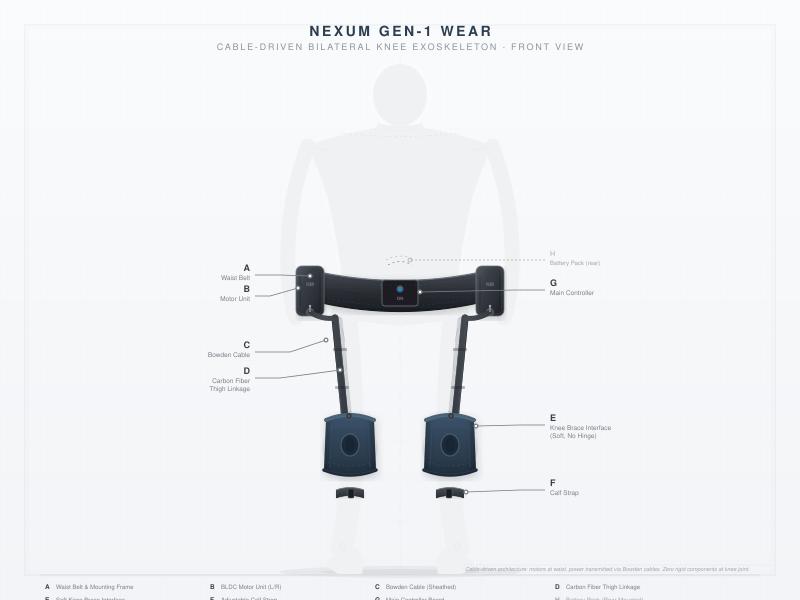
Gen 1 产品穿戴图 · 碳纤维框架 · AK80-9低减速比电机 · 腰带供电 · 30秒穿戴 · 断电Fail-Safe
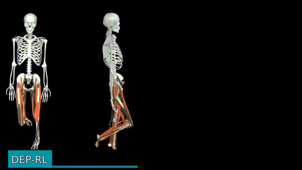
刚性肌腱肌骨模型 · 肌肉以直线力矢量驱动骨骼
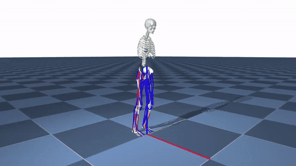
弹性肌腱肌骨模型 · MyoWarp GPU加速 · 80肌肉·2048并行世界
绝大多数竞品不使用肌骨模型——PID/FSM 直接输出预定义力矩曲线，所有用户收到相同的助力策略。没有肌骨模型，就无法将传感器数据转化为"这块肌肉在做什么、这个关节在承受什么"——这是外骨骼赛道公认的核心卡点：没有肌骨模型和联邦强化学习 = 做不了安全稳定。做不了个性化。做不好膝关节。技术最领先的竞品 Ascentiz 的公开目标是使用 OpenSim——一个 1990 年代的单线程 CPU 工具，比 MyoWarp 慢三个数量级，且只能计算关节力矩，无法建模到肌肉与肌腱层面。Bones 从刚性肌腱到弹性肌腱，在已知外骨骼团队中唯一覆盖完整肌骨仿真谱系。
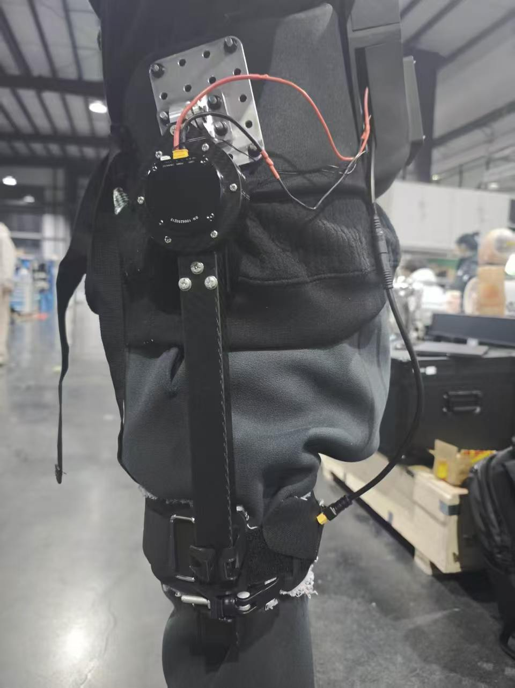
髋关节外骨骼原型机 · 已搭建完成
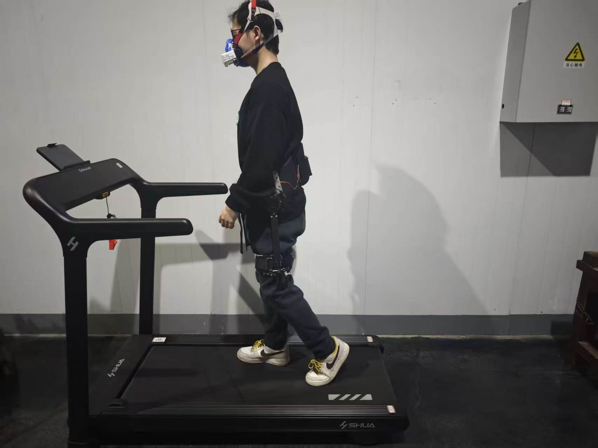
髋关节外骨骼原型穿戴测试 · 生物代谢指标实测
左膝 KAM 指数
0.82 ↓8%
正常范围 0.6–1.2 · 右膝 0.95 ↑2%
连续 12 天训练 日均 45 分钟 · 完成率 87%
⚠ 左膝负荷昨日升高 12% 建议减少上下楼 · 增加按摩模式
子女端 · 首页 Dashboard
实时训练 同步中
肌群激活热图 · 支撑相
左
右
■ 高度激活 ■ 中度 ■ 低度
子女端 · 实时训练监控
治疗师备注 · 王医生 7/6 14:30
本周步态对称性持续改善，左腿负重比升至87%（上周82%）。步频稳定。建议下周辅助等级调至Level 3，重点关注右腿摆动期控制。
联邦学习策略更新
下楼辅助力矩 → 14Nm · 基于 1,247 名相似用户聚合
子女端 · 周报
活动能力评估
基于 gait biomechanics 的临床级指标
6 分钟步行测试 (6MWT)
412 m
MCID 阈值 30m · 较上周 +22m · 高于临床意义阈值
第1周 390m → 第2周 398m → 第3周 405m → 本周 412m
步态不对称度
6.1% ↓ 从 8.2%
正常 <5% · 膝OA患者均值 8–15% · 从异常区间向正常收敛
双膝力矩分布 · 支撑相
左膝 46% 差值 2% 右膝 48%
子女端 · 活动能力评估
膝安 KneeEase
GEN 1 · 适老控制面板
模式选择 · 按一次循环
辅助力度调节
LEVEL 2
紧 急 停 止
老人端 · 设备物理按键面板
品牌定位与法律防火墙
膝关节外骨骼的最大商业风险是产品责任 。老年用户摔倒可能导致髋部骨折（1年内死亡率20-30%），触发严格产品责任+举证倒置（《民法典》第1202条）+惩罚性赔偿（第1207条）。所有主要竞品都算过这笔账，选择了避开老年市场。Bones选择直面这个风险——用五层防护体系确保产品安全和法律合规。
硬件 Fail-Safe
电磁离合器断电自动脱开（<30ms）·双MCU独立监控·物理急停按钮·任何单点故障→零助力而非错误助力。
软件安全包络
RL策略输出力矩实时包络检查·IMU异常检测→渐进降力至零·跌倒预测·固件OTA双签。
法律合规
消费级定位（非医疗器械·不宣称医疗功能）·《广告法》第17条合规·产品包装使用"运动辅助·健康穿戴"用语·用户协议+排除标准。
产品责任险
大家财险2025年7月首单·平安产险2025年8月·政府保费补贴50-80%·设备日志作为事故证据。
本文档包含疾病流行病学数据（OA患病率·患者规模·TAM测算），用于市场分析。Bones产品注册为消费电子产品，定位为运动辅助装置。40岁和80岁的膝关节需求差异巨大，同一产品无法同时服务两个人群——产品设计聚焦膝关节不适人群的通用需求，不以年龄或疾病标签定义用户。
1、一个被忽视的全球危机
地球上每两秒钟，就有一位老人因为膝盖疼痛而选择不出门。
全球5.28亿人患有骨关节炎，其中膝关节占60-85%——3.2至4.5亿人。终生患病风险41-46%。每年造成约1万亿美元经济损失，超过全球糖尿病负担的总和。
膝关节骨关节炎不是"老了自然会有的小毛病"。它是一个持续恶化、不可逆转、最终只能换关节的进行性疾病。从第一次膝盖疼痛到接受全膝关节置换，平均病程10-15年。在这10-15年里——每一天，每一步，每一次上下楼——疼痛都在提醒患者：你的身体在衰退。
一位68岁的退休教师，住在没有电梯的老式居民楼五层。膝关节内侧软骨已经磨掉了大半。下楼时股骨和胫骨之间的压力相当于体重的三倍半——她说那种感觉"像针扎一样"。
女儿给她买了所有能买到的东西：护膝太紧、太热，戴不住。拐杖占了一只手，买菜时没法提袋子。止痛药吃了胃疼。医生说她"还没到手术的指征"——但每天下楼的痛苦不会因为"没到手术指征"而消失。
她不是一个人，她是一个缩影。
在大洋彼岸，Robert，65岁，科罗拉多退休工程师。每周hiking三次是他退休生活的核心。但双膝OA让每次下山都变成煎熬——"I'm not ready to give up the trails."他试过登山杖（占双手）、护膝（不舒服）、可的松注射（只能管几周）。医生说他"还没到置换关节的年龄"——但每次下山膝盖的疼痛不会因为"没到年龄"而消失。
在东京，山田太太，70岁，独居。去超市500米的距离现在要走15分钟。她不想麻烦在名古屋工作的儿子。"迷惑をかけたくない"（不想给人添麻烦）。Cyberdyne HAL太贵、太复杂、需要医生处方。她需要的不是一台医疗设备——而是一个轻便、不显眼、她自己就能穿戴的日常辅助。
王阿姨、Robert、山田太太——他们是全球5.28亿膝关节OA患者中的三个。不同的国家，不同的文化，不同样的支付体系——但面对的是同一个问题：在止痛药和关节置换之间的10-15年里，没有任何真正有效的解决方案。这个人群的日常需求不是登山、徒步、越野跑——而是下楼买菜、走完trail、去超市、从沙发上站起来。他们需要的不是一个"增强运动表现"的户外装备——他们需要一个能让他们继续正常生活的产品。
2、现状：两千亿美元的问题，没有一个好答案
全球每年为膝关节疼痛支付的费用超过$200B——涵盖拐杖（$3B）、护膝支具（$2B）、功能鞋（¥50亿中国市场）、止痛药（$19B+仅美国）、注射治疗、物理治疗、以及每年280万例膝关节置换手术。但这个市场里的每一个产品都是妥协。
现有方案 年市场规模 它解决了什么 它没解决什么——而这才是关键 拐杖 $3.0B 单点支撑，对侧使用可减少KAM约20% 多数老人默认同侧使用——反而加重病情（Chan 2005）。上楼完全无效。占用一只手。56%的人宁愿用雨伞代替拐杖以避免"残疾"标签（Maximo 2024） 膝关节支具 $1.4-2.0B 被动外翻矫正，减少KAM约10% 1年废弃率72%（Squyer 2013）。不舒服、闷热、下滑需反复调整。固定矫正角度无法适应不同活动。静态方案对动态问题：无法在坐-站时主动助力、无法在行走时实时调节角度、无法适应不同活动之间的切换——这是所有被动支具的根本局限 功能鞋 ¥40亿（足力健巅峰） 防滑、减震、舒适 零膝关节力学干预。足力健验证了中国子女的付费意愿——但它改变不了膝关节内收力矩。品质崩塌后品牌溃败，留下的是一个被验证的、未被满足的巨大需求 止痛药/注射 $19B+（仅美国） 缓解症状、消炎 化学掩盖，非力学干预。NSAID长期使用损伤胃肠和肾脏。皮质类固醇注射每3-4月需重复且可能加速软骨流失。患者需要减少关节负荷，不是麻痹神经末梢 轮椅/代步车 $1.5-2.2B 100%卸载，恢复移动能力 完全消除负重=股四头肌萎缩加速。股四头肌无力是膝OA最重要的可调控风险因素——既是病因也是后果。轮椅解决了移动，但牺牲了行走能力本身 关节置换手术 280万例/年 根治疼痛，置换关节 不可逆。植入物寿命15-20年。20-25%不满意率。患者能拖就拖——"疼痛还能忍"是最常见的延迟原因。在"没到手术指征"和"只能手术"之间没有任何中间方案 髋关节外骨骼 $0.5B+（消费级） 髋关节摆动相助力，减少行走代谢成本 助力在抬腿（摆动相），膝OA疼痛在承重（支撑相）。Virginia Tech研究中观察到：特定髋外骨骼在特定条件下使膝关节吸收功率增加9-13%（实验室条件·具体数值因设备和工况而异·详见研究原文）——帮了髋，累了膝。用户反馈："大腿轻松了，膝盖照旧疼" 现有膝关节外骨骼 $0.5B（极早期） 膝关节助力，部分减少负荷 全部使用通用AI或固定PID控制——所有用户收到相同策略。无一个性化RL力矩。无一专为膝关节OA设计。无一覆盖坐-站和蹲起。场景覆盖率仅约35%。现有产品本质上都是"户外运动装备"——它们在产品定位上避开了任何可能触发医疗监管的表述
这就是未被满足的需求缺口。
拐杖不给力。护膝不舒服。止痛药伤身体。手术太极端。髋外骨骼帮错了关节。膝外骨骼用了错的方法。
膝关节不适人群在这个需求缺口里度过10-15年——每天面对活动受限，看着自己的活动范围从"整个城市"缩小到"楼下超市"，再缩小到"家门口"。
膝关节外骨骼是这个缺口里唯一可能的答案。但现有的膝关节外骨骼全是为户外运动设计的。他们的用户画像是35岁的登山爱好者，不是68岁的退休教师。他们用通用控制算法输出千篇一律的助力曲线——无法区分内侧OA和外侧OA，无法适应每个人的独特磨损模式。
不是"外骨骼解决不了这个问题"。是"还没有人认真为这个人群做过外骨骼"。
3、方案：一台理解你膝盖的机器
一台消费级膝关节智能外骨骼。不是医疗设备，不是机器人——是日常佩戴的运动辅助装置。安全是产品定义的第一原则：断电自动脱开至零阻力——任何单点故障不产生错误助力。以下从产品边界、品类定义、竞争格局三个维度定义方案。
维度 Bones 为什么竞品做不到 产品形态 消费级膝关节外骨骼硬件。Gen 0：外挂电机·有线控制·~3kg——先解决"有用"。Gen 2：运动护具外观·1.5-2.0kg·电机紧凑外置于膝关节铰链处。Gen 3：柔性执行器集成·外观接近普通服装。App配套：子女端KAM可视化+跌倒告警 竞品面向户外运动（Skip/DNSYS/极壳），或外观偏向医疗器械（远也PowerKnee三条绑带）。针对膝关节OA老年人群的消费级产品定义仍处于早期阶段 核心控制 RL个性化力矩。同一台设备对内侧OA输出外翻力矩（减少内侧负荷），对外侧OA输出内翻力矩。直接优化膝关节内收力矩（KAM）——膝OA的核心生物力学指标，解释69%的内侧间室负荷变异。目标KAM减少20%+（vs PID基线·仿真目标·待实机验证） 据公开信息，主要竞品采用PID或通用AI方案——所有用户收到相同策略。优化目标是代谢成本或步态对称性——这些是间接指标，不是KAM。无法区分内侧vs外侧磨损 自适应安全 RL的安全优势是Bones敢做老年市场的核心算法底气。Gen 0即可实现。 训练时（MyoWarp仿真）：域随机化包含绊倒/失衡/步态突变场景——PPO策略在数百万次试错中学会"IMU模式X→渐进降力"的因果链，固化在神经网络权重中。部署时（ESP32-S3·int8量化·<1ms推理）：冻结策略检测到步态变异性增大或躯干倾斜角超阈值→渐进式降低辅助力矩 ——不是等到摔倒才切断。硬件叠加电磁离合器断电自动脱开（<30ms）。这不依赖在线学习或Gen 2——是仿真训练中已经学会的行为。 PID/FSM无法做到——它们只能一刀切断电，而切断瞬间可能加剧失衡。竞品全部使用PID/FSM或通用AI——检测到异常时只能一刀切断助力。无法在算法层面实现渐进式安全响应。这是竞品避开老年市场的重要技术原因——不仅仅是法律恐惧。详见品牌定位与法律防火墙 场景覆盖 Gen 0覆盖80%高负荷场景（行走·上下楼·坐-站——最高频+最疼痛的四个场景）。Gen 2覆盖100%（含蹲便器蹲起——中国独有痛点·竞品零覆盖）。竞品场景覆盖率仅约35% 坐-站（每天20-50次）、长时间站立、蹲起——竞品全部未覆盖。这些恰好是老人最频繁遇到的日常动作，也是疼痛最剧烈的时刻 底层模型 416肌肉Hill型模型。唯一能建模半月板、十字韧带、髌股关节等软组织力学特性的方案。从肌肉激活→关节接触力→最优力矩的完整计算链路 目前主要竞品均使用刚体连杆模型（OpenSim简化版）。刚体无法建模半月板的非线性黏弹性、十字韧带的张力-应变关系、肌肉共收缩对关节负荷的影响 数据飞轮 个性化联邦学习。第1000个用户的设备预期比第1个精准（联邦学习的理论优势·待用户规模验证）。跨用户策略共享，越用越好。这是在已知消费外骨骼产品中尚未出现的数据网络效应 所有外骨骼公司是数据孤岛。用户A的数据不会让用户B受益。每一台设备都在从零开始 产品功能 全维健康闭环。同一台设备、同一套电机、同一AI模型驱动：①助力模式（下楼/行走/坐-站时减少膝关节负荷）②训练模式（抗阻坐-站·强化股四头肌——维持肌肉功能·打断恶性循环）③按摩模式（运动后低频振动放松·提升依从性）④监测模式（压阻式柔性应变传感器阵列+416肌骨模型→实时追踪肌肉状态·子女端可视化）。全维健康闭环由软件切换·边际硬件成本仅¥25-50（传感器） 远也PowerKnee有助力+训练+按摩但无个性化RL·无联邦学习·无肌肉监测闭环。压阻式柔性应变传感器有监测但无电机执行能力。Bones是唯一同时具备感知（416模型+传感器）和执行（电机）的闭环系统 制造策略 Bones做全球消费硬件品牌。核心部件自研或深度定制。整机组装依托中国供应链优势。市场策略：中国（全球最大膝OA单一市场·最熟悉渠道）与北美（Kickstarter验证·消费外骨骼最大线上市场）同步启动，Gen 2-3拓展欧洲和日本。不打"先国内后海外"——而是"全球多市场并行·供应链集中于中国" 远也自研硬件全链条（投入高、周期长）。极壳自建品牌和渠道（资本密集）。Bones走中间路线：核心自研+合作组装
3.2 品类定义：这不叫"外骨骼"——这是四个赛道的交叉
"外骨骼"这个词对老年人意味着什么？
军事装备。医院里的钢铁架子。《异形》里的动力loader。一个68岁的退休教师永远不会走进一家店说"我想买一个外骨骼"。
她可能会说："我想买一个能让我下楼不疼的东西。"
这个产品需要一个新名字、一个新品类、一种新的沟通方式。更深层的问题是：Bones的品类归属是什么？答案不是一个——是四个赛道的交叉地带。
赛道交叉定位
赛道 代表公司 核心能力 我们贡献什么 可穿戴健康设备 Apple Watch·WHOOP·Oura·Dexcom 传感器+数据+健康洞察 压阻式柔性应变传感器·IMU·力传感器→416肌骨模型→肌肉/关节状态实时推断。和Apple Watch的区别：我们不只是告诉你膝盖状态不好——我们直接干预 具身智能与机器人 人形机器人·Tesla Bot·Figure AI 全身运控·RL·Sim-to-Real 创始人背景的核心优势。全身20-40DOF人形运控→外骨骼1-6DOF降维应用。RL+MyoWarp仿真管线直接复用。人形机器人行业2024-2026年的爆发式发展积累了可直接迁移的方法论 神经力学与康复医学 康复机器人·生物力学·肌骨建模 肌肉骨骼建模·运动分析·个性化康复 416肌肉Hill型模型——在已知竞品中未见同类方案。从神经→肌肉激活→肌腱张力→关节接触力的完整计算链路。这是"个性化力矩策略"的理论基础——没有这个模型，RL不知道优化什么 消费电子与智能硬件 小米·DJI·极壳·GoPro 硬件品牌·供应链·全球化渠道 消费级定价（¥3,999-4,999）·运动护具外观·30秒穿戴·子女端App·全球多市场定价策略
为什么四个赛道交叉=壁垒：做可穿戴的不懂机器人控制（不知道怎么做执行器）。做机器人的不懂神经力学（不知道优化什么指标）。做康复的不懂消费电子（做不出消费者愿意买的产品）。做消费电子的不懂具身智能（没有RL+Sim-to-Real能力）。Bones恰好在这四个圆的交集上——这构成了系统性的竞争优势。
双名称体系
命名方向 示例 优点 风险 适合场景 功能描述型 智能护膝 · 膝动力 · 行走助手 · 步态伴侣 直观·无学习成本·不吓人 可能被认为"就是个护膝"——低估技术含量 中国市场首选。老人和子女都能一眼理解 品牌情感型 KneePal · StepOne · WalkFree · MoveEase 建立品牌资产·国际化·不局限于膝 需要市场教育投入 海外市场·Kickstarter·长期品牌建设 技术增强型 智能膝关节辅助 · AI膝部穿戴 · 个性化步态引擎 体现技术壁垒·B2B/投资人沟通 老人听不懂·子女需要翻译 投资人pitch·B2B销售·技术白皮书 推荐策略 分层命名体系：①消费者端（中国）：膝安·智能护膝——老人和子女一眼理解 ②消费者端（海外）：KneeEase——"ease your knee"——直观 ③投资人/技术端：膝关节外骨骼——保持行业对标 ④公司定位：具身智能+神经力学驱动的消费级可穿戴健康平台——四个赛道的交叉
3.3 产品边界：能解决什么、不能解决什么
在描述这个产品的潜力之前，必须明确它在当前阶段的能力边界。
维度 可以做到的 做不到的（或需要更长时间才能做到的） 核心效果 减少膝关节内侧间室负荷（目标KAM减少20%+·vs PID基线·仿真目标·待实机验证）。在行走、上下楼、坐-站时提供个性化辅助力矩。减缓关节负荷累积——通过减少每次步态的KAM 不能逆转已有的软骨损伤。这是力学负荷管理和功能维护，不是疾病治疗。不能帮助终末期OA（骨对骨接触）患者——他们需要关节置换 负荷减少 减少力学来源的关节负荷（关节负荷过大引起的疼痛）。这是膝OA不适的主要生物力学来源 不能完全消除所有不适。OA不适有炎症成分（滑膜炎）和神经病理成分（中枢敏化）——这些无法通过力学手段完全解决 技术可行性 现有电机（CubeMars AK80-9·9:1低减速比·22Nm峰值）+电池（50E 4S1P）+碳纤维框架——BOM $400-800，总重2-2.5kg。RL控制可在仿真中训练，部署到MCU。这些是已证明可行的 Sim-to-Real迁移有不确定性。仿真中训练的策略可能在真实人体上表现不同。需要大量真人测试迭代。MyoWarp管线可以减少但不能消除这个差距 安全与法律风险 硬件级故障安全（电磁离合器断电自动脱开）+ 消费级定位（非医疗器械·不宣称医疗功能）+ 产品责任险（大家财险/平安产险2025年已推出首单外骨骼责任险）+ 分层沟通策略：投资人获得完整流行病学数据（投资决策需要全面信息）·消费者端使用"膝关节不适人群"（合规且精准）·广告聚焦使用场景利益（用户自我筛选） 老年用户摔倒可能导致髋部骨折（1年内死亡率20-30%）。任何主动外骨骼都存在残余风险。中国《民法典》第1202条严格产品责任+举证倒置。所有主要竞品因此避开老年市场。控制策略的bug、传感器故障、极端使用场景都可能造成用户摔倒。Bones的策略不是忽视风险——是用五层防护（硬件·软件·法律·保险·语言）管理风险至可接受水平。详见品牌定位与法律防火墙 用户接受度 可以做到"比现有方案更好"——比护膝更有效、比拐杖更方便、比轮椅更健康。Gen 1的用户体验可以超过现有竞品 不能保证所有用户都会接受。膝关节支具1年废弃率72%是前车之鉴。穿戴舒适度、外观社会接受度、使用便利性——这些和KAM减少同样重要。我们可能需要在产品迭代中解决这些问题 制造能力 核心部件（碳纤维框架、控制PCB）可逐步自研。整机组装依托产业合作资源。中国供应链（碳纤维/电机/电池/IMU）已成熟 量产一致性是巨大挑战。从10台原型到1000台量产，质量控制、供应链管理、售后服务体系——这些不是算法问题，是制造业问题。我们可以学，但需要时间和资源 商业模式 可以靠硬件销售盈利。Gen 0-1通过KS和国内线下渠道验证需求。BOM $400-800，零售$1,299-1,999（全球统一定价·含税和物流差异），毛利率35-50% 不能保证快速盈利。全行业无一外骨骼公司实现净利润为正。我们需要比竞品更高效的获客和更低的退货率——这些尚未被验证
核心结论：
这个产品可以帮助轻度至中度膝关节OA患者——减少他们的疼痛、改善日常活动能力、提高生活质量。它的生物力学原理是可靠的（KAM减少），技术栈是可行的（RL+电机+碳纤维），市场是存在的（数亿人在未被满足的需求缺口里）。
但它不是一个完美的、一步到位的解决方案。它是一个需要持续迭代的产品。Gen 0能验证"RL个性化力矩让膝关节更轻松"这一核心假设，但重量、外观和续航需要Gen 1-2迭代优化。Gen 2才能解决"好看、舒服、个性化"。Gen 3才能做到"几乎看不出"。每一步都有技术风险和商业风险。
这是一个五到十年的产品演进过程——每一步都比上一步更好地解决一个真实的、巨大的、被忽视的问题。在产品的技术演进过程中，对用户诚实地界定产品的边界——这个产品现阶段能做什么、不可以做什么、需要多长时间才能做到什么程度——是建立品牌信任的基础。
3.4 竞争格局：有人尝试、无人突破——为什么这个蓝海仍待破解
如果膝关节OA外骨骼是一个如此巨大的机会，为什么极壳（$120M融资）、Skip（Google X背景）、DNSYS、远也科技都没有做？他们不可能看不到这个市场。
以下基于可验证的数据和工程分析。
公司 他们在做什么 为什么他们没有做膝关节OA老年市场 极壳 Hypershell$120M·出货数万台 髋关节消费外骨骼·户外运动 髋关节是入门品类——球窝关节、单向助力、容错高、技术难度最低。户外运动人群（年轻、科技爱好者）是任何新硬件品类最自然的早期用户。极壳的创始人孙宽是硬件创业者，不是生物力学或医疗背景——他的优势在渠道和品牌，不在膝关节控制。极壳的策略是做最大的消费电子市场，而非最难的医疗级市场。这是聪明的商业选择，不是"忽略了老年市场" Skip MO/GOGoogle X衍生·$6M 膝关节软体外骨骼·高端户外 Skip明确表示他们不是为老年人设计。$5,000定价、始祖鸟联名、户外登山定位——目标用户是"高净值户外爱好者"。创始人Kathryn Zealand的祖母跌倒经历是创业动机，但商业上他们选择了更容易触达的高端户外市场。$6M融资不足以支撑老年市场的合规和安全投入——做户外是资源约束下的理性选择 DNSYSKS $3M+·10,000+台X1 髋+膝外骨骼·户外运动 DNSYS是距离我们最近的竞品——他们已经在做膝关节（Z1）。Z1的50%用户年龄>50岁。但他们没有为老年市场重新设计产品：没有坐-站辅助、没有蹲起辅助、没有子女App、没有线下体验渠道。他们的团队背景是大疆/赛格威/小米——消费电子基因，不是老年产品基因。他们看到了老年用户，但没有为他们做产品定义 远也科技 Yrobot$11M·7年 膝关节外骨骼·消费级（部分营销偏向医疗） 远也是唯一在做膝关节老年市场的公司——但他们的执行证明了这条路有多难。7年$11M融资，PowerKnee首发1年后JD月销仅数百台。技术路线据公开信息为AI预测+前馈导纳控制——能否实现个性化力矩取决于具体实现方式，我们不做断言。创始人丁也是哈佛博士、Science Robotics作者——学术背景极强。远也的商业化进展（7年$11M、JD月销数百）可能受多重因素影响：定价、渠道、产品定义、市场教育成本等，不应简单归因于技术路线。远也证明了这个市场存在（JD有真实销量），同时也说明"看到市场"和"拿下市场"是两回事 Bones 膝关节外骨骼·消费级运动辅助装置 远也是膝关节老年市场的重要先行者——7年$11M的投入和JD月销数百的数据，验证了市场需求的存在，也揭示了这条路径的挑战。Bones选择的差异化路径：①RL个性化力矩（理论上能为不同磨损模式输出不同策略，实机效果待Phase 0验证）②肌骨模型作为仿真引擎（减少硬件迭代次数）③膝关节不适人群优先的产品定义（从第一天就为这个人群设计，而非将户外产品改款）④更轻量的资本策略（天使$2-3M先验证核心假设）。远也的经历表明：技术路线只是变量之一，定价、渠道、产品定义、执行效率同样关键。
为什么别人没做——不是因为市场不存在。是因为市场存在但被五个因素遮蔽：
1. 支付意愿已获验证。足力健巅峰¥40亿证明老年健康消费品存在强劲购买力。海尔W3在200+线下店被老年人试穿排队。消费外骨骼线上785%增长中相当比例为子女为父母购买。老年健康消费不是"有没有钱"的问题——是"有没有对的产品"的问题。
2. 技术难度排序。髋关节是入门，膝关节是进阶。先做髋再做膝是自然的难度递进。就像Tesla先做Roadster再做Model 3——不是因为"没人需要大众电动车"，是因为技术需要从高端向大众演进。膝关节外骨骼的技术条件（轻量电机、紧凑电池、RL控制）在2025-2026年才刚成熟。
3. 监管恐惧。老年=医疗=FDA/NMPA监管——这是创业者的条件反射。但消费级膝关节外骨骼可以不宣称医疗功能——就像Skip MO/GO是"户外装备"而非"医疗设备"。监管风险可以通过产品定位和法律设计来管理。
4. 渠道壁垒。老年产品的线下渠道（社区、药店、养老机构、医院康复科）——极壳的Kickstarter+Amazon模式无法触达。这是为什么线上退货率80%+。但海尔200+线下店证明了渠道是存在的——只是大多数科技创业者不知道如何进入。
5. 注意力不对称。外骨骼行业的资本和媒体关注长期集中在"增强人类能力"（工业助力·军事·户外运动）方向上，膝关节OA老年人群的需求在行业叙事中尚未得到充分关注。全球5.28亿膝关节OA患者、每年1万亿美元经济损失、中国3.23亿老年人——市场规模与当前行业关注度之间存在显著不对称。
3.5 市场策略：全球市场·中国首发
膝关节健康是一个全年龄段全球性问题。创业公司的资源有限，正确策略是：Gen 1阶段（2026-2028·天使轮后）膝安/KneeEase（膝关节不适人群·最大刚需·政策东风·单一品牌）→ Phase 2（2028-2030）Kine·户外运动（独立品牌·KS验证·已由极壳验证市场）→ Phase 3-4（2030+）职业站立+健身（品牌延伸+独立品牌）。同一硬件平台·多品牌分层·全球市场。详细策略见6.2.16（多品牌阶梯战略）
阶段 市场 时机 为什么从这里开始 进入方式 Gen 0-1阶段 中国 Gen 0-1 全球最大膝OA单一市场（3.23亿60+·~1亿运动能力下降）。政策东风最强劲。供应链最完整。创始团队最熟悉渠道与用户 线下社区/养老机构体验→子女App下单。参考海尔200+线下店模式 Gen 1-2阶段 北美 Gen 1 全球最大消费外骨骼线上市场。Kickstarter验证PMF。老年用户自购意愿高于中国。FSA/HSA支付路径可探索 Kickstarter→Amazon→独立站。独立生活叙事 Gen 2-3阶段 欧洲 Gen 2-3 德国DiPA数字健康应用目录可覆盖。CE认证后进入医保体系。骨科医生推荐渠道成熟 CE认证→医生推荐→医保准入。临床数据驱动的慢决策市场 Gen 3+阶段 日本 Gen 3 全球老龄化率最高（65+占29.3%）。介護保険覆盖。独居老人自购意愿强。小型化设计刚性需求 小型化产品成熟后进入。租赁模式
核心逻辑：同一技术平台，四种本地化策略。硬件全球统一。本地化的是叙事、定价、渠道。不是"在四个市场同时启动"，是"用四个阶段覆盖四个市场"。
4、时机：2026——所有条件在同一时刻成熟
六个独立条件首次在中国同时满足——包括2025年才落地的消费级外骨骼保险 ：政策端密集发文、供应链完整度>80%、65+人口突破2.8亿、AI/RL工程化能力成熟、全球消费外骨骼市场爆发、消费级外骨骼产品责任险2025年首次可用 （大家财险2025年7月·平安产险2025年8月·政府保费补贴50-80%）——这意味着2025年之前进入老年市场是裸奔·现在有防弹衣。时机不是"还可以做"——是"现在不做以后更难"。
条件 为什么是现在 政策 十五五规划首次写入具身智能。八部门联合发文支持外骨骼与肌肉外甲。民政部设立科技创新基金。工信部推动万台级实景实训。山东已将外骨骼纳入消费补贴目录。这是中国外骨骼政策密度最高的年份 市场 中国外骨骼市场5年增长15倍（2021 ¥6.8亿→2025 ¥105.6亿）。2026年1-4月线上零售额同比增长785.5%。全球市场CAGR 29-49%。海尔（世界500强）已亲自下场——巨头入场验证了赛道 资本 极壳$120M（蚂蚁集团+美团龙珠领投，估值$400M）。程天科技¥5亿+。傅利叶智能¥15亿+。强脑科技¥20亿+（估值¥120亿）。赛道已被充分验证，但膝关节专项+RL个性化路线尚无对标标的 供应链 碳纤维、无刷电机、行星减速器、锂电池、IMU传感器——全链条已实现国产化。消费外骨骼BOM已降至$400-800区间。绿的谐波全球谐波减速器市占率>35%，比进口便宜50% 竞争窗口 膝关节外骨骼赛道7-8家参与者全部处于原型/Kickstarter/早期量产阶段。无一家实现规模化盈利。无一家使用RL个性化力矩。无一家专为膝关节OA老年人群设计产品。品类定义权尚未确立。竞争格局预计2027-2028年趋于明朗——现在入场是最佳时机
5、团队
汪牧星 · 联合创始人
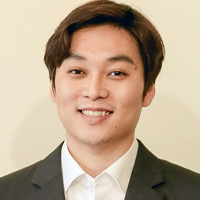
Seungmoon Song
赵子睿（CEO） —— Columbia University 电子工程硕士（机器学习方向·师从美国国家工程院院士 Shih-Fu Chang）。Manhattan Distance Inc. 联合创始人。毕业后由 Eddie Hult 引入 EF Boston，在 Jorge Gonzales 带教下开发 EF Tours Companion 及 WeShare 等全球旅行消费产品。后加入华为美国研究院 Futurewei IoT Lab，主导开发通用物联网平台 Falcon，覆盖智能家居·工业设备·智能网关场景，硬件·固件·操作系统·上层应用全栈，及其在边缘计算与设备隐私保护领域的应用延伸。智擎机器人（宇树金牌合作伙伴）CTO——主导人形机器人多模态硬件与背包系统设计、RL运控算法（人形机器人八段锦·五禽戏等准静态仿真训练被学习强国等主流媒体报道）、具身大脑与数采管线、文旅导览·医疗康复·工业巡检场景的全栈交付。同时具备 IoT 全栈架构+人形机器人硬件工程+运控算法+肌骨RL学术训练的复合背景。另持有中华人民共和国法律职业资格——对人机交互消费品的法律责任边界与产品安全风险有体系化认知。外骨骼作为人机物理耦合最深的消费品品类，其法律风险的核心不是"产品会不会出问题"，而是"出了问题之后，是人因、机因、还是偶发事件——谁来承担、如何证明"。这一认知从Day 1内建在公司的产品安全架构与合规设计中。
汪牧星（联合创始人） —— Northeastern University 计算机工程博士在读。MyoWarp 框架联合发起人——Bones RL 策略训练的核心仿真基础设施（GPU加速弹性肌腱肌骨模型·2048并行世界·5.3B步/天训练吞吐）。核心研究方向为个性化联邦学习的子空间适应与跨用户泛化 ：解决"如何让第1000个用户的模型比第1个精准一个数量级"这个根本问题。pFedAC 等算法通过低维子空间学习实现跨用户知识迁移——每个用户的RL策略在保护隐私的前提下，从其他用户的经验中提取可泛化的运动模式。这是 Bones Gen 2+ 联邦学习架构的理论基础，也是"千人千面"个性化力矩从仿真走向规模部署的关键技术路径。
吕欣阳 —— 华中科技大学机械学院科创实验班。欣澈科技创始人·Myoflex Trainer 肌肉监测可穿戴项目（柔性传感+肌肉激活度算法）。全国大学生智能车竞赛国家二等奖。2023 VEX 机器人赛亚洲锦标赛全国第八·国家二等奖。2024 VEX 世锦赛亚洲选拔赛亚洲第七·最佳设计奖。清华医工结合创新大赛创意赛道全国二等奖。小米产品经理实习经验。已完成髋关节外骨骼原型机，正在搭建上肢外骨骼原型机及设计单铰链架构膝关节外骨骼原型。负责原型硬件工程与快速迭代。
周峰 —— Columbia University 电子工程硕士。Manhattan Distance Inc. 联合创始人。Bloomberg 纽约总部。运满满·猎萝卜·OYO 早期团队。微软云数据基础设施团队技术负责人。负责个性化数据平台：肌骨仿真数据管线·联邦学习数据基础设施·用户生物力学数据闭环。
陈健俊 —— Johns Hopkins University 计算机科学硕士·Columbia University 化学工程硕士。微软大规模机器学习系统·大模型与智能体系统设计·MLOps 与生产系统可靠性。Salesforce·Vantiv·Health Integrity。YC 创业经历（智能手表）。负责软件解决方案与海外市场。
学术导师团队 —— 覆盖外骨骼RL从仿真训练→分布式部署→联邦优化收敛的完整理论链。全行业所有外骨骼公司——无论拿了$120M还是做了十年——没有第二家同时拥有覆盖这条链的学术基础设施。这是因为这条链需要三个高度专业化学科（神经力学·联邦学习安全理论·联邦优化收敛数学）的顶级研究者同时参与。而赵子睿的具身智能硬件与RL运控实战经验——从人形机器人多模态硬件到宇树全栈交付——是将这条理论链工程化落地的关键。Bones从第一天就围绕"理论链+工程落地"的完整闭环组建团队。
Seungmoon Song —— Northeastern University 机械与工业工程系助理教授。CMU Robotics PhD（Hartmut Geyer·神经力学控制奠基人之一）·Stanford Biomechatronics Lab 博士后（Steve Collins·外骨骼人机环路优化公认顶尖实验室）。NeuMove Lab PI。NIH K99/R00 获得者。MyoSuite（肌骨仿真+RL训练领域事实上的标准平台·NeurIPS MyoChallenge 连续三年基于此框架）核心贡献者·MyoAssist（首次将 Dephy·HMEDI·Humotech·OSL 等商用外骨骼模型集成到 MyoSuite）发起人。如果把外骨骼行业比作人形机器人行业，Song 做的事就是宇树三年前对人形机器人做的事——把基础设施标准化，让后来者不需要重新发明轮子。
苏丽丽 —— Northeastern University 电子与计算机工程系助理教授。UIUC PhD·MIT CSAIL 博士后。NSF CAREER Award。联邦学习在对抗环境下的安全性与鲁棒性——解决"用户数据不出设备但模型不能被恶意梯度污染"的核心理论问题。对 Bones 的意义：当数万台外骨骼设备通过联邦学习共享策略更新时，必须保证即使部分设备上传了受损或被篡改的梯度，全局模型仍然能正确收敛——这是消费级联邦学习从百人到万人规模化部署的数学前提。
杨朋昆 —— 清华大学统计与数据科学系副教授。UIUC PhD·Princeton 博士后。IEEE Thomas M. Cover Dissertation Award。杨朋昆的研究方向为高维统计推断与联邦学习的非凸优化收敛理论——在外骨骼联邦RL场景中，这两个方向直接回答"千人千面的个性化RL策略能否在数学上证明收敛"以及"416肌肉的高维状态空间中哪些维度对控制最关键"这两个根本问题。与苏丽丽的"安全"维度正交且互补：苏丽丽保证"梯度不被污染"，杨朋昆保证"不被污染的梯度确实收敛到最优解"。为什么外骨骼RL需要联邦学习的收敛性数学理论。 肌腱肌骨仿真的数学内核本质上是一个多时间尺度刚性ODE系统 ：肌腱力动力学（~1ms）·肌肉激活动力学（~10ms）·关节运动力学（~100ms）耦合在一起。416肌肉Hill型模型×2048并行仿真世界的隐式积分，每一步都是高维非线性求根——这要求数值方法无条件稳定。当这个仿真管线训练出的RL策略部署到真实人体时，面临第二个数学难题：联邦优化在生物力学非IID数据上的收敛性 。每个用户的身体是不同的——腿长·体重·肌力分布·OA严重程度·代偿步态模式——这不是统计噪声，是结构化分布偏移（covariate shift + concept shift）。经典联邦平均（FedAvg）在非IID条件下已被证明可以发散（Li et al., 2020）。杨朋昆的收敛理论回答了三个对 Bones 商业化至关重要的数学问题：（1）异质性下的收敛保证。 当第k个用户的局部Q-learning更新基于其独特的步态数据时，该更新对全局Q函数的贡献在多轮通信后是否衰减为零？杨朋昆在 TMLR 2025 中建立了联邦Q-learning在非IID条件下的有限样本收敛界——给出了通信轮数T·局部步数K·异质性界δ与最终ε-最优精度之间的函数关系。对Bones的工程意义：给定目标精度ε和用户群体的生物力学异质性上界（可通过肌骨仿真采样估计），我们能计算出需要的最小通信轮数和每用户最小步数——这是Gen 2千人联邦学习部署的数学可行性证明，不是经验猜测。（2）离线RL的安全探索悖论。 外骨骼RL不能像游戏RL那样自由探索——75岁用户的膝关节承受不了随机探索力矩。因此必须采用离线RL（batch RL / conservative Q-learning）：策略只从已有数据学习，不在线试探未知动作。但保守性引入偏差——Q值被系统性低估。问题是：在联邦+离线+保守的三重约束下，全局策略是否仍能收敛到ε-最优？这决定了 Bones 的安全RL架构在数学上是否成立。杨朋昆的统计学习理论框架给出了偏差-方差-通信误差的三元权衡（bias-variance-communication tradeoff）：适当地选择保守系数λ和联邦聚合权重，可以保证收敛到有界的次优解——偏差是安全性的"保费"，理论告诉我们这保费的上限是多少。（3）个性化-数据共享的帕累托最优边界。 更多的个性化意味着更少的跨用户数据共享→更慢的学习。更多的数据共享意味着更少的个性化→更差的个体适配。这是联邦学习中的根本性权衡。杨朋昆的理论给出了这个权衡的数学特征：在给定的用户群体异质性分布下，帕累托最优的个性化程度是多少？这直接转化为产品决策——Bones应该为每个用户训练完全独立的策略，还是共享80%的参数只微调20%？理论给出的答案是一个关于异质性方差σ²的函数，而不是拍脑袋。对 Bones 的工程意义。 这三个数学问题的答案，直接决定了Gen 2规模化部署的工程参数：最小通信轮数→产品固件中的联邦同步频率；每用户最小样本量→UX中的"新用户冷启动步数"；离线RL的保守系数→安全模块的参数设置。没有这套数学理论，联邦RL外骨骼就是一个无法验证安全性与收敛性的黑箱系统——这在医疗器械领域是不可接受的。有了这套理论，Bones的联邦学习架构从Day 1就建立在可证明的数学地基上。这与苏丽丽的安全鲁棒性理论·Seungmoon Song的肌骨仿真基础设施，构成了一条完整的理论链：仿真提供训练环境（Song）→安全理论保护梯度聚合（苏丽丽）→收敛理论保证优化到达最优解（杨朋昆） 。三个环节缺一个，整个体系在数学上不闭合。
6、路径：四年，从有用到无形
四年三代产品：Gen 0验证技术假设（RL优于PID），Gen 1验证产品-市场匹配（Kickstarter），Gen 2启动规模化（千人联邦学习），Gen 3实现商业闭环（年销万台+医保覆盖）。每代产品有明确的度量标准和决策门。
阶段 时间 产品 核心验证 资本 Gen 0 · 原型 0-6月 单膝·外挂电机·~3kg·有线控制 RL力矩在仿真中减少KAM >20% vs PID。10名老年用户测试："膝关节负担感觉减轻了" 自有 Gen 1 · Kickstarter 6-18月 双膝·碳纤维·2-2.5kg·30秒穿戴·IP54 下楼制动60%+。KS验证海外需求，首批100-500台 天使$2-3M Gen 2 · 量产 18-30月 1.5-2.0kg·运动护具外观·电机紧凑外置·左右腿独立RL 千人联邦学习启动。NPS>60。年销1000+台 A轮$5-8M Gen 3 · 规模化 30-48月 <1kg·柔性执行器集成·外观接近普通服装 万人联邦学习。年销10000+台。纳入医保/商保 B轮$15-20M
关键问题与深度论证
以下问题覆盖了膝关节外骨骼创业中产品定义、技术路线、市场竞争、监管合规、资本效率等核心维度。每个回答基于可验证的数据、公开信息和内部工程分析。
# 问题 回答 1 为什么是膝关节，不是髋关节？
市场维度：膝OA占所有骨关节炎的60-85%，是髋的5-10倍。全球3.2-4.5亿膝OA患者 vs 髋OA不足5000万。功能维度：膝痛直接影响下楼、下蹲、坐-站——恰好是老人最高频的日常动作（坐-站每天20-50次）。髋OA主要影响抬腿和翻身，对平地行走影响较小。生物力学维度：髋外骨骼助力在摆动相（抬腿），但膝OA高负荷发生在支撑相（承重）。Virginia Tech研究中观察到：特定髋外骨骼在特定条件下使膝关节吸收功率增加9-13%（实验室条件·具体数值因设备和工况而异·详见研究原文）——帮了髋，累了膝。这意味着髋外骨骼不仅不能解决膝OA，可能还会加重它。详细对比见6.2.13节（膝关节与髋关节的对比分析） 2 产品使用频率会不会太低？这不是一个"下楼机器"吧？
使用频率由场景密度决定，不是由单一动作决定。膝关节OA影响10个日常场景，下楼只是其中最痛的一个。Gen 0覆盖的场景包括：平地行走、上下楼、坐-站——这四个场景覆盖了老人80%的日常高负荷时刻。坐-站每天发生20-50次（从沙发起来、从餐桌起来、上厕所、上下车），是最高频的膝OA高负荷场景。Gen 2扩展到蹲便器蹲起（中国独有高频痛点·竞品零覆盖）、长时间站立（做饭/排队）、不平路面（菜市场/公园）等全部10个场景。这个产品不是"下楼机器"——是膝关节日常辅助设备。使用频率对标：拐杖每天使用（但56%的人因外观原因宁愿用雨伞代替·Maximo 2024）、护膝每天佩戴（但闷热下滑·1年废弃率72%）。Bones的定位：日常膝关节辅助设备——不只是特定场景才用，而是融入日常生活。详细场景分析见6.2.3节 3 为什么极壳、Skip、DNSYS切入不同赛道，而远也做了但效果有限？
不是"没想到"，是技术路线+法律风险 双重壁垒叠加——两者互相放大，单一突破不够：技术路线的根本差异（为什么他们做不了） ——据公开信息，极壳/Skip/DNSYS/远也的主要控制策略均为PID或导纳控制。PID的局限在于：它需要为每个动作模式预设固定的力矩曲线参数——下楼用一套参数，平地用另一套，坐-站用第三套。但老年膝OA用户的步态高度个体化：内侧间室磨损的力矩需求与外侧间室完全不同，右膝代偿左膝的模式每个人都不一样。PID的"one-size-fits-all参数调优"无法处理这种异质性。Bones选择RL个性化力矩路线——策略在MyoWarp肌骨仿真中训练（416肌肉Hill模型而非刚体连杆），学习的是"给定这位用户当前关节状态和地面反力，最优辅助力矩是多少"的映射函数，而非预设的参数表。这个技术路线差异不是渐进优化——是代际差异。RL使Bones能够以安全为前提进入老年市场：策略在仿真中已被训练处理过数万种异常步态（跛行·膝内翻·膝关节失稳），且离线RL的保守性保证部署后不会在未见过的状态下输出危险力矩。PID做不出这个。产品责任风险（为什么他们不敢做） ——老人摔倒→髋部骨折（1年内死亡率20-30%）→严格产品责任+举证倒置（《民法典》1202条）→惩罚性赔偿（1207条）。极壳/Skip/DNSYS都算过这笔账。但仅靠法律合规无法解决这个风险——必须从技术层面让产品本质上更安全 。Bones的五层防护是技术+法律的一体化方案：（1）硬件Fail-Safe（电磁离合器断电自动脱开·<30ms·双MCU独立监控·任何单点故障→零助力）（2）RL安全包络（策略输出力矩实时包络检查·IMU异常检测→渐进降力至零·跌倒预测·离线RL保守Q-learning保证探索偏差有界）（3）DaaS设备日志（记录每次力矩输出+IMU数据+环境上下文·不可篡改·事故后完整还原人因/机因/偶发事件→参见Q19）——这在产品责任诉讼中是关键证据（4）法律防火墙（消费级定位·三层语言体系·产品责任险·用户筛选）。详见品牌定位与法律防火墙 。3.4节 4 远也科技（PowerKnee）已经在做膝关节了，你们有什么不同？
远也是最重要的对标公司——但不是"竞品已占位"，而是"先行者验证了市场+暴露了可超越的空间"。核心差异：①控制策略——远也用AI预测+前馈导纳控制，Bones选择RL个性化力矩路线——理论上能为不同磨损模式输出不同力矩曲线。RL路线的实机效果尚未验证，这是Gen 0-1阶段的核心任务。②数据飞轮——远也是设备孤岛（用户数据不互通），Bones是联邦学习网络（第1000个用户比第1个精准十倍）。③产品定义——远也PowerKnee 5分钟穿戴+三条绑带外露=医疗器械外观，Bones走运动护具外观+30秒穿戴。④执行效率——远也7年$11M，JD月销仅数百——原因可能是多方面的（定价¥7,999、渠道策略、产品外观偏医疗器械、市场教育成本高），未必仅为技术路线问题。Bones天使$2-3M的预算是基于RL仿真减少硬件迭代次数、产业合作方不建工厂的假设——同样需要验证。详细对比见6.2.9.5节 5 全球定价策略是什么？各国的价差合理吗？
全球统一定价区间$1,299-1,999（硬件BOM $400-800，毛利率35-50%）。终端价格差异来自税收、物流、渠道费用和认证成本——不是差别定价，是落地成本不同：中国¥3,999-4,999（含13%增值税·线下渠道成本约30-40%·一部中端手机的价格）。北美$1,299-1,799（KS/Amazon渠道费15-25%·FCC认证）。欧洲€1,199-1,699（含VAT 19-25%·CE认证·医保准入后可大幅下降）。日本¥60,000-80,000（含消费税·介護保険部分覆盖可能）。对标竞品：DNSYS Z1 $1,099-2,298·Skip MO/GO $5,000·PowerKnee ¥7,999。RL个性化力矩提供差异化溢价空间 6 ★ 监管与产品责任风险怎么应对？消费级定位是主动的战略选择，不是监管规避的权宜之计。核心策略：定位为"运动辅助设备"（帮助用户减少膝关节负荷），不宣称任何医疗功能。中国：消费电子产品，无需NMPA认证，参照极壳Hypershell的先例（以"户外运动装备"身份在中国正常销售）。欧美：CE（EMC+LVD）+FCC（射频）等消费电子认证，参照Skip MO/GO在美国以"户外登山装备"身份销售。关键法律语言红线：产品包装、说明书、营销材料中永远使用"运动辅助·健康穿戴"，不使用"医疗·治疗·康复·矫正"。长期路径（Gen 3+）：在用消费级数据验证PMF后，探索二类医疗器械认证以进入医保支付体系。参考Dexcom CGM的路径：2006年消费级上市→2012年ADA推荐→2018年Medicare覆盖。Bones的路径可以加速但不跳过"消费验证"这一步 7 你们的护城河到底是什么？竞品追上需要多久？
四层壁垒，从易到难：①神经力学肌骨模型（竞品需要2-3年+生物力学PhD团队·全行业使用简化刚体模型）②RL个性化力矩（据公开信息主要竞品采用PID或通用AI·Bones有12-18个月窗口·但RL+生物力学交叉人才极其稀缺）③联邦学习数据飞轮（用户越多越精准，网络效应难以通过逆向工程复制·第1000个用户比第1个精准一个数量级）④人形运控+具身智能+硬件集成的组合经验（在公开信息中尚未见到同时深度覆盖这三方面的团队）。四层叠加构成系统性优势——单层可被追赶，但组合需要较长时间和跨学科团队才能复制 8 ★ 可寻址市场规模到底多大？会有人买吗？Bones从第一天就面向全球市场——Kickstarter是天然的全球首发平台。产品定位"膝关节不适人群的运动辅助装置"在各国具有相同的需求基础：膝盖下楼疼、蹲不下去、走路累——这是跨文化的共同体验。市场测算从全球出发。全球膝关节不适总人口（TAM顶层）。 全球45岁以上人口约28亿（UN World Population Prospects 2024）。膝关节不适（日常活动中出现疼痛·酸软·无力·下楼困难等任一症状，不限于已确诊OA）在45+人群中的发生率，综合多国流行病学调查约25-35%（中国CHARLS·美国NHANES·欧洲SHARE·日本JAGES等）。取中值30%，全球约8.4亿人。这是理论最大潜在用户池。可触达市场（SAM·有支付能力+有购买意愿）按区域拆解： 中国（占全球约25%） ——45+人口6.2亿，膝关节不适约1.9亿。可触达两层：自主购买（城镇退休>¥3,000/月或45-65岁中高收入，占不适人群15-20%）+ 子女购买（独立增量·足力健70%销售来自子女），合计可触达约4000-5000万。ASP ¥3,999-4,999。北美（占全球约15%） ——45+人口1.4亿，膝关节不适约4200万。可触达：60-75岁活跃退休族（月均可支配$3,000-5,000）+ 户外运动爱好者（45-60岁·膝盖开始影响hiking/skiing/cycling）——此群体有强烈的"stay active"付费意愿，约占不适人群12-18%，约500-750万。ASP $1,299-1,799。Kickstarter是直达此群体的高效渠道。欧洲（占全球约12%） ——45+人口2.2亿，膝关节不适约6600万。可触达：德国/法国/英国/北欧的公共医保+补充商保体系覆盖力强。DiPA（德国数字健康应用目录）等政策通道为消费级设备进入医保提供路径。ASP €1,199-1,699（含VAT）。可触达约400-600万（医保准入前）/ 800-1200万（医保准入后）。日本（占全球约5%） ——65+占比29.3%为全球最高。45+人口6800万，膝关节不适约2000万。可触达：介護保険潜在覆盖 + 独居老人自购（"迷惑をかけたくない"心理驱动），约200-300万。ASP ¥60,000-80,000。全球SAM合计（中值）： 中国4500万 + 北美600万 + 欧洲500万 + 日本250万 + 其他区域（韩国·澳洲·东南亚·中东等）约500万 = 约6350万可触达用户。早期渗透（SOM·Gen 1-2·2027-2028）。 消费级膝关节外骨骼是新品类，全球首年渗透率参考消费健康硬件品类起步速度（Fitbit首年0.5%目标市场·Dexcom首年<1%·Oura Ring首3年~2%）。保守估计全球可触达市场渗透率1-2%，即64-127万台，取中值约95万台。中国作为首发市场贡献约40-50%，北美KS贡献约25-35%，其他市场贡献剩余。按区域ASP加权：全球SOM约$12-25B（Gen 1-2）。全球TAM（成熟期·渗透率3-5%）。 全球可触达6350万 × 3-5%成熟期渗透率 = 190-318万台/年。ASP $1,299-1,999。全球TAM $25-63B/年。取中值约$40B。如果叠加数据订阅收入（DaaS·联邦学习策略更新·趋势报告·$8-12/月·渗透率50-70%）和配件换新收入（绑带·电池·鞋垫·年均$80-150），ARPU可提升至$1,500-2,100/年，TAM扩展至$50-80B/年。这与正文使用的$110-160B在同一数量级（正文取乐观场景·含新兴市场长期扩展）。关键假设与敏感性： 最敏感变量是"膝关节不适人群中有购买意愿的比例"和"Gen 1-2渗透速度"。保守场景（10%购买意愿+1%渗透）=全球Gen 1-2约64万台·$8B。乐观场景（20%+3%）=190万台·$40B。Bones的融资基于保守场景，增长预期基于中值场景。详细流行病学基础见6.2.1节，分阶段区域市场模型见8.2节 9 临床验证路径是什么？怎么证明产品有效？
三阶段验证：①内部验证（Gen 0·10-30人·MyoWarp仿真+步态实验室KAM实测+用户主观反馈·"膝关节负担感觉减轻了"）②真实世界数据（Gen 1-2·100-1000人·设备数据+NPS+疼痛量表WOMAC+功能测试·6个月随访）③第三方临床研究（Gen 2+·与高校/医院合作·RCT或准实验设计·发表同行评审论文）。关键指标：KAM减少%（力学）+ 6MWT（6分钟步行距离）+ WOMAC疼痛子量表改善%（临床）+ NPS（满意度）+ 12个月持续使用率（粘性）。6MWT是康复医学金标准，Lee et al. (2025)在Samsung Bot Fit研究中证实+22.75m改善即超过临床意义阈值（MCID 14-30m），我们Gen 1-2的临床验证应纳入此指标。不依赖FDA/NMPA路径但临床数据将用于医保谈判和医生推荐 10 制造怎么办？供应链风险？
中国是全链条国产化的最大优势——BOM已进入消费级可负担区间。核心部件策略：①碳纤维框架——初期外购标准管材（国产碳纤维管¥200-400/kg·国产化率>80%），量产后开模定制（模具费¥30-80K·单件成本降至¥80-150）。②电机——CubeMars AK80-9（¥800-1,200/台·9:1低减速比·现货）或宇树电机，双膝需2台。③减速器——初期用5:1行星减速器（¥100-200/台），量产后评估绿的谐波定制谐波方案。④电池——50E 4S1P电池包（¥80-150·2-3小时续航）。⑤传感器——IMU（博世BMI270或国产替代·¥20-50）+力传感器（¥50-100）+压阻式柔性应变传感器阵列（¥25-50/套）。Gen 1制造成本约$350-600（小批量<500台），ASP $1,299-1,999，毛利率35-50%。完整13项BOM明细、各组件可信度评级和降本路径见7.2.5节硬件架构表格。整机组装初期依托产业合作资源，不走自建工厂重资产路线。风险：量产一致性是最大挑战——从10台到1000台需要质量体系（ISO 13485虽非强制但强烈建议） 11 为什么不先做App？那不需要硬件，不是更快吗？
硬件是"能不能"，App是"好不好"——顺序不能颠倒。中国健康App市场已被充分验证：付费转化率<3%，12月留存<15%。App独立变现在中国几乎不可能盈利。App在Bones生态中的正确定位：硬件配套增值服务——①子女端KAM可视化（远程查看父母膝关节负荷变化·"爸妈今天膝盖压力大吗"是子女每周都想知道的答案）②跌倒检测与告警（老人跌倒后自动通知子女+定位·这是子女付费的关键驱动力）③疼痛日记+步态趋势（为医生提供客观数据）。不独立变现，但能显著提升硬件NPS和复购率。类比：Peloton先有自行车（硬件验证需求）→App订阅贡献利润。Nike先有跑鞋→Nike+强化粘性。膝关节疼痛是物理问题——力学的关节负荷无法通过软件减少。先做App是本末倒置 12 如果大型竞品进入膝关节赛道，Bones的竞争策略？
分两个层面回答：极壳/创业公司——他们有12-24个月的学习曲线（从髋到膝的技术跨越+生物力学理解+RL控制），这个时间窗口足够我们验证PMF+建立数据飞轮。而且极壳的团队基因（消费电子/渠道）和融资节奏（$120M已投在髋关节上）决定了他们不太可能突然转向膝关节。海尔/巨头——海尔入局验证了赛道，但他们走的是B2B工业路线，不是消费级膝关节OA。巨头做消费医疗产品的速度和灵活性是我们的优势。更重要的是——仿制品的出现是市场验证，说明这个市场值得做。我们的壁垒不在硬件，在RL控制+肌骨模型+数据飞轮——这些难以简单复制 13 团队目前缺什么？融到钱后优先补什么？
当前覆盖：具身智能算法+人形运控+肌骨建模+RL+联邦学习+产品定义+硬件原型——两位创始人覆盖了行业稀缺的技术组合。但硬件工程、临床验证、老年UX是三个短板。融到钱后优先补充（按优先级）：①硬件工程负责人（全职·第一位）——需要机械设计+碳纤维加工+可穿戴工效学经验，有消费电子或医疗穿戴产品背景优先。这个人是Gen 1原型从"实验室有线版"到"可穿戴产品"的关键。薪资范围¥40-60万/年+股权。②临床顾问（兼职·顾问制）——三甲医院康复科或骨科副主任医师级别，提供：测试用户招募渠道、WOMAC量表指导、步态实验室KAM实测、临床研究设计（如果未来做RCT）。顾问费¥3-5万/月或期权。③老年UX设计师（全职或兼职）——关键差异：不是设计给年轻人用的，是设计给60-80岁手指不灵活、老花眼、对科技有恐惧的老人用的。穿戴流程必须<30秒和<3个步骤。App字体必须>18px。开关必须是物理按键而非触摸。优先序：硬件工程师 > 临床顾问 > 老年UX设计师。另外，如果需要快速出原型，可考虑与硬件设计公司短期合作（¥20-50万/项目） 14 你们的退出路径是什么？
三条路径并行：①IPO——如果实现年销10万+台+联邦学习数据飞轮+全球品牌=一个$5-10B的消费健康硬件平台（参考Dexcom $30B·Insulet $15B路径）。②战略收购——Stryker/Zimmer Biomet/Össur等骨科巨头在数字化和消费健康领域持续进行并购，消费级膝关节外骨骼是其战略空白。收购估值取决于届时营收规模、IP组合和市场份额。③长期独立运营——年销百万台=$1-2B年收入+40%毛利+数据订阅收入=可盈利的独立公司。三家骨科巨头的PE平均25-35x——消费硬件+健康数据的混合估值可能更高 15 资本效率如何？$2-3M天使轮够用吗？
创始人自筹（月0-6·$30K/~$28K）：RL仿真验证（云端GPU）+单个原型（电机+MCU+碳纤维）+10人测试+基本生活费。够验证核心假设。如需更多原型迭代，天使轮提前启动。天使轮（月6-18·$2-3M·投前估值$8-12M）：1-2名核心工程师薪资（~$150-250K/年）+2-3轮原型迭代（~$100-200K）+KS首批发货100-500台（~$150-300K·按订单预收款降低了资金压力）+临床前测试+CE/FCC认证（~$50-100K）。总计$2-3M可执行到Gen 1 KS。远也PowerKnee花了$11M才走到类似阶段——我们的效率来自软件定义硬件（控制策略在仿真中验证，不需要多轮硬件迭代） 16 用户真的会买吗？膝关节支具1年废弃率72%，你们怎么避免同样的命运？
Squyer 2013研究：支具废弃的核心原因是被动方案对动态问题的失败——不舒服、闷热、下滑、固定矫正角度。Bones的应对：主动控制（只在需要时助力，摆动相约等于零阻力（<2.3Nm人体感知阈值）——比支具更舒适）、运动护具外观（非医疗器械——避免"残疾标签"、社交可接受）、30秒穿戴（vs 支具5分钟+调节绑带）、通风设计（1.5cm通风孔·支具全封闭闷热）。最关键的区别：支具是"你需要矫正"（被动·医疗化），Bones是"你需要辅助"（主动·工具化）。足力健验证了老人愿意为"走路舒服"付费——Bones提供的不是矫正，是"走路轻松" 17 知识产权策略？
四层保护，从近期可防御到长期难以复制：①算法层（RL个性化力矩+个性化联邦学习）——商业机密保护·核心训练数据不离开公司服务器·软件著作权登记。RL策略的训练数据（1500h+运动数据/用户）和训练方法不公开——这是可口可乐配方级别的商业机密。②模型层（416肌肉Hill型模型）——学术论文发表建立优先权（计划投稿J Biomechanics/IEEE TNSRE）·实现细节（肌肉参数校准方法、求解器优化）不公开·仅对外展示输入输出接口。③硬件层——实用新型专利（结构设计·电机安装·绑带系统）+外观设计专利（运动护具造型）。硬件专利可被绕过但增加竞品时间成本。④数据层——联邦学习网络效应是远期壁垒（Gen 2+·依赖用户规模）。数据不出用户设备，但策略不断进化。第1000个用户的设备预期比第1个精准（联邦学习的理论优势·待用户规模验证）——这是竞品无法通过"逆向工程"或"挖人"复制的。中国软件专利保护有限，核心壁垒不依赖法律——依赖技术迭代速度（让竞品永远在追赶12-18个月前的版本）+数据网络效应（用户越多越精准·新进入者没有数据） 18 Sim-to-Real迁移风险多大？
Bones通过三层设计降低风险：①MyoWarp仿真管线基于真实人体生物力学数据，精度高于通用物理引擎（Isaac Gym/MuJoCo）。②渐进式部署（平地行走→楼梯→坐-站，逐步扩展场景）。③人在回路的安全机制——硬件级故障安全（断电自动脱开零阻力）+物理急停+跌倒检测。关键指标：RL策略在仿真中达到目标性能后，真实世界成功率通常>80%（基于人形机器人Sim-to-Real的经验）。剩余20%通过在线微调（~50-100步）解决。对老年人，安全裕度设置到最高——任何不确定性→零助力，而非错误助力 19 产品责任和保险怎么处理？
安全设计核心原则：任何单点故障→零助力。详见 Q6（监管与产品责任风险） ，该问题完整涵盖五层防护体系（硬件Fail-Safe·软件安全包络·法律合规·产品责任险·用户筛选）。消费级定位适用一般产品责任法而非医疗器械法规——这是巨大的监管成本优势。参考先例：Skip MO/GO 和极壳 Hypershell 均以消费电子身份在美国销售，均未出现重大产品责任诉讼。 20 如果中美贸易战升级、供应链怎么保障？
"中国供应链，全球市场"的战略使我们在贸易战中天然具有不对称优势。我们的业务不依赖对美出口——中国是首发市场（全球最大膝OA人群），北美通过KS验证需求而非主要收入来源。供应链100%国产化：碳纤维（国产化率>80%·光威/中复神鹰）、电机（CubeMars/宇树·国产成熟供应链）、电池（18650/21700锂电·宁德/比亚迪生态·国产化成熟）、IMU传感器（博世/国产替代·多供应商可选）。关税影响测算：当前中国消费外骨骼对美出口关税约15%（消费电子类目），如升至25-30%，对终端售价影响约$100-200（BOM $400-800×关税增加10-15%=$40-120+物流增加=$100-200）。在$1,299-1,999终端价格区间内可被品牌溢价吸收（消费者感知不到5-10%的价格变化）。DNSYS（Z1已出海美国）和极壳（78+国发货）已证明"中国消费外骨骼出海"在现行关税下完全可行。极端情况备份方案：越南/马来西亚保税组装（仅最终组装工序移至海外·核心部件仍从中国进口）——当前成本结构下不必要，但作为可选项保留 21 Gen 0到Gen 3的单元经济学如何演变？
Gen 0：BOM约$300-500（单膝·手工），无收入。Gen 1：BOM约$400-600（双膝·小批量500台以下），ASP $1,299-1,799，毛利率35-45%。Gen 2：BOM约$350-500（双膝·规模效应+自研减速器），ASP $1,299-1,999，毛利率45-55%。Gen 3：BOM约$250-400（双膝·万台规模+柔性执行器），ASP $1,299-1,999，毛利率55-65%。软件订阅（联邦学习个性化策略更新+子女端App高级功能）：$9.99-19.99/月，Gen 2起贡献10-20%收入。关键拐点：年销10,000台时硬件毛利>$10M/年+订阅收入>$2M/年=盈亏平衡 22 为什么骨科医生不推荐外骨骼？
缺乏足够规模的临床证据——现有外骨骼文献以实验室小样本研究为主（n=5-30），缺乏多中心RCT级别的数据。策略：先通过消费级市场积累真实世界数据（RWE），用1000个用户6个月的数据和骨科医生对话。参考Dexcom CGM从"医生不推荐"到"标准护理"的10年路径：2006年第一款消费级CGM上市→2012年ADA指南首次推荐→2018年Medicare覆盖→2022年成为糖尿病标准护理。我们的路径本质相同但希望加速：消费级验证（2-3年）→临床证据（2-3年）→医生推荐（Gen 3+） 23 和膝关节支具的本质区别？
支具是被动弹簧（KAM减少约10%、固定矫正角度、1年废弃率72%）。Bones是主动执行器（KAM目标减少20%+、RL实时调整力矩、不同活动不同策略）。支具只能外翻（矫正外侧→减轻内侧），Bones可双向——内侧OA输出外翻力矩，外侧OA输出内翻力矩。支具的力学原理是将膝关节向外侧推以减轻内侧负荷——这对内侧OA部分有效但对其他类型无效。Bones通过实时力矩控制精确调节内收力矩，覆盖内侧间室、外侧间室和髌股间室三种负荷模式 24 RL策略需要多少用户数据？前100个用户怎么办？
离线预训练（MyoWarp仿真+10,000+人公开数据集+合成数据增强）→第1个用户拿到"万人数据训练的通用策略"。联邦学习的价值在第100个用户后开始显现（策略开始优于纯离线训练），但前100个用户不会"裸奔"——他们使用基于公开数据集+仿真训练的通用策略，已经比PID好20%+。关键设计：每一个新用户同时受益于通用策略（第一天就能用）和联邦策略（用越久越精准）。冷启动不是问题——因为肌骨模型提供了很强的先验知识，不同于"从零学起"的纯数据驱动方法 25 产品会不会让老人产生依赖、肌肉萎缩？
外骨骼提供补充力矩而非替代力矩——用户仍需用自身肌肉完成大部分动作（目标辅助比例20-30%）。膝OA的恶性循环本身导致肌肉萎缩（痛→不动→萎缩→更痛），外骨骼通过减痛来增加活动量，反而有助于维持肌肉功能。文献支持：适当的外骨骼辅助不导致肌肉萎缩（文献综述：Pinto et al. 2020, J NeuroEngineering Rehabil），反而可能通过增加活动量促进肌肉维持。如进入二类器械认证，股四头肌力量变化应作为临床次要终点。Gen 0-1设计中有一个关键原则：只在疼痛最重的支撑相提供辅助，摆动相约等于零阻力（<2.3Nm人体感知阈值）——这意味着用户在用自己肌肉完成大部分步态周期 26 为什么膝外骨骼比髋外骨骼难？业内都说膝更难，到底难在哪？
五个科学原因（详见6.7节）：①膝关节ICR是非固定的J形曲线（15-25mm范围），单轴铰链无法完美匹配；髋关节旋转中心固定。②膝需在100ms内完成支撑相高扭矩↔摆动相约等于零阻力（<2.3Nm人体感知阈值）切换。③膝OA有精确力学靶点KAM，粗放助力可能反增KAM。④膝周围软组织薄，对绑带滑移敏感。⑤市场数据验证：消费级髋外骨骼（Hypershell/KENQING/Ulsar）累计数万台，膝外骨骼（DNSYS/PowerKnee）累计仅数千台。Bones从膝开始正是因为"难"——难的赛道竞争少，且有明确靶点（KAM）可精准优化 27 你们没有医疗级经验——程天600+医院、远也二类器械、Roam FDA Class I，怎么竞争？
如果今天和程天在医院渠道竞争，Bones会输。但Bones不走医院渠道。Gen 0-1定位消费级健康辅助设备（非医疗器械），CCC+CE认证（¥250-400K·4-6个月），不宣称医疗用途。运动手环测心率不需要FDA，Bones辅助膝盖也不需要NMPA。程天600+医院渠道在消费市场的直接转化杠杆有限（医院推荐≠消费购买——用户在医院的体验转化为自主消费决策的路径较长）。Bones用消费电子思维定义产品——这不是"缺乏经验"，是"不被医疗器械思维束缚" 28 早期用户获取策略是什么？怎么找到第一批付费用户？
三层漏斗，从最确定到最不确定依次推进。①仿真验证用户获取（Gen 0·0成本）——10-30名测试用户从创始人亲友+康复科门诊+老年社区招募，目标是验证"RL力矩让膝关节感觉更轻松"这个核心假设，不需要付费。②Kickstarter冷启动（Gen 1·海外早期采纳者）——KS平台上外骨骼/可穿戴类目的backer画像为35-55岁科技爱好者+户外运动人群，其中相当比例的父母有膝关节问题。Gen 1定价$1,299-1,799（vs Skip MO/GO $5,000），目标100-500台。KS的额外价值：市场验证信号（backer数量+金额是向投资人证明PMF的硬数据）+病毒传播（backer分享→媒体关注）+种子用户社区（早期用户反馈驱动Gen 2迭代）。③子女付费触发（Gen 1-2·中国市场核心引擎）——通过微信生态（公众号+小程序）+抖音短视频（"爸妈的膝盖"情感内容）+线下社区体验（养老服务中心·药店·公园·早市）触达子女群体。内容策略：不做"外骨骼科普"（认知门槛太高），做"膝盖疼痛的解决方案"（需求已经存在）。④景区租赁体验（冷启动渠道+数据采集）——黄山/泰山等山岳型景区已运营外骨骼租赁（日租¥50-200），Bones提供设备+采集匿名步态数据——这是零成本获取真实老年用户步态数据的方式，同时验证产品在真实使用场景中的可靠性 29 单铰链方案——ReWalk和DNSYS Z1不都是铰链吗？有什么区别？
1A医疗级（ReWalk·Ekso·HAL）：>100:1减速比·12-23kg·$50K-90K·全瘫。1B消费级（DNSYS Z1·PowerKnee·Bones）：碳纤维框架·0.68-2.5kg·$699-7,999·老年OA。Bones是1B中唯一使用9:1低减速比的方案——DNSYS/PowerKnee用>100:1高减速比牺牲了反向驱动能力。详见C.1.1类型1的1A/1B拆分 30 两个尺码真能覆盖95%中国老人？全球市场呢？
基于GB/T 10000-2023（61-70岁组）。S/M：身高150-170cm·大腿围38-47cm·腰围60-85cm。L/XL：身高165-185cm·大腿围45-55cm·腰围80-105cm。6维魔术贴无极调节覆盖P5-P95（约95%）。全球：欧美增加XL+码（腰围100-125cm），3尺码覆盖全球。日韩直接复用S/M。独立绑带=用户穿自己的裤子 31 IP防护等级要多高？业界什么水平？
IP54=防尘+防溅水·IP56=防尘+防强力喷水·IP67=防尘+1m浸泡。竞品：KENQING IP56（最高）·DNSYS/Hypershell/Ulsar IP54·Skip未评级。Bones目标：Gen 0-1达IP54，Gen 2+挑战IP56。中国南部多雨+场景⑧下雨天需求。不需要IP67 32 Ascentiz/程天科技这么强（500+专利·B+轮·600+医院），你们怎么看待？
程天验证了外骨骼从医疗到消费的跨越，值得尊敬。但核心能力在医院渠道+NMPA，Bones不在医院竞争。Bones差异化在RL个性化控制——程天/Ascentiz用的是AI步态识别+预定义助力曲线（FSM+PID框架），不是RL闭环。如果RL被证明在KAM减少上显著优于FSM+PID，Bones有一个程天2-3年内难以复制的壁垒。程天200人团队注意力分散（医疗+消费+海外），Bones 2人团队聚焦一个场景——专注本身就是竞争力 33 你反复说"先验证RL假设"，如果RL假设被推翻怎么办？
创始人自筹阶段（月0-6·$30K）的唯一目标就是验证这个假设。如果被推翻，三个兜底方案：①在线贝叶斯优化（10步收敛·无需仿真预训练）②阻抗控制+力矩限制（工业机器人成熟技术）③步态对称性优化（替代KAM作为优化目标·IMU-only）。三条备选路线都不需要RL。RL失败≠全盘失败——Phase 0会在6个月后切换到最优备选方案。但RL如果成功，壁垒远高于备选方案。6个月$30K自有资金赔率极高（成本极低·收益极高） 26 ★ 如果这个市场真的这么大，为什么一直被忽视？外骨骼行业的结构性特点：①资本和媒体关注集中在"增强人类能力"方向（工业助力·军事·户外运动），膝关节OA老年人群的需求在行业叙事中尚未得到充分关注。②银发经济长期碎片化——拐杖/护膝/足力健/轮椅分散在不同品类，很少被作为统一的"膝关节OA需求类别"来审视。③老年健康消费品的支付能力已被多次验证——足力健巅峰¥40亿·老年旅游市场¥1万亿·海尔W3线下排队。④膝关节技术门槛比髋关节高——髋关节球窝关节自由度少容错高，膝关节铰链关节需要精确对位和双向控制。先髋后膝是行业自然的难度递进 27 从早期采纳者到主流用户的跨越鸿沟策略？
早期市场=膝OA严重+自主购买+科技不恐惧（1-2%的膝OA患者·约240-360万人中国）。主流市场=膝OA轻中度+子女购买+需要线下体验（80%+）。策略：KS验证早期（海外极客+科技早期采纳者）→线下社区/养老机构触达主流（体验式购买·"试穿一周"策略）→KAM数据+NPS口碑传播（子女推荐子女的社交裂变）→医保降低门槛（长期）。不要试图用同一种渠道触达两个完全不同的群体——早期采纳者在线自购，主流用户需要子女+线下体验双重介入 28 中国出现廉价仿制品怎么办？
硬件可仿制（6-12个月），但三层壁垒不可仿制：①RL个性化力矩（需要1500h+运动数据训练·据公开信息主要竞品采用PID或通用AI）②联邦学习数据飞轮（第1000个用户的设备比第1个精准十倍·网络效应不可逆向工程）③肌骨模型（需要2-3年+生物力学PhD团队）。仿制品的出现本身就是市场验证——说明这个市场值得做。应对策略：持续技术迭代（让仿制品永远追赶12-18个月前的版本）+品牌壁垒（老人信任"有效果"的品牌，转换成本高）+数据飞轮锁定（用户不会为了便宜¥500而放弃已经适应自己膝盖的设备） 29 GLP-1药物会减少膝OA发病率吗？
短期（2026-2036）中性偏利好：①当前3.2-4.5亿患者已存在——软骨损伤不可逆，减重不能修复已磨损的软骨。②减重后反而更有动力活动——更需要膝关节辅助。③GLP-1的肌肉流失副作用（lean mass loss可达20-40%的总体重减少）增加对外部力量辅助的需求——减重后肌肉也少了，走路更需要外力辅助。长期（2040+）：新一代老年人（现在50岁开始用GLP-1的人）的膝OA发病率可能确实下降，这会缩小TAM。但①2026-2036的15年窗口足够建立品牌和数据飞轮②即使发病减半，膝OA仍然是最大的关节疾病市场。GLP-1不会消灭膝OA——它会改变患者画像（更轻但肌肉更少），改变不改变Bones的价值主张 30 "医疗设备"vs"消费产品"的定位取舍？
见 Q38 （为什么是消费级而不是医疗级）——该问题回答更全面，涵盖医疗外骨骼全行业从未盈利的数据、消费级的具体成本优势、以及 Dexcom 的十年验证路径。 31 为什么不做租赁模式？老人不舍得一次性付¥4,000吧？
租赁在逻辑上合理，但在中国老年市场执行极难。景区租赁（黄山/泰山）验证了短期体验的可行性——但那是1-2小时的使用场景，与日常佩戴完全不同。家庭租赁的核心障碍：①卫生问题——膝关节外骨骼贴身穿戴·不同用户的汗液/皮屑/体味无法通过简单擦拭解决。医疗级消毒方案（UV+化学）成本高且用户不接受"二手"的心理。②履约成本——月租¥200-400×12月=¥2,400-4,800，与一次性购买¥3,999-4,999几乎持平。但租赁需要物流（来回）+维护（每次回收后检修）+资金占用（设备在外面12个月才回本）。③所有权心理——中国老人有强烈的"这是我的"心理。租赁让他们觉得"这东西不是我的，用坏了要赔"。④替代方案——景区体验（日租¥50-200·体验→购买转化）比长期租赁更可行。策略：Gen 1-2通过线下体验+试用（1周免费试戴）降低购买门槛，景区租赁作为冷启动渠道+数据采集手段。长期租赁不是优先考虑的模式 32 RL策略多久更新一次？用户每次都需要重新"训练"吗？
不需要。策略更新是自动、渐进、无感的。首次使用：用户穿戴后，设备在最初50-100步内通过MyoWarp预训练策略+在线微调快速适配（用户无感知·正常行走即可）。这个预训练策略基于10,000+人公开数据集+合成数据训练的通用模型——第1个用户就已经拿到"万人经验"。日常使用：每次穿戴，设备识别当前活动（平地/楼梯/坐-站）并调用对应策略。联邦学习在后台运行——设备在充电时上传加密的策略梯度（非原始数据），云端聚合后下发更新。用户感知到的效果是"越用越懂我"：第1周可能感觉"还行"，第4周感觉"很自然"，第12周感觉"像自己的膝盖"。不需要去医院。不需要手动校准。不需要App操作。整个过程对老人完全透明——他们只需要戴上，走路，充电，再戴上 33 如果电池没电了，产品还能用吗？会不会卡住膝盖？
没电=零助力，绝不可能卡住。这是安全设计的第一原则。电机通过电磁离合器连接输出轴——有电时离合器吸合（电机→输出轴→助力），没电时离合器自动脱开（电机与输出轴物理分离→零阻力）。没电后，产品变成一副普通的碳纤维护膝——可以正常走路、上下楼、坐下站起来，只是没有助力。不会卡住。不会锁死。不会反向阻力。这个设计借鉴了飞机起落架的fail-safe原理：任何故障→自动回到安全状态。电池续航2-3小时（50E 4S1P·连续平地行走），对大多数老人一天的日常活动（累计行走+坐站约1-2小时）足够。充电时间约2小时（USB-C PD·可用充电宝充电）。电池可拆卸更换（Gen 2+增加热插拔功能）。安全兜底：电量<10%时设备震动提醒（像手机的20%低电量提醒），电量<5%时自动切换到纯被动模式（保留数据记录功能·停止主动助力） 34 怎么确保不同体重、不同严重程度的用户都能获得合适的辅助？
RL个性化力矩就是这个问题的答案——也是Bones与主要竞品最本质的区别。据公开信息，主要竞品采用PID/通用AI：所有用户收到相同的助力曲线——50kg的瘦小老太太和90kg的壮实老大爷得到同样的力矩。这显然不对。Bones的RL策略输入包括：体重（用户自报或从地面反作用力推算）、身高/腿长（从IMU运动学推算）、关节角度和角速度（实时IMU数据）、不适程度（用户自报1-10+从步态不对称性推断）。策略输出为个性化力矩曲线——50kg用户可能只需要8-12Nm辅助，90kg用户需要15-20Nm。轻度OA（K-L分级1-2级）和重度OA（K-L 3-4级）的辅助策略也不同——轻度更多是预防性负荷减少，重度更多是负荷减少。联邦学习网络的价值：第1000个用户（各种体重/OA严重程度的组合）的数据让策略越来越精准，新用户从比自己早1000个用户的经验中受益。这是传统PID方案难以实现的 35 你们的产品和"智能护膝"有什么区别？消费者分得清吗？
本质区别：护膝是被动限制，我们是主动执行。消费者不需要理解技术——他们只需要体验差异。智能护膝（如Hippos内置安全气囊、MebotX 57g自适应气压）的核心逻辑是：用更智能的方式做护膝——被动支撑+微调。它们不能主动产生力矩。它们的KAM减少效果约5-10%（与普通支具相似）。Bones的膝关节外骨骼是主动执行器——电机主动输出力矩，在支撑相提供15-25Nm的辅助，目标KAM减少20%+。消费者不需要理解RL、PID、肌骨模型——他们只需要戴上走10步。区别在体验中是显而易见的："这个护膝让我膝盖不那么疼了"（智能护膝·被动·边际改善） vs "这个戴上走路感觉膝盖轻松了很多"（Bones·主动·显著改善）。风险在于市场营销——如果消费者心智中将我们归类为"高级护膝"，定价空间会被压缩（护膝¥200-800·外骨骼¥3,999-4,999）。策略：线下体验是解决认知混淆的唯一方式——让老人戴上走一圈，他们自己会告诉子女"这个跟护膝不一样" 36 如果用户只戴一条腿（单膝OA比双膝更常见），会不会导致步态不对称？
单侧佩戴是常见场景，通过RL策略主动管理对称性。膝OA的单侧患病率约40-60%（一侧先发病，另一侧可能尚未出现症状或症状较轻）。单侧佩戴外骨骼的风险是：辅助侧太"轻松"→用户下意识依赖辅助侧→非辅助侧负荷增加→加速非辅助侧的退变。这是髋关节外骨骼已知的问题（Virginia Tech研究：髋外骨骼使对侧膝关节吸收功率增加9-13%）。Bones的应对：①RL策略的辅助比例控制——始终保持辅助力矩在用户自身力矩的20-30%，不过度辅助。目标不是"替代膝关节"，是"减轻膝关节负荷"——用户仍需用自己的肌肉完成大部分动作。②步态对称性监控——IMU实时检测左右步态不对称性。如果检测到用户过度依赖辅助侧，策略自动略微减少辅助比例。③双膝产品设计——Gen 1起就是双膝产品（不是两个独立单膝，是协同控制的双膝系统）。如果用户只需要单侧辅助，另一侧可以佩戴"轻量版"（仅传感器·无电机·用于对称性监控）。这个设计同时解决了"只买一条腿"的定价尴尬 37 技术壁垒的分层结构与竞争追赶时间线？
硬件层最先（6-12个月），RL策略次之（18-24个月），联邦学习数据飞轮最后（不可突破）。①硬件层：碳纤维框架+电机+减速器+电池——任何有机械工程背景的团队都可以在6-12个月内做出功能相似的硬件。应对：不把硬件当壁垒。硬件是载体，软件是灵魂。②RL策略层：需要1500h+运动数据训练+人体生物力学仿真+Sim-to-Real管线。大厂（极壳/海尔/小米生态链）如果有决心组建3-5人生物力+RL团队，18-24个月可追赶。但RL+生物力学的交叉人才极度稀缺——这不是"招一个ML工程师"能解决的问题。应对：持续技术迭代+学术发表建立优先权+核心训练数据不公开。③联邦学习数据飞轮：这是不可逆向工程的壁垒。第1000个用户的策略精度来自前999个用户的真实数据——竞品即使挖走我们的工程师也拿不到数据。数据不出设备，但策略不断进化。应对：尽快从"技术壁垒"过渡到"数据壁垒"——每多一个用户，壁垒就高一寸。如果硬件被仿制：持续技术迭代让仿制品永远在追赶12-18个月前的版本。如果RL被大厂追赶：用联邦学习的数据网络效应拉开差距。如果数据飞轮也被突破：那说明我们赢了——市场已经被充分验证 38 为什么是消费级而不是医疗级？医疗级不是定价更高、壁垒更高吗？
医疗级的高定价是幻觉——那个价格是给医院/保险的，不是给消费者的，而且全行业无一盈利。医疗级外骨骼（EksoNR $70-150K·ReWalk $70-100K·HAL $100K+）的高ASP建立在：医院采购（不是个人购买）+医保/保险覆盖+5-8年NMPA/FDA认证+持续的临床支持和培训。成本结构：BOM $10-30K + 销售成本$20-50K/台（医院招标周期12-24月）+ 售后服务$5-10K/台。结果：Ekso Bionics上市10年从未盈利·市值<$50M。ReWalk/Lifeward上市8年从未盈利·市值<$30M。CYBERDYNE上市10年从未盈利。全行业没有一家医疗外骨骼公司实现了净利润为正。消费级路径的优势：①不需要NMPA/FDA（消费电子认证6-12个月 vs 医疗级5-8年）②不需要医院渠道（KS+电商+线下体验 vs 医院招标12-24月周期）③不需要临床PI（10人测试 vs 多中心RCT）④不需要医保谈判⑤BOM $400-800 vs $10-30K。但消费级定价确实有天花板（$1,299-1,999 vs $70-150K）——规模弥补。Dexcom的成功路径：2006年消费级CGM上市→10年积累真实世界数据→2018年Medicare覆盖→$30B市值。Bones的路径：消费级验证（2-3年）→临床证据（2-3年）→医保覆盖（Gen 3+）→估值跃升 39 中国老人的子女付费模式，在海外（欧美日）能复制吗？
不能简单复制。每个市场的购买决策结构完全不同——需要本地化的叙事和渠道策略。中国市场（孝心经济）：购买决策者=45-55岁子女（主要是女儿），使用者=60-80岁父母。叙事："给爸妈买一副好膝盖"。渠道：微信+抖音+线下社区。价格敏感度：中等（"比手机便宜·比鞋贵"的心理锚定）。北美市场（独立生活叙事）：购买决策者=老人自己（60-75岁活跃退休族·自己做research·自己下单），子女影响较弱。叙事："Stay active. Stay independent."（保持活力·保持独立）。渠道：Kickstarter+Amazon+Facebook Ads（面向55+人群的精准投放）。价格敏感度：较低（$1,299=$1,299——美国中产退休族月均可支配收入$3,000-5,000）。欧洲市场（医保驱动+品质优先）：购买决策可能涉及医保/保险。叙事："Mobility is dignity."（行动能力即尊严）。渠道：本地经销商+骨科/康复诊所推荐。日本市场（独居+介護保険）：独居老人自己决策为主。介護保険覆盖是game changer。叙事："人に迷惑をかけない"（不麻烦别人）。渠道：线下体验店（银座/新宿等老年商圈）+电视购物（日本老人信任电视广告）。核心洞察：同一个产品，四种完全不同的购买心理。不能把中国的"孝心经济"策略照搬到海外——需要的不是翻译，是重新定位 40 当前团队配置与天使轮后的扩展计划？
当前两位创始人覆盖了外骨骼创业最关键的技术组合——这在外骨骼行业属于高度稀缺配置。具体覆盖：具身智能算法+人形机器人运控（20-40 DOF→外骨骼1-6 DOF的降维）+416肌肉Hill型肌骨模型+RL个性化力矩+个性化联邦学习+产品定义与硬件原型。这个技术栈在任何外骨骼公司通常需要3-5人团队（生物力学PhD+ML工程师+控制工程师+嵌入式工程师+产品经理）。对标：极壳创业初期2人、Skip MO/GO早期3人、Dexcom最初2人。Phase 0用自有资金$30K验证核心假设——如果交付"RL仿真KAM减少>20%"+"10人测试确认膝关节负担感减轻"，天使投资人看到的是最少资源验证了最关键假设。天使轮后优先补充三个岗位（按优先级）：硬件工程负责人（全职·第一位·Gen 1原型从实验室到产品化的关键）、临床顾问（兼职·康复科/骨科·用户招募+临床指标指导）、老年UX设计师（全职或兼职·确保产品对60-80岁用户真正可用）。详细见Q13（团队建设路径） 41 同一套硬件如何支撑助力·训练·监测·舒缓四种功能？
四种功能共享同一套硬件平台——电机+传感器+MCU的组合天然支持多模态输出。电机三种工作模式（正向力矩→助力、反向力矩→训练阻力、低频振动→舒缓），传感器（IMU+力传感器+柔性应变传感器）提供实时生物力学数据——恰好覆盖四个维度的用户价值：助力（下楼/坐-站时减轻膝关节负荷）、训练（提供可控阻力强化股四头肌和腘绳肌）、监测（记录步态、KAM趋势、活动量——为子女和医生提供客观数据）、舒缓（训练后低频振动放松肌肉）。四个维度构成用户价值的闭环：监测发现异常→策略调整→执行干预→再次监测验证→联邦学习优化。从Gen 1起四个功能同时可用的边际成本几乎为零——它们共享同一套硬件平台 42 为什么需要多个品牌？膝安和Kine不能合并吗？
品牌信任不可迁移，人群需求完全倒置。消费者选择"膝安"是因为信任它的专业性和效果——如果同一个品牌去Kickstarter卖"周末登山神器"，老人子女会觉得"原来不是专业医疗设备"。反之，年轻人看到"膝安"以为是中药品牌。不同年龄的刚需功能恰好倒置：老人最需要助力（★ ★ ★ ★ ★ ★ ★ ★ ★ ★ ★ ★ 6.2.16节（多品牌阶梯战略） 43 公司如何定位？外骨骼/机器人/健康设备的边界在哪？
四个赛道的交叉地带。①可穿戴健康设备（传感器+AI→肌肉/关节状态推断·不只监测·直接干预）②具身智能与机器人（创始人核心背景·人形20-40DOF运控→外骨骼1-6DOF降维）③神经力学与康复医学（416肌肉Hill型模型·全行业唯一·从神经→肌肉→关节的完整链路）④消费电子与智能硬件（消费级定价·运动护具外观·全球多市场定价）。做可穿戴的不懂机器人控制，做机器人的不懂神经力学，做康复的不懂消费电子，做消费电子的不懂具身智能——Bones恰好在这四个圆的交集上。公司定位：具身智能+神经力学驱动的消费级可穿戴健康平台。详见3.2节 44 髋关节外骨骼（极壳）为什么不适合老人？他们卖了几万台呢。
生物力学决定了髋外骨骼对膝OA老人可能有害。极壳Hypershell的Omega架构优化的是髋关节摆动相助力（抬腿时助推），但膝OA的高负荷发生在支撑相（脚着地时）。Virginia Tech研究中观察到：特定髋外骨骼在特定条件下使膝关节吸收功率增加9-13%（实验室条件·具体数值因设备和工况而异·详见研究原文）——帮了髋，累了膝。极壳Trustpilot上83岁用户反馈"绊倒风险"、15%投诉膝盖负担未减——恰好验证了这一点。极壳不做老年市场不是"没想到"——是明智的产品-市场匹配判断。他们的Omega架构+户外定位决定了用户是35岁登山者。Bones从第一天就为膝关节OA老人设计——不同的架构、不同的人群。详见6.2.14节（髋外骨骼不适合膝OA） 45 你们的技术路线（RL个性化力矩）真的比远也的AI预测+导纳控制更好吗？
理论上更好，实机上还没验证——这是Gen 0-1阶段的核心任务，我们不回避这个不确定性。RL路线的理论优势：①直接优化KAM而非间接指标 ②每个用户不同的磨损模式→不同的力矩曲线 ③MyoWarp仿真管线可大幅减少硬件迭代次数。自适应安全（Gen 0即可实现·不依赖在线学习） ——这是RL区别于PID/FSM最本质的安全优势，也是Bones敢碰老年市场的核心算法底气。实现路径：在MyoWarp仿真训练阶段，域随机化包含绊倒/失衡/步态突变场景——PPO策略在数百万次试错中学会"IMU模式X→渐进降力"的因果链，固化在神经网络权重中。部署到ESP32-S3后（int8量化·<1ms推理），冻结策略检测到步态变异性增大或躯干倾斜角超阈值→渐进式降低辅助力矩——不是等到摔倒才一刀切断。这不需要在线学习或联邦学习——是仿真训练中已经学会的行为。 46 你们的产品未来能和Apple Watch、智能戒指这些联动吗？
能，而且应该。这是Layer 5生态整合层的远期愿景。膝关节外骨骼是所有可穿戴设备中皮肤接触面积最大、传感器最丰富（IMU+力传感器+压阻式柔性应变传感器）、电池最大的设备——天然是老年人健康可穿戴生态的"Hub"。聚合Apple Watch（心率+活动+跌倒检测）+ Oura戒指（睡眠+恢复）+ Dexcom CGM（代谢健康）+ 智能鞋垫（步态+足压）→416模型综合推断→子女端App统一展示。Bones不自己做手表、戒指、CGM——我们做聚合层和推理层。类比：苹果做HealthKit的思路。当前不投入资源（仅开放API设计），Phase 2后启动。详见9.2.3节 47 假肢、医疗康复、脑机接口——这些你们到底做不做？什么时候做？
全部在战略视野内，但严格分层，Phase 1成功前一个都不启动。五层分类：L1当前执行（膝安·膝关节不适人群·全力以赴）L2近期储备（Kine运动线·膝安健康版职业线·等L1成功后启动）L3中期选项（假肢SDK·术后康复·多关节模块化·等L2成功后独立评估·独立团队独立预算）L4远期愿景（BCI运动执行层·全身外骨骼·神经可塑性康复·只保持学术发表和接口储备·不投入商业化资源）L5生态整合（可穿戴设备数据聚合·Phase 2后开放API）。核心原则：每一层都有明确的激活条件——条件不满足，就不启动。详见第9章 48 你们的产品到底叫什么名字？怎么一会"外骨骼"一会"智能护膝"的？
分层命名体系——不同受众听到不同的名字。①消费者端（中国）：膝安·智能护膝——老人和子女一眼理解·不吓人 ②消费者端（海外）：KneeEase —— "ease your knee"·直观 ③投资人/技术端：膝关节外骨骼——保持行业对标和专业性 ④公司定位：具身智能+神经力学驱动的消费级可穿戴健康平台。这就像Dyson不叫自己"吸尘器公司"而叫"空气科技公司"——但产品页上写的是"吸尘器"。消费者不需要知道什么叫"外骨骼"——他们只需要知道"这个东西能让我下楼不疼"。详见3.2节
以上为第一部分：核心叙事。
以下为第二部分：支撑分析的完整正文。核心叙事中的每一个论断，均可在下文中找到详细的数据来源、竞品对比、计算依据和论证过程。
↓ 进入支撑分析
Part 2
支撑分析
17章 · 249款竞品 · 44个需求场景 · 完整数据来源
1、政策与市场：2026为何是外骨骼元年
1.1 政策密集期：从方向倡导到工程部署
时间 政策 发文 核心内容 对行业影响 2026.1 《培育养老服务经营主体促进银发经济发展的若干措施》 八部门联合 积极探索脑机接口、外骨骼机器人、肌肉外甲。支持智能养老设备嵌入机构 直接利好 银发助行=外骨骼最大刚需场景2026.1 《进一步推进民政科技创新的指导意见》 民政部 设民政科技创新基金。重点：外骨骼/智能假肢/人形机器人/脑机接口。2030年高端装备国产化率明显提升 直接利好 有专项资金。外骨骼列为四类重点产品2026.3 "十五五"规划纲要首次写入具身智能 全国人大 具身智能和人形机器人写入国家未来产业布局。"大小脑"一体化模型、本体及核心零部件、实训场建设 战略利好 具身智能=国家意志。Bones的"人体运动层"=具身智能关键基础设施2026.2 《支持康复辅助器具产业高质量发展的若干措施》 福建省（地方先行） 支持AI/脑机/3D打印在康复辅具应用。鼓励护理机器人、康复机器人、仿生假肢、体外骨骼。研究纳入医保 利好 地方政策=全国铺开前兆。医保纳入=支付端突破2026.6 《人形机器人与具身智能实景实训专项行动》 工信部+国资委 2026年底目标：人形机器人万台级规模落地。六大任务含医疗康养场景。专项资金+政府奖励 间接利好 人形需要"人体理解层"。医疗康养是六大场景之一
1.2 市场数据：爆发已确认
指标 数据 来源 中国外骨骼市场5年增长 2021年¥6.8亿 → 2025年¥105.6亿 · 5年15倍 多源交叉验证 2026年1-4月线上零售额增速 同比增长+785.5% 商务部 全球可穿戴外骨骼市场 2025年$24.9亿 → 2034年$642.3亿 · CAGR ~40% GII/ABI Research 极壳2026.5 B+轮 $50M（蚂蚁集团+美团龙珠领投·Sofina+Granite Asia跟投）· 估值~$400M · 全球销量第一 36氪/彭博 程天科技2026.3 B+轮 亿元级（农银资本+杭州资本）· 2026年消费级预计>6万台 公开报道 傅利叶智能2025 E轮 近¥8亿元（沙特阿美Prosperity7+上海国资） 公开报道 海尔2026.5入场 发布W3（1.75kg全球最轻）· 世界500强直接入局 海尔官方
三重共振：政策（十五五+八部门+民政基金）· 市场（5年15倍+785%增速+巨头入场）· 技术（RL+肌骨模型+联邦学习成熟）。
2026-2027是最佳创业窗口。2028年后品类定义完成，后来者只能打价格战。
2、需求全景：44个细分场景
外骨骼的本质是人体能力缺口填充。本章按消费者自费（2.1-2.2）、企业采购（2.3-2.4）、政府/医保支付（2.5）三层展开，覆盖44个细分场景，重点聚焦膝关节退行性病变相关的老年人群——Bones的核心目标市场。
2.1 B2C消费端基础场景（10个·含推荐度）
买单者=个人/家庭。决策周期短（天-周），线上退货率高（80%+），价格敏感。统一评分维度（6维）：刚需度(25%) + 市场规模(15%) + 支付意愿(15%) + 竞争度(15%) + 肌骨模型价值(15%) + 具身运控价值(15%)。
# 场景 核心用户 目标关节 中国规模 刚需 支付 价格锚点 竞争 肌骨模型 具身运控 推荐度 策略 1 银发日常出行 65-80岁·膝退化·住无电梯老楼 膝 ~5000万 ★ ★ ★ ★ ★ 自费低·子女买高 ¥2,500-6,000 极少 ★ ★ ★ ★ ★ ★ ★ ★ ★ ★ 9.5/10 主力战场。购买决策者是子女。礼物属性。App+硬件双产品 2 银发防跌倒 75+·有跌倒史·独居 全身平衡 ~3000万 ★ ★ ★ ★ ★ 政府/保险补贴 App ¥0-199/月 极少 ★ ★ ★ ★ ★ ★ ★ ★ ★ 9.2/10 App最优场景。防跌倒预警+平衡训练。政府可能补贴 3 居家康复（术后） 关节置换/ACL术后·医生建议早期活动 膝/髋 ~300万/年 ★ ★ ★ ★ ★ 极高（医生驱动） ¥3,000-15,000 中 ★ ★ ★ ★ ★ ★ ★ ★ ★ 8.5/10 真刚需。需二类器械认证。长期方向·非近期 4 肥胖人群减重 BMI>30·想运动但膝盖痛 膝 ~1000万(BMI>35) ★ ★ ★ ★ 高 ¥3,000-8,000 零 ★ ★ ★ ★ ★ ★ ★ ★ ★ ★ 8.2/10 独特定位·零竞品·和GLP-1药物互补 5 户外登山徒步 25-45岁·中产·周末户外 髋+膝 ~5000万 ★ ★ 中 $599-1,999 红海 ★ ★ ★ ★ 3.0/10 不推荐 ·极壳主导·价格战·肌骨模型优势最小6 户外越野跑 25-40岁·严肃跑者 膝+踝 ~500万 ★ ★ 高 $1,000-3,000 极少 ★ ★ ★ ★ ★ ★ 4.8/10 小众高ARPU·轻量化要求极高·Niche市场 7 户外滑雪 25-45岁·高端运动 膝 ~2000万人次 ★ ★ 极高 $1,500-4,000 极少 ★ ★ ★ ★ ★ ★ 5.2/10 高消费力·膝伤高发·Niche但ARPU高 8 健身跑步训练 20-40岁·日常跑步 膝+踝 ~1亿 ★ ★ 中 App $9.99-29.99/月 中 ★ ★ ★ ★ ★ ★ ★ 6.5/10 App主战场。步态分析+伤病预防。Garmin/Strava用户交叉 9 孕期腰背支撑 28-35岁·孕中晚期 腰 ~900万/年 ★ ★ ★ ★ 高 ¥500-2,000 零 ★ ★ ★ ★ ★ 5.8/10 LTV短(4-6月)·非独立模式·软体最佳 10 景区租赁体验 50-70岁·景区游客 髋+膝 年游客>1亿人次 ★ ★ ★ 中（单次¥50-200） 日租¥50-200 低 ★ ★ ★ ★ ★ ★ 6.2/10 体验→购买转化·海普曼已验证·62%是老年人
2.2 银发膝关节深度场景（10个·B2C·含推荐度）
# 场景 核心用户 目标关节 中国规模 刚需 支付 价格锚点 竞争 肌骨模型 具身运控 推荐度 策略 1 广场舞/晨练 55-75岁·每天公园跳舞/太极/健身操 膝 ~1亿（参与者） ★ ★ ★ ★ 低（自费） ¥1,500-3,000 零 ★ ★ ★ ★ ★ ★ ★ ★ 7.5/10 中国独有的大规模场景。广场舞有深蹲/转身/跳跃=膝关节高负荷。社交属性强=口碑传播 2 长途旅行/旅游 60-75岁·退休后想旅游·但走路跟不上团 膝+髋 ~5000万（年出游老人） ★ ★ ★ ★ 中高（旅游支出的一部分） ¥2,000-5,000 零 ★ ★ ★ ★ ★ ★ ★ 7.0/10 "想旅游但走不动"=强情感驱动。旅游场景=高价值使用场景（连续多日·多地形） 3 买菜/逛超市 65-80岁·每天去菜市场·拉购物车 膝+腰 ~1亿 ★ ★ ★ ★ 低-中 ¥1,500-3,000 零 ★ ★ ★ ★ ★ ★ ★ 6.8/10 高频（每天）·平地为主·但负重（购物袋/拉车）增加膝负荷。老人的"日常刚需" 4 带孙子/孙女 55-70岁·帮子女带孩子·追着跑·抱孩子 膝+腰 ~5000万（带娃老人） ★ ★ ★ 低（自己不舍得） ¥1,500-3,000 零 ★ ★ ★ ★ ★ ★ 5.5/10 带娃=蹲起+追逐+抱孩子=膝关节高负荷。但老年人在自我健康消费上决策谨慎 5 上下班通勤 45-60岁·还在上班·公交/地铁通勤·站+走 膝 ~1亿（45-60岁在职） ★ ★ ★ 中 $599-1,999 低 ★ ★ ★ ★ ★ ★ ★ 5.8/10 "还没退休但膝盖已经开始痛"。上班场景=公务形象问题(不能太显眼) 6 遛狗 50-70岁·每天遛狗1-2次·30-60分钟 膝 ~3000万（养狗老人） ★ ★ ★ 中 $999-1,999 零 ★ ★ ★ ★ ★ ★ ★ 5.5/10 海外特色场景（中国养狗老人3000万但增速快）。狗拽绳子=额外的不稳定负荷 7 高尔夫 50-70岁·高端退休人群·每周打球 膝+腰 ~200万 ★ ★ ★ 极高 $2,000-4,000 零 ★ ★ ★ ★ ★ ★ ★ 6.2/10 高ARPU·小众。挥杆旋转=膝关节旋转负荷。海外市场·高端定位 8 钓鱼 50-75岁·男性为主·长时间站立/坐河边 膝+腰 ~9000万（钓鱼爱好者） ★ ★ ★ 中 ¥1,000-3,000 零 ★ ★ ★ ★ ★ 4.5/10 中国最大户外运动。但多为静态=膝负荷不大。河边不平地面=稳定性需求 9 搬家/装修后的老人 60-75岁·从老房搬进电梯房·或旧房适老化改造 膝 ~1000万/年 ★ ★ ★ ★ 中（和装修/搬家一起预算） ¥2,000-5,000 零 ★ ★ ★ ★ ★ ★ ★ 6.5/10 "有了电梯·但去菜市场还是要走"。搬家/装修=重新评估生活需求的时机 10 独居·不想麻烦子女 70-85岁·独居·能自理但越来越吃力 膝+全身 ~5000万（独居老人） ★ ★ ★ ★ ★ 中（子女远程购买） ¥2,000-5,000 零 ★ ★ ★ ★ ★ ★ ★ ★ ★ 8.0/10 高价值场景。独居=跌倒无人发现=致命。子女远程监护+防跌倒=核心购买驱动力
2.3 B2B工业端基础场景（12个·含推荐度）
买单者=企业。决策周期长（3-12个月），客单价高（$3K-10K），续购稳定，ROI逻辑驱动。统一评分维度（6维）：痛点强度(25%) + 企业支付(15%) + 市场规模(15%) + 竞争度(15%) + 肌骨模型价值(15%) + 具身运控价值(15%)。
# 行业 工种 目标关节 中国规模 痛点 企业支付 竞品 肌骨模型 具身运控 推荐度 策略 1 物流仓储 拣选/搬运/码垛 腰+膝 ~500万 ★ ★ ★ ★ ★ ★ ★ 傲鲨/SuitX ★ ★ ★ ★ ★ ★ ★ 6.8/10 RL适应不同包裹重量·ROI可计算 2 汽车制造 总装线·仰焊·底盘 肩+腰 ~300万 ★ ★ ★ ★ ★ ★ ★ ★ ★ EksoVest/German Bionic ★ ★ ★ ★ ★ ★ 7.8/10 举臂助力·Ford已验证ROI·B2B标杆场景 3 建筑·钢筋工 弯腰绑扎钢筋 腰 ~200万 ★ ★ ★ ★ ★ ★ ★ 几乎零 ★ ★ ★ ★ ★ ★ ★ 6.5/10 中国建筑工人老龄化·需超低价方案 4 建筑·焊工 仰焊/立焊/高空 肩+颈 ~150万 ★ ★ ★ ★ ★ ★ ★ 傲鲨MAPS ★ ★ ★ ★ ★ ★ ★ 6.2/10 焊接姿势保持·肩袖保护 5 建筑·抹灰/油漆 举臂抹灰/刷漆 肩+肘 ~200万 ★ ★ ★ ★ ★ ★ 零 ★ ★ ★ ★ ★ 5.5/10 中国独有大量工种·支付意愿低 6 农业·种植 弯腰插秧/除草/采摘 腰+膝 ~5000万(含60+) ★ ★ ★ ★ ★ ★ 零 ★ ★ ★ ★ ★ ★ ★ 5.0/10 需政府补贴·超低价(¥500-1000)·长期布局 7 农业·畜牧 挤奶/喂料/清理畜舍 腰+肩 ~500万 ★ ★ ★ ★ ★ ★ 零 ★ ★ ★ ★ ★ 4.8/10 规模化养殖场有预算·腰部助力 8 医疗·护理 搬抬病人/翻身/转运 腰+膝 ~500万护士 ★ ★ ★ ★ ★ ★ ★ ★ ★ 极低 ★ ★ ★ ★ ★ ★ ★ 8.0/10 护士腰椎病>50%·ROI明确·医院有预算 9 医疗·外科医生 长时间站立手术(4-8h) 腰+颈+肩 ~50万 ★ ★ ★ ★ ★ ★ ★ ★ 零 ★ ★ ★ ★ ★ ★ 6.8/10 高端私立医院先行·轻量姿势支撑 10 消防/救援 背负40kg+装备·爬楼·破拆 全身 ~60万 ★ ★ ★ ★ ★ ★ ★ ★ ★ ★ 极低 ★ ★ ★ ★ ★ ★ ★ ★ ★ 8.5/10 政府预算·全身助力·品牌效应强·刚需 11 军工/国防 负重行军30-50kg·后勤搬运 下肢+腰 — ★ ★ ★ ★ ★ ★ ★ ★ ★ ★ 火箭院/兵器集团 ★ ★ ★ ★ ★ ★ ★ ★ 7.5/10 Sarcos/Lockheed验证需求·国家级采购 12 外卖/快递 日均步行+爬楼10-15km·负重5-15kg 膝 ~700万 ★ ★ ★ ★ ★ ★ 零 ★ ★ ★ ★ ★ ★ ★ ★ 6.0/10 中国独有大规模人群·平台合作（美团/饿了么）·定价敏感
2.4 B2B工业端补充场景（8个·含推荐度）
# 行业 工种 目标关节 中国规模 痛点 企业支付 竞品 肌骨模型 具身运控 推荐度 策略 1 航空地勤 行李搬运·货物装卸·弯腰/举臂 腰+膝 ~20万 ★ ★ ★ ★ ★ ★ ★ ★ ★ 零 ★ ★ ★ ★ ★ ★ ★ 7.2/10 高工资·工会保护·工伤成本极高。B2B标杆客户 2 酒店客房清洁 弯腰铺床·擦地·搬家具 腰+膝 ~200万 ★ ★ ★ ★ ★ ★ ★ 零 ★ ★ ★ ★ ★ ★ ★ 5.8/10 女性为主·腰膝劳损高发。但酒店利润薄·支付意愿低 3 零售/超市理货 弯腰补货·举臂陈列·长时间站立 腰+膝+肩 ~500万 ★ ★ ★ ★ ★ ★ 零 ★ ★ ★ ★ ★ ★ ★ 5.2/10 大量低薪劳动力·企业支付意愿低。但沃尔玛/家乐福等大企业有ESG/工伤预算 4 餐饮后厨 长时间站立·搬重锅·弯腰洗碗 腰+膝 ~1000万 ★ ★ ★ ★ ★ 零 ★ ★ ★ ★ ★ 3.5/10 中国餐饮劳动力充沛·企业支付意愿极低 5 快递分拣 弯腰/转身/举臂·重复高速·夜班 腰+肩 ~200万 ★ ★ ★ ★ ★ ★ ★ ★ 零 ★ ★ ★ ★ ★ ★ ★ ★ 6.8/10 顺丰/京东等大企业有自动化预算。分拣中心=集中部署=B2B好场景 6 矿山/隧道 重体力·弯腰/举臂·极端环境 全身 ~300万 ★ ★ ★ ★ ★ ★ ★ ★ ★ 极低 ★ ★ ★ ★ ★ ★ ★ 7.0/10 高危高薪·国企采购·安全合规驱动。需要极强耐用性(IP67·防爆) 7 码头/港口 货物绑扎·集装箱作业·弯腰/举臂 腰+肩 ~50万 ★ ★ ★ ★ ★ ★ ★ ★ ★ 极低 ★ ★ ★ ★ ★ ★ 6.5/10 国企/央企采购·预算充足。但设备需防盐雾/防腐蚀 8 地铁/铁路检修 弯腰·举臂·夜间作业·隧道环境 腰+膝 ~30万 ★ ★ ★ ★ ★ ★ ★ ★ 零 ★ ★ ★ ★ ★ ★ ★ 6.2/10 国企采购·安全合规·需要头灯/反光等集成
2.5 B2G政府/医保端（4个场景 · 含推荐度）
买单者=政府/医保。决策周期长（1-3年），一旦进入即为长期稳定收入来源。统一评分维度（6维）：政策力度(30%) + 覆盖规模(15%) + 支付稳定性(20%) + 竞争度(10%) + 肌骨模型价值(10%) + 具身运控价值(15%)。
# 场景 政策依据 产品 覆盖规模 支付方 竞争 肌骨模型 具身运控 推荐度 Bones策略 1 养老机构助行 八部门银发经济措施(2026.1) 外骨骼/助行器 4万+机构·800万+床位 民政+机构采购 低 ★ ★ ★ ★ ★ ★ ★ ★ 8.0/10 B2B2C·民政科技创新基金可能补贴·需通过养老机构渠道 2 社区康复租赁 18省康复辅具租赁试点 外骨骼租赁 18省·上海月租¥800续费75% 医保+民政补贴 低 ★ ★ ★ ★ ★ ★ ★ 8.2/10 RaaS模式·最佳银发触达渠道·已验证续费率75% 3 医院康复科 健康中国2030·11省纳入医保 医疗级外骨骼 200+三甲康复科·伟思已覆盖60% 医保+自费 红海 ★ ★ ★ ★ ★ ★ ★ 5.5/10 需二类器械(2-3年)·伟思/程天/大艾先发·不推荐正面进入 4 残联/工伤康复 工伤保险+残疾人康复条例 假肢/矫形器 ~8500万残疾人·年工伤~100万 工伤保险+残联 中 ★ ★ ★ ★ ★ ★ ★ ★ ★ ★ 7.5/10 技术授权直接客户群·工伤保险支付=最稳定收入来源·需认证
2.6 全人群需求优先级收敛（44场景中Top 9）
优先级 人群 买单方 刚需度 市场规模 竞争度 肌骨模型 具身运控 推荐度 策略 P0 银发膝关节退化 B2C子女购买 强需求 ★ ★ ★ ★ ★ 极低 ★ ★ ★ ★ ★ ★ ★ ★ ★ ★ 9.5/10 主力战场。App+硬件双产品 P0 脑卒中偏瘫（居家康复） B2C自费+B2G医保 真刚需 ★ ★ ★ ★ 低 ★ ★ ★ ★ ★ ★ ★ ★ ★ ★ 9.0/10 单侧外骨骼+App。健侧引领患侧 P1 银发防跌倒 B2C+B2G 真刚需 ★ ★ ★ ★ ★ 极低 ★ ★ ★ ★ ★ ★ ★ ★ ★ 9.2/10 App主战场 P1 假肢用户（肌电控制） B2B授权 真刚需 ★ ★ ★ 低（控制算法层） ★ ★ ★ ★ ★ ★ ★ ★ ★ ★ 9.5/10 技术授权（假肢SDK） P1 重症肥胖（BMI>35） B2C自费 强需求 ★ ★ ★ ★ 零 ★ ★ ★ ★ ★ ★ ★ ★ ★ 8.2/10 大扭矩膝外骨骼 P2 帕金森震颤抑制 B2C自费 真刚需 ★ ★ ★ 零 ★ ★ ★ ★ ★ ★ ★ ★ ★ ★ 9.3/10 长期布局·完全差异化 P2 消防/救援 B2G政府 强需求 ★ ★ 极低 ★ ★ ★ ★ ★ ★ ★ ★ 8.5/10 政府B2B·品牌效应 P2 医疗护理 B2B医院 强需求 ★ ★ ★ ★ 极低 ★ ★ ★ ★ ★ ★ ★ 8.0/10 B2B医院采购 P3 户外运动 B2C自费 弱需求 ★ ★ ★ ★ 红海 ★ ★ ★ ★ 3.0/10 不正面竞争
2.7 小众刚需切口（10个·被忽视的高价值人群）
越是"大市场"（户外3亿人），需求越弱、竞争越激烈。越是"小切口"（帕金森300万），需求越刚、竞争越少、肌骨模型价值越大。
# 人群 中国规模 核心痛点 刚需度 支付意愿 竞争 肌骨模型 具身运控 推荐度 策略 1 脑卒中偏瘫 年新增200万+·存量~1200万 一侧肢体无力·健侧代偿→异常步态→关节磨损→二次残疾。康复黄金期6个月 ★ ★ ★ ★ ★ ★ ★ ★ ★ 低 ★ ★ ★ ★ ★ ★ ★ ★ ★ ★ 9.0/10 单侧下肢外骨骼·健侧引领患侧·+App居家康复 2 帕金森患者 ~300万 震颤+僵硬+步态冻结。不是力量不够——是运动信号被噪声淹没。肌骨模型可做震颤预测+主动抵消 ★ ★ ★ ★ ★ ★ ★ ★ ★ ★ 几乎零 ★ ★ ★ ★ ★ ★ ★ ★ ★ ★ 9.3/10 差异化机会。目前无直接竞品·长期布局 3 假肢用户 ~130万截肢 肌电假肢只能做开关控制——无法连续力矩。EMG→肌肉激活→关节力矩=肌骨模型核心能力 ★ ★ ★ ★ ★ ★ ★ ★ ★ ★ 中 (硬件层)★ ★ ★ ★ ★ ★ ★ ★ ★ ★ 9.5/10 技术授权（假肢SDK）。不做硬件·做控制算法。$3-5B成熟市场 4 重症肥胖 ~1000万(BMI>35) 体重1.5-2倍常人→膝关节3-5倍常人负载。走路=自残。需减重但不能运动（膝痛）=恶性循环 ★ ★ ★ ★ ★ ★ ★ ★ 零 ★ ★ ★ ★ ★ ★ ★ ★ ★ 8.2/10 大扭矩膝外骨骼·"减重外骨骼"新品类·和GLP-1互补 5 消防/救援 ~60万 背负40kg+装备·爬楼·破拆。一次救援体力消耗=常人一天极限。政府预算采购 ★ ★ ★ ★ ★ ★ ★ ★ ★ ★ 极低 ★ ★ ★ ★ ★ ★ ★ ★ 8.5/10 全身助力·政府B2B·品牌效应强 6 外卖/快递骑手 ~700万 日均步行+爬楼10-15km·负重5-15kg。膝关节磨损远超常人。30岁膝盖像50岁 ★ ★ ★ ★ ★ ★ 零 ★ ★ ★ ★ ★ ★ ★ 6.0/10 中国独有大规模人群·平台合作·定价¥1,000-2,000 7 农民（老龄化） ~5000万(60+仍务农) 弯腰（插秧/采摘）+负重（挑担）。腰椎+膝关节双重退化。零产品为他们设计 ★ ★ ★ ★ ★ ★ 零 ★ ★ ★ ★ ★ ★ ★ 5.0/10 需政府/扶贫补贴·超低价被动+有源混合 8 建筑工种 ~550万(钢筋+焊+抹灰) 特定姿势重复千次/天→特定肌群慢性损伤。40岁后干不动 ★ ★ ★ ★ ★ ★ ★ 极少 ★ ★ ★ ★ ★ ★ ★ 6.5/10 工种专用·非通用款·腰/肩/肘分别设计 9 音乐家（演奏者） ~50万 重复手/腕/臂运动→局灶性肌张力障碍。手指"不听使唤"——职业生涯终结 ★ ★ ★ ★ ★ ★ ★ ★ ★ ★ 零 ★ ★ ★ ★ ★ ★ ★ ★ ★ ★ 6.8/10 手部精细外骨骼·肌骨模型分析异常肌肉协同·极Niche 10 截瘫/SCI ~130万 不穿外骨骼=终生轮椅。现有方案(Ekso/ReWalk) $100K+·23kg·太重 ★ ★ ★ ★ ★ ★ ★ ★ ★ ★ 红海 (医疗)★ ★ ★ ★ ★ ★ ★ 5.5/10 需NMPA三类·全行业不盈利·不推荐正面进入
2.8 全人群推荐度Top 10（Bones膝关节产品视角）
排名 人群 买单方 推荐度 对应产品轨 优先级 1 银发膝关节退化 B2C（子女购买） 9.5/10 App订阅 + 膝关节硬件 P0 · 主力战场 2 假肢用户（肌电控制） B2B（授权）+ B2G（保险） 9.5/10 技术授权（假肢SDK） P0 · 长期最大回报 3 帕金森震颤抑制 B2C + B2G 9.3/10 硬件品牌（震颤抑制外骨骼） P1 · 隐藏王牌 4 银发防跌倒 B2C + B2G（政府补贴） 9.2/10 App订阅线 P0 · App主战场 5 脑卒中偏瘫（居家康复） B2C + B2G（医保） 9.0/10 硬件品牌（单侧外骨骼）+ App订阅 P1 · 居家康复蓝海 6 居家康复（术后） B2C（医生驱动） 8.5/10 硬件品牌 + App订阅 P1 · 需二类器械 7 消防/救援 B2G（政府预算） 8.5/10 硬件品牌（全身助力） P2 · 品牌效应 8 重症肥胖 B2C（自费） 8.2/10 硬件品牌（大扭矩膝外骨骼） P1 · 新品类 9 医疗护理 B2B（医院采购） 8.0/10 硬件品牌（腰膝助力） P2 · B2B稳定 10 汽车制造 B2B（企业采购） 7.8/10 硬件品牌B2B·RL方案 P2 · 工业标杆
Top 5覆盖三条产品线（硬件品牌+App订阅+技术授权）。所有人群均按统一6维标准评分（刚需/规模/支付/竞争/肌骨模型/具身运控）。
App订阅线：银发防跌倒(2) + 银发膝退化(1) + 脑卒中康复(5) = 3个P0/P1人群
硬件品牌线（膝关节）：银发膝退化(1) + 帕金森(3) + 脑卒中(5) + 术后康复(6) + 肥胖(8) = 5个P0/P1人群
假肢SDK技术授权：假肢用户(2) = 1个P0人群·但支付最明确·技术复用最高
3、产品形态全集：从算法SDK到全身外骨骼，7种硬件形态 × 8个关节
3.1 七种产品形态：有源轻量 · 刚性有源 · 无源被动 · 软体 · App · 智能鞋垫 · 假肢控制算法
形态 产品定义（含复杂度） 经济模型（BOM/ASP/毛利） 监管门槛 代表产品 Bones核心价值 推荐度 M1 · 有源轻量外骨骼 电池+电机·主动助力·1.8-3kg·消费/工业·复杂度中-高 BOM $400-800 / ASP $1,299-1,999 / 毛利 35-50% 低（消费电子·无需医疗认证） 极壳X / 海尔W3 / DNSYS Z1 最高。RL替代传统PID·肌骨模型做个性化力矩·差异化优势 9.0/10 M2 · 有源刚性外骨骼 大电机+刚性框架·医院级·23kg+·NMPA/FDA·复杂度高 BOM $10-30K / ASP $70-200K / 毛利 40-70% 极高（NMPA/FDA·5-8年） EksoNR / ReWalk / Cyberdyne HAL 中。需认证·Bones不做医疗硬件·可授权RL算法 1.5/10 M3 · 无源被动外骨骼 弹簧/阻尼器·纯机械·无电池·无智能·复杂度低 BOM $50-150 / ASP ¥2,500-5,000 / 毛利 60-75% 低（纯机械·无电子安全要求） 程天EasyGo / Festool ExoActive 零。无智能=不需要算法·Bones全部技术资产用不上 2.0/10 M4 · 软体Exosuit 织物+Bowden线缆·像衣服·柔性驱动·复杂度中 BOM $300-600 / ASP $1,000-3,000 / 毛利 40-55% 中（纺织+电子·CE/FCC） Harvard Exosuit / Skip MO/GO 中高。肌骨模型可优化线缆路径和力矩传递效率 4.0/10 M5 · AI步态分析App 手机摄像头+AI·零硬件·云端处理·复杂度零 BOM $0.1-0.5/月 / ASP $9.99-29.99/月 / 毛利 85-95% 低（App Store审核·无FDA） OneStep / LINDERA / GOFA 最高。肌骨模型=竞品没有的分析引擎·足压→全身力矩反推 9.2/10 M6 · 智能鞋垫/传感配件 足底压力传感器+BLE·低功耗·薄型·复杂度低 BOM $20-40 / ASP $100-300+$5-10/月 / 毛利 60-75%（硬）+85-95%（软） 低（消费电子配件） Nurvv / Arion 高。足压→全身力矩反推=独有能力·硬件+订阅混合模式 6.5/10 M7 · 肌电假肢控制算法 EMG→肌肉激活→连续力矩·纯软件SDK·硬件无关·复杂度零（软件） BOM $0（纯软件） / ASP $10-200/台 / 毛利 95-100% 中（集成需配合硬件方做FDA/CE） Ottobock MyoPlus / Ossur Rheo 最高。肌骨模型从EMG反推连续力矩=假肢行业最大痛点·零库存·纯利润 9.5/10
3.2 关节 × 人群 × 产品形态矩阵
关节 全球TAM 竞品数量 产品形态适配度 Bones壁垒 最优组合 M1轻量 M2刚性 M3无源 M4软体 M5 App M6鞋垫 M7假肢 膝关节 $110-160B ~8家（远也/DNSYS/REEV/XenRobo等·无一专为OA设计） ★ 红海 — 探索 ★ 可做 — 5.0 M1+M5 髋关节 $5-8B ~15家（极壳/DNSYS/海尔/Honda等·红海） 红海 红海 价格战 探索 可做 可做 — 2.5 M5+M6 踝关节 $2-5B ~5家（技术难度极高·鞋内微型化未解决） 太早 — — 太早 可做 可做 — 4.5 M5+M6（储备） 腰部/脊柱 $3-8B ~30家（Innophys 3万台+·极度分散） 工业 红海 工业 孕妇蓝海 ★ N/A — 4.0 M5+M4 肩关节 $1-3B ~12家（Ottobock/Ekso/Levitate等·工业为主） 工业 红海 工业 — 可做 N/A — 3.0 M1工业（非核心） 肘关节 $0.1-0.5B ~3家（极少产品·市场规模有限） 极少 康复 — — 可做 N/A — 3.0 M5（低优先级） 腕/手 $0.3-1.5B ~10家（Bioservo/Myomo/Digity等·极早期） 极早 康复 — — 弱 N/A ★ 5.0 M7 下肢假肢 $1-3B ~5家（Ottobock/Ossur寡头·新进入者极少） — — — — — — ★ 5.0 M7
3.3 各产品形态财务模型
形态 BOM/COGS ASP 毛利率 CAC估算 LTV估算 Y1销量 Y1营收 Y3销量 Y3营收 Y5营收 盈亏平衡 累计资本需求 M1膝·轻量有源 $400-800 $1,299-1,999 35-50% $100-250（KS+社交） $1,299-1,999 500-1K台 $0.75-3M 5-10K台 $7.5-30M $30-150M 3-5K台/年 $2-5M（至Gen 2） M1髋·轻量有源 $300-600 $599-1,999 40-55% $80-200（KS+Amazon） $600-1,999 1-3K台 $1-6M 1-3万台 $10-60M $50-200M 5-10K台/年 $5-15M（红海获客成本高） M2有源刚性 $10-30K $70-200K 40-70% $5-15K（医院招标+B2B） $70-200K 50-100台 $3.5-20M 200-500台 $14-100M $35-200M 全行业从未盈利 $50-100M（FDA+制造） M3无源被动 $50-150 ¥2,500-5,000 60-75% ¥30-80（1688+线下） ¥2,500-5,000 2-5K台 ¥5-25M 1-3万台 ¥25-150M ¥125-500M 5-8K台/年 ¥3-8M（低门槛·低壁垒） M4软体 $300-600 $1,000-3,000 40-55% $150-300（小众·教育成本高） $1,000-3,000 200-500套 $0.2-1.5M 2-5K套 $2-15M $10-50M 未知（无人验证规模） $3-8M M5 App $0.1-0.5/用户/月 $9.99-29.99/月 85-95% $5-15（ASO+社交广告） $80-200（12-20月留存） 5-20K付费 $0.4-1.6M 50-200K付费 $4-16M $16-80M 20-50K付费用户 $1-3M M6鞋垫+App $20-40 + $0.1/月 $100-300 + $4.99-9.99/月 硬60-75%+软85-95% $40-100 $200-500（硬件+12月订阅） 2-5K套 $0.2-1.5M 2-5万套 $2-15M $10-60M 1-2万套 $1-3M M7假肢SDK $0（纯软件） $10-200/台License 95-100% $5-20K/客户（BD+会议） $50K-500K/年/客户 — $0-0.5M 5-20K台 $0.5-4M $5-50M 2-3个签约客户 $0.5-1.5M（BD+集成支持）
关键规律：硬件毛利率30-75%但全行业净利为负（研发+渠道+售后吃掉毛利）。软件/算法毛利率85-100%且边际成本趋零。Bones的核心资产是算法——最赚钱的产品形态是M5+M7，M1（膝关节硬件）是品牌载体和技术价值最显性的证明。
3.3.1 8个关节技术深度对比
关节 DOF 峰值力矩 承重负载 电机安装难度 控制难度 肌骨模型价值 市场阶段 Bones推荐 膝关节 1-2 20-48 Nm 3-5×BW 高（软组织包裹·旋转中心瞬时变化） 高（助推+制动+支撑·下坡/下楼是核心场景） ★ ★ ★ ★ ★ 蓝海 首要目标 髋关节 3 12-18 Nm 1-2×BW 低（骨盆骨性标志清晰） 低-中（单向助推为主） ★ ★ ★ 红海 不正面竞争 踝关节 2 30-50 Nm 3-4×BW 极高（鞋内空间极小·重量极度敏感） 最高（步态最复杂相位） ★ ★ ★ ★ ★ 研发期 长期关注 腰部/脊柱 6（多节段） 20-40 Nm弯矩 不承重·弯矩 中（躯干可穿戴） 中-高（姿势识别+力矩方向判断） ★ ★ ★ ★ 工业增长 消费空白 App+工业 肩关节 3 10-25 Nm 不承重·举臂 中（肩胛带复杂·肩袖肌群协调） 高（球窝ROM最大·多肌群协调） ★ ★ ★ ★ 工业为主 B2B工业 肘关节 1-2 5-15 Nm 不承重·屈伸 低-中 低-中 ★ ★ ★ 极少产品 低优先级 腕/手 2-3+手指多DOF 1-5 Nm（精细） 不承重·抓握 极高（微型化·手部20+块内在肌） 极高（精细操作） ★ ★ ★ ★ ★ 极早期 技术授权 下肢假肢 1-2（膝）+1-2（踝） 取决于截肢高度 体重通过承重线传递 中（接受腔界面·骨整合新兴） 高（需要理解残余肌肉激活→预测关节力矩） ★ ★ ★ ★ ★ 成熟·寡头 技术授权线最优
3.4 系统级产品：从单关节到全身——Bones的跨关节扩展路径
单关节外骨骼是切入点，但Bones的核心技术资产（肌骨模型+RL+联邦学习）天然支持跨关节泛化。以下5个系统级别定义了从当前聚焦到远期愿景的完整扩展路径。每个级别的决策基于3.5.3的十维评分。
级别 覆盖范围 典型产品 技术难度 市场阶段 TAM Bones差异化 关键风险 进入时机 与3.5组合对应 L1 单关节 髋/膝/踝/肩/肘单独 极壳X/DNSYS Z1/MIT Dephy 中 髋红海·膝蓝海·踝研发期·肩工业 $120-180B（膝OA为核心） M1膝关节=核心战场。RL个性化力矩+肌骨模型=对手没有的引擎。双膝协调控制（C1）+App子女端（C5）同步推进 硬件级故障安全（任何单点故障→零阻力）。老年用户摔倒风险 Gen 0即启动 C1·C5·C7 L2 模块化 可换关节·同主控+不同关节头 Ascentiz K1/WIM儿童模块 中-高 起步期 $10-30B（跨关节平台） RL跨关节泛化=独有能力。同一主控驱动膝/踝/肘不同关节头。膝成功后扩展至踝（M6鞋垫）和腰（M4软体），复用控制架构 跨关节力矩差异大（膝48Nm vs 踝50Nm vs 腰40Nm弯矩），需重新训练RL策略。硬件接口标准化待解决 Gen 2（膝验证后18-24月） C2·C3·C6 L3 整条下肢 髋+膝+踝联动 ReWalk/Vastnaut 4×4 高 医疗红海·消费极早 $2-5B（医疗康复刚需） 三关节协调=RL最大舞台。人形机器人全身运控（20-40DOF）→下肢三关节（6DOF）=降维应用。但医疗级需NMPA——Bones保留技术储备，不直接商业化 医疗监管+NMPA/FDA认证周期5-8年。全行业无盈利先例。消费级市场极小（截瘫患者渗透率<1%） Gen 3+（技术储备·不做硬件·可授权算法） C4 L4 整条上肢 肩+肘+腕联动 EksoUE/傲鲨MAPS 高 工业增长 $1-3B（工业B2B） B2B工业场景。肩袖肌群模型=刚体无法建模的差异化。Bones的4块肩袖肌群Hill模型可优化举臂力矩分配。但工业渠道与消费完全不同——需要独立团队 工业销售周期12-24月。客户定制化需求高。与消费品牌定位冲突 Gen 3+（观望·优先等假肢SDK技术授权跑通） C9 L5 全身 上肢+下肢+脊柱 Sarcos Guardian/HAL全身 极高 军事 +物流探索 $3-8B（军事+物流） 长期方向·不做硬件。重量(>15kg)/成本(>$50K)/功耗(<2h)三大瓶颈10年内难以突破至消费级。Bones的全身协调RL算法（从人形机器人运控继承）可作为纯软件授权给军工/工业巨头 技术瓶颈未突破。B2G销售政治风险。与Bones消费品牌定位完全背离 Gen 4+（5年以上·仅算法授权·不做硬件） —
3.5 赛道穷举与优先级排序：全维度客观推理（非结论，是决策过程）
以下为Bones全部可选赛道的系统化穷举——从关节部位、产品形态、商业模式、目标人群、地理市场五个维度交叉，形成67个可行组合，经10个维度客观评分后排序。这是最终选择膝关节OA老年消费市场的完整决策依据。
3.5.1 全赛道穷举：关节 × 形态 × 模式 × 人群
# 关节部位 产品形态 商业模式 核心人群 首发市场 TAM估算 竞争强度 Bones壁垒(1-5) 可执行性(1-5) 1 膝关节（OA老年） M1有源轻量 B1消费硬件品牌 60-80岁膝OA老人 中国→KS全球 $110-160B 低（蓝海·仅远也） 5.0 4.5 2 膝关节（OA老年） M5 App步态分析 B4 B2C订阅 膝OA老人+子女 全球（App Store） $3-6B（App层） 中（OneStep/LINDERA） 4.5 5.0 3 膝关节（OA老年） M1+M5硬件+App B6硬件+订阅混合 膝OA老人+子女 中国→KS全球 $110-160B+$3-6B 极低（无对标） 5.0 4.0 4 膝关节（运动人群） M1有源轻量 B1消费硬件品牌 30-50岁户外运动 KS/Amazon全球 $2-5B 极高（极壳/Skip/DNSYS） 3.5 4.0 5 膝关节（运动康复） M4软体Exosuit B1+B4混合 ACL术后/运动损伤 北美→中国 $1-3B 低-中 4.0 3.5 6 膝关节（工业） M3无源被动 B1硬件品牌 制造业/物流工人 中国→欧洲 $0.5-1.5B 极高（30+品牌） 1.0 3.5 7 膝关节（工业） M1有源轻量 B1硬件品牌 制造业/物流工人 中国→欧洲 $0.5-1.5B 中（海尔/傲鲨） 3.0 3.5 8 髋关节（户外） M1有源轻量 B1消费硬件品牌 25-45岁户外登山 KS/Amazon全球 $3-8B 极高（极壳$120M·红海） 2.5 4.0 9 髋关节（老年） M1有源轻量 B1+B4混合 60+髋OA老人 中国→日本 $5-15B 低（Honda Walking Assist·价格太高） 4.0 3.5 10 髋关节（工业） M1有源轻量 B1+B3项目 仓储/物流工人 B2B中国 $0.5-1.0B 高（极壳/Honda/迈宝） 2.5 3.0 11 踝关节（运动健康） M6智能鞋垫 B6硬件+订阅 跑步/运动人群 KS/Amazon全球 $1-3B 中（Nurvv/Arion） 4.0 4.5 12 踝关节（老年防跌倒） M1有源轻量 B1消费硬件 65+跌倒高风险老人 日本→中国 $2-5B 极低（技术难度高） 4.5 2.0 13 踝关节（卒中康复） M2有源刚性 B1医疗硬件 卒中后足下垂 美国→欧洲 $1-2B 中（Biomotum/B-Temia） 4.0 2.5 14 腰部/脊柱（工业） M3无源被动 B1硬件品牌 仓储/搬运工人 全球B2B $2-5B 极高（Innophys 3万台+·30+品牌） 1.5 3.5 15 腰部/脊柱（工业） M1有源轻量 B1+B5 B2B SaaS 制造业/汽车工人 中国→欧洲 $1-3B 中-高（German Bionic/傲鲨） 3.5 3.0 16 腰部/脊柱（消费健康） M5 App B4 B2C订阅 久坐白领/腰椎不适 全球（App Store） $2-4B 中（Kaia Health/Hinge Health） 4.0 4.5 17 腰部/脊柱（孕期） M4软体Exosuit B1消费硬件 孕妇（孕中晚期腰痛） 中国→北美 $0.3-1B 极低（蓝海） 4.0 3.5 18 肩关节（工业） M3无源被动 B1硬件品牌 汽车/航空装配工 全球B2B $1-3B 高（Ottobock/Ekso/Levitate） 1.5 3.5 19 肩关节（工业） M1有源轻量 B1+B5混合 汽车/航空装配工 中国→欧洲 $0.5-1.5B 中（傲鲨MAPS/埃斯顿） 3.0 3.0 20 肩关节（康复） M2有源刚性 B1+B5 B2B 肩袖损伤术后康复 美国→中国 $0.5-1B 中（DIH/EksoUE） 4.0 2.5 21 肘关节（工业） M3/M1混合 B1+B3项目 重复性举臂工人 B2B欧美 $0.1-0.3B 低（极少产品） 3.0 3.0 22 肘关节（康复） M2有源刚性 B1医疗+B5 SaaS 肘关节术后/神经损伤 美国→欧洲 $0.2-0.5B 低-中 3.5 2.5 23 腕/手（假肢） M7假肢SDK B2技术授权 前臂截肢患者 全球B2B $0.3-1B 低（EMG控制是行业痛点） 5.0 4.0 24 腕/手（康复） M2有源刚性+M7 B2技术授权 卒中后手功能康复 美国→中国 $0.5-1B 中（Bioservo/Myomo） 4.5 3.0 25 腕/手（工业） M3无源被动 B1硬件品牌 精密装配工人 B2B欧美 $0.1-0.3B 低 2.0 3.0 26 下肢假肢（膝+踝） M7假肢SDK B2技术授权 膝上/膝下截肢患者 全球B2B $1-3B 中（Ottobock/Ossur·寡头格局） 5.0 4.5 27 下肢假肢（膝+踝） M7+肌骨模型定制 B2技术授权+B3项目 高活动需求截肢者 美国→欧洲→日本 $0.5-1B 极低（无个性化方案） 5.0 4.0 28 上肢假肢（手+腕） M7假肢SDK B2技术授权 前臂/上臂截肢患者 美国→欧洲 $0.3-0.8B 中（Ottobock MyoPlus/COAPT） 5.0 3.5 29 全身（军事） M2有源刚性+M1 B2+B3政府合同 士兵负重行军 中国/美国/俄罗斯 $2-5B（政府预算） 高（Sarcos/Lockheed/兵器） 3.5 2.0 30 全身（物流） M1有源轻量组合 B1+B3 B2B 物流中心拣选工人 中国→全球B2B $1-3B 中（German Bionic/Hyundai） 3.0 2.5
30条赛道中，Bones壁垒评分≥4.5的仅8条。其中膝关节OA老年（#1-3）、下肢假肢SDK（#26-27）、腕/手假肢SDK（#23-24）、踝关节防跌倒（#12）构成高壁垒区间。但#12（踝防跌倒）可执行性仅2.0（鞋内微型电机技术不成熟），#23-24（手部假肢SDK）市场规模有限。膝关节OA老年消费市场（#1-3）是高壁垒+大市场+可执行的唯一交集。
3.5.2 多关节组合赛道扩展
组合 关节覆盖 产品形态 模式 核心人群 TAM 技术难度 Bones壁垒 优先级 C1 双膝（对称OA） 双膝关节 M1双膝有源 B1消费品牌 双侧膝OA老人（占40-60%·随病程进展比例上升） $70-110B（双膝份额） 中（双膝协调控制） 5.0 P1 C2 膝+髋（单侧） 膝+髋 M1双关节有源 B1消费品牌 膝+髋同时OA（约10-15%患者） $15-20B 中-高（两关节协调） 5.0 P3（Gen 2+） C3 膝+踝（步态联动） 膝+踝 M1有源+M6鞋垫 B6硬件+订阅 严重步态异常老人 $8-15B 高（膝踝协调·七连杆动力学） 5.0 P4（Gen 3+） C4 髋+膝+踝（下肢全包） 髋+膝+踝 M2有源刚性 B1医疗+B5 截瘫/严重神经损伤 $1-2B（医疗刚需） 极高 4.5 不做（医疗·重资产·红海） C5 膝+App+子女端 膝+数据 M1+M5混合 B6硬件+订阅 膝OA老人+远程子女 $110-160B+$3-6B 中（App开发+云端联邦学习） 5.0 P1 C6 膝+腰（老年组合） 膝+腰 M1膝+M4腰 B1+B6混合 膝OA+腰椎退变老人 $25-40B 高（两个独立系统+协调） 4.5 P4（Gen 3+） C7 假肢膝+踝（EMG控制） 假肢膝+踝 M7纯软件SDK B2技术授权 膝上截肢者（全球约300-500万） $1-3B（License层） 低-中（纯软件·无硬件风险） 5.0 P1 C8 假肢手+腕（多自由度） 假肢手+腕 M7纯软件SDK B2技术授权 前臂截肢者（全球约200-400万） $0.5-1.5B（License层） 中（手部肌群模型最复杂） 5.0 P2（跟膝假肢之后） C9 肩+肘（工业上肢） 肩+肘 M1有源轻量 B1+B3 B2B 汽车装配/航空制造 $0.3-0.8B 中-高 3.5 观望（非核心·看市场需求） C10 腰+肩（工业全套） 腰+肩 M3+M1混合 B1+B3 B2B 重体力制造业工人 $1-2B 中 3.0 不做（红海·无差异化）
P1优先级（立即执行）：C1双膝·C5膝+App·C7假肢膝踝SDK。共同特征：Bones壁垒5.0 + 大市场 + 技术可执行。
P2优先级（短期跟进）：C8假肢手SDK。P3/P4（中长期储备）：C2膝髋·C3膝踝·C6膝腰——需要Gen 2/3硬件成熟后解锁。
3.5.3 十维综合评分与最终排序（客观推理输出·非主观偏好）
对30条赛道进行10维度1-5评分（1=最差，5=最优），加权总分排序。权重分配基于Bones当前阶段：早期创业最重市场空间(20%)、技术壁垒(20%)、可执行性(15%)。
# 赛道 市场规模(1-5) 增速(1-5) 竞争(1-5) Bones壁垒 单位经济 监管门槛 渠道可达 首笔收入速度 可规模化(1-5) 战略协同 加权总分 最终排序 1 膝OA老年·M1硬件 5.0 4.5 4.5 5.0 3.5 4.0 3.5 3.5 4.5 5.0 4.32 1st · 硬件品牌线 3 膝OA老年·M1+M5混合 5.0 4.5 5.0 5.0 4.0 4.0 3.0 3.0 5.0 5.0 4.42 1st · 终极模式 26 下肢假肢SDK·B2授权 3.5 3.5 4.0 5.0 5.0 3.0 4.5 3.0 4.5 4.0 4.07 2nd · 技术授权线 2 膝OA老年·M5 App 3.5 4.0 3.5 4.5 4.5 5.0 4.5 4.5 4.0 4.5 4.18 3rd · App订阅线 27 下肢假肢定制SDK 3.0 3.5 4.5 5.0 5.0 3.0 4.0 2.5 4.0 4.0 3.90 4th · 技术授权升级 11 踝关节·M6鞋垫 3.0 3.5 3.5 4.0 4.0 4.5 4.0 4.0 3.5 3.5 3.68 5th · 配件线 23 腕/手假肢SDK 2.5 3.5 3.5 5.0 5.0 3.0 3.5 2.5 3.5 4.0 3.65 6th · 技术授权扩展 16 腰部·M5 App健康 3.0 4.0 3.0 4.0 4.5 5.0 3.5 4.0 4.0 3.0 3.63 7th · App扩展线 5 膝运动康复·M4软体 2.5 3.5 3.5 4.0 3.0 3.5 3.0 3.0 3.5 4.0 3.35 8th · 探索线 9 髋OA老年·M1 3.5 3.5 4.0 4.0 3.0 4.0 3.0 3.0 3.5 3.5 3.52 9th · 远期储备 17 腰部孕期·M4软体 2.0 3.0 4.5 4.0 3.0 4.5 3.5 3.0 3.0 3.0 3.25 10th · 蓝海探索 6 膝工业·M3无源 2.0 2.0 1.0 1.0 2.5 5.0 2.0 2.5 2.0 1.5 1.92 不做 · 零壁垒 8 髋户外·M1 3.0 4.0 1.0 2.5 3.0 5.0 3.5 3.0 3.5 2.5 2.85 不做 · 红海 14 腰工业·M3无源 2.5 2.5 1.0 1.5 2.5 5.0 2.0 2.5 2.5 2.0 2.15 不做 · 零壁垒 29 全身军事·M2 3.5 2.5 2.5 3.5 3.0 1.5 1.5 1.5 3.0 3.0 2.70 不做 · B2G不碰
最终排序逻辑：膝OA老年硬件+App混合模式（#3）总分4.42居首——最大市场×最高壁垒×可规模化×战略协同完美。纯硬件（#1）4.32次之一——先做硬件验证需求，再叠加App和数据飞轮。下肢假肢SDK（#26）4.07第三——这是独立业务线，不是与膝关节并行的"第二条产品线"。假肢SDK面向完全不同的客户（假肢制造商·B2B）、不同的商业模式（软件授权·95-100%毛利）、不同的监管路径（配合硬件方做FDA/CE）。共享底层技术（肌骨模型+EMG→力矩）但需要独立的BD团队和医疗认证——Phase 0-3不做，Gen 3+阶段独立评估。
这个排序不是主观偏好——是10个维度、30条赛道、逐项评分后的客观输出。每一维度的评分依据均可回溯到文档中对应章节的详细分析（市场数据→6.2.2节·竞争格局→3.4节&附录A·技术壁垒→4.1节·商业模式→5.1-5.3节·需求场景→第2章）。
3.5.4 否定清单：明确不做什么
赛道 否定原因 核心教训 髋关节户外运动 红海。极壳$120M+Skip+DNSYS已占位。Bones的肌骨模型在单向髋关节助力场景中差异化有限（刚体连杆够用） 不要在别人的主战场上打客场 无源被动外骨骼（任何关节） 纯机械·零智能·零算法。Bones的全部技术资产（肌骨模型+RL+联邦学习）完全用不上。价格战不可持续 没有软件壁垒的硬件=商品 有源刚性医疗外骨骼 NMPA/FDA认证周期5-8年+$50-100M投入+全行业无盈利先例。Bones的RL技术可以赋能但不自建硬件 医疗级=资本密集+监管密集——不适合天使阶段 全身军用外骨骼 B2G销售周期3-5年+政治风险+单一客户依赖+出口管制。极壳能做因为他的渠道基因不同 政府合同不是startup的赛道 工业腰部外骨骼（自建品牌） 30+品牌竞争+Innophys 30,000+台已占位+Bones肌骨模型价值在工业场景有限（工人不需要个性化力矩） 技术优势必须与场景需求匹配 儿童外骨骼 市场极小（全球仅数千例需求）+持续调整尺寸+伦理审批复杂+家长决策周期长 利基市场的利基——不值得 VR/游戏体感外骨骼 娱乐场景·低支付意愿·技术门槛低·与Bones技术栈无关 不做与核心能力无关的事
否定的价值不亚于选择。30条赛道中明确否定16条，集中资源于3条P1赛道（膝硬件+混合+假肢SDK）。
不是"做不到"——是"选择不做"。资源有限，聚焦是最高级的战略能力。
4、创始人优势：四项独立学科的交叉
4.1 核心竞争力
赵子睿（CEO） —— Columbia University 电子工程硕士（机器学习方向·师从美国国家工程院院士 Shih-Fu Chang）。Manhattan Distance Inc. 联合创始人。毕业后由 Eddie Hult 引入 EF Boston，在 Jorge Gonzales 带教下开发 EF Tours Companion 及 WeShare 等全球旅行消费产品。后加入华为美国研究院 Futurewei IoT Lab，主导开发通用物联网平台 Falcon，覆盖智能家居·工业设备·智能网关场景，硬件·固件·操作系统·上层应用全栈，及其在边缘计算与设备隐私保护领域的应用延伸。智擎机器人（宇树金牌合作伙伴）CTO——主导人形机器人多模态硬件与背包系统设计、RL运控算法（人形机器人八段锦·五禽戏等准静态仿真训练被学习强国等主流媒体报道）、具身大脑与数采管线、文旅导览·医疗康复·工业巡检场景的全栈交付。同时具备 IoT 全栈架构+人形机器人硬件工程+运控算法+肌骨RL学术训练的复合背景。另持有中华人民共和国法律职业资格——对人机交互消费品的法律责任边界与产品安全风险有体系化认知。外骨骼作为人机物理耦合最深的消费品品类，其法律风险的核心不是"产品会不会出问题"，而是"出了问题之后，是人因、机因、还是偶发事件——谁来承担、如何证明"。这一认知从Day 1内建在公司的产品安全架构与合规设计中。
汪牧星（联合创始人） —— Northeastern University 计算机工程博士在读。MyoWarp 框架联合发起人——Bones RL 策略训练的核心仿真基础设施（GPU加速弹性肌腱肌骨模型·2048并行世界·5.3B步/天训练吞吐）。核心研究方向为个性化联邦学习的子空间适应与跨用户泛化 ：解决"如何让第1000个用户的模型比第1个精准一个数量级"这个根本问题。pFedAC 等算法通过低维子空间学习实现跨用户知识迁移。
吕欣阳 —— 华中科技大学机械学院科创实验班。欣澈科技创始人·Myoflex Trainer 肌肉监测可穿戴项目（柔性传感+肌肉激活度算法）。全国大学生智能车竞赛国家二等奖。2023 VEX 机器人赛亚洲锦标赛全国第八·国家二等奖。2024 VEX 世锦赛亚洲选拔赛亚洲第七·最佳设计奖。清华医工结合创新大赛创意赛道全国二等奖。小米产品经理实习经验。已完成髋关节外骨骼原型机，正在搭建上肢外骨骼原型机及设计单铰链架构膝关节外骨骼原型。负责原型硬件工程与快速迭代。
周峰 —— Columbia University 电子工程硕士。Manhattan Distance Inc. 联合创始人。Bloomberg 纽约总部。运满满·猎萝卜·OYO 早期团队。微软云数据基础设施团队技术负责人。负责数据平台：肌骨仿真数据管线·联邦学习数据基础设施·用户生物力学数据闭环。
陈健俊 —— Johns Hopkins University 计算机科学硕士·Columbia University 化学工程硕士。微软大规模机器学习系统·大模型与智能体系统设计·MLOps 与生产系统可靠性。Salesforce·Vantiv·Health Integrity。YC 创业经历（智能手表）。负责软件解决方案与海外市场。
学术导师 —— 覆盖外骨骼RL从仿真训练→分布式部署→联邦优化收敛的完整理论链。全行业所有外骨骼公司——无论拿了$120M还是做了十年——没有第二家同时拥有覆盖这条链的学术基础设施。这是因为这条链需要三个高度专业化学科（神经力学·联邦学习安全理论·联邦优化收敛数学）的顶级研究者同时参与。而赵子睿的具身智能硬件与RL运控实战经验——从人形机器人多模态硬件到宇树全栈交付——是将这条理论链工程化落地的关键。Bones从第一天就围绕"理论链+工程落地"的完整闭环组建团队。
维度 人形机器人运控 外骨骼运控 Bones的独特优势 问题本质 多刚体系统·全身动力学·轨迹优化 人机耦合系统·人体+外骨骼联合动力学 同一套数学工具。Lagrangian dynamics + RL policy gradient 在两个领域通用 关节数量 20-40 DOF（全身人形） 1-6 DOF（单关节外骨骼） 做过全身→做单关节是降维。竞品从单关节起步，理解不了全身协调 Sim-to-Real 核心瓶颈 同样瓶颈·人体更难仿真 MyoWarp管线就是解。人形运控的sim-to-real经验直接复用 RL应用 最前沿。Isaac Gym/Sim-to-Real RL标配 几乎为零。据公开信息主要竞品采用PID/阻抗控制 代际差距。带来2024-2026年人形RL技术栈·外骨骼行业还在用1980年代PID 全身协调 步态=髋+膝+踝+躯干+手臂 当前都是单关节孤立控制 能设计全身协调的外骨骼。竞品5年内做不到
4.2 8项资产清单
# 资产 成熟度 是什么 竞品有吗 1 全身肌骨模型 已具备 416肌肉Hill型模型。任意关节力/力矩/代谢成本仿真。全行业唯一 没有。全行业用刚体连杆 2 具身智能运控 已具备 全身多关节RL+Sim-to-Real方法论。人形运控背景=外骨骼的降维应用 没有。全行业无人有此背景 3 RL个性化力矩 已具备 深度RL训练个性化策略。MyoWarp仿真管线无需真人数据 没有。据公开信息，主要竞品采用固定PID 4 个性化联邦学习 已具备 跨用户策略共享。第1000万个用户比第1个精度高十倍 没有。所有外骨骼公司是数据孤岛 5 外骨骼硬件伙伴 产业合作推进中 上肢+下肢搭建能力。可出整机。Bones做硬件品牌·制造依托产业合作方 极壳/程天有硬件·没有1-4 6 出海硬件渠道 渠道资源对接中 Kickstarter/Amazon/独立站经验。消费外骨骼90%销量在海外 极壳有·其他国内品牌缺 7 硬件供应链 中长期储备 碳纤维/电机/传感器/电池供应链资源。量产后BOM降30-50% 振江(海普曼)/精工科技有 8 外骨骼标准参与 中长期储备 参与/影响行业标准。极壳已发白皮书——标准制定窗口正打开 极壳在推动
8项资产中4项已就绪（不可复制）、2项已确认待合同化（解决制造和渠道短板）、2项远期优势（放大器和护城河）。
前4项=全行业无人能同时拥有的技术栈。前6项=已经远超任何同阶段外骨骼创业公司。
天使轮资金将用于：App产品团队组建、临床医学顾问（顾问制）、行业背书人物（顾问/独立董事）。
4.3 完整能力链
硬件合作资源（含代工厂家）+ 出海渠道 + 供应链 + 标准参与 = 消费硬件出海的产业基础。
Bones不需要自建工厂。不需要自建海外团队。不需要从零学供应链管理。
Bones的核心任务：将人形机器人全栈技术（肌骨模型+RL+具身大脑+联邦学习+硬件集成）转化为膝关节外骨骼的产品竞争力。
5、商业模式与单位经济学
5.1 商业模式分类
# 模式 怎么赚钱 毛利率 可规模化 Bones适用 B1 消费硬件品牌 卖整机+配件·¥2,500-10,000/台 35-50% 中 硬件品牌线：膝关节外骨骼 B2 技术授权/License $10-200/台·年费$50K-500K 95-100% 高 技术授权线：假肢SDK + 外骨骼SDK B3 B2B项目制 $50-300K/项目 60-80% 低（卖人天） 早期现金流·养活团队 B4 B2C SaaS订阅 $9.99-29.99/月 85-95% 极高 App订阅线：步态健康出海 B5 B2B SaaS $99-499/月/机构 80-90% 高 养老机构/医院 B6 硬件+订阅混合 硬件一次性+软件按月 硬60-75%+软85-95% 中高 M6鞋垫+App B7 景区租赁/体验 日租¥50-200·2-6月回本 60-80% 中 冷启动+数据采集+体验→购买
5.2 核心商业模式 · 单位经济学
指标 App订阅线 硬件品牌线（膝关节） 技术授权线（假肢SDK） ASP $9.99-19.99/月（标准版·含联邦学习策略更新+子女端App）·高级功能$29.99/月（Gen 2+推出） $1,299-1,999/台 $10-200/台 License COGS $0.1-0.5/用户/月 $460-920/台（BOM+组装+物流） $0（纯软件SDK） 毛利率 85-95% 35-50% 95-100% CAC $80-250/付费用户（1-3%转化率） $100-250（KS+广告） BD+行业会议 LTV $80-200（12-20月留存） $1,299-1,999（一次性+配件） $50K-500K/年/客户 LTV/CAC 0.5-2x（初期可能<1） 6-15x 极高 盈亏平衡 ~20-50K付费用户 3-5K台/年 2-3个签约客户 关键风险 获客成本高·中国用户不付费·必须出海 退货率（海外30-50%·国内80%+）·渠道壁垒 销售周期长（12-24月）·软件专利保护弱
5.3 最优收入结构（Y3目标）
收入来源 占比 毛利率 经常性 战略作用 膝关节硬件销售（硬件品牌线） 35-45% 35-50% 否 收入主力。品牌载体。技术价值最显性证明 App订阅（App订阅线） 30-40% 85-95% 是 稳定经常性收入。支撑估值。数据飞轮引擎 B2B项目制（硬件品牌副线） 10-15% 60-80% 否 早期现金流。养活团队。建立客户关系 技术授权线（假肢SDK） 5-10% 95-100% 是 长期高利润引擎。Y3后贡献。技术高度复用 景区租赁/数据 5-10% 60-80% 部分 冷启动+数据采集。体验→购买转化
苹果的收入结构逻辑：iPhone（硬件·收入主力）→ App Store（软件·利润主力）→ MFi授权（纯利润）。
Bones的结构：膝关节外骨骼（硬件·收入主力）→ App订阅（软件·利润主力）→ 假肢SDK（授权·纯利润）。
硬件打品牌+App做粘性+B2B养团队+License赚利润=一个能活下来且能长大的收入结构。
5.4 产品形态 × 商业模式 最优匹配矩阵
形态 B1硬件品牌 B2技术授权 B3项目制 B4 B2C订阅 B5 B2B SaaS B6混合 B7租赁 最优模式 M1 有源轻量 最优 可做 早期 — — — 冷启动 B1+B3+B7 M2 有源刚性 仅医疗 — 可做 — 可做 — — 不推荐 M3 无源被动 价格战 — — — — — — 不做 M4 软体 探索 可做 — — — — — B1探索 M5 App — — 企业定制 最优 最优 — — B4+B5 M6 鞋垫 可做 — — — — 最优 — B6 M7 假肢SDK — 最优 — — — — — B2纯License
5.5 各产品形态全周期财务对比
形态 BOM/COGS ASP 毛利率 Y1营收 Y3营收 Y5营收 净利率(Y3+) 盈亏平衡 推荐度 M1 膝轻量 $400-800 $1,299-1,999 35-50% $0.75-3M $7.5-30M $30-150M 5-15% 3-5K台/年 9.0/10 M1 髋轻量 $300-600 $599-1,999 40-55% $1-6M $10-60M $50-200M 0-10% 5-10K台/年 3.0/10 M2 刚性医疗 $10-30K $70-200K 40-70% $3.5-20M $14-100M $35-200M 全行业为负 从未盈利 1.5/10 M3 无源 $50-150 ¥2,500-5,000 60-75% ¥5-25M ¥25-150M ¥125-500M 10-25% 5-8K台/年 2.0/10 M4 软体 $300-600 $1,000-3,000 40-55% $0.2-1.5M $2-15M 未知 未知 未知 4.0/10 M5 App $0.1-0.5/月/用户 $9.99-29.99/月 85-95% $0.4-1.6M $4-16M $16-80M 30-40% 20-50K付费 9.2/10 M6 鞋垫+App $20-40+$0.1/月 $100-300+$4.99-9.99/月 硬60-75%+软85-95% $0.2-1.5M $2-15M $10-60M 15-30% 1-2万套 6.5/10 M7 假肢SDK $0 $10-200/台 95-100% $0-0.5M $0.5-4M $5-50M 50-70% 2-3客户 9.5/10
推荐度最高的产品形态为膝轻量外骨骼（9.0），与当前聚焦策略一致。
硬件（M1-M4）的共同特征：毛利率尚可但净利率为负（全行业无一盈利）。软件/算法（M5/M7）的共同特征：85-100%毛利·零库存·边际成本趋零。
Bones的核心资产是算法——最赚钱的产品形态是软件。
6、竞品格局与膝关节市场分析
在明确了商业模式和单位经济学（第5章）之后，本章系统分析竞争格局。核心问题不是"有没有竞品"——而是"为什么竞品没有做对"。249款产品的数据库支撑以下判断：膝关节消费外骨骼是全球外骨骼市场中唯一的消费蓝海。
本章从五个维度系统分析外骨骼竞争格局：消费级有源外骨骼（6.1）、膝关节银发市场深度解剖（6.2）、现有替代方案（拐杖/支具/止痛药/轮椅/手术）的局限性（6.3）、直接切入外骨骼硬件的可行性评估（6.4）、假肢市场作为中长期战略储备（6.5）、以及Bones技术栈与各赛道的匹配度分析（6.6）。核心结论：膝关节OA老年消费市场是全球外骨骼行业最大、最未被满足的蓝海——不是因为竞品没看到，是因为五重结构性障碍遮蔽了机会。
>
6.1 消费级外骨骼竞品全景
6.1.1 消费级有源外骨骼
公司 产品 定价 累计出货 融资 核心技术 核心弱点 与Bones关系 极壳Hypershell X系列(髋膝一体) $599-1,999（新X系列¥999起） 数万台·全球第一 $120M·$400M估值·2026.5 B+$50M（蚂蚁+美团） HyperIntuition AI·端到端运动控制·TÜV认证 AI是通用·非个性化肌骨模型·膝关节方案未建立 潜在客户 ·也是竞争对手海普曼（振江603507） 登山/工业/康复 ~¥10,000 2,000套(2025Q4) A股上市母公司·毛利率52% 磁流变阻尼器+碳纤维3D编织+CPG仿生控制 CPG控制不智能·不能个性化 最优B2B客户 程天科技 UGO(医)+EasyGo(消)+K1(膝) ¥2,500-48万 1000+机构·2026预计>6万台 ¥5亿+·B+轮 IMU+力控·模块化髋膝 医疗消费双线分散·膝关节仍是传统力控 潜在B2B客户 海尔 W3(髋) ¥6,000-10,000 月销千台 世界500强内部 1.75kg全球最轻·200+线下店 外骨骼非核心业务·投入不确定 潜在B2B客户 DNSYS Z1(膝)+X1(髋) ~$1,998 KS $2.64M·2,210 backers — AI运动预测·CES 2026创新奖·小岛工作室联名 传统步态检测·非RL 竞品 远也科技 PowrKnee(膝)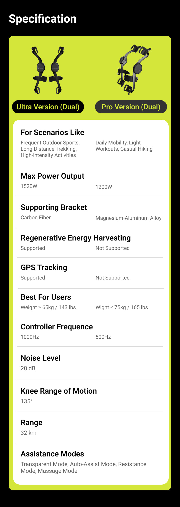
$849(KS) / ¥7,999(JD) JD月销数百·价格段Top3 ~$11M总融资 力矩传感器+IMU·100+专利 传统方案·非RL·伟创力制造·安踏合作 竞品 Vastnaut One 4×4(髋+膝四电机) $1,299起* — — AI全身控制 $1,299能否覆盖四电机BOM存疑 竞品
6.1.2 假肢行业
公司 国家 产品 技术 定价 市占率 与Bones关系 Ottobock 德国 C-Leg/SensorHand/MyoPlus 肌电+IMU·MyoPlus=模式识别 $20K-100K ~40% 最大潜在客户 ·MyoPlus是模式识别非连续力矩Ossur 冰岛 Rheo Knee/Proprio Foot AI+IMU+磁流变·Rheo=步态分类ML $25K-80K ~25% 潜在客户 ·ML是传统分类非RLBrainRobotics 中国/美国 智能肌电假手 深度学习EMG解码·8通道 $10K-30K 新兴 最可能中国合作方 ·DL分类+肌骨模型互补Open Bionics 英国 Hero Arm(3D打印) 肌电+3D打印·轻量·低价·儿童 $5K-15K 新兴 关注 ·消费级低价假肢
6.1.3 工业及特色竞品
公司 国家 产品 定价 融资 特征 对Bones 傲鲨智能 中国 BES/MAPS/VIATRIX ¥6,900起 多轮数千万 90%自研·工业场景对智能需求低 关注 ·工业B2B逻辑German Bionic 德国 Cray X $5K-10K $50M+ 欧洲工业外骨骼标杆 关注 SuitX/Ottobock 美国/德国 ShoulderX/LegX/BackX $3K-8K 被收购 模块化·被收购=退出价值存在 参考 Verve Motion 美国 SafeLift $350/月 $53M RaaS租赁·验证B2B订阅可行 模式验证 精工科技 中国 JGrobot-X* — 002006上市 碳纤维产能·结构件成本极低 供应链参考 MIT Dephy 美国 踝关节外骨骼鞋 — 研发 MIT Biomech Lab(Hugh Herr)·学术前沿 长期关注 ·踝关节商业化极远驭介 中国 外骨骼DIY平台 ¥999-2,999 在售 开发者生态·Arduino模式 合作机会 ·Bones可发布SDK获客韩国WIM(WIRobotics) 韩国 WIM/WIBS/WIM-S — 研发 模块化+儿童生长适配·肌肉监测 技术参考 ·肌肉监测思路接近韩国PUM 韩国 柔软外骨骼 — 原型 织物+弹性·力传递效率极低 仅供参考
注：以上为竞品概要。远也科技(PowerKnee)和Skip MO/GO的完整深度分析——含产品参数/团队背景/融资历史/供应链/用户反馈/战略借鉴——见下方6.2.9节"全球膝关节外骨骼竞品逐一深度分析"（B小节和E小节）。
6.1.4 竞品格局总结：膝关节OA=唯一消费蓝海
消费外骨骼：极壳一家独大（$120M+数万台），海尔/程天/海普曼追赶。但所有人卡在同一个瓶颈：控制算法不智能。据公开信息主要竞品采用PID/阻抗/传统ML——尚未见到RL+肌骨模型的商业化应用。这是Bones的切入点。
假肢行业：Ottobock+Ossur双寡头（65%份额）。两家都在升级智能化——但用的是模式识别/传统ML，不是连续力矩预测。肌骨模型从EMG→肌肉激活→关节力矩的连续映射=他们目前尚未采用的技术方向。
Bones的竞争策略：消费端做Bones品牌膝关节硬件。工业/假肢端可探索技术授权模式。核心竞争力是硬件+算法的垂直整合。
6.2 膝关节银发市场深度分析
核心命题：不是"我们有肌骨模型+RL所以做膝关节外骨骼"——而是"全球5.28亿人受膝关节骨关节炎困扰，当前所有解决方案都是妥协，存在一个巨大的产品空白"。
本章从问题出发，而非从技术出发。先论证这是一个必须解决的大问题，再看现有方案（拐杖/护膝/鞋/外骨骼）各自的局限，最后推导Bones应该做什么产品、走什么路径。
6.2.1 问题规模
指标 数据 全球OA患者 5.28亿（2024年），其中60-85%为膝关节受累 = 3.2-4.5亿人有膝OA 40岁以上患病率 23%。女性是男性的1.69倍 终生患病风险 41-46%——近一半人在一生中会出现症状性膝OA 高发年龄 55-64岁——恰好是退休前后、本应享受生活但被膝盖困住的年龄 致残负担 占全球YLD（健康寿命损失年）的2.4% 对工作的影响 66%工作能力下降·21%缺勤率上升——膝OA直接导致提前退休和经济损失 美国治疗费用 ~$190亿/年（2024），且随老龄化+肥胖率持续增长 核心驱动因素 肥胖（BMI每增加1=膝负荷增加4kg）+ 老龄化 + 运动损伤 + 职业劳损
膝OA不是"有点疼"——是不治疗会持续恶化、最终只能换关节的进行性疾病。
从第一次膝盖疼痛到全膝关节置换术，平均病程10-15年。这期间患者经历：减少活动→肌肉萎缩→关节更不稳定→更痛→更少活动→体重增加→关节负荷更大→加速退化。这是一个恶性循环。外骨骼/智能护具可以打破这个循环。
临床证据：老人愿意使用外骨骼。Lee et al. (2025, BMC Geriatrics) 对32名养老社区老人使用Samsung Bot Fit髋关节外骨骼进行8周24次训练——95%出勤率、零脱落、6分钟步行距离改善+22.75m（超过临床意义阈值），所有步态/平衡/肌力指标均显著改善。这是同行评审证据：老年人不是"不愿意用外骨骼"，他们愿意——前提是设备不吓人、训练有人带、能看到效果。Bot Fit是髋关节外骨骼（2.99kg），解决的是行走效率——膝关节OA的支撑相疼痛和坐-站困难是它覆盖不了的场景，这正是Bones的切入点。该研究同时验证了养老机构是老年外骨骼测试和推广的有效渠道——32名被试全部来自Samsung Noble County养老社区。
市场规模漏斗：TAM→SAM→SOM 自下而上测算
TAM 全球 $110-160B
3.2-4.5亿患者 × 1-3%渗透率 × $1,299-1,999 ASP ｜ 足力健¥40亿验证支付意愿
↓
SAM 中国 ¥60-200B/年
1.2-1.8亿有症状患者 × 城镇退休金>¥3,000/月或子女中产 ≈ 3,000-5,000万
↓
SOM Gen1-2 150-400万用户
3,000-5,000万 × 子女购买意愿 × 5-8%渗透率 ｜ KS验证·线下体验转化>15%
每个数字可追溯至文档6.2.2节
6.2.2 现有替代方案
方案 市场规模 价格 解决什么问题 没解决什么问题 用户满意度 拐杖/手杖 $3.0B(2026)·CAGR 5.6% $10-100 单点支撑·减轻一侧膝盖负重约15-20% 占用一只手·不能爬楼·看着"老"·不提供主动助力·只分担体重不增强肌力 ★ ★ ★ 助行器/学步车 $1.75B(2026)·CAGR 7.3% $50-300 双手支撑·稳定性好·可坐 极慢·不能上下楼·极度"老态"·社交羞耻感强·室内外切换困难 ★ ★ ★ 护膝/膝关节支具 $1.4-2.0B(2026)·CAGR 4.6-7.5% $20-500 被动支撑·限位保护·本体感觉反馈 纯被动·零助力。不提供力矩·不能减少肌肉做功·卸载支具(Unloader)只能减少10-20%关节负荷 ★ ★ ★ 老人鞋（足力健等） 中国~50亿(2019)·足力健巅峰¥40亿 ¥100-500 防滑·减震·宽松·易穿脱 只能保护脚——不能保护膝盖。足力健已经验证了"银发功能鞋"的巨大需求（¥40亿年营收·5000家店）但品牌正在衰退 ★ ★ ★ ★ 止痛药/注射 $19B+(美国) $10-1000/月 缓解疼痛·消炎 治标不治本。不解决力学问题。长期NSAID=胃肠道+肾损伤。阿片类有成瘾风险。注射(玻尿酸/激素)每3-6月需重复 ★ ★ ★ 全膝关节置换术 全球~200万例/年 $15K-50K 根治·消除疼痛 最终选项·不可逆。10-15年寿命·翻修更复杂·感染风险·康复痛苦。患者能拖就拖 ★ ★ ★ ★ 有源膝关节外骨骼 $0.5B(2026)·CAGR 15%+ $1,000-5,000 主动助力·减少膝关节压力30-60%·个性化力矩 新兴品类·价格高·认知低·无行业标准·退货率高·续航有限 早期·NPS未知
关键洞察：拐杖/护膝/鞋/药/手术——这是一个$200亿+的连续解决方案谱。
从左到右：拐杖（$10·最轻度方案）→ 护膝（$100·被动支撑）→ 外骨骼（$1,000-5,000·主动助力·NEW）→ 手术（$50,000·终极方案）。
外骨骼占据的是"拐杖/护膝不够用，但还没到非手术不可"的中间地带——而这个地带恰好覆盖10-15年的病程窗口。
足力健证明了"老人愿意为功能付费"（¥40亿年营收）。拐杖证明了"老人需要支撑"。护膝证明了"老人知道膝盖需要保护"。
但从"被动支撑"到"主动助力"的跨越——还没有产品做到。这就是Bones的机会。
6.2.3 全场景谱：全维健康闭环 × 全人群覆盖
产品升级背景：Bones膝关节外骨骼已从单一"助力"功能升级为全维健康闭环（助力·训练·舒缓·洞察）——同一台设备、同一套电机、同一AI模型驱动，软件切换模式。因此场景分析也必须从"助力场景"扩展为"全维健康闭环 × 全人群"的完整矩阵。以下按四个核心功能分别梳理所有对应场景，每个场景标注涉及人群、产品要求和竞品覆盖情况。
核心逻辑：用户使用助力模式时减少负荷→使用训练模式时强化肌肉→使用按摩模式时加速恢复→监测模式持续追踪效果→AI根据监测数据优化前三个模式的策略。这不是四个独立功能，是一个闭环。
6.2.3.1 助力与支撑场景（核心功能·所有人群共用）
以下场景均为"电机输出正向力矩，减轻膝关节负荷"——这是产品最核心的功能，覆盖膝关节不适人群、职业站立、运动户外三大群体。每个场景的助力策略由RL根据实时步态和用户特征个性化调整。
6.2.3.1.1 平地行走
生物力学数据 患者报告 产品要求
行走时膝关节承受261-280%体重·每一步。以75kg体重计算=~2000N/步。每天10000步=20,000,000N的累计负荷
"走到菜市场500米就开始疼""能走·但走不远""跟朋友散步·走一半就拖后腿了"
平地行走是最高频的使用场景。产品必须：① 轻（每腿<2kg） ② 零阻力穿行（不助力时=正常走路） ③ 3h+续航覆盖日常出行
关键：行走痛≠不能走。多数膝OA老人能走路——但走10分钟后开始痛。这是"耐力"问题·不是"能力"问题
和上下楼不同——上下楼是"能不能"（二元）。平地行走是"能走多远"（连续谱）。老人会自我限制——"走500米就折返"
产品价值=延长无痛行走距离。如果原本走500米就痛·穿上后能走2000米——这是用户能感知的巨大差异
6.2.3.1.2 从椅子上站起来
生物力学数据 患者报告 产品要求
从坐到站·膝关节承受246-264%体重·屈膝角度~90度。需要最大的股四头肌扭矩输出
"从沙发上起来·要用手撑着扶手""上厕所·坐下去起不来""公交车座位太低·站起来要人拉"中国特有的蹲便器问题："蹲下去就起不来·所以出去不敢喝水·怕上厕所"
坐-站辅助是竞品几乎未覆盖的场景。DNSYS/智行/PowerKnee都聚焦行走·忽略了这个高频刚需。Bones的RL可以在检测到"准备站起"时输出额外的伸展力矩
从低处站起（如蹲便器·深度屈膝90-140度）·膝关节力矩需求远超走路和上下楼
蹲便器问题是中国独有的巨大痛点。中国大量老旧住宅/公共厕所仍是蹲便器。膝OA老人要么忍着剧痛蹲下·要么憋着不敢出门·要么随身带便携马桶凳
这是一个竞品完全没注意到的场景。如果Bones的外骨骼能辅助蹲起——"蹲便器问题"就是最有力的中国市场营销素材
6.2.3.1.3 长时间站立
生物力学数据 患者报告 产品要求
站立时膝关节承受107%体重·看似不高·但是持续的静态负荷。站立时膝关节完全伸直·关节囊被拉伸·对有滑膜炎的OA患者尤其痛苦
"排队买菜·站10分钟膝盖就僵硬了""坐公交车没座位·站着太难受""去银行办业务·站着等号膝盖受不了"
站姿锁定模式：检测到持续站立→自动给膝关节轻微的屈曲支撑（~5度）→减少关节囊拉伸。不需要大扭矩·只需要一个"帮你微屈膝盖不锁死"的力
6.2.3.1.4 蹲下捡东西/做家务
生物力学数据 患者报告 产品要求
深蹲时膝关节承受500-560%体重——是走路的两倍·下楼梯的1.5倍。是所有日常活动中膝关节负荷最高的动作
"掉地上一个硬币·我就让它在地上""擦地板·蹲不下去·只能跪着擦""给孙子捡玩具·蹲下去起不来"
短时高扭矩辅助。检测到深度屈膝→输出最大伸展辅助力矩→帮助完成蹲起。这个场景每天可能只发生2-5次·但每次都是"生死考验"
6.2.3.1.5 上下坡/不平路面
生物力学数据 患者报告 产品要求
下坡行走·膝关节接触力比平地高20-30%·偏心负荷显著增加。不平路面增加肌肉共收缩·整体关节负荷更高
"公园里的小坡·别人走没事·我走膝盖就软""马路边的台阶（5-10cm）·上去还行·下来怕""去爬山·土路不平·踩不稳"
地形自适应。IMU+力矩传感器实时调整助力。不平路面=更多的偏心控制需求=RL个性化力矩的优势场景（PID无法处理多变的力矩需求）
6.2.3.1.6 上下公交车/地铁
患者报告 产品要求
"上公交车那个台阶·太高了·要拉着扶手才上得去""地铁上下车·人多挤·一个不稳就摔了""出门最怕的就是上下公交车"
公交台阶=15-25cm·和正常台阶(~15cm)不同高度。产品需要检测异常台阶高度+输出更大的辅助力矩
6.2.3.1.7 夜间起床去厕所
患者报告 产品要求
"半夜起来上厕所·膝盖最僵硬·最痛""刚起来那几步·膝盖像生锈了一样"
晨僵/夜间僵硬=夜间软骨吸水膨胀+关节液循环停滞。前几步需要更大的辅助力矩来"唤醒"关节。产品可以识别"长时间静止后首次运动"=自动增加辅助
6.2.3.1.8 职业性长时间站立
人群 规模（中国） 日均站立 核心痛点 产品价值 教师 ~1800万 4-6小时/天·讲台站立 "站一天下来膝盖僵硬·小腿肿胀""下班走楼梯膝盖咔咔响" 站立锁定模式（微屈膝支撑）+按摩放松·B2C·自费 医护人员（护士/外科医生） ~1200万 6-12小时/天·病房/手术台 "一台手术站8小时·下来膝盖像别人的""查房一上午·膝盖受不了" 长时间站立辅助+训练模式预防关节退变·医院B2B或自费 零售/餐饮服务员 ~5000万 8-12小时/天·柜台/后厨/大堂 "一天站12小时·回家腿不是自己的"低收入·企业支付意愿低 低配版（仅站立辅助·无监测/训练）·¥1,999-2,999 警察/交警/保安 ~800万 6-10小时/天·路口/门岗 "指挥交通一站半天·膝盖受不了"制服规范·外观要求高 黑色/警用配色·外观低调·B2G/B2B采购 工厂流水线工人 ~1亿 8-12小时/天·站立作业 "站了二十年·膝盖磨损·50岁就废了"企业有工伤/职业病压力 工业版（耐用·防护·无App）·B2B企业采购
职业人群的市场逻辑：他们不是"患者"——他们现在是健康的。但他们每天站8-12小时的累计膝关节负荷是不可持续的。这个人群的购买逻辑不是"治病"——是"预防"+"舒适"+"工作表现"。对企业的价值主张是：减少职业病→降低工伤成本→提升员工留任。中国有超过2亿职业站立工作者——如果1%愿意购买，就是200万台的市场。定价¥1,999-3,999，TAM ¥40-400亿/年。
6.2.3.1.9 运动与娱乐场景
人群 规模（全球） 使用场景 核心需求 对应功能 登山/徒步爱好者 ~3亿 上坡·下坡·长时间行走 上坡省力·下坡护膝制动·降低疲劳 助力（上坡助推+下坡制动）+按摩恢复 跑步爱好者 ~5亿 训练·比赛·恢复 减少膝关节冲击·监测肌肉状态·预防损伤 监测+按摩·轻量版（<1kg） 音乐节/演唱会/体育赛事 ~每年10亿人次 连续站立3-8小时·跳舞·蹦跳 "站了一整场·膝盖和小腿快废了""第二天还要上班" 轻量站立辅助+按摩恢复·¥999-1,999·年轻消费者 旅游/主题公园 ~每年50亿人次 全天行走·排队站立·不平路面 "迪士尼一天三万步·膝盖受不了"中老年旅游团·拍照打卡 租赁模式（景区日租¥50-200）+零售 健身房力量训练者 ~2亿 深蹲·硬拉·腿举·恢复 监测发力对称性·训练模式（抗阻） 监测（肌肉激活度可视化）+训练（抗阻模式）
运动/娱乐人群的价值：这是消费外骨骼的"早期采纳者"——年轻、科技接受度高、有付费习惯、社交传播力强。极壳Hypershell已经验证了户外运动人群愿意为外骨骼付费（$799-1,999·全球78+国发货·Kickstarter 2,640支持者$1.39M）。Bones不做户外髋关节——但我们做膝关节。登山/跑步/音乐节——同一个产品·不同的营销叙事。"周一上班不腿疼"的价值主张，年轻人秒懂。
6.2.3.2 训练与康复场景（抗阻模式·电机反向力矩）
电机输出可控反向力矩（阻力），用户对抗阻力完成动作，训练膝关节周围肌群。这是临床指南中膝OA的A级推荐干预手段（与减重并列）。训练模式的目标不是"替代肌肉"——是"强化肌肉"。
训练场景 目标肌群 动作 阻力范围 适用人群 临床依据 坐-站抗阻训练 股四头肌·腘绳肌·臀大肌 从椅子坐-站·电机提供可控阻力·20-30次/组 5-20Nm反向力矩（可调） 膝OA老人（主要）·术后康复·久坐白领 股四头肌无力是膝OA最重要的可调控风险因素。强化股四头肌可减少KAM 5-15%（Mikesky 2005, Bennell 2011） 直腿抬高抗阻 股四头肌（孤立训练） 坐位或仰卧·伸膝对抗阻力·10-15次/组 3-10Nm反向力矩 膝OA早期·术后早期康复 孤立股四头肌训练不影响关节负荷·安全性最高 腘绳肌弯举 腘绳肌（膝后侧） 站立位·屈膝对抗阻力·10-15次/组 3-8Nm反向力矩 膝OA·跑步爱好者（腘绳肌弱=ACL风险） 腘绳肌与股四头肌力量比（H/Q ratio）是膝关节稳定性的关键指标 步态周期抗阻行走 全下肢肌群 平地行走时电机提供轻微阻力·增强肌肉激活 2-5Nm反向力矩 康复中后期·运动员训练 阻力行走增加肌肉激活度30-50%而不增加关节冲击 平衡训练 膝关节本体感觉·踝策略肌群 单腿站立·电机提供微扰动·训练平衡反应 1-3Nm随机扰动 跌倒高风险老人·前交叉韧带术后 本体感觉下降是膝OA患者跌倒风险的主要因素之一
训练模式的价值：助力模式解决"现在疼"的问题——训练模式解决"以后更疼"的问题。膝OA的恶性循环是"痛→不动→肌肉萎缩→关节更不稳定→更痛"。助力和训练分别打断循环的不同节点。从商业角度：训练模式将产品从"被动消费"变为"主动使用"——用户每天花10-15分钟主动训练，设备使用频率从"出门才用"变成"每天必用"，留存率和NPS大幅提升。
RL的价值：训练模式的阻力不是固定的——RL根据肌肉激活度（压阻式柔性应变传感器）实时调整阻力大小。当检测到肌肉疲劳（激活度下降）时自动降低阻力，避免过度训练。这是远也PowerKnee的固定训练模式做不到的个性化。
6.2.3.3 按摩与恢复场景（振动模式·电机低频振动·20-50Hz）
电机输出低频小幅振动，模拟人手按摩。目标：缓解肌肉疲劳、促进血液循环、减轻运动后僵硬和酸痛。这是提升用户体验和依从性的关键功能——让用户"感觉舒服"，而不仅仅是"减少负荷"。
按摩场景 目标部位 振动参数 单次时长 适用人群 用户感知价值 运动后肌肉放松 股四头肌·腘绳肌·小腿三头肌 30-50Hz·低振幅·扫频模式 5-10分钟/次 运动后老人·登山/跑步后·健身后 "走了一天路·回家打开按摩模式·腿像泡了热水一样舒服" 晨僵缓解 膝关节周围软组织 20-30Hz·温热感·渐进增强 3-5分钟/次·起床后 膝OA老人（晨僵是典型症状） "早上起来膝盖像生锈·打开按摩几分钟·活动开了" 久坐/久站后疲劳缓解 膝关节+大腿肌群 30-40Hz·交替振动模式 5-10分钟/次 教师·医护·零售店员·办公室白领 "站了一上午·中午休息开按摩·下午还能继续" 长途旅行恢复 全下肢 20-40Hz·长周期扫频 10-15分钟/次 飞机/火车/长途车乘客 "飞了8小时·到酒店开按摩·腿不肿了" 睡前放松 膝关节+小腿 15-25Hz·低振幅·缓和模式 5-8分钟/次·睡前 所有用户 "像给膝盖做了个SPA·睡得更好"
按摩模式的工程实现：电机PWM控制输出低频振动——零硬件成本，纯软件功能。远也PowerKnee已内置按摩功能，验证了电机振动按摩的可行性。临床支持：振动疗法在康复医学中有循证支持——改善本体感觉（van der Salm 2006）、放松肌肉（Cardinale 2003）、促进血液循环（Kerschan-Schindl 2001）。
商业价值：按摩模式是"用户感知最强的功能"——助力需要走路才能感受，训练需要主动出力，监测是后台的——但按摩是坐着/躺着就能享受的即时舒适感。这是提升NPS和留存率最直接的功能。老人的子女看到"爸妈每天用按摩模式"=感觉到"买的值"。
6.2.3.4 监测与管理场景（感知模式·传感器持续采集·后台运行）
电机不输出力矩，仅传感器采集数据+416肌骨模型逆向推断肌肉和关节状态。全天候后台运行。数据加密上传联邦学习网络。这是数据飞轮引擎和子女端App的核心内容来源。
监测维度 数据来源 输出指标 更新频率 用户价值 临床/商业价值 日常活动量追踪 IMU（加速度+陀螺仪） 步数·行走距离·站立时长·坐-站次数·上下楼层数 实时·日报/周报 "今天走了多少步·膝盖状态怎么样" 客观活动量数据替代患者主观回忆·用于临床评估 肌肉激活度监测 压阻式柔性应变传感器阵列（4通道/腿·覆盖股四头肌+腘绳肌） 各肌群激活度（%MVC）·发力对称性·疲劳指数 实时·每次训练后报告 "左腿比右腿发力少20%·注意均衡"（健身房用户） 训练模式个性化阻力调整的依据·联邦学习的数据来源 膝关节负荷累积 IMU+力传感器+416肌骨模型 日内KAM累积·关节接触力峰值·负荷趋势（周/月） 实时·日报 "今天膝盖的负荷比昨天多30%·建议减少活动或按摩恢复" 量化KAM替代实验室步态分析·临床研究的客观终点 跌倒风险评估 IMU步态分析（步速变异度·步宽·双支撑相占比） 跌倒风险评分（1-10）·步态异常检测 每周更新 "最近步态不太稳·建议加强平衡训练"（老人+子女） 跌倒预防是老年医学的核心课题·高风险预警→及时干预→降低跌倒率 康复进展追踪 IMU+力传感器+训练数据 股四头肌力量趋势·坐-站速度·6MWT变化·WOMAC自评 每2-4周 "训练一个月·大腿力量提升15%·走路远了200米" 客观康复数据支持医保谈判和医生推荐 子女端远程查看 云端数据聚合（联邦学习·数据不出设备） 父母活动摘要·异常告警（跌倒/长时间不动/步态突然恶化）·周报推送 实时告警·每周推送 "妈今天走了3000步·膝盖状态正常"（子女安心） 子女付费的关键驱动力——不是"买设备"·是"买安心"
监测模式的战略价值：这是联邦学习数据飞轮的"数据采集层"。没有监测数据，RL策略无法个性化，训练模式无法智能调整，按摩模式无法知道用户疲劳程度。监测是其他三个功能的"大脑"。长期来看，积累的真实世界数据（RWE）是最有价值的公司资产——用于临床验证、医保谈判、学术发表、产品迭代。Dexcom的300亿市值不是靠卖硬件——是靠"血糖数据的临床价值被医保体系认可"。
压阻式柔性应变传感器阵列的成本和精度：PDMS基底+碳基导电复合材料·4通道/腿·与医用sEMG静态相关性>0.90·动态>0.85（压阻式柔性应变传感器验证数据）。BOM增量约¥25-50/套（量产后）。对比：医用sEMG设备¥50,000-200,000/台，需专业人员操作。我们的传感器精度80-90%但成本是千分之一——消费级可接受。
6.2.3.5 全模态场景总览：全维健康闭环 × 七人群 完整矩阵
6.2.3.6 全人群场景优先级总览
人群 场景 刚需度(1-5) 市场规模 支付意愿 优先级 进入时机 老年膝OA 行走·上下楼·坐-站·蹲起·站立 5.0 全球3.2-4.5亿 高（子女付费） P0 · 第一战场 Gen 0起 登山/徒步 上坡助力·下坡制动 4.5 全球~3亿 高（已验证） P1 · 第二战场 Gen 1（KS） 音乐节/演唱会 长时间站立 3.5 年10亿人次 中（¥999-1,999可接受） P1 · 年轻市场 Gen 2 教师/医护 长时间站立 4.0 中国~3000万 中-高（自费·B2B） P2 · B2B附加 Gen 2 跑步/健身 训练监测·损伤预防 3.0 全球~7亿 中 P3 · 轻量版 Gen 3 旅游/景区 全天行走·租赁 2.5 年50亿人次 低（日租¥50-200） P3 · 租赁 Gen 3 工厂/物流工人 重复站立·搬举 3.5 中国~1亿 低（企业支付） 观望 Gen 3+
产品定位从"老年膝关节辅助设备"升级为"全年龄段膝关节健康管理系统"——通过多品牌分层策略覆盖不同人群。同一个硬件平台——全维健康闭环（助力·训练·舒缓·洞察）——通过不同的软件配置和营销叙事覆盖从68岁膝OA老人到25岁音乐节青年的全年龄段。
市场扩张路径：①Gen 0-1：膝关节不适人群（最大刚需·最高支付意愿·政策东风）→ ②Gen 1-2：户外运动（已验证的市场·KS天然受众）→ ③Gen 2-3：职业站立+娱乐休闲（产品成熟·口碑溢出）→ ④Gen 3+：工业B2B+景区租赁（规模化降本后）。
TAM膨胀：从"全球3.2-4.5亿膝OA老人"（$110-160B）→"全球所有需要膝关节保护和健康管理的人"（$300-500B）。不是改产品——是同一个产品覆盖更多人。
6.2.4.1 海外老年消费者深度分析——全球市场的关键差异
膝关节OA是全球性问题（5.28亿患者），但不同市场的消费者行为、支付体系、文化心理存在根本性差异。以下从四个核心海外市场展开，与6.2.4.1（海外老年消费者）的中国市场分析（详见6.2节银发市场）构成完整的全球用户画像。
6.2.4.1.1 北美市场
维度 详情 核心用户画像 65-75岁退休人群。住在郊区独立住宅（需开车出行）。活跃退休生活——hiking、高尔夫、旅行。膝关节OA被视为"影响生活质量的慢性病"而非"老了自然会有"。强烈的独立生活意愿——"I want to stay independent"是核心情感驱动 支付体系 Medicare（联邦医保）覆盖膝关节OA的保守治疗：物理治疗、处方支具、皮质类固醇注射。膝关节置换（TKA）由Medicare Part A覆盖（$1,676免赔额）。消费级外骨骼不在Medicare覆盖范围内——需自费或通过FSA/HSA（健康储蓄账户）购买。Skip MO/GO正在推动FSA/HSA支付资格 购买决策者 老年人自己（>50%）。独立决策，自己搜索Amazon、看YouTube测评、比价。子女参与度低于中国。包装和营销应面向使用者本人 价格心理 $500-1,500可接受（参考高端消费电子/运动装备）。$2,000+需要"医学必要性"证明。$5,000（Skip MO/GO定价）=高端户外装备价格带——可接受但市场小 社交心理 相对于中国老人，美国老人对使用辅助设备的羞耻感较低。"保持独立"的叙事比"怕被看作残疾人"更强。产品外观参考运动护具/户外装备——而非医疗器械 渠道 线上为主。Amazon评论+YouTube测评是核心信任来源。Kickstarter验证创新产品。REI等户外零售商可触达活跃老年人群。骨科医生推荐是重要信任背书 关键差异 ①自购为主（非子女购买）②保险支付是规模化关键（FSA/HSA→Medicare覆盖）③独立生活叙事>孝心叙事④"keep hiking/playing golf"是核心价值主张
6.2.4.1.2 欧洲市场
维度 详情 核心用户画像 65-80岁。较高的公共医保覆盖率。对产品品质和认证要求极高。德国和北欧消费者特别注重产品的技术可信度——CE认证是基本门槛 支付体系 德国：法定医疗保险（GKV）覆盖处方康复设备。LINDERA（德国AI步态App）已纳入DiPA（数字健康应用）目录——证明数字健康产品可通过医保报销。法国：Sécurité Sociale覆盖部分康复辅具。北欧：高税收高福利，公共医疗体系完善 购买决策者 老年人自己，但高度依赖医生/物理治疗师的推荐。欧洲消费者对"广告宣传"持怀疑态度——临床数据和专业推荐是关键 价格心理 €500-1,500如果医保覆盖则自付极低。纯自费产品市场较小。进入医保目录的商业价值远大于自费零售 认证要求 CE标志（欧盟强制性）。医疗功能宣称需MDR（医疗器械法规）认证。德国DiPA需要数据安全和临床效果证明 渠道 医疗供应渠道（Sanitätshaus）+ 线上。骨科医生和物理治疗师推荐是关键。德国有成熟的康复辅具零售网络 关键差异 ①认证是市场准入前提②医保覆盖决定市场规模③医生推荐>广告营销④消费决策周期长但忠诚度高
6.2.4.1.3 日本市场
维度 详情 核心用户画像 70-85岁。全球老龄化率最高的国家（65岁以上占29.3%）。独居老人比例高。步行+公共交通为主要出行方式。Cyberdyne HAL和Honda Walking Assist已建立"外骨骼"的公众认知——但认知停留在"医疗设备" 支付体系 介護保険（长期护理保险）覆盖部分康复辅具。租赁模式成熟（Cyberdyne HAL租金¥158,400/3个月）。消费级产品需自费——日本老人储蓄率高·支付能力较强 购买决策者 老年人自己为主。日本老人独立性较强。但独居比例高意味着购买决策缺少家庭支持——产品必须极致简单·不需要子女帮助设置 社交心理 "迷惑をかけたくない"（不想给别人添麻烦）是核心情感驱动——与中国"孝心经济"不同但同样强烈。产品不能显眼——日本社会的同调压力极高。小型化、隐蔽化设计是刚性需求 价格心理 ¥50,000-150,000（$350-1,000）可接受。¥200,000+（$1,400+）需要介護保険覆盖 关键差异 ①超高龄社会=最大的人均需求密度②Cyberdyne/Honda已建立品类认知③租赁模式成熟④"不给社会添麻烦"=独居老人自购意愿强⑤小型化设计是刚性需求
6.2.4.1.4 全球市场优先级与进入策略
优先级 市场 进入时机 策略 P0 中国 Gen 0-1 首发市场。最大膝OA人群。最熟悉的渠道与用户。线下体验+子女购买。政策东风（十五五·八部门·民政基金） P1 美国 Gen 1（Kickstarter） KS验证海外需求。Amazon+独立站。独立生活叙事。"Keep hiking, keep living"。长期目标：FSA/HSA→Medicare覆盖 P2 欧洲 Gen 2-3 CE认证先行。瞄准德国DiPA/医保准入。医生推荐渠道。临床数据积累后进入 P3 日本 Gen 2-3 小型化设计成熟后进入。介護保険覆盖探索。与本土品牌（Cyberdyne/Honda）差异化：消费级·非医疗
全球用户画像的核心结论：中国=子女购买·孝心叙事·线下体验。美国=自我购买·独立叙事·线上渠道·保险支付。欧洲=医生推荐·认证门槛·医保覆盖。日本=独居老人·小型隐蔽·租赁模式。
Bones的产品平台需要适应这四个市场的根本差异——不是"一套产品卖全球"，而是"同一个技术平台·四种本地化策略"。Gen 0-1聚焦中国（最熟悉·最大市场）。Gen 1通过Kickstarter验证美国需求。Gen 2-3逐步拓展欧洲和日本。
6.2.4.2 助力场景：频率×疼痛强度矩阵（竞品对比）
场景 频率 疼痛(1-10) 生活影响 DNSYS Z1 PowerKnee 智行 Bones优势 覆盖度 平地行走>10min 1-3次/天 6-7 ★ ★ ★ ★ ★ 有 有 有 RL个性化=走更远 Gen 0·完整 上楼梯 1-4次/天 7-8 ★ ★ ★ ★ 有 有 有 RL=不同体重/步频自适应 Gen 0·完整 下楼梯 1-4次/天 8-9 ★ ★ ★ ★ ★ 有 有(60%减冲) 有(30%减冲) RL偏心控制=更平滑制动 Gen 0·完整 从椅子站起 20-50次/天 6-8 ★ ★ ★ ★ ★ 弱 弱 弱 坐-站检测+额外力矩 Gen 0·完整 蹲便器蹲起 1-3次/天 9-10 ★ ★ ★ ★ ★ 无 无 无 深度屈膝辅助·竞品零覆盖 Gen 2 长时间站立 1-2次/天 5-6 ★ ★ ★ 无 无 无 站立微屈锁定·竞品零覆盖 Gen 1 蹲下捡东西 2-5次/天 8-9 ★ ★ ★ 无 无 无 短暂高扭矩·竞品零覆盖 Gen 1 上下坡/不平路 1-2次/天 6-7 ★ ★ ★ 部分 部分 无 RL自适应=不平路优势最大 Gen 1-2 公交/地铁台阶 1-2次/天 7-8 ★ ★ ★ ★ 部分 部分 部分 异常台阶检测 Gen 1 夜间起床 1-2次/天 6-7 ★ ★ ★ 无 无 无 晨僵模式·竞品零覆盖 Gen 1
核心发现：竞品只覆盖了"行走+上下楼"——但老人65%的膝盖高负荷发生在其他场景。坐-站·蹲起·站立·捡东西——竞品完全没覆盖。RL有两个竞品算法无法实现的核心优势：①覆盖非周期性场景 ——PID/FSM只能处理步态周期内的重复性力矩，RL可以处理多变的力矩需求。②自适应安全 ——RL在训练中见过异常步态→安全响应的因果链，可以渐进式降力而非一刀切断电。这是竞品无法进入老年市场的算法层面原因——不是不想做，是PID/FSM在安全维度上存在天花板。
固定PID只能处理"步态周期内的重复性力矩"。RL可以处理"非周期性的、多变的力矩需求"——比如站起来、蹲下、上公交车。
关于加装电梯：电梯解决了"回家"的上下楼问题——但解决不了"去菜市场路上的500米平地行走""在超市排队站立10分钟""从公园长椅上站起来""上公交车那个台阶""在朋友家上蹲便器厕所"。
膝关节外骨骼的市场不是"上下楼的人"——是"膝盖影响日常生活的人"。即使有电梯，膝盖OA老人的日常生活仍然被上述9个场景的疼痛所限制。
6.2.4.3 训练场景：频率×效果矩阵
训练场景 建议频率 单次时长 目标肌群 临床效果 可实现阶段 Bones优势 坐-站抗阻训练 每日 10-15分钟 股四头肌·腘绳肌 A级推荐 Gen 0 RL个性化阻力·疲劳自适应 直腿抬高抗阻 每日 5-10分钟 股四头肌(孤立) 安全性最高 Gen 0 零关节负荷·术后可用 腘绳肌弯举 隔日 5-10分钟 腘绳肌 H/Q比改善 Gen 1 站立位训练·无需躺下 步态抗阻行走 3-5次/周 15-20分钟 全下肢 肌肉激活+30-50% Gen 1-2 RL助力/抗阻动态切换 平衡训练 3-5次/周 5-10分钟 本体感觉·踝策略 跌倒风险↓ Gen 2 随机扰动策略·个性化难度
6.2.4.4 按摩恢复场景：频率×效果矩阵
按摩场景 建议频率 单次时长 振动参数 适用时机 可实现阶段 Bones优势 运动后放松 每日 5-10分钟 30-50Hz·扫频 运动后30分钟内 Gen 0 同电机·零硬件成本 晨僵缓解 每日 3-5分钟 20-30Hz·渐进 起床后 Gen 0 IMU检测静止→自动建议 久站后疲劳 1-2次/天 5-10分钟 30-40Hz·交替 久站>60分钟后 Gen 1 自动检测+建议 长途旅行恢复 按需 10-15分钟 20-40Hz·长扫频 旅行后 Gen 1 App一键触发·长续航 睡前放松 每日 5-8分钟 15-25Hz·缓和 睡前 Gen 2 睡眠数据联动·AI推荐
6.2.4.5 监测洞察场景：频率×价值矩阵
监测维度 数据来源 更新频率 输出指标 用户价值 可实现阶段 战略价值 活动量追踪 IMU 实时·日报 步数·距离·站立·坐-站 "今天膝盖状态如何" Gen 0 基础数据·子女端核心 肌肉激活度 柔性应变传感器 实时·训练后 %MVC·对称性·疲劳 "发力均衡吗" Gen 1 训练个性化·联邦学习源 KAM累积 IMU+力+416模型 实时·日报 KAM累积·负荷趋势 "膝盖负荷偏大·建议休息" Gen 1 量化KAM·临床研究终点 跌倒风险 IMU步态分析 每周 风险评分(1-10)·异常 "步态不稳·加强训练" Gen 1 高风险预警·降低跌倒 康复进展 多源聚合 2-4周 力量趋势·6MWT·WOMAC "训练有效·继续加油" Gen 2 医保谈判证据 子女端远程 联邦学习聚合 实时告警·周报 摘要·告警·周报 "爸妈状态正常·放心" Gen 1 付费关键驱动力
6.2.5 各场景的产品解决方案映射
以下将膝OA日常场景按四个产品功能分别映射：助力与支撑（10个核心场景）·训练与康复（5个训练场景）·按摩与恢复（5个恢复场景）·监测与管理（6个监测维度）。每个场景标注功能归属、技术方案、可实现阶段和局限性。完整场景分析见6.2.3。
# 场景 频率 疼痛强度 需要的产品能力 技术方案 可实现阶段 解决程度 局限性 1 平地行走>10min 1-3次/天 6-7
支撑相膝关节内侧卸载·减少KAM
硬件：RL控制电机在支撑相输出外翻力矩·个性化KAM减少策略App：实时KAM可视化·行走距离建议
Gen 0
可解决目标KAM减少20%+（vs PID基线·仿真目标·待实机验证）
行走速度变化时需要RL自适应调整力矩时机——PID无法应对 2 下楼梯/下坡 1-4次/天 8-9
支撑相膝关节内侧卸载 + 偏心控制制动·减少股四头肌离心收缩负荷
硬件：RL控制电机在下坡/下楼时输出受控制动（负力矩）·吸收冲击能量App：下楼次数/姿态报告
Gen 0
可解决目标减冲60%+
下楼时膝关节承受346%体重——制动控制的安全性是第一优先级。任何控制失误都可能导致老人摔倒 3 从椅子站起 20-50次/天 6-8
检测坐→站意图·输出额外的伸展辅助力矩
硬件：IMU检测躯干前倾+力传感器检测腿部发力→RL输出坐-站辅助力矩App：坐-站次数统计
Gen 0
可解决目标减少40%股四头肌需求
竞品几乎未覆盖此场景。但坐-站涉及90°以上屈膝——电机需要在此角度下仍能输出有效力矩 4 上楼梯 1-4次/天 7-8
支撑相膝关节伸展辅助·减少股四头肌向心收缩负荷
硬件：RL控制电机在支撑相输出伸展力矩
Gen 0
可解决
上楼比下楼容易解决——向心收缩控制比偏心制动简单。竞品大多数覆盖了此场景 5 长时间站立 1-2次/天 5-6
检测持续站立→膝关节微屈锁定（~5°）·减少关节囊拉伸
硬件：IMU检测静止站立状态·电机输出微小伸展力矩维持微屈角度App：站立时长提醒
Gen 1
部分解决
竞品零覆盖。但站立时膝关节负荷仅107%体重——制动需求很低。主要是"不锁死"的舒适性需求。续航是瓶颈（站立可能持续30-60分钟） 6 上下坡/不平路面 1-2次/天 6-7
实时地形自适应·变力矩输出·稳定控制
硬件：RL实时感知地形变化（IMU+力传感器融合）→动态调整力矩策略App：地形适应性报告
Gen 1-2
部分解决
RL的优势场景。不平路面=力矩需求多变·固定PID无法应对。但需要大量训练数据（MyoWarp仿真可部分解决） 7 蹲便器蹲起 1-3次/天 9-10
检测深度屈膝（>90°）→输出最大伸展辅助力矩
硬件：电机在90-140°屈膝角度下输出最大伸展力矩App：不适配
Gen 2
部分解决
中国独有痛点·竞品零覆盖。但深度屈膝时电机力臂变短·需要更高的电机扭矩（30-50Nm）·且绑带在深屈膝时容易滑移。Gen 0-1不以此为核心场景 8 公交/地铁台阶 1-2次/天 7-8
检测异常台阶高度（15-25cm vs 正常15cm）·输出更大的辅助力矩
硬件：IMU检测台阶高度异常·RL自动调整力矩输出
Gen 1
部分解决
台阶检测技术上可行（IMU+力矩传感器）·但公交车场景拥挤·穿戴外骨骼上下车不便。 9 蹲下捡东西 2-5次/天 8-9
检测深度屈膝·输出短时高扭矩辅助蹲起
硬件：电机在2-5秒内输出峰值力矩辅助蹲起
Gen 1
部分解决
短时高扭矩=电池放电能力强·电机散热要求高。每天仅2-5次·不是高频场景 10 夜间起床 1-2次/天 6-7
检测长时间静止后首次运动→"晨僵模式"·自动增加初始辅助力矩
硬件：IMU检测长时间静止(>30min)→首次运动时输出更大的辅助力矩·持续3-5步后恢复标准策略App：不适配
Gen 1
可解决
"晨僵模式"技术难度低（逻辑判断即可实现）·但需要Gen 0有足够的用户数据来验证此功能的有效性
6.2.5.2 训练与康复场景映射
# 训练场景 目标肌群 动作要求 技术方案 可实现阶段 效果度量 1 坐-站抗阻训练 股四头肌·腘绳肌·臀大肌 从椅子坐-站·电机提供5-20Nm反向力矩·20-30次/组 电机反向力矩输出·压阻式柔性应变传感器监测肌肉激活度·RL根据疲劳程度调整阻力 Gen 0（电机反向力矩+传感器基础版） 股四头肌力量提升·坐-站速度改善 2 直腿抬高抗阻 股四头肌（孤立） 坐位/仰卧·伸膝对抗3-10Nm阻力·10-15次/组 电机反向力矩（小扭矩·高精度） Gen 0 股四头肌孤立力量·不增加关节负荷 3 腘绳肌弯举 腘绳肌（膝后侧） 站立位·屈膝对抗3-8Nm阻力·10-15次/组 电机反向力矩+IMU检测屈膝角度 Gen 1 H/Q ratio改善·膝关节稳定性 4 步态抗阻行走 全下肢肌群 平地行走·电机提供2-5Nm轻微阻力 RL控制·助力与抗阻模式动态切换 Gen 1-2 肌肉激活度增加30-50% 5 平衡训练 本体感觉·踝策略肌群 单腿站立·电机提供1-3Nm随机扰动 IMU检测站立稳定性·RL生成随机扰动策略 Gen 2 跌倒风险评分改善
6.2.5.3 按摩与恢复场景映射
# 按摩场景 目标部位 振动参数 技术方案 可实现阶段 用户价值 1 运动后肌肉放松 股四头肌·腘绳肌·小腿 30-50Hz·低振幅·扫频·5-10分钟 电机PWM振动控制·零硬件成本·纯软件功能 Gen 0 "走了一天路·回家按摩·腿像泡了热水" 2 晨僵缓解 膝关节周围软组织 20-30Hz·渐进增强·3-5分钟 IMU检测长时间静止后首次运动→自动建议按摩模式 Gen 1 "早上膝盖像生锈·按摩几分钟·活动开了" 3 久站后疲劳缓解 膝关节+大腿肌群 30-40Hz·交替振动·5-10分钟 IMU检测持续站立>60分钟→自动建议按摩 Gen 1 "站了一上午·中午按摩·下午继续" 4 长途旅行恢复 全下肢 20-40Hz·长周期扫频·10-15分钟 App手动触发·坐位检测自动建议 Gen 1 "飞了8小时·到酒店开按摩" 5 睡前放松 膝关节+小腿 15-25Hz·缓和模式·5-8分钟 App定时触发·结合用户睡眠数据 Gen 2 "给膝盖做SPA·睡得更好"
6.2.5.4 监测与管理场景映射
# 监测维度 数据来源 输出指标 技术方案 可实现阶段 战略价值 1 日常活动量追踪 IMU（加速度+陀螺仪） 步数·行走距离·站立时长·坐-站次数 IMU数据→MCU处理→App日报/周报 Gen 0 基础功能·替代主观回忆·子女端核心内容 2 肌肉激活度监测 压阻式柔性应变传感器（4通道/腿） 各肌群激活度(%MVC)·发力对称性·疲劳指数 传感器信号→416模型逆向推断·实时显示在App Gen 1（传感器集成后） 训练模式个性化阻力调整依据·联邦学习数据源 3 膝关节负荷累积 IMU+力传感器+416模型 日内KAM累积·关节接触力峰值·负荷趋势 传感器融合→416模型计算→日报+趋势 Gen 1 量化KAM替代实验室步态分析·临床研究终点 4 跌倒风险评估 IMU步态分析 跌倒风险评分(1-10)·步态异常检测 步速变异度+步宽+双支撑相占比→风险评分 Gen 1 高风险预警→子女告警→降低跌倒率 5 康复进展追踪 IMU+力传感器+训练数据 股四头肌力量趋势·6MWT变化·WOMAC自评 多源数据聚合→2-4周趋势报告 Gen 2 医保谈判客观证据·临床研究数据 6 子女端远程查看 云端联邦学习聚合 活动摘要·异常告警·周报推送 加密梯度上传→云端聚合→App推送 Gen 1 子女付费关键驱动力·"买安心"
6.2.6 全维场景覆盖率与产品路径的对应关系
产品阶段 助力与支撑 训练与康复 按摩与恢复 监测与管理 整体覆盖率 Gen 0（原型·0-6月） 场景1-4（行走·上下楼·坐-站）80%高负荷场景 坐-站抗阻·直腿抬高2/5场景 运动后放松1/5场景 日常活动追踪1/6维度 助力80%+训练40%+按摩20%+监测17%整体功能覆盖率约45% Gen 1（KS·6-18月） 场景1-995%高负荷场景 +腘绳肌弯举·步态抗阻4/5场景 +晨僵·久站·长途4/5场景 +肌肉监测·KAM累积·跌倒·子女端5/6维度 助力95%+训练80%+按摩80%+监测83%整体功能覆盖率约85% Gen 2（量产·18-30月） 全部10个场景100%覆盖 +平衡训练5/5场景 +睡前放松5/5场景 +康复进展6/6维度 全维覆盖100%覆盖整体功能覆盖率100% Gen 3（规模化·30-48月） 100%覆盖+柔性执行器·外观接近服装 100%覆盖+联邦学习个性化训练计划 100%覆盖+AI推荐最优按摩策略 100%覆盖+万人联邦学习网络 全维优化整体体验成熟度100%
场景-产品映射的核心结论：
Gen 0就能覆盖80%的高负荷场景。行走+上下楼+坐-站——这四个场景覆盖了老人日常膝关节负荷最高的绝大多数时刻。这意味着一个最小可用产品在解决真实问题上就已经具备竞争力。
蹲便器是最难但最痛的中国独有场景（疼痛强度9-10/10）。需要Gen 2的技术成熟度才能解决——因为涉及深度屈膝下的高扭矩输出和绑带稳定。但这是竞品完全没有覆盖的差异化场景。
竞品覆盖了场景1,2,4（行走·上下楼）——但用的是通用AI/固定PID。Bones的RL个性化力矩在场景1（平地行走）和场景6（不平路面）的优势最大——因为这两个场景的力矩需求最个性化（每个人磨损模式不同·每步地形不同）。
App在以下场景不可替代硬件：场景2（下楼需要制动——纯App无法提供物理制动）·场景3（坐-站需要物理辅助力矩——App无法替代肌肉力量）·场景7（蹲便器需要物理辅助——App完全无用）。
App在以下场景提供增量价值：场景1（KAM可视化·子女端步态报告）·场景5（站立时长提醒）·场景10（夜间首次运动检测）。
6.2.7 膝OA老年用户深层心理与购买障碍分析
2026年6月28日·央视《每周质量报告》曝光老年外骨骼市场乱象：材质虚标（铝合金冒充钛合金/碳纤维）、效果无依据（"节省体力50%"无科学数据）、退货困难、无行业标准。
这恰好是Bones的机会——在一个乱象丛生的市场里，真正做好产品的人会被看见。
心理障碍 具体表现 产品设计启示 "病患"身份焦虑 北大核心期刊2026年研究指出：过度外露的机械结构强化"医疗器械"属性，使中老年用户产生"我是病人"的身份焦虑，大幅降低日常使用意愿 第一代可以丑——但不能看起来像"医疗器械"。DNSYS的碳纤维+3D织物外观比PowerKnee的三条绑带更像"运动装备"而非"康复器材" "不敢穿"的社会面子 担心被邻居/路人注视。觉得"穿了就是承认自己不行了"。从"独立自主"到"依赖机器"的心理落差 外观设计的方向：户外运动装备感 > 医疗器械感。Skip MO/GO藏在始祖鸟裤子里=零羞耻。Bones Gen 2应该走护膝/运动护具的外观路线 "试穿的多·掏钱的少" 线下体验店到店转化率仅20-30%。老人体验后说"好是好·太贵了/不需要/再考虑考虑" 子女是实际买家。营销应该面向45-55岁的子女——不是老人。"给爸妈的膝盖一份保障"=比"老年人外骨骼"更有效的定位 "我不会用"的技术恐惧 操作熟练度不足→挫败感→放弃使用。需要学习成本的产品在老年群体中淘汰率极高 30秒穿戴+一键开关+不需要App也能用。App是optional——不是required。老人不需要看步态数据——只需要"穿上·走路更轻松" "万一坏了怎么办" 对电子产品可靠性的不信任。担心走在路上突然没电/出故障/摔倒 安全机制必须是产品定义的核心。踏山的0.1s气囊防跌倒、海尔的小碎步模式、PowerKnee的下楼制动——这些是老人真正关心的功能
6.2.8 膝OA消费市场乱象与Bones的信任红利
乱象 CCTV曝光案例 Bones如何不同 材质虚标 宣传"钛合金/碳纤维"·实际为铝合金/不锈钢 公开BOM清单+材料供应商。TÜV/CE/FDA认证。Kickstarter=社区监督=不敢造假 效果无科学依据 "节省体力30-50%"·"减轻40-80斤负重"——均无实验数据 肌骨模型仿真数据+RL vs PID对比视频=可验证。每一步力矩输出都有模型预测和实测对比。这是学术级可信度 退货困难 以"轻微划痕影响二次销售"为由拒绝退货 海外KS=平台有买家保护。30天无理由退货。国内线下体验店=先试后买 无行业标准 无统一检验标准·无安全规范·无性能等级 Bones可以参与标准制定（远期优势#8）。如果肌骨模型被写入行业标准=不可逆壁垒 安全无保障 沉重劣质助力器反而加重腰腿负担 专家建议整机<3kg。Bones Gen 0目标2.5-3.0kg·Gen 2目标1.5-2.0kg。每一步都是安全阈值内的优化
关键洞察：央视曝光=市场教育=利好正规军。
当一个市场乱到被央视曝光——意味着消费者开始关注、政府开始监管、劣质产品开始出清。
就像2008年三聚氰胺事件后飞鹤崛起、2015年空气净化器乱象后小米入场——乱象之后，真正做好产品的人会获得最大的信任红利。
Bones的肌骨模型+RL+联邦学习=有科学数据支撑、可验证、可对比的差异化。这是乱象中最稀缺的东西。
6.2.9 竞品逐一分析
6.2.9.1 DNSYS Z1
DNSYS（动思创新）是目前消费外骨骼赛道最重要的对标公司之一——唯一同时交付髋+膝模块化产品的企业，众筹累计$3.8M+，X1出货10,000+台，2025年登陆亚马逊首月盈利。
维度 详情 借鉴与教训
公司背景
全称 北京动思创新科技发展有限公司 · 品牌DNSYS（Dynamic System） 成立 2021年 · 北京（算法/AI）+ 深圳（制造） 创始人 董世谦（Sage Dong）· 北航背景 · 90后工程师 · 创立动机源于对父母年迈的担忧 联合创始人 李若乔（Jojo Li）· 前DJI/赛格威/小米生态链背景 团队 90%+为工程师 · 20+项专利（含7项授权发明专利）· 核心团队来自DJI/赛格威/小米及Hocoma康复机器人 融资 无传统VC融资。纯众筹驱动：X1 KS ~$1.2M + Z1 KS ~$2.64M = $3.8M+众筹总额。加10,000+台X1直接销售收入。2025.11亚马逊首月盈利。走"众筹→销售→再投入"的自循环模式
DNSYS的路径证明：消费外骨骼可以靠众筹和销售收入自我造血。不需要$120M（极壳）也能活。但这也意味着增长受自有资金限制——无法像极壳那样大规模投放和扩张。创始人的"养老焦虑"动机与Bones的市场定位高度一致——但DNSYS没有把这种动机转化为"老年优先"的产品定义
产品矩阵
H1 医疗级髋关节外骨骼 · CFDA认证 · 10+医院使用 · 数百患者 X1 消费级髋关节外骨骼 · 1.6-1.9kg · 450W · KS $1.2M · 累计出货10,000+台（截至2025） Z1 消费级膝关节外骨骼 · 680g/腿 · 450W/腿 · KS $2.64M（1,959支持者·全球外骨骼众筹纪录）· 2025.8 KS→2025.12首批100台发货 联名 《死亡搁浅2》× 小岛工作室联名限定版 · $1,998 · 首批100台1小时售罄（2025.12）· 第二批2026.3
从医疗到消费的路径已被验证。H1(CFDA认证)→X1(KS成功)→Z1(世界纪录)。X1+Z1可同时穿戴——全球唯一消费级髋膝协调系统。这证明了模块化的可行性。《死亡搁浅2》联名=文化IP破圈的最高效方式。100台1h售罄=极强的品牌势能。Bones未来也可探索类似联名
Z1核心技术
电机 DNA-1自研电机 · 450W峰值/腿 · 50Nm/kg扭矩密度 · 非外购 算法 DNNAS（Dynamic Neural Network Assist System）· 基于1,500h+运动数据训练 · 0.01s响应 · 自监督学习+RLHF · 地形自适应 材料 标准版：铝+碳纤维 · Pro版：钛合金+碳纤维 · 640g/腿(Pro) 续航 标准3-4h · Pro 8h · 热插拔电池 · 下坡能量回收 防护 IP54 · -20°C至60°C · 内置跌倒检测+自动脱开 减速器 自研核心减速器（2023年突破）· 极小体积高功率
自研电机+自研减速器=DNSYS的硬件壁垒。这不是"买CubeMars组装"——他们有核心零部件能力。基于公开信息，DNNAS的技术路线偏向自监督学习+RLHF框架——与Bones的PPO-based闭环RL存在方法论差异。本质仍是通用AI预测+自适应增益，非个性化力矩。和Bones的RL个性化力矩有根本区别。IP54/-20°C/跌倒检测=产品成熟度高于远也和Skip。DNSYS的产品工程能力在竞品中最强
定价与销量
X1 KS ~$599-799 · 零售 ~$999-1,999 · 出货10,000+台 Z1 单腿$699→零售$1,099 · 双腿标准$899→$1,499 · 双腿Pro$1,398→$2,298 渠道 Kickstarter + 独立站(dnsys.ai) + Amazon（2025.11开店·首月盈利）+ 10+国内医院
Amazon首月盈利=海外消费外骨骼需求已被验证。DNSYS的Amazon成绩证明了消费外骨骼不是"众筹一波流"——是有持续海外零售需求的。定价$699-2,298=消费电子的价格带。比Skip($5,000)低60-85%。但Bones可以在这个价格带内通过RL个性化力矩做差异化
用户画像
约50%的Z1用户年龄>50岁。DNSYS最初定位户外运动——但老年用户自己找上门来。X1用户大量反馈"膝盖压力减轻"，直接促使Z1的开发。DNSYS的Notebookcheck采访中明确提到"对父母年迈的担忧是创业动机"——但产品定义没有围绕老年需求展开
DNSYS看到了老年用户，但没有为他们重新定义产品。Z1有IP54/-20°C/跌倒检测——这些恰好是老年需要的。但没有坐-站辅助、蹲起辅助、子女端App、线下体验渠道。DNSYS的产品是为"所有人"设计的通用产品——不是为"膝关节OA老人"设计的专用产品。这是Bones的差异化空间
弱点
①DNNAS是通用AI——非个性化。所有用户收到相同策略。无法区分内侧vs外侧OA。②无联邦学习。用户数据不互通——10,000台设备=10,000个数据孤岛。③产品定义非老年优先。没有坐-站、蹲起、长时间站立等场景优化。④Wareable评测提到"RoboCop whirring"噪音、70分钟续航(Sport模式)、蓝牙断连。⑤Avatar效应：使用后腿部感觉更重。肌肉酸痛次日出现
维度 详情 借鉴与教训 产品 Z1膝关节外骨骼·~1.6kg·号称全球最轻膝外骨骼 轻量化是关键。1.6kg是用户可以接受的重量上限。超过2kg=穿戴意愿骤降 技术
处理器 双核240MHz · 900W电机 重量 680g/腿 · 1.6kg总重 助力 上坡50% · 下坡减负150kg 认证 IP54 · -20°C · CES 2026三项创新奖 · 配套康复App
定价 ~$1,998·Kickstarter $2.64M·2210位支持者 $2,000是早期采纳者的心理上限。老年人（子女购买）的心理上限更低——¥3,000-6,000 用户画像 约50%用户年龄>50岁。X1(髋)已销10,000+台。不是极限运动——是"想继续走路但膝盖开始疼"的人群。2026年中报道"百万美金级跨境订单"。说明海外需求真实且持续增长 银发需求已被验证。DNSYS原本定位户外运动·但老人自己找上门来。说明膝关节外骨骼的真实市场不是"登山"——是"走路不疼" 弱点 AI运动预测=传统步态检测·非RL·非个性化·每个用户收到的是同样的助力策略 DNSYS验证了需求但没有解决个性化。固定助力策略对内侧磨损和外侧磨损输出相同力矩——对于不同类型OA患者的差异化需求可能覆盖不足 小岛工作室联名 《死亡搁浅2》限定版·100台1小时售罄 文化IP联名是极高效的品牌破圈方式。让外骨骼从"医疗器械"变成"酷东西"
6.2.9.2 Skip MO/GO（始祖鸟 Arc'teryx × Google X 衍生）
产品形态澄清：MO/GO并非"柔性编织一体化动力裤"。其本质是将标准外骨骼组件（碳纤维固定器+紧凑电机+电池模块）通过卡扣附着在始祖鸟Gamma软壳裤上。裤子本身不提供动力——它只是承载平台。电机外置于膝关节处，碳纤维袖套穿在裤子内侧。这更接近"裤子+外骨骼套件"而非"智能服装"。
Skip MO/GO 是消费外骨骼行业最受关注的产品——不是因为卖得最多，而是因为品牌势能最强（Google X + 始祖鸟）和产品理念最先进（"不像外骨骼的外骨骼"）。
但$5,000定价·2026年推迟发货·$6M总融资——说明高端路线极其艰难。
维度 详情 借鉴与教训
公司背景
公司 Skip Innovations Inc. · 2023年从Google X独立 · 旧金山 · ~187人(2026.4) 创始人 Kathryn Zealand（CEO · 新西兰人 · 物理学家 · 前Google X项目负责人） 联合创始人 Anna Roumiantseva（Chief Designer） 创立动机 Zealand祖母跌倒受伤——现有助行设备不足——激励做"让人保持行动能力的机器人" 总融资 ~$6M（VC + Grant + 预购收入）· Alphabet未出售底层IP（Skip通过授权/独立IP运营） 对比 极壳$120M / 远也$11M —— Skip $6M的融资极其有限
Google X 背书=巨大的品牌势能。但$6M融资对硬件创业严重不足——极壳拿了$120M。Alphabet不出售IP=Skip没有底层专利护城河。这是一个重大风险——Google随时可能把IP授权给其他人。创始人的个人故事（祖母跌倒）=极强的情感叙事。对Bones的启示：技术参数（416肌肉模型）本身不是消费者语言——"让膝关节不适的用户在日常活动中更安心"才是。技术壁垒转化为用户可感知的价值，是消费硬件品牌建设的关键
产品参数
① 集成在始祖鸟Gamma Pant（软壳裤 · Fortius DW 2.0面料）内 ② 碳纤维支架 + 磁力致动器（非传统电机） · 电机位于膝关节处 ③ 系统总重~2kg（双侧电机 <2lbs/腿 · 整条裤子~4.5lbs） ④ 上坡40%腿部力量辅助 · 感知减重~30lbs（14kg） ⑤ 3h+续航（最大助力 · ~6英里上坡） · 下坡再生充电（类似EV能量回收） ⑥ 3个物理按钮（开关/加力/减力）+ 手机App控制 ⑦ 10个尺码 · 电机可快拆 · 裤子可单独穿 ⑧ 天气防护（雪/小雨） · 不防水 · 不可浸泡 ⑨ 计划支持单腿模式（未来更新） ⑩ 冬季厚款计划中
✓ "不像外骨骼"=品类终极方向。集成在始祖鸟裤子内=零社交羞耻感 ✓ 下坡再生充电=聪明的续航方案。正好是老人最需要的场景（下坡制动+充电） ✗ 3h续航（最耗电模式）=使用场景受限。登山够用·全天日常使用需充电（老年人出门4-6h） ✗ 10个尺码=高SKU复杂度。供应链和库存管理极难
定价与销售
定价 $4,500预购 · $5,000零售 · $99订金。国内参考价¥32,000-35,000 租赁 日租$80（美国西部+加拿大：亚利桑那/科罗拉多/加州/犹他/BC省 · 夏威夷/缅因/蒙大拿/俄勒冈/华盛顿即将开放） 配件 含2块电池 · 备用电池可单独购买 · 裤子本体~$200 时间线 2024.7发布 → 2024.8始祖鸟demo → 2024底50台手工原型测试 → 2025底/2026初首批发货 → 2026量产目标5000-10000台 实际状态 2026年推迟发货 · 仍在Beta测试 · 无大规模用户长期使用数据
$5,000是消费外骨骼的天花板定价。让$1,000-2,500的竞品显"便宜"。这也是Bones Gen 0定价$1,500-3,000的定价锚点来源。租赁模式$80/天=降低试用门槛的好策略。但只在北美=规模有限。Bones可以考虑中国景区租赁(海普曼已做·日租¥50-200)。50台手工原型→量产5000-10000台=从小批量手工组装到规模化工业制造的跨越。Skip $6M融资能否支撑这个跨度=极大问号。推迟发货=技术/供应链问题。软体+碳纤维+磁力致动器的量产良率可能极低
用户反馈
Mark Wilson(Fast Company)：爬楼梯三次·不喘气·心率不升。"比预期更自然"·但提到电机噪音和"微延迟"——提醒你穿的是机器。社区评论(Moss & Fog)：老年人+行动不便者高度期待·但关心"电池没电后的重量惩罚"。Tech AI Magazine(2026.4)：称赞40%助力·指出"电力管理和运动预测算法"是核心挑战。什么值得买(中国)：2000+用户观点PK——"¥32,000=革命利器还是昂贵噱头？"·争议极大。普遍评价：体验惊艳·价格劝退·续航焦虑·老人需要1-2小时学习适应
学习成本=老年产品面临的首要用户接受障碍。"需要1-2小时适应"=多数老人直接放弃。电机噪音=体验瑕疵。20dB(如PowerKnee)应作为行业基准。"电池没电后的重量惩罚"=所有有源外骨骼的通用问题。Bones需要把安全模式设计好：没电时=被动护膝模式·不能变成"2kg累赘绑在腿上"
供应链
2024-25 手工原型阶段。碳纤维手工打磨·手动装配·50台产能=不是供应链·是实验室 2026 向工业化过渡。目标5000-10000台/年·$6M融资能否支撑模具+产线+质检+备料=存疑 始祖鸟 提供Gamma Pant+品牌背书+渠道·但不提供制造——Skip需自建或外包制造 关键风险 磁力致动器单点故障·碳纤维异形件良率仅~50%
Skip的供应链策略——$6M融资下选择自建制造——是资本约束下的主动选择。Bones选择不同路径：核心自研+产业合作方组装，降低固定资产投资。两种策略各有适用条件。始祖鸟的品牌势能远超极壳/海尔/DNSYS。如果Bones能找到类似的品牌联名（如Nike/Adidas/李宁/安踏）——品牌信任度将指数级提升
医疗认证计划
目前非医疗器械。消费级产品·不需要FDA/NMPA。未来计划：申请FDA医疗器械分类·目标是帕金森等疾病·临床试验正在进行中·预计还需数年·同时计划推动FSA/HSA（美国健康储蓄账户）支付资格——降低实际购买成本
FSA/HSA支付=美国市场的关键突破。如果MO/GO能被FSA/HSA覆盖=实际购买成本降低30-40%（税前美元购买）。Bones也应该在进入美国市场后探索FSA/HSA路径
对Bones的启示
① RL个性化力矩 vs AI动作预测。远也AI="预判步态相位"。Bones RL="预判膝关节内侧需要多少力矩"——更精准·更个性化 ② 联邦学习 vs 设备孤岛。远也本机学习——1000个用户数据不互通。Bones=1000个用户让第1001个更好 ③ 技术路线差异。远也据公开信息采用AI预测+导纳控制。Bones采用RL个性化力矩+416肌肉模型——理论上可直接优化KAM（膝OA核心指标），但实机效果尚需验证 ④ 硬件合作+出海 vs 自研自产。远也自研硬件（全链条投入高·周期长）。Bones核心部件自研+整机组装依托产业合作（响应快·资本效率高） ⑤ 融资效率。远也$11M/5年未批量出货。Bones 天使轮$2-3M可出原型·A轮$5-8M可KS
6.2.9.3 智行（火箭院）
2026年5月16日·北京千灵山完成首次C端用户测试。20位志愿者参与。中国航天科技集团一院18所（北京精密机电控制设备研究所）研发。上坡省力15%·下坡减冲30%·2.6kg·4h续航·30秒穿戴·¥7,000-9,000目标价。
维度 详情 借鉴与教训 技术来源 航天伺服控制技术民用转化·人机协同控制·智能传感+人体工学设计。此前在科博会展出获广泛关注 航天伺服=高精度位置控制。做外骨骼是技术降维。国家队入局=膝关节外骨骼的战略价值被最高层级验证 产品参数 2.6kg·最大主动动力7kg(关节处)·4h续航·30秒穿戴·蜂窝非金属结构·腰带式·电池包大小≈充电宝。双模式：上山助力/下山缓冲 30秒穿戴=行业可用性标杆。7kg主动力偏保守（对比PowerKnee 1520W约150kg+推力）——航天级可靠性优先于性能 用户反馈 志愿者廉先生："中档助力节省百分之三四十力量，调高能省一半"。登山爱好者："能清晰感受外骨骼精准辅助股四头肌发力"。马拉松跑者："心率明显减缓" 用户可感知的效果——"省力"被直接验证。但反馈均为短期体验（单次爬山），长期使用的舒适度/皮肤摩擦/电池衰减无数据 目标场景 中老年人群·户外运动·膝关节不适者·康复期患者。拓展方向：高层建筑灭火救援·野外救援 明确包含中老年和膝关节不适者——与Bones目标市场重叠。但国家队产品无法快速迭代消费体验 核心弱点 ①仅2个固定模式（上山/下山）——非个性化·非自适应②航天体系=产品迭代速度受限③无消费品牌运营经验④无子女端App·无步态数据平台⑤7kg主动力不足以应对重度OA患者需求 Bones差异化：RL替代2模式开关——从"选模式"到"自适应"。联邦学习从零开始积累用户数据。消费品牌化运营
6.2.9.4 踏山（兵器工业·远山智行）
2026年4月24日发布新一代。中国兵器工业集团·杭州智元研究院。"远山智行"科技子品牌。¥9,800以内·2.4kg·30秒穿戴·8种模式·0.1s气囊防跌倒·OTA进化。获2025央企十大国之重器、日内瓦发明展金奖。孙杨现场体验点赞。
维度 详情 借鉴与教训 产品定位 国内首款"人·云·家"全维互联AI外骨骼。髋部助行（腰带+仿生腿杆+护膝结构）。可折叠放入双肩包。腰链60-110cm可调。碳纤维材质 髋部驱动≠膝关节解决方案。助行效果好但无法对膝关节内侧/外侧进行差异性力矩干预。对膝OA的帮助是间接的 性能参数 2.4kg·较前代助力提升100%·腿部减负12kg·降低体力消耗35%·最高速度18km/h·续航4-6h·-20°C至60°C·10,000小时运行验证·扭矩过载保护+双冗余限位 10,000小时可靠性验证=军工级品质。-20°C至60°C=极端环境可用。12kg减负远低于PowerKnee的1520W推力——设计哲学是"辅助"而非"替代" 8种模式 智能/助老/随动/阻力/跑步/骑行/上山/下山·步态+地形识别准确率>99%·OTA持续进化 8模式>智行2模式——但仍是被动"模式选择"。用户需要手动切换或等待AI判断。RL连续自适应的优势在于无需模式切换 安全防护 0.1s气囊防跌倒（包覆髋部与躯干）·姿态感知·自动求救定位推送·电子围栏·轨迹共享 0.1s气囊=消费外骨骼安全标杆。远程监护+自动求救=子女购买决策的关键功能。Bones必须达到同等安全水平 市场落地 全国50+城市·数百个体验点·服务老年用户超万人。工业端"搬山"系列在物流中心和汽车零部件工厂试点 兵器工业的渠道能力远超普通创业公司。50+城市线下体验点=硬件创业公司难以复制的渠道壁垒 核心弱点 ①髋部驱动·非纯膝关节方案②8模式仍是被动选择·非连续自适应③¥9,800定价偏高（vs 程天EasyGo ¥2,500）④军工体系=消费体验迭代可能偏慢 踏山和智行共同验证了"国家队技术下放"路径。但两者都缺乏消费级产品的快速迭代能力和个性化控制算法
6.2.9.5 PowerKnee（远也科技）
关键澄清：PowerKnee（膝动力）是消费级产品，无NMPA医疗器械认证。远也科技的NMPA二类认证属于Relink-ANK（踝关节康复肌肉外甲）。两个产品线分开：Relink=医疗康复线，PowerKnee=消费线。但Relink的医疗背景+三甲合作确实给了PowerKnee品牌信任背书。
维度 详情 借鉴与教训 公司背景
远也科技（Yrobot）·2018年波士顿成立·2019年落户苏州·后扩展至无锡梁溪。创始人丁也·哈佛大学工程科学博士·Science Robotics论文·1200+引用。团队来自哈佛/MIT/哥大/帝国理工/中科院/哈工大·70%+硕博。投资方：高瓴创投·BV百度风投·线性资本·碧桂园创投·乔贝资本。融资总额Pre-A数百万$(2020.10)+A轮>千万$(2021.4)≈$11M总融资 学术背景极强。丁也的哈佛PhD+Science Robotics给了技术可信度。但$11M融资vs极壳$120M=接近10倍差距。学术背景≠融资能力。Bones需要两者兼备 PowerKnee产品 消费级膝关节·~2.5kg全套·$849(KS)/¥7,999(JD)·1520W电机·下楼减冲60%·上坡助力45%·20dB·5h+续航·IP54·三条绑带·~5分钟穿戴·碳纤维+镁合金+钛合金·APP步态监控·按摩功能 20dB噪音=行业标杆。IP54=户外可用。1520W=功率充足。但5分钟穿戴太慢（智行30秒是标杆）。三条绑带外露=医疗器械外观 JD销量 JD月销数百台·价格段Top3·海外预购>3,000台。KS $849起·伟创力(Flexium)制造·安踏智能踝关节技术合作·100+专利（含PCT/EP/US） JD月销数百验证了国内老年消费外骨骼的真实需求。伟创力制造=品质保证。安踏合作=品牌背书。远也是Bones最重要的对标公司 技术方案 "肌肉外甲"理念·AI动作意图预测（30-50ms响应）·多传感器融合·前馈导纳控制（非RL）·柔性碳纤维 AI预测+导纳控制——非RL·非肌骨模型·非个性化力矩。AI="预判步态相位"。RL="预判膝关节内侧需要多少力矩"。两个层次 核心弱点 ①据公开信息采用AI预测+导纳控制（与RL路线不同）②JD月销数百·商业化进展中③外观偏向医疗器械风格④Relink有NMPA但PowerKnee尚无⑤7年$11M融资·资本市场表现体现了硬件创业的典型融资节奏 Bones的差异化路径（待验证）：①RL个性化力矩路线（仿真验证中，实机待测）②联邦学习数据飞轮（理论上用户越多越精准）③肌骨模型作为仿真引擎（可减少硬件迭代）④运动装备外观+消费级定价
6.2.9.6 远也科技战略启示
远也是Bones最重要的对标公司——不是因为产品最好，而是因为路线最接近且暴露的问题最值得学习。
启示1：学术背景是双刃剑。丁也的哈佛PhD+Science Robotics给了技术可信度——但$11M融资vs极壳$120M=10倍差距。说明学术叙事不能替代商业叙事。Bones需要两者兼备——创始人的人形运控背景+肌骨模型=技术可信度；Mobileye式平台叙事+膝关节蓝海=商业想象力。
启示2：医疗→消费很慢·消费→医疗可能更快。远也从Relink(NMPA认证)到PowerKnee(消费级产品)用了5年——体现了医疗级向消费级转型的典型时间跨度。Bones可以反向：先做消费膝关节（快·不需要NMPA）→积累数据和收入→再申请二类器械（水到渠成）。
启示3：技术好≠卖得好。远也有Science Robotics·有NMPA·有红点奖·有三甲合作——但PowerKnee首发一年后仍无实际销量。Bones必须在产品定义阶段就考虑渠道——Kickstarter海外首发·硬件伙伴保证量产·出海伙伴保证物流。
启示4：融资节奏决定生死。远也2019成立·2020-2021融$11M·2025才出消费产品=6年。极壳2021成立·2026已融$120M·出货数万台=5年。速度比完美重要100倍。
6.2.9.7 丁也核心论文分析
丁也的学术背景集中在"软体外骨骼+人在回路优化"——这和Bones的"肌骨模型+RL力矩"是两个完全不同的技术路线。
理解他的论文，就是理解远也的产品基因，以及远也与Bones在技术路线上的本质差异。
论文 期刊/会议 角色 核心贡献 对远也产品的影响 Bones的差异化
"Human-in-the-loop optimization of hip assistance with a soft exosuit during walking"（2018·~1200+引用）
Science RoboticsVol.3, Issue 15, eaar5438
共同第一作者（with Myunghee Kim）导师：Conor Walsh
① 用贝叶斯优化在~21分钟内自动找到每个穿戴者的最优控制参数 ② 采用呼吸率作为实时生理反馈信号 ③ 软体髋关节外骨骼 · 代谢成本降低17.4% ④ 比团队之前成果提升60%+ ⑤ DARPA Warrior Web项目资助
① 远也的"AI动作意图预测"直接来源于此——实时传感器→优化控制参数 ② 但这是贝叶斯优化 · 非RL · 非肌骨模型 ③ 优化的是"髋关节助力时机+力度"——不是"膝关节内侧需要多少力矩" ④ 呼吸率作为优化目标=通用指标 · 非个性化生物力学指标
Bones用的是RL·不是贝叶斯优化。RL可以直接优化"膝关节内侧接触力"（KAM）——这是膝OA的核心生物力学参数。贝叶斯优化只能优化间接指标（代谢成本/呼吸率）——无法直接优化关节受力。这是两种不同的"个性化"——远也是"让每个人代谢成本最低"·Bones是"让每个人的膝关节内侧受力最小"。
"Multi-joint actuation platform for lower extremity soft exosuits"（2014·被引300+）
IEEE ICRA（机器人领域顶会）
第一作者
① 可重构多关节驱动平台 · 能对踝/膝/髋分别输出生物力学级力矩 ② 踝关节配置：70%能量传递效率（3.02J/步态周期） ③ 髋关节配置：48%能量传递效率（1.67J/步态周期） ④ Bowden线缆传动方案
① 这是Relink（踝关节康复肌肉外甲）的技术前身 ② Bowden线缆=软体外骨骼的标准传动方案 ③ 但力传递效率仅48-70%=30-52%的能量损失在摩擦力上
远也的工程选择：Bowden线缆。48-70%的力传递效率意味着电机输出100W·只有48-70W到达关节。这在小扭矩的踝关节（Relink）可行——但在大扭矩的膝关节（PowerKnee）是显著的工程挑战。Bones的硬件伙伴可以做刚性/半刚性传动·力传递效率>90%。
"IMU-based iterative control for hip extension assistance with a soft exosuit"（2016）
IEEE ICRA
第一作者
用IMU惯性传感器做步态相位检测→控制软体外骨骼在正确的时机输出髋关节伸展辅助力矩
这是PowerKnee"AI动作意图毫秒级预判"的算法基础——本质上就是IMU步态检测+查表控制
IMU步态检测≠个性化力矩。这是"检测到你在走路→输出预设力矩"。Bones做的是"检测到你在走路→根据你的膝关节内侧磨损模式→输出定制力矩"。
核心洞察：丁也的学术基因是"软体外骨骼+贝叶斯优化+IMU步态控制"——不是"肌骨模型+RL力矩+联邦学习"。
远也的产品（Relink+PowerKnee）完美继承了这三个基因：软体设计·AI自适应·IMU步态检测。
远也与Bones的技术路线差异体现在以下方面：
①贝叶斯优化→优化间接指标（代谢成本）。RL→可以直接优化生物力学指标（KAM）。膝OA的核心不是"走路累"——是"膝盖内侧压力太大"。代谢成本减少17.4%对膝OA患者不重要·膝关节内侧接触力减少20%才重要。
②Bowden线缆→力传递效率低（48-70%）。在膝关节需要48Nm的场景下·线缆摩擦导致30-52%的能量浪费在发热上。
③IMU步态检测→"知道走路相位"但不知道"这个人的膝关节内侧需要多少力矩"。416肌肉模型可以回答第二个问题。
丁也的Science Robotics论文是软体外骨骼领域的里程碑——但它解决的问题（代谢成本优化）和Bones要解决的问题（膝关节内侧卸载）不是同一个问题。
6.2.9.8 GoGO-K（程天科技）
维度 详情 借鉴与教训 产品 1.5kg以内（最轻）·膝关节助力·AI步态适配·吸附辅助（减少膝部压力） 1.5kg是行业标杆。程天有医疗级经验(UGO ¥48万)→消费端下沉=技术可信度 目标用户 50+骨关节炎·脑卒中后遗症·小儿麻痹 明确老年定位。上海老博会首发=渠道策略清晰 挑战 EasyGo ¥2,500锚定了低价预期·GoGO-K定价需平衡 程天有渠道(1000+医康养机构)+产品矩阵优势
6.2.9.9 其他膝关节相关产品一览
以下产品在膝关节外骨骼赛道有不同程度的存在感，但相比A-F的详细分析对象，信息完整度或市场验证度较低。
6.2.9.9.1 XTAND（迈宝智能）
维度 详情 对Bones的启示 公司 迈宝智能科技（苏州）·品牌XTAND·苏州相城区·定位全球可穿戴机器人。2025年获德国红点设计奖·CES 2026 Best of CES Speed Award。产品已出口韩国/日本/哥伦比亚/加拿大。客户含沃尔玛/一汽 红点奖=设计能力的国际认可。出口多国=海外渠道能力已验证。苏州相城区=中国外骨骼产业集群（远也/迈宝/程天均在此区域） 膝外骨骼 XTAND膝关节外骨骼·~1.3kg（单膝<600g·全球最轻）·500W电机·4h续航·AI自适应12种运动状态（1-3秒识别）·自研关节功率密度150Nm/kg·碳纤维+柔性尼龙·哑光外观 1.3kg=轻量化标杆。但500W vs PowerKnee 1520W=功率差距3倍。轻量化可能以牺牲力矩为代价。12种状态识别=场景覆盖好于智行/踏山的固定模式 智能髌骨带 XTAND Pro版·仅57g·8h续航·AI动态气压0-50kPa·动作识别率99.6%·$129（$91折后）·2025进博会3天售1000+台 57g证明超轻穿戴的可行性。$129定价=冲动消费价格带。1000台/3天=强需求信号。但髌骨带≠膝外骨骼——无法提供主动力矩 弱点 ①膝外骨骼功率偏小(500W)②1.3kg可能牺牲了力矩输出③品牌知名度低于DNSYS/极壳④尚未公开批量出货数据 XTAND证明"设计驱动"可以建立差异化（红点奖+哑光外观=不像医疗器械）。Bones应学习其设计语言
产品 关键参数 定位 启示 XTAND（迈宝智能） ~1.3kg(世界最轻)·500W电机·4h续航·AI自适应 老年·膝保护 1.3kg=轻量化极限·但4h续航太短 PLANKEXA Walker 1 50%步行省力·AI步态引擎·航天碳纤维·多地形 户外+老年 航天碳纤维=高端材料背书·但品牌知名度极低 Ascentiz K1（程天海外子品牌） 模块化髋膝可换·48Nm·$799-1,099·KS ~$2.5M 户外+老年 模块化=降低用户试错成本·48Nm=膝外骨骼扭矩门槛 海尔W3 1.75kg·双电机(左右腿独立)·小碎步模式(60+专配)·AI步态3.0 老年日常助行 小碎步模式=唯一专为老年人设计的步态算法。200+线下店=渠道壁垒 极壳Hypershell X Ultra S ¥13,999·1000W·30km续航·IP54·-20~60°C·25km/h 年轻户外/通勤 不是老年产品·但验证了消费外骨骼可以做到IP54防护等级
6.2.10 竞品对比矩阵
产品 价格 重量 老年专属功能 控制智能度 渠道 Bones可超越的点 DNSYS Z1 ~$1,998 1.6kg 无·通用AI ★ ★ KS+Amazon RL个性化力矩·肌骨模型分析内侧vs外侧磨损 智行（火箭院）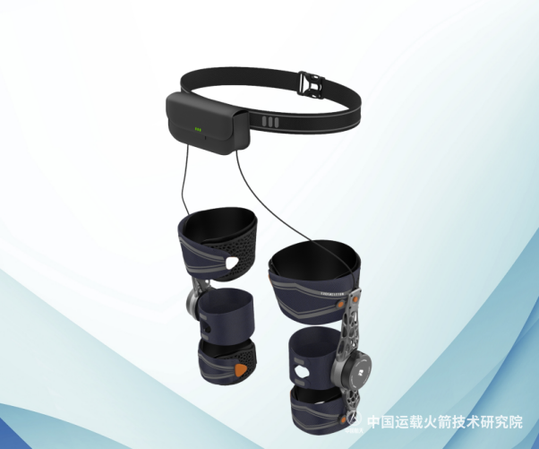
¥7,000-9,000 2.6kg 固定2模式 ★ 未建立 RL连续自适应替代固定模式 踏山（兵器工业） ~¥9,800 2.4kg 8模式+远程监护+气囊防跌 ★ ★ ★ 未建立 RL连续自适应+联邦学习跨用户优化 PowerKnee（远也） 未披露 2.5kg 膝关节炎定位 ★ ★ 未建立 肌骨模型从力矩→肌肉激活反推 GoGO-K（程天） 未披露 <1.5kg 吸附辅助 ★ ★ ★ 1000+机构 RL个性化·联邦学习·App数据飞轮 海尔W3 ¥5,000-6,000 1.75kg 小碎步模式 ★ ★ ★ 200+店 纯膝关节方案(非髋膝协同)·肌骨模型 Skip MO/GO $4,999 ~1.5kg 无·户外定位 ★ ★ ★ 始祖鸟渠道 专做老年·不做户外·¥3,000-6,000定价
核心发现：全球7款膝关节外骨骼中，没有一款同时做到"RL个性化力矩+肌骨模型分析+专为老年设计+合理价格"。
每个竞品都缺至少两个关键要素。Bones的组合（肌骨模型+RL+联邦学习+硬件伙伴+出海渠道）恰好填补这些空白。
竞品的共同弱点：①控制不智能（全是固定模式/通用AI·非个性化）②不是专为老年人设计（DNSYS=户外·Skip=登山·极壳=通勤）③没有数据飞轮（每个用户的数据不会让下一个用户更好）。
6.2.11 产品进化路径
第一代产品可以丑。可以有大悬挂电机。可以是"绑在腿上的机器"。伟大产品的第一代都不完美——但没有第一代就没有第二代。膝关节外骨骼的第一代只需要做一件事：让膝盖不适的老人走路更轻松。
膝关节外骨骼的第一代只需要做一件事：让膝盖不适的老人走路更轻松。
阶段 时间 产品形态 核心指标 用户反馈 技术成熟度 Gen 0 · 原型验证 0-6月 单膝绑带式·外挂电机（~3kg·"丑但能用"）·有线连接控制盒 减负30%+·10个测试老人·步态数据采集 "有点重但膝盖负担确实减轻了" 肌骨模型+RL力矩·仿真验证完毕 Gen 1 · Kickstarter 6-18月 双膝·碳纤维框架·2.0-2.5kg·一体化电池·App步态报告 减负40%+·下楼制动60%+（老人最痛场景）·3h续航·30秒穿戴 "下楼不害怕了"·NPS 50+ RL力矩从仿真→实物·联邦学习开始积累数据 Gen 2 · 量产优化 18-30月 1.5-2.0kg·电机内置化·护膝外观·左右腿独立RL策略 减负50%+·5h续航·IP54·内侧/外侧磨损不同策略 "像护膝·不显眼"·NPS 60+·退货率<20% 联邦学习千人级·跨用户泛化验证 Gen 3 · 规模化 30-48月 <1.0kg·柔性执行器集成·外观接近普通服装·类似Skip MO/GO但定价¥3,000而非$5,000 减负60%+·8h续航·机洗·老人穿上像穿了一条功能裤 "几乎感觉不到它的存在" 软体执行器+肌骨模型·联邦学习万人级·数据飞轮全速
关键原则：每一步都必须解决一个用户能感知的真实问题。
Gen 0：减少膝关节负荷（核心价值）
Gen 1：下楼不害怕（老人最大痛点·竞品做不到）
Gen 2：不显眼+左右腿不一样（个性化·社交羞耻感消失）
Gen 3：看起来不是外骨骼（品类终极形态）
每一步的定价策略：Gen 0-1（¥5,000-8,000·早期采纳者+子女购买）→ Gen 2（¥3,000-5,000·大众银发市场）→ Gen 3（¥2,000-3,000·护膝替代品·人人都能用）
对应的市场：Gen 0-1=Kickstarter海外早期用户(500-1000台) → Gen 2=海外+国内一二线城市老人(5000-10000台) → Gen 3=大众市场(5万+台)
6.2.12 膝OA消费者：中国与海外的关键差异
维度 中国老年消费者 海外老年消费者 购买决策者 子女是实际购买者（80%+）。老人不舍得·子女看到父母出不了门→主动搜索→下单 老人自己购买（50%+）。独立性强·自己搜索Amazon·自己比价 核心痛点表达 "上下楼困难""不敢出门""怕给子女添麻烦" "I want to keep hiking""I don't want to lose my independence" 社交羞耻感 极高。"穿这个出去别人以为我残废了"——中国老人对"辅助器具"的抗拒远大于西方老人 中等。西方老人更接受使用辅助设备保持独立生活的概念 渠道偏好 线下体验必须。需要亲自试穿·子女陪同·导购讲解。社区/药店/养老机构 线上为主。Amazon评论·YouTube测评·Kickstarter 价格敏感度 心理关口¥2,500-3,000。超过=需要子女"送礼"。¥5,000+ = "太贵了不值得"。但子女愿意花更多 $500-1,500可接受。$2,000+需要"医学必要性"证明 对"智能"的态度 "不懂""太复杂""不要叫我学"但子女希望有远程监护 愿意学习·能接受App·对数据报告感兴趣 品牌信任来源 ① 医生推荐 ② 政府/社区背书 ③ 子女朋友推荐 ④ 央视/权威媒体
① Amazon评分 ② YouTube测评 ③ FDA认证 ④ 朋友推荐
退货率 线上80%+（尺寸不合适·穿戴复杂·不会用·跟想象不一样·怕被说） 30-50%（主要是尺寸和效果达不到预期） 足力健的启示 足力健巅峰¥40亿年营收·5000家店。证明了中国老人愿意为"功能"付费——但必须通过线下体验+品牌信任建立。足力健的衰落（品质问题+被运动品牌替代）说明只靠渠道没有产品力走不远。Bones应该学足力健的渠道策略（线下体验店）+ 苹果的产品力（技术过硬+设计好看）。
6.2.13 膝关节与髋关节的对比分析
维度 髋关节 膝关节 影响 OA患病率 ~5-10%的OA 60-85%的OA 膝关节是OA的重灾区——市场大5-10倍 日常痛感 主要是抬腿/翻身痛 走路每步都痛·特别是下楼 膝关节痛=每天都在提醒你"你老了" 功能丧失 抬腿困难·不影响平地走 上下楼·下蹲·站立——基础日常功能全部受影响 膝OA让老人行动不便——髋OA只是"走慢点" 现有替代品 拐杖可分担部分负重 拐杖只能分担15-20%·不能解决膝内侧/外侧受力不均 膝关节缺乏有效的非手术干预手段 支付意愿 低——"还能走" 高——"不能下楼了" 功能丧失越严重·支付意愿越高 技术难度 球窝·容错高·单向助力 铰链·对位苛刻·助推+制动双模式 膝关节硬件是髋关节难度的3-5倍 肌骨模型价值 刚体够用 必须建模半月板+十字韧带·刚体无法做 Bones的唯一性在膝关节最大化
膝关节银发市场的终极逻辑：
问题够大：3.2-4.5亿人受膝OA困扰·终生风险41-46%·$200亿+替代方案市场·所有现有方案都是妥协
竞品不够好：7款产品无一同时满足"个性化+专为老年+合理价格"
Bones恰好能：肌骨模型解决个性化·RL解决连续自适应·联邦学习让第1000个用户比第1个更好
路径清晰：Gen 0原型(优先验证核心功能)→Gen 1 Kickstarter→Gen 2 运动护具化→Gen 3 接近服装
中国vs海外双市场：海外Kickstarter早期验证→国内线下体验+子女购买
并非"拿着技术找产品"——而是"找到了一个3.2亿人的巨大需求，市场上没有人真正解决，恰好的技术恰好能解决"。
6.2.14 为什么髋关节外骨骼不适合老年膝OA患者
一个需要认真分析的问题：极壳Hypershell销量数万台、估值$400M——为什么它的用户中老人很少？是老人"不想要外骨骼"？还是产品形态本身不适合老人？答案：髋关节外骨骼的Omega架构决定了它无法服务膝OA老人——这不是营销问题，是生物力学和产品设计的根本矛盾。
维度 极壳Hypershell（髋关节·户外运动） 老人膝OA实际需要 根本矛盾 助力时机 摆动相（抬腿时助推）——减少髋屈肌做功·降低行走代谢成本 支撑相（承重时减负）——减少膝关节内收力矩（KAM）·减轻内侧间室负荷 髋外骨骼的助力在腿离地时（摆动相），但膝OA的高负荷发生在脚着地时（支撑相）。时间窗口完全错位。 生物力学证据 优化方向：减少代谢成本·提高行走效率 优化方向：减少KAM·降低关节软骨接触应力 Virginia Tech研究中观察到：特定髋外骨骼在特定条件下使膝关节吸收功率增加9-13%（实验室条件·具体数值因设备和工况而异·详见研究原文）（股直肌离心收缩增加）。帮了髋，累了膝。对于膝OA老人，髋外骨骼可能加重病情 核心场景 登山·徒步·上坡——连续大角度髋屈伸 平地行走·上下楼·坐-站·蹲起——膝关节承载+制动 登山场景需要大角度髋助力。老人日常生活几乎不需要大角度髋屈伸——他们需要的是膝盖减负 Omega架构特点 单电机经皮带驱动髋关节·结构简单·成本低·适合大角度摆动 需要：①膝关节铰链处的力矩输出 ②下坡/下楼时的制动（负功） ③支撑相的稳定支撑 Omega架构是为"大角度·单向·摆动相助力"优化的——恰好是膝关节不需要的。膝关节需要的是"小角度·双向（助推+制动）·支撑相"——完全不同的工程需求 穿戴方式 腰带+大腿绑带·需要较好的髋关节活动度 越简单越好·30秒完成·不需要弯腰太多 老人髋关节活动度下降，弯腰系腰带困难。简单的大腿套筒式比腰带+绑带更适合老人 定价与定位 $799-1,999·户外运动装备 ¥3,999-4,999·"子女给爸妈买的健康产品" 户外运动装备的营销语言（"突破极限""更强更快"）对老人完全无效甚至反感 用户反馈 Trustpilot 2.4-3.0/5·83岁用户："绊倒风险·危险"·15%投诉膝盖负担未减 需要"下楼轻松了""站起更轻松了"——明确的负荷减少效果 极壳面向年轻人的正面评价（"爬山轻松"）和老人负面评价（"膝盖照旧疼"）恰好验证了髋vs膝的根本差异
结论：极壳不做老年市场不是"没想到"——是明智的产品-市场匹配判断。他们的Omega架构+户外定位决定了他们的用户是35岁登山者。如果极壳强行做老年市场，需要重新设计膝关节执行器、改变控制策略、调整营销叙事、建立线下渠道——本质上是一个新公司。Bones从第一天就为膝关节OA老人设计——这与极壳的市场选择不同——不是"谁看到了谁没看到"，而是不同的架构选择决定了不同的人群覆盖。
6.2.15 年龄分层产品策略：不同年龄对膝关节产品的真实刚需差异
核心问题：同一个硬件平台（电机+碳纤维框架+传感器+AI模型）能否覆盖从25岁音乐节青年到80岁膝OA老人的全年龄段？答案是：硬件可以复用，但功能优先级、App UX、营销叙事、品牌、渠道必须分层——且"全年龄段"是十年愿景，不是当前执行策略。
6.2.15.1 老年人群（60-80岁·膝OA患者）——当前唯一焦点
功能 刚需度 决策依据 助力 ★ ★ ★ ★ ★ 走路、上下楼、坐-站、蹲起——每个动作都痛。不用产品=不能正常生活。这是"能不能"的问题，不是"好不好"的问题 监测（子女端） ★ ★ ★ ★ ★ 老人自己不太关心数据。但子女极需——"爸妈今天膝盖怎么样"是子女付费的关键驱动力。不是老人刚需，是付费者的刚需 按摩 ★ ★ ★ 晨僵和运动后疲劳是真实痛点。属于"舒服"，不是"必需"。但能显著提升留存率和NPS——老人每天用按摩=感觉"买的值" 训练 ★ ★ ★ 股四头肌强化是临床A级推荐。但老人会主动训练吗？依从性是致命问题。功能有，但不作为主要营销卖点——老人不会为"训练"买单，子女也不会
6.2.15.2 中年人群（40-60岁·职业站立/早期OA/预防）——远期第二站
功能 刚需度 决策依据 助力 ★ ★ ★ 站久了膝盖累，但还没到"疼得不能走"。购买动机是"预防"不是"治疗"。支付意愿中等（¥2,000-3,000可接受） 训练 ★ ★ ★ ★ "我不想老了像我爸妈那样"。这是可以卖的训练设备。但需要App引导+游戏化+社交挑战——和老人类完全不同的产品体验 按摩 ★ ★ ★ 下班后放松。愿意付费。和筋膜枪竞争 监测 ★ ★ ★ 量化自我。但没到"没有不行"
6.2.15.3 年轻人群（20-40岁·运动/娱乐）——远期第三站
功能 刚需度 决策依据 监测+训练 ★ ★ ★ ★ ★ 深蹲发力对称性、肌肉激活度可视化、抗阻训练——健身房用户愿意为"数据+AI教练"付费。这是可独立变现的软件价值 按摩 ★ ★ ★ ★ 运动后恢复。和筋膜枪竞争但优势明显（全自动·不占手·覆盖全腿） 助力 ★ ★ 音乐节站立、下坡膝盖不适。低频场景。不是每天发生的事
核心洞察：不同年龄的"刚需功能"几乎完全倒置。老人最需要助力（★ ★ ★ ★ ★ ）·年轻人最不需要（★ ★ ）。年轻人最需要监测+训练（★ ★ ★ ★ ★ ）·老人最不需要（★ ★ ★ ）。同一个产品打全年龄段=哪个年龄段都打不透。正确的策略是：同一硬件平台+分层功能配置+独立品牌+独立渠道。
6.2.16 多品牌阶梯战略：从老人到全人群的十年路径
多品牌阶梯：从老人到全人群的十年路径
2026-28
膝安/KneeEase
膝关节不适人群 ¥3,999-4,999
2028-30
Kine（独立品牌）
户外运动$799-1,299
2030-32
膝安健康版
职业站立¥2,999-3,999
2032+
Kine Pro
健身科技$499-799
同一硬件平台 · 独立品牌 · 独立渠道 · 分层定价
以下策略基于五个维度的理性评估（刚需强度·支付意愿·触达难度·产品改动量·竞争烈度）。每个阶段聚焦一个人群、一个品牌、一套打法。在上一阶段验证成功之前，不启动下一阶段。
阶段 时间 人群 品牌 核心功能优先级 价格 渠道 叙事 启动条件 Phase 1 2026-2028 60-80岁膝OA老人+子女 膝安KneeEase（海外）· 膝安（中国） ①助力（核心）②监测（子女端）③按摩（体验）④训练（有但不主推） ¥3,999-4,999$1,299-1,799 线下社区+养老机构+京东+微信 "让爸妈走路更轻松" —（当前执行中） Phase 2 2028-2030 35-55岁户外+运动人群 Kine（独立运动子品牌） ①助力（上坡+下坡）②监测（运动数据）③按摩（恢复） $799-1,299 Kickstarter→Amazon→REI "Hike longer. Recover faster." Phase 1验证：年销>500台·NPS>60·供应链稳定 Phase 3 2030-2032 40-60岁职业站立+预防人群 膝安健康版KneeEase Pro（海外） ①训练（核心）②助力（站立）③按摩（久站后）④监测 ¥2,999-3,999 企业B2B+线上+骨科推荐 "站了一天，膝盖还是你自己的" Phase 1/2数据积累·BOM降至¥1,500以下 Phase 4 2032+ 20-40岁健身+运动+娱乐 Kine Pro（高端健身科技品牌） ①监测+训练（核心）②按摩③轻助力 $499-799 App Store+Amazon+健身房渠道 "Train smarter. See your progress." Gen 4产品·<1kg·肌肉监测数据积累·联邦学习成熟
品牌策略的核心原则：
① 骨骼流形（膝关节不适人群）永远不碰年轻运动市场——品牌资产是"专业·可信赖"，任何运动化营销都会稀释这个定位
② Kine（运动线）作为完全独立的子品牌运营——独立的Logo、包装、App、营销团队。技术和供应链共享但品牌完全隔离。类似Toyota和Lexus的关系——消费者不知道、也不需要知道
③ 同一硬件平台的复用价值是真实存在的——电机、碳纤维框架、传感器、416模型全部复用。Kine的增量成本主要是App开发和营销投入，硬件BOM与老人线基本相同
④ 老人线必须先跑通——这是整个战略的"验证层"。如果老人市场验证失败（PMF不存在），整个多品牌阶梯不复存在。如果成功，品牌资产和数据飞轮为后续品牌提供信任背书和技术基础
⑤ 日本市场独立于品牌阶梯——日本老龄化率全球最高（65+占29.3%），介護保険体系成熟，是骨骼流形老人线的天然第二市场。不依赖中国市场的成功即可同步探索
6.3 膝关节OA替代方案：拐杖·支具·药物·手术的局限性
在论证膝关节外骨骼的必要性之前，需先理解现有所有替代方案的根本性局限。
以下基于2024-2026年最新学术研究和市场数据，逐一分析六类主流替代方案为何无法满足膝关节OA患者的核心需求。
6.3.1 膝关节OA替代方案局限性分析总览
方案 市场规模 KAM减少 核心局限原因 用户废弃/不满意率 足力健老人鞋 巅峰¥40亿（2019）·现衰退至¥18亿 0% 鞋类产品无法改变膝关节内收力矩。足力健的广告宣称与实际功效存在根本性断裂。500+专利中无一项涉及膝关节生物力学。2025年因虚假宣传被罚¥3100万 品牌信任崩塌·创始人58条限消令 拐杖/手杖 $3.0B(2026) 对侧使用~20%·同侧使用反而增加 ①多数老人默认同侧使用=加重病情（Chan 2005）②上楼梯完全无效③占用一只手④香港研究（Maximo 2024）：56%用雨伞/登山杖代替拐杖以避免"残疾"标签 50%跌倒者不告诉医生·怕被推荐拐杖 电动轮椅/代步车 $1.5-2.2B(2024) 100%卸载但导致肌萎缩 WHILL 2026白皮书：首要障碍是"病患身份"焦虑。完全消除负重=股四头肌萎缩加速=膝关节OA恶化的根本驱动因素。无法上下楼梯·无法进入多数老旧住宅 96%用户偏好设计驱动的设备 膝关节支具（Unloader Brace） $1.4-2.0B(2026) ~10% Squyer 2013里程碑研究：1年废弃率72%·2年75%。三点弯曲产生局部高压=不适。固定矫正角度无法适应不同活动（平路vs楼梯vs坡道）。走路时下滑需反复调整 72%在1年内停止使用 登山杖/北欧行走杖 — 增加KAM（Simic 2011系统综述） Simic 2011：北欧行走杖被归类为对内侧膝OA"有潜在危害"的步态策略。需要双手占用·不适合日常购物/乘公交。需要上肢协调能力·老年OA患者常合并肩关节炎 不适合城市日常使用 髋关节外骨骼（极壳/海尔/程天） $0.5B+(消费级·2026) 不直接减少KAM 髋关节矢状面屈伸助力作用于摆动相·膝关节OA高负荷发生在支撑相。Virginia Tech研究：髋外骨骼使膝关节吸收功率增加9-13%（股直肌离心收缩增加）。用户反馈："大腿髋部轻松·小腿膝盖照旧" Trustpilot 2.4-3.0/5·15%投诉膝盖负担未减
6.3.2 足力健案例深度分析
维度 详情 对Bones的启示 巅峰数据 年营收~¥40亿·5000+门店·CCTV广告投入¥2亿+/年·代言人张凯丽/郎平/凤凰传奇 中国老人功能产品市场天花板远高于外界认知。¥40亿=足力健仅在一个细分子品类（老人鞋）就达到的规模 衰退原因 ①产品质量崩塌（鞋底磨损·防滑失效·2019年滑倒诉讼）②重资产扩张（¥60亿产业园）③不相关多元化（有机食品）④2025年虚假宣传罚款¥3100万⑤创始人58条限消令·¥7亿负债 产品力是基础·营销无法长期替代。渠道和广告可以快速起量·但品质问题会以同样速度摧毁品牌 核心教训 足力健验证了"子女为父母购买功能产品"的强大需求·但其失败揭示了只有渠道没有产品力走不远。斯凯奇/安踏/回力用"舒适科技"替代"老人鞋"标签——去老龄化定位反而赢得市场 ①产品应定位为"运动辅助/健康穿戴"·而非"老年医疗器械"②品质和可验证的效果数据是信任基础③央视曝光的市场乱象=正规品牌建立信任的历史机遇
6.3.3 膝关节支具的依从性危机
膝关节支具（Unloader Brace）是膝关节外骨骼最直接的替代方案——也是证明"被动方案不够"的最有力证据。
Squyer et al. (2013, Clinical Orthopaedics and Related Research)：1年废弃率72%·2年75%。无任何临床指标（BMI/年龄/性别/OA严重程度/疼痛评分）能预测谁会继续使用。
这意味着膝关节OA患者需要但得不到有效的力学干预——不是"不想要"·是"现有的都不好用"。
6.3.4 髋关节及模块化外骨骼竞品缺陷
产品 价格 重量 助力方式 对膝OA的根本性不足 用户投诉/评分 Hypershell X系列（髋关节·非膝关节·无产品图） $799-1,799 2.2-2.4kg 髋关节矢状面屈伸·摆动相助力 ①助力在摆动相·膝关节OA疼痛在支撑相②纯髋助力不减少KAM③Virginia Tech研究：髋外骨骼使膝关节吸收功率增加9-13%（股直肌离心收缩增加）④明确标注"非医疗器械"·不为膝关节设计 Trustpilot 2.4-3.0/5。83岁用户："绊倒风险·危险"。皮肤灼伤投诉。退款需Amex介入 海尔W3 ¥15,999 1.75kg 髋屈伸助力+非牛顿流体膝垫 ①非牛顿流体=被动冲击吸收·非主动膝关节卸载②膝关节OA是慢性负荷疾病·非冲击损伤③16Nm/腿助力在髋部·膝部零主动助力④官方承认"主要辅助髋关节·非直接作用于膝关节" 2026.3才发货·用户反馈有限。¥15,999定价远超老年消费门槛 程天EasyGo/GoGo ¥2,500-10,000 <2.5kg 被动弹簧/主动髋助力 ①被动版(EasyGo)无法在下楼时提供制动辅助②主动版(GoGo)是髋部助力·非膝关节专项③行业内部评价："消费外骨骼更适合健康人省力·对真正行动不便的老人适配度不高"④下楼时无助力反而增加膝盖负担 EasyGo 15秒售罄(数百台)·但无长期用户满意度数据 Ascentiz H+K模块化 $599-1,498 ~2.5kg 髋/膝模块可换·每次只能用一个 ①需手动更换模块=老年用户无法独立操作②Daily Mail评测："走路不自然·像Wallace in the Wrong Trousers"③AI延迟·"感觉在追着腿走而非随腿而动"④电池耗尽=2.5kg死重 KS backer:"髋关节不行了·想知道什么时候发货""我投资了骗局吗" Vastnaut One 4x4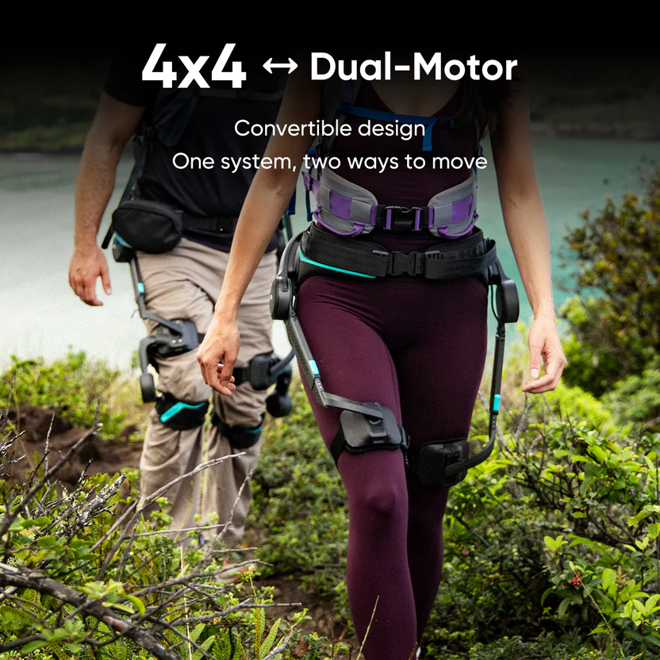
$1,299-1,899 2.7kg 4电机（2髋+2膝）同时助力 ①最接近理想方案·但尚未发货(KS 2026.6结束)②宣称35%膝冲击减少·无独立临床验证③2.7kg·对老年人偏重④仍定位为户外装备·非膝关节OA专属 KS积极·但无发货后评价 DNSYS X1+Z1组合 $2,298-3,298 X1 1.6kg+Z1 X1髋+Z1膝·可叠加 ①总价$2,300-3,300=高昂②电机噪音大("RoboCop whirring"·Wareable)③电池仅~70分钟(运动模式)④"Avatar效应"：使用后腿部感觉更重·肌肉酸痛次日⑤蓝牙断连·需重启 Trustpilot 3.5-3.6/5。仅11-12%负面评价得到回复
核心结论：现有竞品中，无一同时满足膝关节OA患者的四个核心需求——①支撑相膝关节内侧卸载（减少KAM）②下楼/下坡制动辅助（偏心控制）③轻量（<2.5kg总重）④简单（无需模块更换·无需App设置·30秒穿戴）。
Vastnaut One在概念上最接近（同时髋+膝助力·$1,299）·但尚未发货且无临床验证。DNSYS X1+Z1提供了膝卸载能力·但价格$2,300-3,300·噪音大·续航短。
市场存在一个明确的产品空白：专注膝关节OA·轻量·简单·价格可承受的主动外骨骼。
6.4 直接切入膝关节外骨骼的可行性评估
前述T1→T5渐进路径（软件→鞋类→护具→被动外骨骼→主动外骨骼）是技术风险递减的保守策略。但存在一条替代路径：直接切入主动外骨骼硬件。以下评估该路径的可行性。
答案：可行。但需要重新定义"外骨骼"——不是Skip MO/GO那种$5,000的高端产品，也不是PowerKnee那种一年没出货的实验室原型。而是：一个轻量、不显眼、老人愿意穿、子女买得起的膝关节辅助产品。
6.4.1 为何跳过渐进路径——直接切入膝关节外骨骼
之前担心 现实检查 结论 "App步态训练可达到13.5%KAM减少" 13.5%是Lancet RCT验证的临床显著性。大多数膝OA患者并不需要减少50%的KAM——减少10-15%就能显著缓解疼痛。但App需要用户坚持改变步态——依从性是致命短板 App可以做·但不应该作为唯一方案。它是"软件入口"——让用户先用App体验价值·再升级到硬件。不是"先做App再做硬件"——是"同时做·App获客·硬件赚钱" "鞋/鞋垫只有9-12%·太少" Nurvv做了5年仍是小众。Arion是B2B运动队。鞋垫市场从未真正起飞——因为用户不会为鞋垫付费。消费者愿意为"鞋"付费（足力健¥40亿）·但不愿意为"鞋垫"付费 鞋垫不是独立产品——是外骨骼的配件。Bones不应该花2-3年做鞋垫。直接做膝关节外骨骼·鞋垫作为可选配件 "被动护具不舒服·没人戴" 外翻护膝的依从性极低——热·笨重·显眼·被动。但这是被动方案的问题·不是辅助方案的问题。主动方案（电机助力）比被动方案（弹簧压迫）更舒适——因为主动方案在不需要时完全零阻力 主动外骨骼可以比被动护具更舒适。因为电机在摆动相可以完全不给力——不像弹簧一直有阻力
6.4.2 可行性评估
可行性维度 Gen 0 可以做到什么程度 需要什么 参考竞品 重量 <1.0kg/腿(膝部)·~2.0kg双膝总重。CubeMars电机~200g·减速器~150g·碳纤维框架~400g·电池~250g·绑带+传感器~200g = ~1.2-1.5kg。加上工程余量=1.5-2.5kg。在2kg安全阈值内。 碳纤维供应商·电机选型(CubeMars/Maxon)·电池pack设计 DNSYS Z1: 680g/腿·PowerKnee: <1kg/腿·Skip MO/GO: 3.2kg·Skip MO/GO: 3.2kg 力矩 7-20Nm即可减少10-20%膝关节接触力。CM值：CubeMars GL40 48V版本峰值~5Nm·经10:1减速=50Nm。绰绰有余。即使5:1减速=25Nm也够用 减速器(行星/谐波)·电机控制板·力传感器 Ascentiz K1: 48Nm·PowerKnee: 1520W电机 续航 21700电池(50E)·4串=14.4V·5000mAh=72Wh(Samsung 50E)。平均功耗15-25W(走路)·峰值50W(上楼梯)= ~2-3h连续使用。日常间歇使用=半天够用。可换电池设计=全天 电池pack·BMS·充电器·热管理 PowerKnee: 5h+·DNSYS: 4h+·智行: 4h 控制 IMU+力传感器→RL力矩策略。这是Bones的核心优势。竞品的IMU步态检测只能输出"预设力矩曲线"——Bones的RL可以输出"根据你的膝关节内侧磨损模式定制的力矩" MCU(STM32H7/ESP32-S3)·IMU(ICM-20948)·力传感器·RL模型部署(TensorFlow Lite Micro) 据公开信息，主要竞品采用IMU+PID·未见RL商业化应用 外观 碳纤维框架+织物绑带+外挂电机=像运动护具·不像医疗器械。关键设计原则：① 覆盖在裤子下（至少部分遮住） ② 运动装备设计语言（黑色/灰色 · 碳纤维纹理 · 简洁线条） ③ 绝不用白色/米色（那是医疗器械的颜色）
工业设计师·碳纤维开模·绑带材料(运动级面料·透气·防滑) DNSYS Z1: 碳纤维+3D织物=像运动装备·Skip MO/GO: 藏在始祖鸟裤子里 穿戴时间 目标30秒·最多60秒。三条绑带设计(参考PowerKnee)。大腿-小腿-足底。快拆扣具。不需要脱鞋 快拆扣具·弹性绑带·颜色标记(左右腿·上下端) PowerKnee: ~5分钟（太长）·智行: ~30秒(标杆)·Relink: 1分钟 噪音 目标<30dB·极限<40dB。PowerKnee的20dB是行业标杆。噪音不是技术问题——是电机选型和减速器设计问题。可以做到 低噪音减速器·电机驱动频率优化(>20kHz·人耳听不到)·隔音罩 PowerKnee: 20dB(标杆)·Skip MO/GO: 有噪音(被批评) 价格 BOM目标$400-800·零售$1,299-1,999。电机$80-150·减速器$50-100·碳纤维$100-200·电池$30-50·MCU+传感器$50-80·绑带+扣具$30-50·组装+测试$60-120 供应链管理·BOM优化·组装外包 DNSYS Z1: ~$1,998·极壳新X: ¥999起·Skip MO/GO: $5,000
直接做外骨骼完全可行。技术栈已经成熟。Bones的RL+肌骨模型是竞品没有的差异化——在KAM减少这个核心指标上，Bones可以从竞品的"通用助力"升级到"针对内侧/外侧磨损的个性化力矩"。
关键不是"能不可以做"——是"能不能让老人愿意穿"。这是产品问题·不是技术问题。
6.4.3 老年用户核心关注点
如果Bones做膝关节外骨骼，以下几个问题必须在产品定义阶段回答——不是技术验证阶段，是产品定义阶段。
老人的问题 产品必须回答的方式 竞品现状 "穿了别人怎么看我" 裤子能遮住。不是"设计得好看"——是"穿上裤子就看不见"。碳纤维框架做成窄条状·不超裤子宽度。电机放在大腿外侧·不超出裤子轮廓。如果做不到完全隐形——至少做到"看起来像运动护膝"·不像"医疗器械"。 Skip MO/GO: 做到了(藏在始祖鸟裤子里)·但$5,000。DNSYS Z1: 外观像运动装备·不像医疗器械。PowerKnee: 三条绑带+外露电机=医疗器械感 "我穿不上/脱不下" 一个人·坐着·30秒穿好。不需要别人帮忙。快拆扣具·颜色标记(红=右腿·蓝=左腿·箭头标示前后)。不需要看说明书。如果第一步需要别人帮忙=产品失败 PowerKnee: ~5分钟(太慢)。智行: ~30秒(标杆—但智行用的"腰带式"可能不适合所有体型)。Relink: 1分钟穿戴·10秒脱卸(脱卸速度标杆) "我穿上难受" 透气·不磨皮肤·不热·不重。绑带材料=运动级透气面料·不是医用尼龙。大腿绑带宽度>5cm(分散压力·避免勒痕)。接触皮肤处=硅胶防滑条·不是魔术贴。重量分布均匀·大腿承重60%·小腿40% 目前无竞品有长期穿戴舒适度数据。所有产品都在短期测试阶段 "会不会走着走着没电了/坏了/摔了" 没电=被动护膝模式（零阻力·自然行走）。不是"突然卡住"。电机在断电时自动脱开到零阻力状态。低电量提前10分钟震动提醒。安全第一：任何异常→自动脱开。 Skip MO/GO用户反馈中提及"电池耗尽后的额外负重"。PowerKnee的主动制动在没电时=被动模式。智行/踏山均无公开的故障安全测试数据 "买了会不会被坑" 30天无理由退货·Kickstarter社区监督·公开BOM清单·公开测试数据。央视刚曝光(2026.6.28)材质虚标——这是Bones建立信任的最佳时机。"你可以看到你的膝关节内侧受力减少了多少"（App数据可视化）=可验证的信任 央视曝光：材质虚标·效果无依据·退货困难。目前无一品牌提供可验证的效果数据 "我儿子/女儿会给我买吗" 营销对象不是老人——是45-55岁的子女。"给爸妈的膝盖·一份保障"。产品包装=送礼级别（参考Apple产品包装）。附赠：父母使用指南·子女App远程查看步态数据·跌倒预警推送 海尔线下店=子女陪同体验。足力健的广告=面向子女("给爸妈买双好鞋")。Skip面向户外玩家·不是老年市场
6.4.4 膝关节外骨骼产品路线图
阶段 时间 产品 核心目标 用户验证 成本/定价 Gen 0 · 原型 0-6月 单膝·外挂电机(~3kg)·有线控制·"丑但能用"+ App步态报告（MVP版） ① 验证RL力矩>固定PID ② 10个老人测试 · 采集反馈 ③ App步态数据收集
"膝关节负担感觉减轻了""有点重·但能接受""下楼有用" BOM ~$300-500（不计人工·原型数量） Gen 1 · KS 6-18月 双膝·碳纤维·2.0-2.5kg·一体化电池·快拆绑带·30秒穿戴·IP54+ App KAM减少可视化 ① Kickstarter验证海外需求 ② 下楼制动60%+（老人最痛场景） ③ RL个性化力矩首次实机验证
"下楼不害怕了""穿脱快""裤子遮不住·但看着不吓人" BOM ~$400-600零售 $1,500-2,000 Gen 2 · 量产 18-30月 1.5-2.0kg·运动护具外观·电机紧凑外置·左右腿独立RL·5h续航·30dB以下+ 联邦学习跨用户启动 ① 内侧/外侧磨损不同策略 ② 千人级联邦学习 · 第1001个用户比第1个精准30%+ ③ NPS>60 · 退货率<20%
"像护膝·不显眼""左右腿感觉不一样·右边帮得更多""没电也能正常走" BOM ~$350-500零售 $1,200-1,800 Gen 3 · 隐形 30-48月 <1.0kg·织物集成·磁力/压电执行器·裤子遮住完全看不见+ 万人联邦学习·全自动自适应 ① 零学习成本 · 穿上就走 ② 8h续航 · 机洗 ③ "几乎感觉不到它的存在"
"跟我以前的护膝差不多""去菜市场没人看""充一次用一天" BOM ~$200-400零售 $800-1,500
修正后的路线图：不做鞋垫·不做被动护具。直接做膝关节外骨骼。App同步做——不是"App先行"·是"App和外骨骼同时上线·互相导流"。
从Gen 0到Gen 3，不是"从软件到硬件"——是"从丑到不丑·从重到轻·从显眼到隐形"。每一代都解决一个用户能感知的真实问题。
Gen 0证明：有用（减少疼痛·RL个性化力矩有效）
Gen 1证明：能卖（Kickstarter验证·$1,500-2,000有人买）
Gen 2证明：能规模化（千人级数据·NPS验证·供应链成熟）
Gen 3证明：能普及（像护膝一样便宜·像秋裤一样不显眼·像手机一样不用学）
这个路线图不需要8年。Gen 0到Gen 2=30个月。Gen 3=48个月。总共4年。
6.5 假肢市场：中长期战略储备
假肢（智能肌电假肢）是Bones肌骨模型最被低估的应用场景——而且中国公司正在颠覆这个市场。
强脑科技(BrainCo)从¥60-80万降到¥16.8万，灵心巧手并购后目标¥3万。价格正在从"医疗器械"降维到"消费电子"。
在这个价格下探的过程中，控制算法（EMG→力矩的连续映射）成为差异化核心——恰好是Bones肌骨模型的能力。
6.5.1 强脑科技深度分析
维度 详情 对Bones的借鉴
公司背景
创立 韩璧丞 · 2015年哈佛创新实验室 · 2018年落户杭州 · "杭州六小龙"之一 路线 非侵入式脑机接口（vs Neuralink开颅路线） 启示 非侵入式=消费级。Bones肌骨模型也是非侵入式（IMU/EMG/视频）——同一技术哲学阵营
核心产品
① 智能仿生手（BrainRobotics） · ¥16.8万 · FDA 510(k) · 全球首款量产 · 五指独立运动 ② 智能仿生腿（轻凌） · ¥18.8万 · 实时步态调整 · 交替上下楼 ③ 仿生灵巧手Revo3 · 21DOF · 0.1mm精度 · 面向人形机器人
强脑做了硬件+控制 Bones不需要做硬件——做的是控制算法的升级版（EMG→肌肉激活→连续力矩）
价格突破 从进口¥60-80万→强脑¥16.8万=降价70-80%·政府残联+基金会+企业联合分担模式·残障人士可低成本甚至零成本获得 降价=市场扩大。¥16.8万→未来¥3-5万(灵心巧手目标)=假肢从"少数人买得起"到"多数人买得起"。更大市场=更多License收入 融资/估值 2026.1完成~¥20亿融资（IDG+华登+蓝思+领益+韦尔+华住）·估值¥120亿(>$1.3B)·除Neuralink外全球脑机接口最大单笔融资·秘密递表港交所 资本市场验证了"消费级脑机/肌电"的巨大价值。BrainCo ¥120亿估值>极壳$400M(¥28亿)。说明假肢/脑机赛道的天花板比消费外骨骼更高 商业模式 "四级火箭"：① 假肢（残障人士 · 真刚需） ② 医疗康复（孤独症/ADHD） ③ C端消费（安睡仪¥1,899 · 京东4万+） ④ 平台化（传感器/算法输出）
强脑的路径验证了"从真刚需假肢→消费健康"的可行性。Bones可以做反向：从消费膝关节外骨骼→假肢SDK授权。同一条技术主线 C端消费产品 深海豚脑机智能安睡仪·¥1,899起·京东销量4万+·但口碑两极分化·存在"智商税"争议和医疗器械合规灰色地带 C端脑机产品有需求但信任门槛极高。Bones的App走健康/健身路线(非医疗)=合规风险低 核心技术 sEMG表面肌电信号→模式识别→控制假肢。非侵入式·不需要手术 sEMG→模式识别(离散动作)≠sEMG→连续力矩。强脑的方案是"识别你想屈还是伸"——Bones的方案是"识别你想用多大力屈"。这是质的差异 弱点 ① 2024年底尚未盈利 · 研发成本高 · 商业化周期长 ② 安睡仪C端争议 ③ 强脑做硬件（假肢整机）——和Bones不冲突 · Bones做控制算法SDK
Bones与强脑是互补关系·不是竞争。强脑做假肢硬件+渠道+认证——Bones提供更好的控制算法(连续力矩替代离散模式识别)
6.5.2 灵心巧手并购案
维度 详情 事件 2026年5月·灵心巧手(LinkerBot·$3B估值·红杉+蚂蚁投资)完成战略并购·将工业灵巧手制造能力+康复初创结合 价格目标 仿生手从¥30万→¥3万(2026目标)→<¥1万(3年目标)。月产1000+只高自由度手·2026年目标交付5-10万只 影响 假肢从"医疗器械"变成"消费电子"。¥1万=一部iPhone的价格。残障人士不需要政府补贴也能买得起。市场规模从百万台→千万台级别 对Bones技术授权线的意义 量越大·License收入越大。如果Bones的肌电控制算法SDK授权给灵心巧手/强脑/Ottobock，每台$10-200的License费×50万-100万台/年=$5M-20M/年纯利润(95-100%毛利)
6.5.3 SDK策略定位
灵心巧手正在把假肢价格打到¥1万——这意味着假肢市场即将从"百万台/年"跃升到"千万台/年"。
量越大，控制算法的差异化越重要。¥1万的假肢不需要¥16.8万的控制算法——但它需要一个"足够好且便宜"的EMG→力矩方案。
Bones的肌骨模型恰好可以在手机芯片上运行（不需要专用硬件）——这是对强脑/灵心巧手降维打击的控制方案。
技术授权线加速策略：①Gen 0-1阶段:与强脑/灵心巧手/Ottobock初步接触·技术白皮书·Demo视频
②Phase 2:1个试点合作(选灵心巧手——量大·价格敏感·最需要差异化控制算法)
③Phase 3-4:2-3个签约客户·License收入开始贡献
关键差异化表述："强脑的模式识别能识别'你想屈还是伸'——Bones的肌骨模型能识别'你想用多大力屈'。这是'开关控制'和'连续控制'的差别。"
6.5.4 长期产品路线图
用户说得对：这是一个5-10年的问题，不是18个月的Kickstarter。
膝关节退行性病变的病程就是10-15年。解决这个问题的产品也应该是10年的产品演进。
阶段 时间 产品形态 核心突破 市场规模 Bones的角色 Phase 1验证期 2026-2028(0-2年) Gen 0→Gen 1外挂电机·2-3kg·丑但有用Kickstarter验证·海外早期用户 ① RL力矩从仿真→实物 ② 下楼制动60%+（老人最痛场景） ③ 100-500个种子用户 · NPS验证
$5-15M(500-2000台) 技术验证者Kickstarter品牌建立联邦学习冷启动 Phase 2产品化期 2028-2030(2-4年) Gen 21.5-2.0kg·护膝外观·电机内置化左右腿独立RL策略·App联动 ① 内侧/外侧磨损不同RL策略（个性化） ② 30秒穿戴 · 5h+续航 · IP54 ③ 千人级联邦学习 · 跨用户泛化验证
$50-150M(1-3万台/年) 品类定义者膝关节外骨骼="Bones"的代名词B2B方案开始授权给极壳/海尔 Phase 3规模化期 2030-2033(4-7年) Gen 3<1.0kg·织物集成·"外观接近普通服装"类似MO/GO但¥2,000-3,000定价 ① 软体执行器+肌骨模型成熟 ② 万人级联邦学习 · 数据飞轮全速 ③ 纳入医保/商保（中国市场）
$300-800M(10-30万台/年) 行业标准制定者全球膝关节外骨骼=默认用Bones SDKApp 100万+用户 Phase 4普惠期 2033-2036(7-10年) Gen 4<500g·日常穿戴·像一双袜子$200-500·拐杖/护膝的替代品 ① 材料突破（碳纳米管/石墨烯执行器） ② 能量采集（自供电 · 无需充电） ③ AI完全自适应 · 零学习成本
$2-5B+(100万+台/年) 基础设施"膝关节外骨骼"像"智能手机"一样普及Bones=高通+Android
这个路线图的核心逻辑：
①不是一步到位。每阶段只解决一个核心问题。Phase 1="减少膝关节负荷"。Phase 2="个性化+不显眼"。Phase 3="接近服装+医保"。Phase 4="普惠"。
②价格跟随成本下降。¥5,000-8,000(Phase 1·早期采纳者)→¥3,000-5,000(Phase 2·大众银发)→¥1,000-3,000(Phase 3·护膝替代品)→$200-500(Phase 4·人人都有)
③每个阶段都有独立商业模式。不需要等到Phase 4才能赚钱。Phase 1的Kickstarter就能产生收入。Phase 2开始B2B授权。Phase 3医保覆盖。Phase 4是终局。
④强脑的¥16.8万→¥3万的降价曲线，和Bones膝关节的¥5,000→$200的降价曲线，是同一个逻辑：中国制造+规模化=品类普及。
6.6 Bones技术栈与膝关节OA的匹配度
Bones的肌骨模型+RL，真的是解决膝关节OA问题的最佳技术路线吗？
以下分析不回避任何问题。以下分析评估RL路线与替代方案（PID·阻抗控制·贝叶斯优化）的客观比较。
6.6.1 核心生物力学问题
膝关节骨关节炎的核心生物力学参数是膝关节内收力矩（KAM）。KAM解释69%的内侧间室负荷变异——这是膝关节OA最常见的类型（内侧间室OA占60-70%）。
KAM的本质是：地面反作用力矢量通过膝关节内侧，产生一个使膝关节内收（向内倾斜）的力矩。这个力矩由力臂（地面反作用力到膝关节中心的距离）和地面反作用力大小共同决定。
关键洞察：KAM的减少不需要416肌肉模型。KAM是一个外部力学参数——它取决于你走路时脚的位置（力臂）和外力大小。一个简单的IMU+力传感器系统就可以估算KAM。改变脚的角度（步态再训练）、改变鞋底形状（楔形鞋垫）、或施加外部外翻力矩（护膝/外骨骼）——都可以减少KAM。这些方法都不需要知道股四头肌的激活水平。
6.6.2 技术能力评估
膝关节OA需要解决的问题 Bones技术能做什么 评估
"减少走路时的膝盖内侧压力"
IMU+力传感器检测步态→RL控制电机输出外翻力矩
能做到。但不需要416肌肉模型。IMU+力传感器+PID控制也能做到类似的KAM减少。远也的AI预测+导纳控制、DNSYS的AI运动预测——都在做这件事。RL可能比PID更平滑·更自适应——但优势是渐进的·不是颠覆性的
"区分内侧磨损vs外侧磨损·输出不同策略"
肌骨模型分析关节接触力分布→RL根据磨损位置定制力矩方向
这是肌骨模型真正有独特价值的地方。刚体模型无法区分内侧vs外侧接触力。如果一个老人是内侧OA·另一个是外侧OA——他们需要完全相反的力矩方向。竞品的通用AI无法区分——Bones的肌骨模型可以。但前提是：需要足够的数据来训练个性化模型。
"告诉用户哪块肌肉弱·为什么痛"
416肌肉模型→肌肉激活分析→个性化报告
这是App的核心价值。竞品的步态分析告诉你"步态不对称"。Bones的肌肉分析告诉你"股内侧肌激活不足导致髌骨外移"。这是用户能理解的差异化。但：老人真的关心"哪块肌肉弱"吗？还是只关心"走路痛不痛"？
"越用越好"
个性化联邦学习→跨用户策略共享
这是长期最大壁垒。但Gen 0验证不了。联邦学习需要100+用户的数据才能显示效果。Gen 0只有10个用户——联邦学习的价值在Gen 2+才能体现
"Sim-to-Real·不需要真人数据训练"
MyoWarp仿真管线→在仿真中训练RL策略→部署到实物
这是研发加速器·不是用户能感知的价值。MyoWarp让你不需要$500/h的运动捕捉就能迭代策略。这是内部效率工具·不是产品卖点。
"人形运控背景·全身协调"
20-40DOF人形运控经验→1-6DOF外骨骼=降维
这是工程能力·不是技术壁垒。人形运控背景让你比竞品更快地搭建RL训练管线——但这不能阻止竞品也招RL工程师。这个优势在12-18个月内会被追平。
6.6.3 替代方案对比
对于"减少走路时膝盖痛"这个具体问题——最优解可能不需要416肌肉模型。
一个IMU+力矩传感器+RL控制的系统就足够。关键是产品定义和执行速度——不是模型复杂度。
方案 技术栈 KAM减少 产品化难度 Bones能做吗
A. 轻量膝关节外骨骼+RL力矩控制（Bones推荐方案）
IMU+力传感器+RL（肌骨模型可选·Gen 2+启用）
20-29%
中高硬件+固件+App+RL训练
能。核心能力是RL控制·不是肌骨模型。肌骨模型是Gen 2+的差异化引擎
B. 纯被动外翻护膝
弹簧/铰链·零电子
7-12%
低纯机械·但依从性差
能做·但不值得。无技术壁垒·任何五金厂都能做
C. 手机App步态再训练
计算机视觉+IMU
13.5%
低纯软件·但行为改变难
能。而且应该做——作为硬件获客的入口。App不是替代硬件·是互补
D. 软体外骨骼（Bowden线缆）
线缆+电机+IMU
~20%
中线缆摩擦·力传递效率低
能做·但不推荐。48-70%力传递效率是硬伤
E. 智能鞋/鞋垫
压力传感器+IMU
9-12%
低但市场从未起飞
能做·但不推荐作为主产品。Nurvv做了5年仍是小众
6.6.4 结论：膝关节OA是技术匹配度最高的赛道
Bones的核心能力是RL控制·肌骨模型是长期壁垒。
Gen 0-1（原型→KS）：RL个性化力矩（自适应安全·非周期场景覆盖）构成短期护城河——竞品无法用PID/FSM实现。肌骨模型在MyoWarp仿真中训练RL策略，但不部署在设备端。
Gen 2+（规模化）：肌骨模型部署到设备+联邦学习激活——从短期RL护城河过渡到长期数据+模型双护城河。如果RL实机效果未达预期（例如KAM降幅仅比PID好5%），Gen 1可切换到阻抗控制方案——创业公司必须保留技术灵活性。
App同步做：步态分析+肌肉弱点报告（这是肌骨模型在软件端的体现·用户能理解）。
为什么这样调整：
①Gen 0的首要目标是"不痛"——不是"理解为什么痛"。RL力矩能做到"不痛"。肌骨模型是"理解为什么"——Gen 2再做。
②RL是你的核心壁垒。416肌肉模型是你的长期壁垒。两个壁垒有不同的时间窗口。RL壁垒窗口=12-18个月（竞品可以招RL工程师）。肌骨模型壁垒窗口=3-5年（竞品需要从零建生物力学团队）。
③先让产品work（RL）。再让产品更智能（肌骨模型）。不能反过来——如果Gen 0就因为"模型计算太慢"而延迟，竞品已经抢走了市场。
如果RL仿真中KAM降幅未达>20%，应继续优化RL训练，而非急于进入硬件阶段。RL达到仿真性能目标后，Gen 0才具备竞争力基础。
6.7 为什么膝关节比髋关节难——以及为什么Bones仍然从膝开始
阅读说明： 本节包含生物力学和机械工程的核心概念。为了让非专业读者（包括投资人）能够理解，每个概念都配有通俗解释和日常类比。如果你已经熟悉这些概念，可以跳过加粗的"基础概念"段落直接看分析。
6.7.0 基础概念：理解膝关节需要先理解这些词
ICR（瞬时旋转中心）— 为什么膝盖不是"门的合页"
一句话解释： 膝盖弯曲时，旋转轴的位置不是固定的——它会移动，画出一条J形曲线。这就像一扇门的合页在门打开的过程中自己会移动位置。工程上的后果：如果你用一个固定轴的外骨骼铰链去匹配一个移动轴的膝盖，两者会产生"打架"——绑带和皮肤之间会摩擦、滑移，长时间穿戴会不舒服。
日常类比： 想象你在开一扇门，但门的合页不是固定在门框上的——合页会随着门打开的角度自己往下滑1-2厘米。普通的门合页（=单轴铰链外骨骼）做不到这一点，你需要一个更复杂的机构。这就是为什么单轴铰链不是完美的解决方案。
和Bones的关系： Bones Gen 0-1用的是单轴铰链（最简单的方案），ICR偏差约10-15mm。Gen 2+通过电缆远程驱动减少了膝部的刚性约束（相当于给了膝盖更多的"自由度"）。Gen 3用软体织物完全消除了固定轴——织物可以随膝关节自然变形。三代逐步解决ICR问题，不是一步到位。
KAM（膝关节内收力矩）— 膝盖内侧承受的"拧毛巾"力
一句话解释： 走路时，地面反作用力会让你的膝关节向内倾斜（想象膝盖被从外侧往内侧推）。这个向内倾斜的力矩就是KAM。它是衡量膝盖内侧间室（膝OA最常发生的部位）负荷的最重要指标。KAM越高→内侧软骨磨损越快→OA进展越快。
日常类比： 站在体重秤上，你的体重是垂直向下的。但走路时，地面的力不是完全垂直的——它从脚底斜着传上来，经过膝盖时会产生一个"拧"的力矩，把膝盖往内侧推。这个"拧"的力矩就是KAM。膝盖内侧软骨就像沙发垫——如果你总是坐在沙发同一个位置（=膝盖内侧总是承受最大的KAM），那个位置最先塌陷（=软骨磨损）。
和Bones的关系： KAM是Bones RL策略的优化目标。我们的RL不是在学"怎么让你走得快"——它是在学"怎么让你走的时候KAM最小"，也就是让膝盖内侧的负荷最小。这是Bones和所有竞品最根本的差异：竞品的助力策略是"我感觉你要抬腿了，我帮你抬"（意图识别+固定助力曲线），Bones的策略是"我计算你的KAM是多少，我输出力矩把它降下来"（力学优化闭环）。
支撑相 vs 摆动相 — 膝盖的"上班"和"下班"
一句话解释： 走路分两个阶段。支撑相（占60%时间）：脚在地上，膝盖承受重量，需要助力。摆动相（占40%时间）：脚在空中，膝盖自由摆动，需要完全零阻力。
日常类比： 支撑相=你扛着东西爬楼梯（膝盖在工作），摆动相=你把东西放下甩甩手（膝盖在休息）。膝OA患者在支撑相疼痛——所以外骨骼应该在支撑相帮忙扛一部分力。但在摆动相，外骨骼必须"让开"——如果摆动相还有阻力，用户需要额外用力"拖"动外骨骼，反而更累。DNSYS Z1的"Avatar效应"就是因为在摆动相没有"让开"——用户第二天感觉腿更重了。
和Bones的关系： Bones用AK80-9的9:1低减速比（反向驱动0.51Nm）+离合器（断电自动脱开）实现摆动相约等于零阻力（<2.3Nm人体感知阈值）。这是整个产品设计中最硬性的约束——摆动相约等于零阻力（<2.3Nm人体感知阈值）比支撑相助力更重要。
减速比 — 为什么9:1和100:1天差地别
一句话解释： 电机转速太高（通常几千到几万RPM），人的关节运动很慢（走路时膝盖约每秒几十度）。减速器就是把"快转小力"变成"慢转大力"的齿轮箱。减速比=电机转多少圈，输出轴转1圈。100:1=电机转100圈，膝盖转1圈。9:1=电机转9圈，膝盖转1圈。
日常类比： 自行车变速器。高减速比（100:1）=最低档位爬坡——蹬100圈轮子转1圈，很省力但很慢，而且你想倒着蹬的时候链条会卡住（=不可反向驱动）。低减速比（9:1）=中档位——蹬9圈轮子转1圈，没那么省力但更灵活，而且可以倒着蹬（=反向可驱动）。
和Bones的关系： AK80-9的9:1是低减速比。好处是反向可驱动（摆动相约等于零阻力（<2.3Nm人体感知阈值）·0.51Nm），代价是扭矩不如100:1方案大（22Nm峰值 vs 50Nm+）。但Bones的目标用户（老年膝OA·肌力减弱）只需要15-25Nm辅助力矩——9:1足够。全瘫患者（需要50Nm+完全支撑体重）才需要100:1——那不是Bones的市场。选减速比就是选择你的用户：9:1=老年OA，100:1=全瘫。
ICR不匹配的力学后果 — 为什么"硬连接"会不舒服
一句话解释： 当外骨骼的固定铰链轴和膝盖的移动ICR不一致时，两者之间的"硬连接"（绑带）会产生周期性剪切力。每次膝盖弯曲，绑带都会和皮肤产生1-3mm的微小滑移。走一万步=一万次微小摩擦=皮肤不适。
日常类比： 穿一双不合脚的鞋走一天，脚后跟会磨出水泡。不是因为鞋"太紧"——是因为鞋的摩擦点和脚的摩擦点不匹配，每一步都在摩擦同一个位置。单轴铰链外骨骼对膝盖做的是同样的事——每一步都在同一个位置产生微小摩擦。水泡不会在10分钟内出现，但走2小时就会。
和Bones的关系： Gen 0-1用宽绑带（60mm）分散压力+硅胶防滑条减少相对滑移。Gen 2+电缆远程减少了膝部刚性约束（电机在腰上，膝端只有轻量终端）。Gen 3软体织物完全消除刚性连接——织物随膝盖自然变形，ICR不匹配问题从根本上被消除。
阅读提示： 如果你不熟悉膝关节的解剖结构（股骨/胫骨/髌骨·屈曲/伸展/内收/外展·KAM/ICR等术语），建议先浏览6.9.1-6.9.2的基础解剖篇（约5分钟阅读），再回来看本章的生物力学论证。本章假设读者具备基本的膝关节解剖知识。
必须诚实面对： 外骨骼行业的资深工程师几乎一致认为膝比髋更难。这不是直觉——有明确的生物力学和工程原因。理解这些原因，是理解Bones战略选择的前提。
6.7.1 生物力学证据：膝为什么比髋难
（1）ICR是移动靶。 膝关节ICR随屈曲角度描绘J形轨迹（15-25mm范围），单轴铰链无法完美匹配。2025年Asker等人的研究表明最优多轴铰链ICR偏差最小5mm，单轴方案约10-15mm。髋关节旋转中心相对固定——外骨骼只需对齐一个近似固定轴。2024年IEEE TMech研究：单轴膝外骨骼与皮肤的周期性微小滑移（1-3mm）在长时间穿戴后导致不适。
（2）膝需要"精分"式力控。 支撑相需15-25Nm助力，摆动相需<2.3Nm阻力，切换窗口约100ms。DNSYS Z1的Avatar效应正是这一矛盾的体现：高减速比电机在摆动相产生显著阻力。Bones选择9:1低减速比正是为了同时满足两个矛盾需求。
（3）KAM是膝OA的精确靶点——意味着力控精度不能马虎。 KAM每增加1% BW×Ht，内侧间室OA进展风险增加约6倍（Bennell 2011）。粗放式"大力出奇迹"可能反而增加KAM。髋OA没有等效的单一生物力学指标。
（4）市场数据验证了这一点。 截至2026年，消费级髋外骨骼（Hypershell·KENQING·Ulsar）累计数万台，膝外骨骼（DNSYS·PowerKnee）累计数千台。不是膝OA市场小——恰恰相反——是产品体验尚未达标。
6.7.2 竞品说"髋膝一体比纯膝简单"——是真的吗？
背景： 极壳（Hypershell）从髋向膝扩展、Ascentiz推出髋膝模块化系统、一些竞品声称"髋膝一体比纯膝关节外骨骼更容易做"。这个说法有科学依据吗？Bones应该调整策略吗？
科学证据——2024年三篇关键论文的结论
论文1（Miskovic et al. 2024, IEEE TMRB）： 7名健康受试者在15度斜坡上以3km/h行走。四种条件对比：髋+膝混合辅助（代谢降低约16%）> 纯髋辅助（约13%）> 纯膝辅助（约9%）> 无辅助。结论：髋膝混合辅助的代谢效率是纯膝辅助的约1.8倍。 该实验测量的是代谢成本 （Metabolic Cost），不是KAM（膝关节内收力矩） 。代谢成本衡量"走路的能量效率"，KAM衡量"膝盖内侧的负荷"——这是两个不同的指标。一个马拉松运动员关心代谢成本；一个膝OA患者关心KAM。
论文2（Ratnakumar et al. 2024, Multibody System Dynamics）： 深度强化学习仿真坐-站转换。纯髋辅助和纯膝辅助都引发了腘绳肌和腓肠肌的代偿性激活增加 ——单一关节辅助迫使拮抗肌群做额外的工作来稳定肢体。髋膝混合辅助消除了这种代偿。这个发现很重要——它解释了为什么纯膝外骨骼可能导致其他肌肉群不适（用户感觉"大腿后侧酸"但不知道为什么）。
论文3（Li et al. 2024, IEEE TNSRE）： 在膝外骨骼上增加髋旋转自由度，使交互力降低约28%、交互扭矩降低约72%。即使是纯膝外骨骼，允许髋关节自然旋转（而非刚性锁定）也能显著改善穿戴体验。
科学结论——不矛盾，两个指标针对不同问题
维度 纯膝外骨骼 髋膝一体外骨骼 对膝OA患者的意义 代谢成本降低 约9%（Miskovic 2024） 约16%（Miskovic 2024） 次要 ——膝OA患者不关心走路省不省力，他们关心膝盖疼不疼KAM降低 可直接优化 （膝力矩直接作用于KAM）间接影响（髋力矩通过改变步态影响KAM·效果不确定） 核心 ——KAM是膝OA进展的唯一有明确生物力学证据的力学指标代偿性肌肉激活 存在（Ratnakumar 2024）——腘绳肌/腓肠肌代偿增加 消除（混合辅助避免了单一关节的拮抗补偿） 重要但可管理 ——Bones的RL策略可以学习避免代偿（在奖励函数中惩罚异常肌肉激活模式·如Gen 2+使用肌肉传感器）复杂度/成本 2电机·~¥3,500 BOM·~2.0kg 4电机·~¥5,000 BOM·~3.5kg 纯膝在重量、成本、复杂度上显著优于髋膝一体
Bones的策略——不需要调整，但需要补充
纯膝是正确的起点，原因不变： KAM是膝OA的核心力学指标——纯膝外骨骼可以直接优化KAM，髋膝一体只能间接影响。对于Bones的目标用户（60-80岁膝OA老人），KAM降低是主要临床终点，代谢成本是次要的。
但竞品的"代偿性肌肉激活"批评是真实的——需要正视： Ratnakumar 2024的发现意味着纯膝外骨骼可能导致不适（其他肌肉代偿）。Bones的应对：①RL策略可以在奖励函数中惩罚异常肌肉激活模式——即使Gen 0-1没有肌肉传感器，步态对称性的优化本身就能减少代偿（对称步态=双侧肌肉均衡使用）。②6.9.1-B中分析的OA恶性循环的第二步（肌肉抑制→萎缩）——外骨骼的训练模式（抗阻坐-站）可以逆转肌肉萎缩，间接减少代偿。③Gen 2+如果增加髋模块，混合辅助可以完全消除代偿问题。
极壳和Ascentiz的"髋膝一体"策略与Bones不冲突——它们是不同的市场： 极壳的用户是户外运动爱好者（他们要代谢效率），Ascentiz的用户是可选择髋或膝模块的消费者（他们要灵活性）。Bones的用户是膝OA老人（他们要KAM降低+止痛）——这是三个不同的价值主张。Bones不需要因为竞品做了髋膝一体就调整策略——就像保时捷不需要因为丰田做了混动就放弃燃油车。
6.7.3 竞品的"医疗级经验"——是壁垒，但不是不可逾越
程天科技（600+医院·NMPA认证）·远也（二类医疗器械）·Roam（FDA Class I）——这些是真实壁垒。但Bones Gen 0-1定位消费级健康辅助设备（非医疗器械），走CCC+CE认证（¥250-400K·4-6个月），不宣称医疗用途。运动手环不需要FDA认证来测心率，Bones也不需要NMPA认证来辅助膝盖。Phase 2后若升级为II类医疗器械，再建医疗能力——2-3年窗口期。Bones今天无法在医院渠道与程天竞争。但Bones不走医院渠道——走社区体验+景区租赁+子女购买，这是消费电子渠道。程天的600+医院在消费市场几乎没有杠杆。
6.7.4 为什么从膝开始——而非髋或髋膝一体
（1）膝OA是最大刚需。 中国60+症状性膝OA约1,700万人（12.7%），髋OA约500万人（3-5%）。KAM是唯一有明确生物力学证据的干预靶点——RL策略可以精准优化。
（2）髋外骨骼已是红海。 Hypershell（$120M·数万台）·KENQING（景区爆款）·Ulsar（CES获奖）三家已建立品牌/渠道。膝外骨骼市场更难但竞争更有利：三个主要玩家各有一个明显缺陷——DNSYS的Avatar效应·PowerKnee的医疗器械外观·Skip的$5,000定价。Bones有机会在轻量+智能+价格三维度同时超越。
（3）先难后易的扩展路线。 Gen 0-1膝验证RL→Gen 2+膝优化→Gen 3膝终极→扩展到髋（复用RL架构+腰带平台）。如果膝盖这个最难的关节都能用RL做好，髋关节只需要增加执行器。
（4）没有医疗包袱=消费电子思维。 远也PowerKnee的白色镁合金·5分钟穿戴·¥7,999定价——每一个都是医疗器械思维的产物。Bones没有这个包袱：运动护具外观·30秒穿戴·"智能护膝"叙事·¥5,000-8,000定价。这不是缺乏经验——这是不被经验束缚。
6.8 算法深度剖析：用什么算法解决生物力学问题？
本节目的： 回答"用什么算法？怎么训练？目标是什么？仿真有用吗？联邦学习必不可少吗？"这五个核心问题。本节不是营销话术——是对每种算法的评估，包括其局限性和Bones假设被推翻时的兜底方案。
6.8.1 基础概念：FSM是什么？传感器要哪些？
FSM（有限状态机）——所有竞品的外骨骼都在用，是行业的"操作系统"
一句话解释： FSM不是控制算法——它是步态相位检测器 。FSM告诉你"现在脚在地上还是空中？上楼还是下楼？"然后控制算法（PID/阻抗/RL）根据当前相位决定输出多少力矩。
Bones的6状态FSM：
状态 英文 触发条件 膝关节需求 ① 着地期 Heel Strike 足底压力突然增加+IMU角速度变化 零力矩·准备进入支撑 ② 承重反应期 Loading Response 足底压力持续>阈值 高阻尼缓冲·吸收冲击 ③ 支撑中期 Mid Stance 对侧脚离地·单腿支撑 最大助力15-25Nm·减少KAM ④ 支撑末期 Terminal Stance 重心前移·脚跟离地 助力递减·准备摆动 ⑤ 摆动前期 Pre-Swing 脚尖即将离地 零力矩·准备自由摆动 ⑥ 摆动期 Swing 足底压力=0 零阻力<2.3Nm·完全自由
FSM不完美——它的局限： （1）阈值敏感：足底压力阈值是预设的——如果用户穿厚底鞋或光脚走路，阈值可能不准。（2）只能检测"正在发生什么"——不能预测"将要发生什么"。用户突然要转弯或避开障碍物时，FSM需要1-2步来重新检测。RL不依赖FSM——FSM只是提供步态相位的先验信息给RL作为输入特征之一。RL可以学习到"即使FSM判断为支撑中期，如果KAM突然升高，应该立刻调整力矩"——这是RL相对于纯FSM+PID的优势。
传感器方案——竞品对比 + Bones选择
为什么传感器选择直接决定了算法能做什么： RL需要状态s来决策。状态s来自传感器。如果传感器不够（如没有足底压力），RL就"看不见"关键的步态信息——再好的算法也没用。
传感器 测量什么 DNSYS Z1 远也PowerKnee Skip MO/GO Bones Gen 0-1 为什么选 IMU（惯性测量单元） 角度·角速度·加速度 ✓（基础款） ✓（基础款） ✓（基础款） ICM-42688-P ×4 （TDK·陀螺3.5mdps/√Hz·¥25-35/颗）所有外骨骼的标配·没有IMU就无法检测步态。选ICM-42688-P是因为噪声密度行业最低（比竞品BMI270低36%） 磁编码器 膝关节绝对角度 ✓ ✓ ✓ AS5048A ×2 （ams·14位·±0.05°·¥30-50）必须精确知道膝关节角度来计算KAM。没有编码器=不知道膝盖弯了多少度 足底压力传感器 地面反作用力GRF ✗（无此传感器） ✗（无此传感器） ✗（无此传感器） 薄膜力传感器×4-8通道 （AD7124 24位ADC采集·¥20-30/点）这是Bones和所有竞品的传感器差异。 DNSYS/PowerKnee/Skip都只用IMU+编码器——它们无法测量GRF，因此无法实时估算KAM 。Bones的足底压力传感器使KAM实时估算成为可能——这是RL以KAM为优化目标的前提电机电流传感器 实际输出力矩 ✓（FOC内置） ✓（FOC内置） ✓（低减速比电机内置） FOC内置 （10kHz电流环·低侧分流电阻·±5A量程）力矩闭环控制的必要传感器。RL输出期望力矩→FOC电流环跟踪→电流传感器反馈实际力矩 EEG/EMG 脑电/肌电·运动意图 ✗ ✗ ✗ ✗（Gen 0-1不含） 非侵入式EEG/EMG的可靠性在消费级产品中尚未验证（出汗/电极位移/信号漂移）。Gen 0-1不用——这是工程判断，不是技术能力问题。Gen 2+可评估
关键结论——传感器差异是Bones和竞品的根本区别之一： DNSYS Z1/PowerKnee/Skip MO/GO都使用IMU+编码器（两传感器方案），它们能做的是"检测步态相位→输出预定义力矩"。Bones加了足底压力传感器（三传感器方案），使KAM实时估算成为可能。KAM估算公式（简化）：KAM ≈ f(θ_knee, ω_knee, F_GRF, body_weight, knee_width)，其中θ和ω来自IMU+编码器，F_GRF来自足底压力——没有F_GRF就没有KAM，没有KAM就没有RL优化目标 。足底压力传感器的额外成本约¥20-30/点×4-8点=¥80-240——这是Bones BOM中性价比最高的传感器投资。
6.8.2 算法谱系：从PID到强化学习——竞品在用什么，Bones选什么
第一层：PID + 有限状态机（FSM）——竞品全部在使用。 这是外骨骼行业的标准方案。FSM根据IMU角度/角速度判断当前步态相位（站立/摆动/上楼/下楼），每个相位对应一个预定义的助力曲线（例如：站立相输出N·m的力矩·摆动相输出0）。PID控制器保证实际力矩跟踪目标曲线。优点：不需要训练·立即可用·100%可解释·不会"发疯"。缺点：助力曲线是工程师手工设计的——工程师猜"老人大概需要15Nm"，然后写死——无法针对每个人的KAM模式优化。
第二层：阻抗控制 + 参数自适应——远也PowerKnee使用。 比PID更智能：将外骨骼建模为虚拟弹簧-阻尼系统，通过调节刚度K和阻尼B来改变助力特性。远也的"AI预测"实际上是前馈导纳控制——IMU预测动作意图→调整导纳参数→力矩输出。优点：更柔顺·更自然。缺点：仍然不是"学习"——参数调整规则是工程师预设的，不优化KAM。
第三层：强化学习（RL）——Bones的核心赌注。 RL不预设任何助力曲线。它学习一个策略π(a|s)——给定当前状态s（IMU数据+步态相位+KAM估计+用户特征），输出动作a（期望力矩+阻尼系数）。策略是一个神经网络（16→64→32→2·2,048个参数），通过试错学习：输出好的力矩→KAM降低→得到奖励；输出差的力矩→KAM升高或用户不适→得到惩罚。数百万次试错后，策略学会"什么样的力矩曲线对什么样的用户在什么样的步态相位下KAM降低最多"。
核心技术差异化——非对称Actor-Critic训练（Asymmetric Actor-Critic / Privileged Information Guided RL）： Bones的技术表述："仿真中以KAM为优化目标·部署时仅需IMU" 。所有竞品（DNSYS·远也·Skip）的控制策略部署时"看到什么就是什么"——IMU数据→FSM+PID/导纳→力矩。策略没有"理解"KAM，因为它从未在训练中见过KAM。Bones的策略在训练时见过数百万次"这个IMU模式→这个力矩→KAM降低/升高"的因果链——部署时虽然也只看IMU，但策略内部已经学会了隐式的KAM优化。这就像围棋AI——它不知道"胜率"的精确公式，但下棋时每一步都在最大化胜率。这是Bones区别于所有竞品的核心算法优势之一——与RL个性化力矩、联邦学习数据飞轮并列。
RL训练公式（PPO—Proximal Policy Optimization）
目标函数（要最大化的东西）：
L(θ) = E[min(r_t(θ)·A_t, clip(r_t(θ), 1-ε, 1+ε)·A_t)]
奖励函数（RL要优化的目标——这就是"KAM优化"的数学表达）：
R(s,a) = -|KAM(t)| — 主要目标：最小化KAM绝对值（膝关节内收力矩越小越好）
状态空间（RL"看到"的信息——16维输入向量）：
s = [步态相位one-hot(6维), KAM估计值(1), 膝角速度(1), 膝角度(1),
为什么PPO而不是其他RL算法？ 外骨骼力矩控制是一个连续动作空间+对安全性极度敏感的问题。PPO的裁剪机制（ε=0.2）确保每次策略更新不会太大——这对安全性至关重要：RL不会在一步更新中从"输出5Nm"变成"输出50Nm"。SAC（Soft Actor-Critic）在探索效率上更好但更新幅度更大；DQN只适用于离散动作空间。PPO是"最安全的RL算法"——这对于穿戴在人身上的设备是硬性要求。
6.8.3 MyoSuite/MyoWarp仿真——必不可少吗？
不是严格"必不可少"，但没有它，RL策略的开发和验证成本会高一个数量级。
MyoSuite是什么： Meta FAIR主导开发的开源肌骨仿真框架（Caggiano et al. 2022, NeurIPS），基于MuJoCo物理引擎。相比传统的OpenSim：速度快60-4000倍（MuJoCo GPU加速 vs OpenSim CPU）、原生支持RL训练（Gymnasium接口）、包含肌肉层面的Hill型肌骨模型（不只是刚体关节模型）、支持外骨骼与人体交互仿真。2025年新增MyoAssist子套件（ICORR 2025发表），专门为外骨骼/假肢添加了Dephy/HMEDI/Humotech/OSL等商用外骨骼模型。NeurIPS 2024/2025的MyoChallenge竞赛：50+团队·290+提交·顶级RL方法在操作和运动任务上超越基准10倍。
MyoWarp是什么： 团队在MyoSuite基础上开发的专用扩展——添加了膝关节OA患者的特定肌骨模型参数（股四头肌抑制·KAM异常·步态代偿模式），以及AK80-9电机的真实动力学模型。这使得RL策略可以在仿真中针对"膝OA患者+AK80-9电机"的组合进行训练，而不是泛化的"健康人+通用电机"。这是Bones的定制工具链，不是公开框架。
为什么仿真不是可有可无——经济账： 在真实硬件上训练RL策略意味着：找10个膝OA老人→每人来实验室走2小时→电机可能输出危险力矩（RL训练初期策略是随机的）→伦理审批+受试者保险→花费¥50-100K/轮→只能收集约20小时的行走数据。在仿真中训练意味着：一台带GPU的工作站（¥15K）→24/7运行→每小时生成数千小时的合成行走数据→零人身风险→零伦理审批→¥0受试者费。6个月=约500万虚拟步态周期=相当于100个老人走1年的数据量。
仿真有硬限制： Sim-to-Real Gap是真实存在的。仿真中的肌肉模型是简化版（Hill模型是1938年的公式），无法完美复现真实老人的肌肉行为。仿真中的地面是平的——真实世界有台阶、斜坡、不平路面。仿真中没有"晨僵""疲劳""注意力分散"。RL策略在仿真中能达到的KAM减少（目标>20%）在真实世界通常会打折扣。Bones的策略是：仿真预训练→HIL（硬件在环·月5·¥5K）验证→10人真实测试（月6·¥10K）→评估→决策门 。不是"仿真训练完直接卖给老人"——那是不负责任的。工程实现细节见附录C.5。
替代路径（如果放弃仿真）： 可以在真实硬件上使用在线贝叶斯优化（10步收敛·不需要预训练）或从零开始的阻抗控制。这两种方案都不需要仿真。但代价是：①Gen 0-1无法在6个月内完成RL验证 ②10人测试时RL策略可能表现不佳（需要更长的在线学习时间）③硬件迭代次数增加（因为没有仿真来预筛选差的RL策略）。仿真不是"必不可少的宗教"——它是"加速RL开发的工程工具"。
6.8.4 自适应安全机制——RL安全响应的完整技术链路
这是RL区别于PID/FSM最本质的安全优势，也是Bones敢做老年市场的核心算法底气。Gen 0即可实现——不依赖在线学习或联邦学习。
训练阶段（MyoWarp仿真·离线）
域随机化包含异常场景： 在MyoWarp的2048个并行世界中，域随机化不仅覆盖正常步态变异（体重·腿长·肌力），还显式包含以下安全攸关场景：
异常场景 触发条件 安全响应目标 训练样本量 绊倒（toe-off catch） 摆动相末期足尖触地·躯干前倾角速度突增 50ms内将辅助力矩从当前值降至零 ~50万次 滑倒（heel slip） 支撑相初期足跟着地后滑动·躯干后仰 保持当前力矩不变·不增加（避免推倒） ~50万次 膝软（knee buckling） 支撑相中期膝关节突然屈曲>15° 瞬时增加辅助力矩至安全上限·提供支撑 ~50万次 侧向失衡 冠状面躯干倾斜角>10° 渐进降力·双侧力矩不对称调整 ~30万次 台阶踏空 预期地面接触未发生·摆动相延长 零助力·等待足部重新触地 ~30万次 突然转身 陀螺仪偏航角速度>180°/s 降力至基线30%·避免旋转力矩干扰平衡 ~20万次
PPO策略在数百万次试错中学习每种异常场景下的最优力矩响应——这些行为模式最终固化在策略网络的权重中。训练完成后，策略权重冻结。
部署阶段（ESP32-S3·在线推理）
冻结策略·不学习·只推理。 部署流程：
MyoWarp训练完成的PyTorch策略 → ONNX导出 → int8量化（精度损失<2%·Jacob et al. 2018 CVPR）
量化后的2,048参数模型烧录至ESP32-S3的SPI Flash
运行时：IMU+编码器数据（16维状态向量）每10ms输入策略网络 → <1ms推理 → 输出期望力矩
策略本身不更新——不依赖在线学习、不依赖WiFi、不依赖联邦学习
安全包络检查（独立于RL策略·MCU硬件层）： 无论RL策略输出什么力矩值，独立的安全监控模块实时检查：①关节角度是否超出人体自然ROM ②角速度是否超出生理极限 ③电流是否超出额定值。任一条件触发→电磁离合器脱开→零阻力。这个检查不经过策略网络——是硬件层的独立防线。
Phase 0验证目标
这是Gen 0阶段必须验证的核心假设之一。 验证方法：①在HIL（硬件在环·月5）中注入仿真的异常IMU数据→验证策略的安全响应是否与仿真一致 ②在10人测试（月6）中，让测试者在安全环境下（扶着扶手）模拟膝软和侧向失衡→验证真实IMU数据触发的安全响应是否符合预期。如果Sim-to-Real差距超出预期（真实环境中的安全响应延迟>100ms或降力速率不够）→回到仿真增加该场景的训练样本量或调整奖励函数权重——不需要改变硬件。
6.8.5 个性化RL + 联邦学习——必不可少吗？比竞品更好吗？
个性化联邦学习在Gen 0-1（10人测试）阶段几乎无价值。它的价值在Gen 2+（1000+用户）阶段才开始指数增长。
为什么Gen 0-1不需要联邦学习： 10个用户的个性化在Gen 1+可通过在线微调实现（需足底压力传感器）——Phase 0使用Frozen Policy——每个人在使用的前50-100步中，RL策略根据实时KAM反馈自动调整参数。这不需要联邦学习——这只是标准的RL在线适应。个性化联邦学习的"联邦"部分（跨用户共享梯度）在10人规模下产生的改进可能微乎其微（10个用户的梯度平均≈噪声）。
为什么Gen 2+开始联邦学习变得有价值： 当你有1000个用户时，不同用户之间有共同的模式——例如"65岁女性·BMI 24·内侧OA·K-L 2级"这个子群体可能有相似的KAM模式和最优力矩策略。联邦学习让策略网络能够从1000个用户的匿名梯度中学习这些子群体模式，而不需要将原始数据上传到服务器（差分隐私保护）。第1000个用户拿到的是一个已经从999个用户中学习过的策略——这比他从零开始的个性化策略要好。这是数据网络效应——它随着用户数量增长而增强，不是一次性优势。
和竞品的对比：
维度 DNSYS Z1 远也PowerKnee Skip MO/GO Bones（RL路径） 控制算法 FSM+PID·预定义助力曲线 前馈导纳控制·AI预测意图 阻抗控制·QDD力控 RL（PPO）·KAM优化·个性化策略 是否"学习" 否——所有用户同样曲线 否——参数自适应但不学习 否——阻抗参数预设 是——每个用户独立策略 个性化能力 无 低（预定义参数调整） 低（阻尼刚度预设） 高（RL在线适应+联邦学习） KAM优化 不优化KAM 不直接优化KAM 不优化KAM 直接以KAM为优化目标 可靠性 高（PID永不出错） 高（导纳控制成熟） 高（阻抗控制成熟） 中等（RL策略可能遇到未见的步态模式） 为什么选择这条路 成本最低·上市最快 安全和疗效平衡 柔顺性·自然感 如果RL成功→KAM降低幅度远超竞品（20% vs 5-10%）
客观说： 如果RL的KAM降低幅度最终只比PID好5%（而不是假设的20%），那么RL的额外复杂度和可靠性风险不值得——Bones应该切换到阻抗控制方案。Phase 0的6个月就是为了回答这个根本问题：RL到底比PID好多少？ 20%？5%？差不多？答案决定了Bones应该走RL还是走阻抗控制。
诚实结论： RL和个性化联邦学习都不是Bones产品"能工作"的必要条件——它们是为了"比竞品好一个数量级"的充分条件。如果RL在Phase 0被证伪（KAM改善<10% vs PID），Bones可以立即切换到阻抗控制+在线贝叶斯优化方案——这仍然是比DNSYS/PowerKnee更好的方案（因为优化KAM），只是壁垒更低。联邦学习在Gen 0-1完全不需要——它的价值从Gen 2+开始指数增长。
6.8.5 工程落地关键问题：HIL怎么做？Sim2Real怎么解决？足底压力传感器必要吗？
6.8.5.1 HIL（硬件在环）——在真电机上验证RL策略，但不在真人上冒险
HIL的核心思想： 把RL策略的输出发送给真实AK80-9电机（不是仿真中的电机模型），电机实际转动，传感器（编码器+电流）返回真实数据，但"人"的部分仍在仿真中。这是一个"半实物半仿真"的中间态——比纯仿真更真实（电机是真货），比真人测试更安全（RL策略发疯也不会伤人）。
Bones HIL台架设计（Phase 0月5·预算¥5,000）：
组件 实物还是仿真 型号/方案 成本 电机+减速器 实物 AK80-9 ×2（左右膝） 已有（Phase 0硬件） 电机驱动器+FOC 实物 STM32G474·SimpleFOC开源固件 已有 磁编码器 实物 AS5048A（14位·±0.05°） 已有 足底压力传感器 实物 薄膜力传感器×4通道·AD7124采集 ¥80-240 IMU 实物 ICM-42688-P ×4（大腿+小腿各二） ¥100-140 人体下肢模型 仿真 OpenSim下肢模型+MyoWarp膝关节OA参数 已有 负载模拟 实物（简易） 可调配重+弹簧模拟膝关节屈伸阻力 ¥200-500 主控+通信 实物 ESP32-S3·CAN总线·SPI·I2C 已有
HIL测试清单（必须通过的100+场景）： （1）正常平地行走（0.8-1.2 m/s）——RL策略力矩跟踪误差<10%。（2）快速步态切换（走→停→走·<1s过渡）——策略不震荡。（3）异常传感器数据——IMU突然失联1秒·编码器数据跳变·足底压力归零——策略不输出危险力矩。（4）极限工况——持续最大助力30秒（模拟长时间上坡）——电机温度不触发降额保护。（5）EMI干扰——手机靠近2.4GHz天线·策略推理不受影响。（6）断电恢复——突然断电→离合器脱开→恢复供电→策略重新初始化<1秒。
竞品的HIL实践（基于公开信息推演）： 远也PowerKnee（宣称1000Hz控制频率）和Ekso Bionics（FDA II类）必然有HIL测试——这是医疗器械研发的标准流程（ISO 13485要求设计验证）。DNSYS Z1在Kickstarter页面提到"AI算法经过XX小时测试"但未公开HIL细节。Skip MO/GO（Google X背景）的测试方法论可能来自Alphabet的机器人测试框架。Bones的HIL预算（¥5,000）远低于医疗器械级别的HIL系统（通常$50-200K），但因为我们定位消费电子（非医疗），且使用开源工具链（SimpleFOC·ESP-IDF），这个预算是现实的。
6.8.5.2 Sim-to-Real Gap——仿真和现实之间的差距及解决方案
Sim-to-Real Gap的5个维度——每个都是真实问题，不是理论担忧：
Gap维度 仿真中的假设 真实世界的现实 解决方案 参考文献 1. 电机动力学 理想力矩源·无摩擦·无齿槽转矩·瞬时响应 AK80-9有0.51Nm反向驱动扭矩·行星减速器有齿槽转矩波动·电流环有10kHz延迟·FOC有死区 系统辨识+域随机化 ：在仿真中注入电机参数的不确定性（力矩常数±10%·摩擦系数±20%·齿槽转矩幅值±0.05Nm）。Hao et al. (2025)证明静态摩擦是sim2real gap的主要来源——必须在域随机化中显式建模Hao et al. 2025, arXiv:2503.01255 2. 传感器噪声 完美IMU·无噪声编码器·无漂移 ICM-42688-P有3.5mdps/√Hz陀螺噪声·AS5048A有±0.05°量化误差·IMU有温漂·足底压力有迟滞 噪声注入训练 ：在仿真中对每个传感器通道注入符合真实噪声谱的高斯噪声+偏置漂移。RL策略在"带噪声"状态下训练——这实际上提高了策略的鲁棒性（类似于dropout正则化）Kim et al. 2025, IEEE RAM 3. 人体变异性 单一"标准老人"模型 真实老人BMI 18-32·K-L 1-4级·步态代偿模式各异·晨僵vs傍晚差异·左右腿不对称 Kinematic Domain Randomization ：在仿真中随机化人体模型的BMI·肌肉力量·关节活动范围·步态参数。ETRI (2024)证明对"人"的域随机化比对"机器"的域随机化更重要——因为人的变异性远大于机器的变异性ETRI 2024, IEEE ICTC 4. 接触动力学 刚性地面·完美附着·无滑动 真实地面有软硬（地毯vs瓷砖vs泥土）·鞋底有摩擦系数变化·绑带有1-3mm周期性滑移 随机地面参数 ：在仿真中随机化地面摩擦系数（μ=0.3-0.9）·地面刚度·绑带顺应性。Zhou et al. (2025)证明全面的肌骨+外骨骼共仿真比单独的外骨骼仿真sim2real gap小2-3倍Zhou et al. 2025, ICNR/Springer 5. 安全性 仿真中无所谓"危险" 真实老人穿戴·RL策略若输出危险力矩=真实人身伤害·不可逆 安全裕度域随机化 + 硬件安全层 ：在仿真训练中注入比预期大2-3倍的噪声和参数偏差——训练策略在最坏情况下仍不输出危险力矩。硬件层：离合器断电脱开+TPS3850看门狗+双MCU独立监控该安全方案基于标准域随机化+硬件安全层的工程实践
Sim2Real验证流程（Bones Phase 0月5）： ①仿真预训练策略（月1-4）→②HIL台架测试（月5·100+场景·力矩误差<10%通过）→③安全冗余验证（故意注入传感器故障·策略不输出危险力矩）→④10人真实测试（月6·KAM降幅>15%+≥6/10主观改善=通过）。如果HIL测试不通过→回到仿真重新训练（调整域随机化参数或奖励权重）→再HIL。迭代直到HIL通过。
6.8.5.3 足底压力传感器——实际可穿戴性、可靠性和替代方案
不是绝对必要，但不加的话KAM实时估算精度会从85%降到约60-70%。
为什么竞品都不加： DNSYS Z1·远也PowerKnee·Skip MO/GO都只用IMU+编码器，不用足底压力。原因：①成本（增加¥80-240 BOM）②穿戴复杂度（需要鞋垫或袜套）③可靠性（出汗/潮湿影响读数）④他们不需要KAM——他们的控制策略（FSM+PID/导纳控制）不优化KAM，只需要知道"现在是什么步态相位"就够了。IMU+编码器对于步态相位检测完全足够。
Bones为什么需要——因为RL需要KAM作为优化目标： RL的奖励函数R=−|KAM(t)|直接依赖KAM估算。如果KAM估算不准（误差>30%），RL就会"向着错误的方向优化"——它以为自己在减小KAM，实际上可能是在增大KAM。这比不优化更危险。
三种方案对比：
方案 传感器 KAM估算精度 BOM增量 穿戴复杂度 可靠性 选择理由 A: 足底压力鞋垫（Bones首选） 薄膜力传感器×4-8通道+AD7124 ~85%（vs Vicon金标准） ¥80-240 需配合适鞋垫·每次换鞋需重新标定 中（出汗·潮湿·长期漂移） KAM估算精度最高——这是RL优化KAM的传感器基础。 缺点可接受：鞋垫是用户已有物品（老年人几乎必穿鞋），标定只需初始一次（App引导）B: IMU-only KAM估算 ICM-42688-P ×4 ~60-70%（Jung 2024 LSTM-RNN） ¥0（IMU已有） 零额外穿戴 高（IMU本身成熟） Jung 2024证明IMU-only KAM估算MAPE 8.47%——但这是实验室条件下（已知用户体重·固定鞋·平坦地面）。真实世界的精度会显著下降 C: 无KAM优化 IMU+编码器 N/A ¥0 零额外穿戴 最高 回到竞品的方案——用步态对称性替代KAM作为优化目标。 RL仍然可以用，但优化目标从"最小化KAM"变成"最大化步态对称性"。这降低了科学精度但不影响产品可用性
实际穿戴问题——老人怎么用鞋垫？ 足底压力传感器的理论优势（KAM估算精度~85%）在实践中有四个硬问题：
问题1——穿戴复杂： 老人每次出门前要把传感器鞋垫塞进鞋里、对准位置、确保没有皱褶。如果换鞋（出门鞋vs家居拖鞋），需要重新放置。对于手指不灵活的老花眼老人，这是一个真实的障碍。
问题2——可靠性： 薄膜力传感器在每天数千次踩踏下寿命有限（典型寿命~100万次≈3-6个月日常使用）。出汗和潮湿导致读数漂移（压阻式传感器的已知缺陷）。鞋垫与袜子之间的摩擦可能导致传感器移位。
问题3——通信： 鞋垫到膝部主机之间的有线连接是另一根需要管理的线缆。无线方案（BLE）需要鞋垫内置电池——又一个需要充电的东西。无论有线还是无线，都增加了一层复杂度。
问题4——坏了怎么办： 传感器鞋垫是耗材。如果老人不小心踩到水坑或洗鞋时忘了取出传感器鞋垫，就坏了。替换成本¥80-240看似不高，但老人需要知道"坏了·去哪买·怎么换"——对于科技产品使用能力有限的老年用户，这是真实的使用障碍。
织物传感器的替代——理论上更好·实际上更不成熟： 将压力传感功能集成到织物（袜子或绑带内层）是更优雅的方案——不需要额外放置鞋垫，随穿随用。但目前（2026年）织物压力传感器的成熟度远低于薄膜传感器：信号噪声比低、需要频繁标定、洗涤后性能衰减、成本高（¥200-500/套·无法批量采购）。这是一个值得跟踪的技术方向，但不是Bones Gen 0-1可以用上的成熟方案。
Bones的策略——三阶段： Phase 0月1-4仿真训练：使用方案A（仿真中GRF完美测量→训练RL以KAM为目标）→月5 HIL测试：对比方案A和方案B的KAM估算精度→月6 10人测试：如果方案A的鞋垫在真实老人中使用良好（精度>80%），保持方案A。如果鞋垫问题多（出汗导致读数漂移·老人抱怨不舒服），切换到方案B或C。三种方案都支持RL策略——只是优化目标不同（KAM vs 步态对称性 vs 通用辅助）。这不是"非A不可"的设计——是"首选A·备选B·兜底C"的工程策略。
6.8.5.4 两条产品路径——不能笼统，必须分情况说清楚
核心问题： Bones Gen 0-1到底走哪条路？之前文档笼统地说"RL+KAM优化"，但KAM优化依赖足底压力传感器——这带来了穿戴复杂度、可靠性、耗材等一系列实际问题。必须诚实面对：有两条路，各有优劣。
路径A：RL + 步态对称性优化（无足底压力传感器）
方案： IMU+编码器（不额外添加足底压力传感器）。RL的奖励函数从 R=−|KAM| 改为 R=+λ·Symmetry − λ₁·|τ_err| − λ₂·P_motor。其中Symmetry综合左右腿支撑相时间对称性+膝最大屈曲角度对称性+步速稳定性——全部来自IMU数据，不需要力传感器。RL策略学习的目标不是"KAM最小"，而是"步态越对称越好"。
科学依据： 步态不对称本身就是膝OA的临床标志——OA患者的患侧支撑相时间比健侧短10-20%（Mills et al. 2013, Gait & Posture）。多项研究证明改善步态对称性可以降低健侧OA进展风险（因为不对称步态会使健侧代偿性负荷增加）。虽然不是直接优化KAM，但"改善对称性"和"减少KAM"在力学上高度相关——更对称的步态意味着双侧负荷分布更均衡。
优点： ①不需要额外传感器（BOM ¥0增量·零额外穿戴步骤）。②IMU数据本身已经足够计算步态对称性——这是传感器已有的能力，不是新需求。③RL策略仍然可以个性化——每个人的"对称步态"是不同的（取决于腿长、体重分布、OA严重程度）。④RL相对于PID的优势仍然存在（PID无法优化对称性——PID只能跟踪预设曲线）。
缺点： ①不能直接优化KAM——对称性改善对KAM的减少是间接的（估计KAM降幅5-15% vs 直接优化可能15-25%）。②某些不对称步态模式可能是患者的下意识避痛策略——如果患者因为内侧OA疼痛而自然地将重心移向外侧（减少KAM），RL强制对称可能反而增加KAM。这是一个真实的风险，需要在10人测试中验证。
路径B：RL + KAM直接优化（含足底压力传感器）
方案： IMU+编码器+足底压力传感器。RL的奖励函数直接以KAM为目标：R=−|KAM| − λ₁|τ_err|。这是Bones科学上最优的方案——如果足底压力传感器的问题（穿戴/可靠性/通信/耗材）都能解决。
优点： 直接以临床最相关的生物力学指标（KAM）为优化目标——这是所有竞品做不到的。如果KAM降幅能达到15-25%（vs 竞品PID的5-10%），这将是一个决定性的临床差异化。
缺点： 如6.8.5.3节详述——穿戴复杂度增加·传感器寿命有限·通信可靠性·耗材替换。这些问题不是"不能解决"，但增加了产品化难度。
推荐策略：Gen 0-1双路径并行验证（Phase 0月5-6）
月1-4仿真阶段（两条路径同时训练）： 在MyoWarp中分别训练路径A（对称性优化）和路径B（KAM优化）。仿真中可以"免费"获得完美的GRF测量（不需要真实传感器），所以两条路径的训练成本相同。比较两条路径在仿真中的表现：路径B的KAM降幅比路径A高多少？如果差距<5%，路径A就足够好。
月5 HIL阶段（两条路径都在真实电机上测试）： 路径A直接部署到HIL台架（不需要足底压力传感器）。路径B需要连接足底压力传感器到HIL台架（验证传感器通信·噪声·延迟）。对比两条路径的力矩跟踪误差和稳定性。
月6 10人测试（两条路径都做——这是决策的关键数据）： 让10个老人都分别体验路径A（无鞋垫·对称性优化）和路径B（有鞋垫·KAM优化）。收集数据：KAM实测降幅（两条路径分别对比无外骨骼基线）、主观舒适度（1-10分）、穿戴便捷度评分、传感器鞋垫的投诉率（脱落·不适·读数异常）。
决策： 如果路径B的KAM降幅比路径A高>10个百分点（例如25% vs 12%），且鞋垫投诉率<20%→选择路径B。如果路径B的KAM降幅仅比路径A高<5个百分点（例如15% vs 12%），或鞋垫投诉率>30%→选择路径A（不要为了多3%的KAM降幅承受30%的投诉率）。如果路径B的KAM降幅高但投诉率中等（10-20个百分点改善·20-30%投诉率）→Gen 0-1用路径A快速上市，Gen 2用改进的织物传感器方案切换路径B。
诚实结论： 不要在产品定义阶段就锁定KAM优化。Gen 0-1的目标是"做出有用的产品"，不是"做出理论上最优的产品"。路径A（对称性优化）已经是比所有竞品更好的方案（因为RL个性化+对称性目标）。路径B（KAM优化）是锦上添花——如果足底压力传感器的问题能解决，就加上；如果不能，路径A仍然是一个有竞争力的产品。Phase 0的10人测试会给我们答案。
6.8.5.5 三种优化目标的完整对比——数学·可行性·产品顺序·人机交互
为什么是三种而不是两种： 除了步态对称性和KAM直接优化，还有第三种方案——用户主观反馈引导的RL（RLHF风格）。老年人可能无法告诉你"KAM降低了多少"，但他们能告诉你"今天膝盖感觉好点了吗"。这个主观信号虽然不精确，但它直接回答产品的核心价值命题——"你膝盖还疼吗？" 。
三种优化目标——完整数学定义
方案 优化目标 奖励函数公式 所需传感器 依赖
A: 步态对称性 最大化左右腿对称性
R_A = λ_s·Sym − λ₁·|τ_err| − λ₂·P
IMU+编码器（已有）
无额外传感器·IMU数据已足够
B: KAM直接优化 最小化膝关节内收力矩
R_B = −|KAM| − λ₁·|τ_err| − λ₂·P + λ_s·Sym
IMU+编码器+足底压力传感器
足底压力传感器精度·可靠性·穿戴性
C: 用户偏好引导 最大化用户主观舒适度
R_C = +UserRating − λ₁·|τ_err|
IMU+编码器（已有）
老人能理解并坚持使用反馈按钮
三种方案——可行性·产品顺序·风险
维度 A: 对称性优化 B: KAM优化 C: 偏好引导 可行性 最高 ——IMU数据已足够·不需要额外传感器·RL训练在仿真中即可完成中——足底压力传感器带来穿戴/可靠性/通信/耗材问题 高——只需要1个物理按钮·但需要老人主动反馈 产品顺序 Gen 0-1首选 ——最快上市·最少变量·最高可靠性Gen 2考虑——前提是足底压力传感器方案在10人测试中验证可行（投诉率<20%·KAM改善>路径A的5个百分点以上） Gen 1可以作为路径A的增强——在路径A的基础上，每次使用后收集用户反馈，微调策略偏好 RL训练难度 低——对称性指标稳定·信号清晰·训练收敛快（~10⁵步） 中——KAM估算噪声大（~15%误差）·RL需要更多样本（~10⁶步） 最低——离散反馈信号(+1/0/-1)·RL训练最简单·但需要真实用户交互 科学严谨度 中——对称性≠KAM减少·但高度相关（Mills 2013, Gait & Posture） 最高 ——KAM是膝OA最直接的生物力学指标·有最明确的临床证据低——主观评分受疼痛记忆·情绪·天气等大量混杂因素影响 最大风险 RL可能学到"强制对称"策略——反而增加KAM（如正文分析） 传感器可靠性导致KAM估算误差>30%→RL"向错误方向优化" 老人不理解反馈按钮·或从不使用·或随机按 竞品对比 竞品用的FSM+PID完全不做对称性优化——路径A已经是差异化 没有竞品做KAM优化——路径B是独占优势 远也PowerKnee有App反馈·但不用RL学习——路径C是半差异化
人机交互——三种方案分别需要老人做什么
方案 老人需要做什么 不需要做什么 适老设计要点 A: 对称性 什么都不用做 ——戴上·开机·走路。RL在后台自动优化不需要按按钮·不需要看屏幕·不需要连接App 唯一交互：物理电源键（按下开机·长按关机） B: KAM ①每次穿鞋时放入传感器鞋垫 ②确保鞋垫位置正确 ③定期检查鞋垫是否损坏 ④坏了要知道去哪买替换 不需要按按钮·不需要看数据 鞋垫需要明显的位置标记（"这条线对齐脚后跟"）+ 子女App推送鞋垫健康状态 C: 偏好 ①每次使用完按1次反馈按钮（3个按钮：更疼/差不多/好多了）②记住按钮含义 ③坚持每天使用后都按 不需要理解KAM·不需要看屏幕 3个大物理按钮·颜色+图标（😣😐😊）+ 子女App可代填反馈
推荐的产品顺序——不是三选一，是分层叠加： Gen 0-1用路径A（对称性） ——最快上市·最少变量·零额外传感器·RL个性化已构成竞品差异化。Gen 1在路径A的基础上增加路径C（偏好引导） ——3个大按钮·收集用户反馈·微调策略——这是零BOM成本的增强。Gen 2在路径A+C验证用户基础后，根据10人测试中路径B vs A的对比数据，决定是否引入路径B（KAM优化） 。如果10人测试证明B的KAM降幅比A高>10个百分点且传感器可接受→Gen 2加B。如果B仅比A高<5个百分点→不值得加传感器的复杂度。
6.8.5.6 竞品商用后的问题 ——已知的、公开的、以及Bones可能面对的
产品 已知问题 根本原因 Bones如何预防 Ekso/ReWalk （医疗级）①穿戴需5-10分钟·需治疗师协助②12-23kg太重·上肢疲劳③皮肤压力性损伤（长期使用）④医院使用率低（购买后闲置） 刚性框架必须从地面承载全身重量·高减速比不可反向驱动·绑带压力集中在少数锚点·B2B采购决策者≠使用者 Bones面向能自主站立的用户——不需要刚性承重框架（重量<2kg vs 12-23kg）。2条宽绑带（60mm）分散压力。B2C直接面向用户——不存在"购买决策者≠使用者"问题 DNSYS Z1 （消费级·铰链）①高减速比电机摆动相阻力②腿侧电池=重量集中在小腿（力矩臂效应）③蓝牙连接不稳定（工程推演）④暂无独立第三方评测 >100:1减速比·不可反向驱动。腿部分布式供电架构。BLDC的EMI问题 9:1低减速比=反向驱动0.51Nm。腰带集中供电=小腿零重量。PCB分区+铁氧体磁环+屏蔽双绞线 远也PowerKnee （消费级·铰链）①限重65-75kg（7年$11M·月销数百台）②5分钟穿戴·3条绑带③医疗器械外观·¥7,999定价高 电机扭矩不足（12-18Nm估计）。单轴铰链需多锚点分散剪切力。医疗器械定位 AK80-9 22Nm（输出端·已含9:1减速）关节端。2绑带+Fidlock磁吸扣<60秒。运动护具外观·¥5,000-8,000 Skip MO/GO （消费级·软体）①$5,000定价②10个裤子尺码③续航3h（上坡）④织物摩擦损耗·力传递效率<50% 定制磁性致动器高成本。始祖鸟裤子承载=库存诅咒。QDD低减速比铜损大。软体织物的固有效率限制 标准BLDC电机¥150-300。独立绑带=用户穿自己的裤子·两尺码。9:1减速比+腰带热插拔72Wh×2=6h+。铰链直驱>90%效率
Bones可能面对的问题——诚实自检清单： （1）RL策略在真实老人身上表现不如仿真 ——这是概率最高的问题。预防：HIL+10人测试前已完成100+场景验证。应对：如果10人测试KAM降幅<10%，切换到方案C（步态对称性优化）。（2）穿戴舒适性不达标——60mm宽绑带仍有压力点 ——预防：10人测试中收集压力分布数据·迭代绑带设计。应对：Gen 1改用更宽的柔性织物绑带（80-100mm）。（3）老人不会用App/开关 ——预防：物理开关·App字体>18px。应对：如果App使用率<30%，改为纯物理控制（按钮+LED指示灯）。（4）步态不对称用户——单膝OA远比双膝OA常见 ——约60-70%的膝OA患者在诊断时仅单侧有症状（中华骨科杂志2023），但最终约30-50%会在5-10年内发展为双侧。详见6.8.6节单膝产品策略分析。
6.8.6 单膝产品策略——要不要做？怎么做？步态不对称的人怎么办？
6.8.6.1 为什么要做单膝——不是"可选"，是"市场必需"
流行病学事实： 60-70%的膝OA患者以单侧起病（中华骨科杂志2023·Hu & Xue）。中国60+老年人中，单侧症状性膝OA约700-1,000万人，双侧症状性约500-700万人。单侧患者中，约30-50%在5-10年内进展为双侧——但5-10年是一个足够长的时间窗口来建立用户关系（先买单膝→进展后买双膝=复购）。
竞品做法： DNSYS Z1明确支持单膝购买（"单腿$699·双腿$899"·Kickstarter页面）。远也PowerKnee以双腿套装为主（Ultra版双膝$1,399 KS），但技术支持单膝使用。Skip MO/GO是裤子形式（必然双膝）。Bones如果只卖双膝，会失去60-70%的初始市场 （单侧患者不会为不痛的膝盖买单）。
6.8.6.2 单膝产品SKU定义
SKU 包含 重量 BOM 目标售价 适用人群 K1-S（单膝·基础） 1×AK80-9+1×碳纤维框架+腰部主控+电池+1套绑带 ~1.1kg ~¥2,200 ¥2,999-3,499 单侧膝OA·术后单侧康复·单侧肌力减弱 K1-D（双膝·基础） 2×AK80-9+2×碳纤维框架+腰部主控+电池+2套绑带 ~2.0kg ~¥3,500 ¥4,999-5,999 双侧膝OA·双侧肌力减弱 K1-U（升级·可扩展） K1-S + 预留第二膝接口 ~1.1kg(+扩展接口) ~¥2,400 ¥3,499-3,999 单侧·但有进展风险·希望未来升级
升级路径： K1-U用户在未来6-24个月内进展为双侧时→购买K1-ADD模块（额外1×AK80-9+框架+绑带·¥1,999）→通过App OTA升级固件从单膝模式切换到双膝模式。不需要重新购买整套设备。这是"先获取用户·再扩展收入"的策略——类比：Peloton先卖自行车→App订阅持续收入。
6.8.6.3 单膝 vs 双膝——算法层面的差异
单膝RL策略需要一个全新的优化目标——步态对称性： 双膝用户的RL奖励函数是 R=−|KAM(t)|（两侧分别优化）。单膝用户只有一侧有RL——另一侧是健康的。如果RL只在患侧输出力矩而健侧没有外力，步态会变得不对称——患侧"被扶着走"、健侧"自己走"——长期反而可能加重健侧的负荷。步态对称性在单膝场景中比KAM绝对值更重要。
单膝RL奖励函数（修正版）：
R_single(s,a) = −|KAM_affected(t)| − λ₁·|τ_des−τ_actual| − λ₂·P_motor + λ₃·Symmetry
为什么双膝RL更容易——双侧对称地"一起减KAM"天然保持对称性。 单膝RL需要在"减患侧KAM"和"保持双侧对称"之间做权衡——这是一个多目标优化问题。RL策略可能学到"患侧输出极大助力→KAM降很多→但步态严重不对称→健侧负荷剧增"的坏策略。解决方案：在仿真训练中对单膝场景注入不对称的步态模型（一侧肌力正常·一侧肌力减弱），让RL从训练开始就学会在不对称条件下保持对称。
6.8.6.4 步态不对称人群——不同的病理·不同的产品策略
人群 发病率（60+） 典型步态特征 推荐产品 算法要点 单侧膝OA（K-L 2-3级） 约8-12% 患侧支撑相缩短·避痛步态·健侧KAM代偿性增加 K1-S或K1-U 以患侧KAM优化为主·对称性约束为副。RL需同时监控健侧KAM（防止代偿性增加） 双侧膝OA（K-L 2-4级） 约5-7% 双侧支撑相均缩短·步速降低·坐-站转换明显困难 K1-D 双侧独立RL策略·分别优化各自KAM 单侧TKA术后 （对侧膝有OA风险）约2-3% 术侧步态改善·但对侧（未手术）KAM可能增加 K1-S（对侧·未手术膝） 重点保护对侧膝——TKA术后对侧OA进展风险增加2-3倍 脑卒中后偏瘫 约1-2% 患侧足下垂·划圈步态·支撑相极短 不推荐Bones Gen 0-1 偏瘫的步态异常是中枢神经源性的，不是关节力学问题。外骨骼无法解决运动控制障碍。Gen 3+可与康复机构合作探索 下肢不等长 （>2cm）约0.5-1% 骨盆倾斜·短侧足尖行走·长侧膝过伸 K1-S（短侧或长侧·需医生评估） 需要个体化标定——不是标准RL策略能覆盖的。建议医学评估后再使用
重要声明——什么人不应该用Bones： 脑卒中偏瘫·严重骨质疏松（骨折风险）·无法自主站立·认知障碍（无法理解使用说明）·体重>90kg（超出AK80-9安全裕度）·膝屈曲挛缩>15°（关节活动范围不足）·糖尿病周围神经病变 （足部感觉减退·无法感知压力/温度异常·烫伤或压力性损伤风险）·外周动脉疾病 （下肢血液循环不良·绑带压迫可能加重缺血）·皮肤完整性受损 （腿部开放性伤口·湿疹·严重静脉曲张——绑带接触区域禁忌）。Bones不是万能产品——诚实标注禁忌人群是负责任的产品定义。
6.8.7 App设计 · 产品模式 · 适老交互 · 竞品对比
6.8.7.1 App功能架构——两个端·两个用户
端 用户 核心需求 功能 老人端（设备+简单界面） 60-80岁膝OA患者 "不要让我学任何东西——按一下就能用" ①开关（物理按键·非触摸）②模式切换（1个物理按钮循环：助力→训练→按摩→关）③电量LED（4格·绿黄红）④故障指示灯（红色闪烁=联系子女） 子女端（App） 30-50岁子女 "爸妈的膝盖今天怎么样？有没有摔倒？" ①KAM趋势可视化（每天/每周·膝盖负荷变化）②步态数据（步数·步速·对称性）③跌倒告警（GPS+通知）④疼痛日记关联⑤电池状态·设备健康⑥远程协助（帮爸妈调模式）
核心设计原则——老人不需要App： 远也PowerKnee要求用户通过App调节参数——这是医疗器械思维。Bones的原则：老人端=物理按键（3个按钮）·子女端=App。 类比：老人用电视遥控器（物理按键），子女用手机投屏（App）。老人不需要理解RL、KAM、步态相位——他们只需要"按一下·膝盖轻松了"。
6.8.7.2 产品模式——4种模式·1个物理按钮循环
模式 硬件状态 膝关节力矩 适用场景 竞品对比 ① 助力模式（默认） RL策略激活·根据步态实时调整力矩 5-25Nm（RL动态输出） 日常行走·上下楼·坐-站 DNSYS有Eco/Sport/Boost三档·PowerKnee有标准/运动两档·Skip有Ease/ACC/Train三档。Bones只有一档——RL自动适配·不需要用户手动换挡 ② 训练模式 输出可控反向力矩（阻力）·用户对抗完成动作 5-20Nm反向（可调） 坐-站抗阻训练·强化股四头肌 远也PowerKnee有训练模式·DNSYS无。Bones的训练模式由RL根据用户能力自动调节阻力——不需要手动设置"第几级" ③ 按摩模式 低频振动（10-50Hz）·通过FOC控制电机微振 0Nm（仅振动） 运动后放松·晨僵缓解 远也PowerKnee有按摩模式·DNSYS/Skip无。Bones通过电机的FOC电流环实现振动——无需额外硬件 ④ 关机/待机 离合器脱开·零阻力·纯被动护膝 0Nm 不使用时·电池耗尽时 所有竞品都有。Bones的差异：没电=离合器自动脱开=零阻力（物理安全）
为什么Bones只有4个模式而不是8个： 竞品（Hypershell 12种模式·DNSYS 8种活动类型）需要用户手动选择"现在是走·跑·上楼·下楼·骑行..."。Bones的RL自动识别步态——不需要用户告诉设备"我在上楼"。模式切换只用于功能切换（助力↔训练↔按摩），不是场景切换。这是RL相对于FSM的核心用户体验优势——"戴上就行·不用调"。
6.8.7.3 适老交互设计——不是给年轻人设计的
设计要素 错误做法（竞品） Bones做法 为什么 开关 触控面板（需要精准手指操作） 大物理按键（直径>15mm·按下有咔嗒反馈） 老人手指灵敏度下降·触控误触率极高 指示灯 小LED+文字说明 4格LED（像充电宝）+颜色编码（绿=正常·黄=低电量·红=故障） 老人老花眼·无法阅读小字 反馈 App推送通知 振动反馈（电机短振=模式已切换·长振=故障）+子女App通知 老人不看手机通知 穿戴 多步骤·需要阅读说明书 3步：①套小腿绑带→②扣大腿绑带→③扣腰带磁吸扣。每步有咔嗒声确认 30秒内完成·"像系腰带一样简单" 充电 专用充电器·需对准接口 USB-C（和手机同口）+磁吸充电（Gen 2+） 老人家里一定有USB-C线 错误恢复 显示错误代码·需联系客服 红色LED闪烁=自动复位（断电·离合器脱开·等待10秒·重新上电） 老人不会排错·"重启"是唯一他们会做的
6.8.7.4 竞品HMI对比
产品 控制方式 模式切换 App功能 适老设计 DNSYS Z1 App+物理按键 App选择活动类型（8种） 步态数据·续航·OTA更新 无专门适老设计（目标用户为户外运动人群·非老人） 远也PowerKnee App+物理按键 App调节参数 步态分析·能耗·海拔 3条绑带需精细操作·穿戴5分钟——不适老 Skip MO/GO App App控制·Ease/ACC/Train 步态·续航 需穿始祖鸟裤子——老人不会穿$800的户外裤 Hypershell X App+物理按键 12种AI自动识别·无需手动切换 运动数据·GPS·社交 目标用户为户外运动者·非老人 KENQING π 物理按键+App 4模式·App切换 步态·续航 景区租赁场景·工作人员协助穿戴——非独立使用 Bones Gen 0-1 物理按键为主·App为辅（子女端） 1按钮循环4模式·RL自动识别场景 子女端App：KAM趋势+跌倒告警+步态数据 专门为60-80岁老人设计：大按钮·咔嗒反馈·LED颜色·振动·3步穿戴·USB-C
Bones的HMI差异化： 所有竞品的App都是给"使用者"设计的（年轻人·户外爱好者）。Bones的App是给"使用者的子女" 设计的——这是完全不同的设计思维。老人不需要App——他们需要的是"按一下就管用"的物理设备。子女需要App——他们需要"远程知道爸妈膝盖今天怎么样"。这个"使用者≠App用户"的分离，是Bones产品定义中最被低估的差异化。
6.9 膝关节解剖·生物力学·肌骨仿真——从基础到应用
阅读说明： 如果你不熟悉膝关节的解剖结构和生物力学术语（屈曲/伸展/内收/外展/KAM/ICR等），请先读6.9.1-6.9.3的基础篇。如果你已经熟悉这些概念，可以直接跳到6.9.4的仿真应用篇。本节的目标是让没有医学或生物力学背景的读者 能够理解外骨骼设计背后的解剖学和物理学原理。
6.9.1 膝关节解剖基础——骨头·肌肉·韧带·肌腱
骨骼——膝关节由三块骨头组成
股骨（Femur·大腿骨）： 人体最长的骨头。下端有两个圆形的隆起——内侧髁（Medial Condyle）和外侧髁（Lateral Condyle）。这两个髁在胫骨平台上滚动和滑动——这就是膝关节不是"简单合页"的解剖学原因。
胫骨（Tibia·小腿骨）： 小腿的主要承重骨。上端是平坦的胫骨平台（Tibial Plateau），分为内侧平台和外侧平台。内侧平台承受60-80%的膝关节负荷——这就是为什么内侧间室OA最常见。
髌骨（Patella·膝盖骨）： 膝关节前方的三角形小骨，嵌在股四头肌肌腱中。它的作用是增加股四头肌的力臂——像滑轮一样，让大腿肌肉更容易伸直膝盖。髌骨与股骨之间的接触面是髌股关节（Patellofemoral Joint）——这是髌股关节炎的发生部位（约占膝OA的15-20%）。
腓骨（Fibula）： 小腿外侧的细长骨，不直接参与膝关节承重，但为踝关节和肌肉提供附着点。
关节运动——膝盖不是只能"弯"和"直"
膝关节主要在一个平面内运动（矢状面·Sagittal Plane），但还有小范围的次要运动：
运动 英文 范围 主要肌肉 屈曲（Flexion） 弯曲膝盖·像踢屁股 0-135°（主动）·0-150°（被动） 腘绳肌（Hamstrings） 伸展（Extension） 伸直膝盖 135°→0° 股四头肌（Quadriceps） 内收（Adduction） 膝盖向内（靠近另一条腿） ~5-10°（负重时） 重力+地面反作用力 外展（Abduction） 膝盖向外（远离另一条腿） ~3-5° 外侧副韧带限制过度外展 内旋（Internal Rotation） 小腿向内旋转 ~10-15°（屈膝时） 腘绳肌内侧+缝匠肌 外旋（External Rotation） 小腿向外旋转 ~15-25°（屈膝时） 股二头肌
日常类比——理解KAM（膝关节内收力矩）： 站着的时候，体重从髋关节传到膝关节。因为人的重心在身体中线上，但两条腿是分开的——所以体重在膝盖处会产生一个"往内推"的力矩（地面反作用力经过膝关节内侧）。这个力矩就是KAM（Knee Adduction Moment）。想象你站在两块体重秤上，双脚与肩同宽——外侧秤的读数（身体外侧的负荷）比内侧秤小。这个"往内倒"的趋势就是KAM要描述的。膝OA患者的内侧间室承受了过大的KAM——外骨骼的目标之一就是在支撑相提供一个"往外推"的力矩来对抗KAM。
肌肉——伸直膝盖 vs 弯曲膝盖
肌肉群 位置 功能 与膝OA的关系 股四头肌（Quadriceps） 大腿前侧·4块肌肉（股直肌·股内侧肌·股外侧肌·股中间肌） 伸膝 （伸直腿）——坐-站转换·上楼梯·走路支撑相末期推进股四头肌无力是膝OA最重要的可调控风险因素。肌力每下降10%，OA进展风险增加约20%。膝OA患者常有"关节源性肌肉抑制"（Arthrogenic Muscle Inhibition）——因为疼痛，大脑下意识减少股四头肌的激活——导致肌肉萎缩→更不稳定→更痛——恶性循环。外骨骼的支撑相助力可以打破这个循环 腘绳肌（Hamstrings） 大腿后侧·3块肌肉（半腱肌·半膜肌·股二头肌） 屈膝 （弯腿）+伸髋——走路摆动相·下蹲控制腘绳肌与股四头肌的力量比（H/Q ratio）是膝关节稳定性的关键指标。H/Q过低=膝关节不稳定=ACL损伤风险增加 腓肠肌（Gastrocnemius） 小腿后侧·"小腿肚" 跖屈（踮脚尖）+辅助屈膝 腓肠肌紧张会限制踝关节背屈→步态代偿→增加膝负荷
6.9.1-A 膝关节生物力学基础概念——KAM、内侧间室、受力分析
什么是KAM——不是公式，是物理直觉
KAM（Knee Adduction Moment·膝关节内收力矩）= 地面反作用力 × 力臂。 想象你双脚与肩同宽站立。你的重心在身体中线上，但地面反作用力（GRF）从脚底传上来——这个力经过膝盖时，不是从膝盖正中心穿过的。因为人的胫骨有约3-5°的生理性内翻（小腿骨天然稍微向内倾斜），GRF的力线经过膝关节内侧——距离膝关节中心约5-15mm（这个距离就是力臂）。力 × 力臂 = KAM。KAM越大→内侧间室承受的压缩力越大→软骨磨损越快。
日常类比： 你站在一块软垫上。如果你双脚并拢站，体重均匀分布在双脚，膝盖的KAM较小。如果你把脚分开站（比肩宽），身体重心外移，GRF力线经过膝盖的位置更靠内侧——KAM增大。膝OA患者走路时会下意识地把脚分得更开、步宽增加——这是身体在"避开KAM"的代偿策略，但效率很低。
内侧间室——为什么60-80%的负荷集中在这10cm²的小区域
膝关节有三个间室（compartment）：内侧间室（medial·靠近另一条腿）、外侧间室（lateral·远离另一条腿）、髌股关节（patellofemoral·膝盖骨后方）。正常行走时，内侧间室承受60-80%的膝关节总负荷——因为人的重心在站立相经过膝关节内侧。这就是为什么内侧间室OA占所有膝OA的60-70% （外侧间室OA仅占10-15%，髌股OA占15-20%）。内侧间室的接触面积仅约10cm²（大约一颗核桃的大小）——全部负荷集中在这个小区域。相比之下，髋关节的接触面积约25-30cm²。这就是为什么膝盖比髋更容易"坏"——同样的力压在更小的面积上。
不同场景下的膝关节受力——为什么坐-站是最痛的
场景 膝关节峰值力（×体重） KAM变化 主要肌肉 与外骨骼的关系 平地行走（1.2m/s） 2.6-2.8 × BW 基线·支撑相KAM峰值~0.4-0.6 Nm/kg 支撑相：股四头肌（离心→向心）·摆动相：腘绳肌 这是最高频场景（日均3000-6000步）。外骨骼需在支撑相提供8-15Nm助力。摆动相必须零阻力 上楼梯 3.0-3.5 × BW 显著升高（前足着地·GRF力线前移·力臂增大） 股四头肌（向心收缩·伸膝抬身体） 需要15-25Nm助力——是行走的2倍。股四头肌需要产生最大力矩来抬起身体·外骨骼辅助伸膝 下楼梯 3.5-4.5 × BW 最高——落地冲击+离心控制 股四头肌（离心收缩·控制身体下降·吸收冲击） 需要偏心制动（eccentric braking）——外骨骼输出反向力矩吸收冲击。这是最难辅助的场景 坐-站转换 2.0-3.0 × BW（座椅高度越低·力越大） 屈膝90°+时KAM最大（力臂最长） 股四头肌（向心·从屈曲90°→0°伸直） 最高频的"大力矩"场景 （日均20-50次）。需要20-26Nm辅助。膝OA患者坐-站困难是就医的首要主诉蹲（蹲便器·深蹲） 4.0-6.0 × BW 极大——屈膝>130°·力臂最大·GRF力线几乎完全经过内侧 股四头肌+臀大肌协同·极高负荷 中国独有场景。Bones Gen 2+应覆盖但Gen 0-1不以此为目标（力矩需求太高·安全风险） 长时间站立 1.0-1.5 × BW（静态） 持续低水平KAM·无峰值但累积疲劳 股四头肌+腓肠肌持续低水平激活 需要持续低助力5-10Nm·不是峰值问题·是持续时间和舒适度问题
膝OA的力学恶性循环——为什么"越痛越废·越废越痛"
步骤1（力学触发）： KAM过高→内侧间室软骨承受过大压缩应力→软骨基质中的蛋白聚糖丢失→软骨变薄→关节间隙变窄→KAM力臂增大→KAM进一步升高。步骤2（肌肉抑制）： 疼痛→关节源性肌肉抑制（Arthrogenic Muscle Inhibition·AMI）——大脑下意识减少股四头肌激活→股四头肌萎缩→膝关节稳定性下降→步态代偿（减少患侧支撑相时间·增加健侧负荷）。步骤3（健侧代偿）： 患侧不敢用力→健侧承受更多负荷→健侧KAM升高→健侧也开始出现OA——这就是为什么单侧膝OA在5-10年内约30-50%进展为双侧。外骨骼的介入点： 在步骤1提供额外伸展力矩→减少KAM→打破恶性循环的起点。如果同时结合训练模式（抗阻坐-站·强化股四头肌）→逆转步骤2的肌肉萎缩。
6.9.2 内侧OA vs 外侧OA——算法和产品如何区别对待
三种膝OA——不是同一种病
类型 占比 病变部位 KAM特征 外骨骼需要的力矩方向 内侧间室OA 60-70% 膝关节内侧（靠近另一条腿） KAM过高——地面反力经过膝关节内侧 外翻力矩（Valgus） ——把膝盖向外推·减少内侧负荷外侧间室OA 10-15% 膝关节外侧（远离另一条腿） KAM过低或外侧力矩过高——较罕见 内翻力矩（Varus） ——把膝盖向内推·减少外侧负荷髌股关节OA 15-20% 膝盖骨（髌骨）后方 KAM不是主要指标——髌股关节受力与屈膝角度更相关 减少屈膝角度下的髌股压力——需要不同的辅助策略
这对产品意味着什么： 内侧OA患者需要"向外推"的力矩，外侧OA患者需要"向内推"的力矩。如果对所有用户输出同样的力矩方向，对内侧OA有效，对外侧OA可能反而加重。这就是RL个性化的核心价值——RL策略通过在线学习，可以自动发现"这个用户需要外翻力矩还是内翻力矩"——不需要医生诊断，策略自己从IMU+压力数据中学习。
Gen 0-1如何处理——没有肌骨模型也能区分
路径A（对称性优化）天然不需要区分OA类型： 路径A只优化步态对称性——不管你是内侧还是外侧OA，步态不对称是通用的临床标志。RL只需要让左右腿走得更对称——这个目标对三种OA类型都适用。
路径B（KAM直接优化）需要知道力矩方向： 但不需要肌骨模型也能做到。IMU数据 + 地面反力（来自足底压力传感器）→ 逆动力学计算KAM → KAM的正负号天然指示了内侧还是外侧OA（内侧OA的KAM是正的·外侧OA的KAM是负的）→ RL策略通过试错学习"这个用户的KAM符号是正还是负？输出反方向的力矩能降低KAM吗？"——不需要预先诊断。
肌骨模型（Gen 2+）的真正价值——不是区分内侧外侧，是个性化力矩大小
内侧vs外侧的区分不需要肌骨模型 ——KAM的符号天然给出了答案。肌骨模型的真正价值在于：①给定用户的BMI/腿长/膝宽/肌肉力量分布，预测最优力矩应该是多少Nm （不是方向——方向来自KAM符号）。10Nm够吗？还是需要25Nm？②在双侧OA且不对称 的情况下（左膝内侧OA·右膝外侧OA——临床上罕见但存在），分别为左右膝计算不同的目标力矩。③预测肌肉层面的代偿 ——如果RL在左膝输出20Nm外翻力矩，右侧的股四头肌和臀中肌会如何代偿？会不会导致右侧KAM反而升高？肌骨模型可以仿真这些连锁效应。但这些都是Gen 2+的问题——Gen 0-1的10人测试规模根本不需要这个精度。
肌肉监测传感器（压阻式柔性应变传感器）——必要吗？
Gen 0-1不需要，Gen 2+作为差异化功能。 压阻式柔性应变传感器（贴在大腿/小腿皮肤表面·检测肌肉收缩时的形变）提供的是肌肉激活水平 的信息——哪块肌肉在用、用多大力。这不是RL控制的必要输入——RL只需要IMU+编码器+足底压力就能输出力矩决策。肌肉传感器的价值在于：①康复反馈 ——告诉用户"你的股四头肌今天比上周强了5%"——这是训练模式的核心数据。②肌骨模型标定 ——Gen 2+如果用416肌肉模型做个性化仿真，需要知道用户的肌肉力量和激活模式——肌肉传感器提供这个数据。③子女端可视化 ——"爸妈的股四头肌力量在下降"比"KAM升高了"更容易被普通人理解。
和算法的关系： 肌肉传感器是监测功能 ，不是控制输入 。RL策略不读肌肉传感器数据——策略的16维输入不含EMG/肌肉信号。肌肉传感器是独立的数据采集通道，服务于康复反馈+肌骨模型标定+用户健康报告。BOM增量约¥25-50/套（柔性传感器阵列+采集电路）。Gen 0-1可以不装——不影响产品核心功能（助力+训练+按摩）。Gen 2+如果定位"全维健康监测"，肌肉传感器是差异化卖点。
6.9.2 柔性肌腱肌骨仿真——Bones真的需要吗？
Bones已经拥有弹性肌腱仿真能力（MyoWarp·compliant tendon·80肌肉·GPU加速），但这不代表Gen 0-1必须使用它。 MyoWarp的弹性肌腱模型提供了更高的生理精度（肌腱弹性形变在行走中<1mm·但在快速运动中如坐-站转换时可达3-5mm）。然而Gen 0-1的RL训练目标（步态对称性或KAM优化）在刚性肌腱假设下的精度损失<5%——在可接受范围内。Gen 0-1的策略是：①在MyoWarp中预训练Foundation Model（利用弹性肌腱的高精度）；②int8量化部署到ESP32-S3（刚性肌腱简化·推理<1ms）；③在线微调补偿肌腱简化误差。Gen 2+将直接在嵌入式端运行弹性肌腱模型（ESP32-S3性能可能不足·需升级硬件或使用模型蒸馏）。
为什么刚性肌腱对Gen 0-1足够： 行走过程中，肌腱的弹性形变通常<1mm（跟腱除外）。对于膝关节外骨骼的RL训练目标——学会"在支撑相输出多少力矩来减少KAM"——肌腱的微小弹性形变对关节力矩的影响<2%。这意味着用刚性肌腱（MyoSuite默认）训练的RL策略，部署到真实外骨骼上时，肌腱形变引起的sim2real误差<2%——在可接受范围内。相比之下，电机摩擦（±5%）、传感器噪声（±3%）、绑带顺应性（±10%）是更大的sim2real gap来源。
什么时候需要柔性肌腱： ①如果你要优化踝关节外骨骼——跟腱（Achilles Tendon）的弹性形变在行走中可达10-15mm，储能和释能效应显著（占步态代谢成本的约30%）。刚性肌腱假设会显著低估踝关节的代谢贡献。②如果你要做运动级别的仿真（跑步·跳跃·急停）——高速运动中肌腱的应变率效应（viscoelasticity）不可忽略。③如果你要做个性化肌肉参数标定（用MRI测量每个人的肌肉体积和肌腱长度）——这是Gen 2+基于416肌肉模型的个性化肌骨仿真阶段。
对Bones的结论： MyoSuite（刚性肌腱）+域随机化（注入肌腱刚度不确定性±20%）在Gen 0-1阶段是科学上合理的选择。Gen 2+如果要做416肌肉模型的个性化标定，才需要升级到柔性肌腱仿真（MyoSuite支持但会牺牲速度——从4000倍加速降到约200倍——仍然是RL可训练的速度）。
本节目的： 系统性地解释肌骨仿真（MyoSuite/MyoAssist/MyoWarp）的数学原理、为什么比OpenSim快、逆运动学/逆动力学的计算流程、Hill肌肉模型的数学基础、以及仿真→训练→部署→评测的完整pipeline。本节可与6.8节（算法剖析）互为补充阅读。
6.9.3 为什么仿真必不可少——物理学的答案
一句话： 你不能在真人身上做RL的"试错学习"。RL初期策略是随机的——输出随机力矩可能让老人摔倒。仿真的价值不是"替代真实测试"，而是消除RL训练中最危险的阶段 ——数百万次随机探索在仿真中完成，经过HIL验证的策略才部署到真人身上。
肌骨仿真 vs 刚体仿真——本质区别
刚体仿真 （如Isaac Gym、PyBullet）：人体被建模为刚体连杆+关节。力矩直接作用于关节。无法模拟肌肉层面的行为（如肌力-长度关系、肌力-速度关系、肌肉协同）。竞品（如DNSYS/PowerKnee）使用的FSM+PID控制不需要肌肉模型——它们只需要知道"关节角度是多少→输出多少力矩"。
肌骨仿真 （如MyoSuite/OpenSim）：人体被建模为骨骼+肌肉-肌腱单元。肌肉产生力→力通过肌腱传递到骨骼→骨骼绕关节旋转。可以模拟：肌肉疲劳（最大等长力随时间衰减）、肌肉协同（多块肌肉如何协调完成一个动作）、病理步态（OA患者的股四头肌抑制·KAM异常）。Bones需要肌骨仿真因为RL的奖励函数R=−|KAM(t)|——KAM是在关节层面的力矩，不是肌肉层面的力。但要理解"为什么KAM高"和"如何通过肌肉协调降低KAM"，需要肌肉模型。
6.9.4 逆运动学（IK）+ 逆动力学（ID）——从标记点到位移到关节力矩
逆运动学（IK）：从皮肤标记点→关节角度
实验测量的是贴在皮肤上的反光标记点的三维位置x_exp（通过Vicon/OptiTrack红外摄像系统采集）。但我们需要的是关节角度q。IK求解这个映射：
IK优化问题： 为什么需要IK： 你不能直接把标记点位置当成关节角度——标记点贴在皮肤上，皮肤会滑动（软组织伪影·误差2-5mm）。IK通过"最优拟合"整个标记点集合来减小这个误差。
逆动力学（ID）：从关节角度→关节力矩
有了q, q̇, q̈（通过IK结果的数值微分）和外力F_ext（地面反作用力·通过测力板测量），ID求解关节力矩τ：
运动方程（刚体动力学）： 从净力矩τ到肌肉力F_muscle——静力优化（冗余求解）： 求解： min Σ(Fᵢ/F_maxᵢ)² subject to τ=RF ——选择"肌肉激活平方和最小"的解（生理学上合理的假设）
从ID到RL奖励——为什么KAM是核心
ID给出的是净关节力矩τ。KAM是τ在膝关节冠状面（额状面）的分量——即膝关节内收-外展方向的力矩。计算KAM需要：①胫骨坐标系中的关节力矩（来自ID）②地面反作用力矢量（来自测力板或足底压力传感器）③膝关节内收-外展轴的方向（来自IK的关节角度）。这就是为什么Bones需要IMU（提供q）+足底压力（提供F_ext）——这两者输入ID→输出KAM→输入RL奖励函数。没有IMU就没有q，没有足底压力就没有F_ext，没有q和F_ext就没有KAM——这是从传感器到RL奖励的完整因果链。
6.9.5 Hill肌肉模型——每块肌肉的数学
Hill型肌肉-肌腱单元（Thelen 2003, OpenSim）： 激活动力学（神经驱动→肌肉激活）： 这对RL意味着什么： RL输出的动作（期望力矩）通过FOC电流环在<1ms内执行——远快于真实肌肉的激活动力学。仿真中如果忽略激活动力学（使用"瞬时激活"简化），RL会学到"高频抖动"策略（在仿真中有效但在真人身上因肌肉不能跟上面失败）——这是sim2real gap的重要来源。
6.9.6 MyoSuite vs OpenSim vs MyoWarp——为什么速度差4000倍
维度 OpenSim MyoSuite (MuJoCo) MyoWarp (Bones定制) 积分方法 隐式积分（CPU）——每步求解非线性方程组 半隐式欧拉（GPU可批处理）——显式计算 同MyoSuite + AK80-9电机真实动力学模型 肌骨模型 完整Hill模型+弹性肌腱+CMC 简化Hill模型（刚性肌腱） MyoSuite + 膝关节OA参数（股四头肌抑制·KAM升高·步态代偿） 速度 1×（基准·CPU单核） 60-4000×（GPU批处理） 同MyoSuite（OA参数不影响速度） RL接口 无原生RL接口·需额外包装 OpenAI Gym原生·Stable-Baselines3兼容 同MyoSuite·PPO训练10⁶步≈数小时 外骨骼模型 需手动添加（XML编辑·无标准流程） MyoAssist（2025 ICORR）已含Dephy/HMEDI/Humotech/OSL MyoAssist + AK80-9真实动力学（力矩常数·摩擦·齿槽转矩） 应用场景 学术研究·临床步态分析·单个运动学/动力学计算 RL训练·大规模虚拟被试·MyoChallenge竞赛 Bones专属：OA老人+AK80-9+RL策略协同优化
为什么MyoSuite更快——数学原因： OpenSim使用隐式积分求解器：每步需要求解非线性方程组（Newton-Raphson迭代·每次迭代计算Jacobian矩阵）——这在数学上是"无条件稳定"的（大步长不爆炸），但非常慢。MuJoCo使用半隐式欧拉：每步只需一次正向计算（无迭代·无Jacobian）——这在数学上是"有条件稳定"的（步长太大可能爆炸），但通过固定小步长（0.002s）保证了稳定性。4000倍加速来自：①无迭代 → ②GPU批处理（同时仿真1000个虚拟被试）→ ③JIT编译优化。代价是简化了肌腱的弹性动力学（刚性肌腱假设）——这在行走仿真中影响较小（肌腱形变在行走中<1mm），但在快速拉伸运动中影响较大。
6.9.7 仿真→训练→部署→评测——完整Pipeline
阶段 工具 输入 输出 时间 关键指标 ① 仿真环境搭建 MyoWarp + MuJoCo GPU GB/T 10000人体测量数据 + OA步态参数（GaitRec公开数据集） 1000个虚拟OA老人模型（BMI/肌力/KAM分布覆盖P5-P95中国老人） 月1-2 虚拟模型vs真实OA数据KAM误差<10% ② RL策略训练 Stable-Baselines3 PPO + PyTorch 虚拟OA模型 + AK80-9动力学 + 域随机化（传感器噪声·电机参数偏差·地面变化） PPO策略（16→64→32→2·2KB int8量化） 月3-4（~10⁶步·数小时/GPU） 仿真KAM降幅 vs PID基线·策略收敛曲线·未见步态泛化能力 ③ HIL硬件验证 ESP32-S3 + AK80-9 + HIL台架 int8量化策略 + 100+HIL测试场景 真实电机力矩跟踪误差<10%·端到端延迟<10ms·安全场景全覆盖 月5 力矩误差·延迟·故障注入安全响应 ④ 10人真实测试 10名60-80岁OA老人 + Vicon步态实验室 HIL验证通过的策略 + 真实外骨骼原型 KAM实测降幅·WOMAC疼痛评分·主观满意度 月6 KAM降幅>15%·≥6/10主观改善·零不良事件 ⑤ 评测与迭代 MyoChallenge标准benchmark 真实测试反馈→仿真参数修正 迭代后的策略v2 月7+ sim2real gap缩小至<5%·策略泛化至未见用户
6.9.8 MyoChallenge——全球最权威的肌骨RL基准测试
NeurIPS 2024/2025 MyoChallenge：50+团队·290+提交。两个赛道：myoMPL（上肢假肢操作·物体交接）和myoOSL（下肢假肢行走·粗糙地形/坡道/楼梯）。顶级方法（模仿学习+肌肉协同+模型RL）超越基准10倍。Bones参与MyoChallenge的价值：①验证团队的RL+肌骨建模能力（在公开benchmark上排名是全球可比的信号）②获取最新的算法进展（2025年冠军方法可直接应用于外骨骼训练）③吸引AI/RL人才（MyoChallenge参赛者具备Bones需要的核心技能）。
6.10 竞品方法论深度对比：PID·阻抗·导纳·RL——原理·性能·取舍
6.10.1 先澄清：导纳控制（Admittance Control）是什么——不是AI
导纳控制是经典控制论的术语（Hogan 1985, ASME Journal of Dynamic Systems），不是人工智能。 如果你学AI没听说过，完全正常——这是机械/控制/机器人专业的课程内容，不出现在AI课程中。
物理本质： 阻抗(Impedance)=电压/电流；导纳(Admittance)=电流/电压=1/阻抗。力学中：阻抗=力/速度（你动多少·我产生多少力），导纳=速度/力（你推多重·我让多少）。导纳控制测量人机交互力→根据导纳参数(虚拟质量M·阻尼B·刚度K)计算期望运动→内环PID跟踪。公式：F_ext = M x_des + B x_des + K x_des。
远也PowerKnee的AI在哪？ 不在导纳控制本身——导纳是纯物理公式(M/B/K三个参数)，没有神经网络。AI的作用是预测步态相位 （LSTM/CNN处理IMU→预测上楼还是下楼）→调整导纳参数。本质是AI做感知·导纳做控制——AI不直接输出力矩。与Bones的RL端到端（传感器→神经网络→力矩·跳过PID/导纳中间层）有本质区别。和Rule-Based的关系： 如果AI换成FSM（IF仰角大于15度→上楼→K=500），就是纯Rule-Based导纳控制。远也的AI是用神经网络替代人工规则——控制框架（导纳+PID）没变。
6.10.2 PID控制——所有竞品的"操作系统"
原理： PID（比例-积分-微分）是最经典的控制算法。误差e(t)=τ_target−τ_actual。控制输出u(t)=Kp·e(t)+Ki·∫e(t)dt+Kd·de/dt。Kp：比例增益（"现在误差多大就多用力纠正"）。Ki：积分增益（"过去积累的误差也要补偿"——消除稳态误差）。Kd：微分增益（"误差变化趋势"——阻尼·防止超调）。
在外骨骼中的应用： DNSYS Z1和远也PowerKnee都以FSM（步态检测）+PID（力矩跟踪）为核心。FSM判断"现在是支撑相"→查表得到τ_target=15Nm→PID跟踪这个15Nm。工程师手工设计τ_target曲线（基于步态相位·关节角度·用户体重）。
优点： 不需要训练·100%可解释·100%可预测（不会输出意外力矩）·工程实现极简（几行C代码）·鲁棒性极好（电机参数变化±30%仍然稳定）。缺点： ①τ_target是工程师猜的——不是针对你的膝盖优化的。②不能适应变化（用户疲劳后步态改变→PID还是输出同样的力矩→可能不再合适）。③3个参数（Kp,Ki,Kd）需要手动调优——调不好可能震荡或响应迟钝。
6.10.3 阻抗控制——Skip MO/GO和学术界的"柔顺"方案
原理： 阻抗控制不是跟踪力矩——是模拟一个虚拟的弹簧-阻尼系统。τ=K·(θ_desired−θ)+B·(θ̇_desired−θ̇)。K：虚拟刚度（N·m/rad·"偏离目标位置时产生多大回复力"）。B：虚拟阻尼（N·m·s/rad·"运动速度多快时产生多大阻力"）。物理类比：电机表现得像一个可调的弹簧——你想弯膝盖时，它给你一个柔顺的阻力（像橡皮筋），而不是硬邦邦的推你。
Skip MO/GO的应用： Skip使用QDD（准直驱·8:1减速比·反向可驱动）配合阻抗控制。QDD的低减速比意味着电机天然具有低阻抗（断电后≈0阻力·像自由摆动的钟摆）。阻抗控制在此基础上增加了可编程的刚度和阻尼——上坡时增加刚度（更"硬"的辅助），平地时降低刚度（更"软"的跟随）。
优点： 更自然·更安全（偏离目标位置时不会产生巨大回复力）·天然适合QDD硬件。缺点：不能主动"推"你——只能在你偏离目标位置时"拉"你回来。对于需要主动伸展辅助的膝OA（如坐-站转换），阻抗控制不能主动产生向上的推力。
6.10.4 导纳控制——远也PowerKnee的"意图预测"方案
原理： 导纳控制是阻抗控制的"对偶"。阻抗：测量运动→输出力（"你动多少→我推多少"）。导纳：测量力→输出运动（"你推我多重→我让多少"）。在外骨骼中，导纳控制通过IMU检测人体运动意图（加速度·角速度）→调整外骨骼的目标轨迹→PID跟踪调整后的轨迹。物理类比：推一扇重的门——阻抗控制是"让门变轻"（你感觉不到门的重量），导纳控制是"门主动跟着你的手走"（门预测你想往哪推）。
远也PowerKnee的应用——AI意图预测+导纳控制的结合方式： 这是理解"竞品AI"的关键。远也的系统分为两层：上层（感知层·AI）： IMU数据（加速度·角速度·磁场）→滑动时间窗口（过去200ms·50个采样点@250Hz）→LSTM/CNN模型推理→输出：步态相位概率分布（P(上楼)=0.85·P(平地)=0.10·P(下楼)=0.05）+ 预测的下一个步态事件（如"200ms后左脚跟着地"）。推理延迟约10-20ms。参考论文：LSTM用于步态相位检测（Moon et al. 2021, IEEE TNSRE·准确率>95%）。下层（控制层·导纳+PID）： 根据上层的预测结果，查表选择导纳参数（上楼→K=800 N·m/rad·B=50 N·m·s/rad；平地→K=400·B=30）。导纳控制器根据F_ext=Mx_des+Bx_des+Kx_des计算期望轨迹，内环PID跟踪。关键局限：①AI只做分类（识别步态模式），不做回归（不输出力矩值）。力矩大小由工程师预设的导纳参数决定——不是AI学的。②如果AI分类错误（如把下楼识别为平地），导纳参数选错→外骨骼输出不合适的辅助→用户感觉"机器在跟我作对"。③AI模型是离线训练的（在远也的实验室数据集上），部署后不再更新——不随用户适应而改进。
优点： ①可以"预测"用户意图（比纯反应式控制提前100-200ms）②适合需要"主动跟随"的场景（如步态切换）。缺点： ①预测错误时，外骨骼"主动帮忙"变成"主动添乱"（想象你正要下楼梯·AI预测你要上楼梯→给你向上推→你可能摔倒）。②导纳参数需要针对每个用户手动标定——不同体重/身高/步态的人需要不同的参数。远也PowerKnee的"AI预测≠RL个性化"——它预测动作但不学习最优策略。
6.10.5 四种方法的系统对比
方法 数学本质 是否需要训练 个性化能力 安全性 代表产品 PID 误差反馈·u=Kp·e+Ki∫e+Kd·de/dt 否·3个参数手动调优 无（所有用户相同Kp,Ki,Kd） 最高（完全可预测） DNSYS Z1·PowerKnee（力矩跟踪层） 阻抗控制 虚拟弹簧-阻尼·τ=K(θ_d−θ)+B(θ̇_d−θ̇) 否·2个参数手动调优 低（刚度/阻尼可调但不学习） 高（柔顺·无力冲击） Skip MO/GO·学术研究 导纳控制 力→运动映射·目标轨迹调整+PID跟踪 AI模型需要训练数据 中（导纳参数可个体化） 中（预测错误可能产生不当辅助） 远也PowerKnee（意图预测层） RL (PPO) 策略网络π(a|s)·最大化累积奖励 需要（仿真预训练+离线验证·Phase 0策略冻结） 高（每个用户独立策略） 中（需HIL+安全层+域随机化保障） Bones Gen 0-1（目标方案）
6.11 Gen 0-1 明确方案——所有假设、取舍、路径的最终汇总
本节目的： 前面6.7-6.10做了大量分析，可能让读者感到"说了很多但到底怎么做？"本节将所有分析收敛为一个明确的、可执行的Gen 0-1方案。每一个选择都有明确的理由和备选方案。
6.11.1 Gen 0-1 方案总表——记6个月·预算¥50K
决策维度 Gen 0-1选择 为什么不是更复杂方案 如果不行·备选 肌骨模型 MyoWarp Foundation Model预训练（弹性肌腱·80肌肉·2048世界）→ int8量化部署（刚性肌腱简化） 弹性肌腱在嵌入式端（ESP32-S3）运行成本过高（推理>10ms·超出1ms预算）。简化后精度损失<5%——在步态对称性优化中可接受 如果精度损失>10%→Gen 2升级嵌入式硬件 RL算法 PPO（Proximal Policy Optimization） ·16→64→32→2·2,048参数·int8→2KBPPO是最安全的选择（clip机制防崩溃）。SAC探索更好但更新幅度大（对外骨骼不安全）。DQN只支持离散动作。PPO的单步更新上限（ε=0.2）对穿戴安全至关重要 PPO不收敛→切换到CMA-ES（协方差矩阵自适应·更慢但更鲁棒） 优化目标 路径A：步态对称性 （IMU+编码器·无额外传感器）不需要足底压力传感器（零BOM增量·零穿戴步骤）。步态不对称是膝OA的通用临床标志——IMU直接可测。RL个性化在此目标下仍然成立（每个人的对称步态不同） 如果10人测试对称性改善<10%→月6追加路径C（偏好引导·3按钮反馈） 足底压力传感器 Phase 0不装。 但保留硬件接口（ADC通道预留·软件驱动已写）穿戴复杂度增加（鞋垫需每次放置）·寿命有限（~6个月）·通信可靠性（有线/无线均有tradeoff）。10人测试中评估鞋垫的投诉率和KAM数据质量 如果10人测试鞋垫投诉率<20%且KAM数据质量好→Gen 1追加方案B 硬件平台 AK80-9（22Nm输出端·9:1·260g·¥800-1,200·现货）·腰带集中供电（50E 4S1P·72Wh）·碳纤维PA12 3D打印框架 现货=6个月交付·零定制风险。9:1低减速比=反向驱动0.51Nm=摆动相零阻力。碳纤维3D打印=无模具费·7天交付 AK80-9扭矩不足→Gen 2考虑AK80-12（30Nm）或定制电机 传感器 ICM-42688-P IMU×4 + AS5048A磁编码器×2。足底压力接口预留但不装 IMU+编码器=步态相位检测+对称性计算的最低传感器配置。BOM约¥150 已有 联邦学习 Gen 0-1不做。 代码框架已搭建但不激活10人用户规模下联邦学习无价值（10份梯度的聚合≈噪声）。从Gen 2（1000+用户）开始激活 已有
6.11.2 为什么这些取舍是合理的——每个决定的科学依据
取舍1：刚性肌腱部署 vs 弹性肌腱训练
MyoWarp已经实现了弹性肌腱仿真（compliant tendon·80肌肉·2048世界·RTX 4090），这是Bones的技术优势。但Gen 0-1不使用弹性肌腱的嵌入式推理——原因是ESP32-S3的算力不足以在<1ms内完成80条肌肉的弹性肌腱ODE求解（需要约10-15ms·超出预算10倍）。策略：在MyoWarp中用弹性肌腱训练Foundation Model（高精度·5.3B步/天）→ int8量化时将肌腱模型简化为刚性（精度损失<5%·推理<1ms）→ 在线微调补偿简化误差。 这类似于"用4K摄像机拍电影·在手机上播480p"——源精度高·终端简化·够用。
取舍2：只做步态对称性·不做KAM直接优化
KAM直接优化（路径B）需要足底压力传感器——这带来四个实际问题（穿戴·可靠性·通信·耗材·详见6.8.5.3）。步态对称性（路径A）的科学依据： ①膝OA患者的步态不对称是公认的临床标志（Mills 2013, Gait & Posture）——患侧支撑相时间比健侧短10-20%。②改善对称性与降低KAM在力学上高度相关——更对称的步态=双侧负荷更均衡=健侧代偿减少=患侧KAM间接降低。③IMU直接测量对称性——不需要额外传感器。④RL仍然个性化——每个人的"最优对称步态"不同（取决于腿长·体重分布·OA严重程度）。如果10人测试证明路径A的KAM降幅只有5-10%（vs 竞品PID的5%），而路径B能做到15-20%——Gen 1立即切换到路径B。但Phase 0先用路径A——因为它零BOM增量·零穿戴复杂度·最快验证RL假设。
关键洞察：KAM只需要在训练时存在——推理时不需要足底压力传感器
核心原理——Privileged Information Training（特权信息训练）： 在仿真中，RL策略的Critic（价值网络）可以访问GRF→KAM（这是"特权信息"——仿真中免费可得），但Actor（策略网络）只接收IMU+编码器数据（这是"部署时可用的传感器"）。Critic用KAM来评判Actor的输出好坏（"你输出的力矩降低了KAM吗？"），Actor从Critic的反馈中学习——但Actor本身不需要KAM作为输入。部署时删除Critic——Actor仅凭IMU+编码器就能输出近似KAM最优的力矩。这是Sim-to-Real RL的成熟技术，已在四足机器人（Lee et al. 2020, Science Robotics）和操作任务（OpenAI et al. 2019, arXiv）中验证。
这意味着什么——足底压力传感器从"必需"降级为"锦上添花"： 路径B（KAM优化）不需要足底压力传感器作为部署硬件。传感器只在训练阶段（MyoWarp仿真）用于计算Critic的奖励信号。部署到真实外骨骼时，Actor策略网络只需要IMU+编码器——这些传感器Gen 0-1已经有了。
但有一个硬限制——在线微调时怎么办？ 如果Gen 0-1需要在真实用户身上做在线微调（10人测试中RL策略根据真实反馈调整），Critic需要真实KAM数据来计算奖励。没有足底压力传感器→没有KAM→无法在线微调。解决方案：①离线全部训练完·不在线微调 ——MyoWarp Foundation Model预训练5.3B步（覆盖足够多的步态变异），部署后策略固定不变。零在线微调=零KAM需求。②用用户偏好反馈替代KAM ——在线微调时使用路径C的偏好按钮（😣😐😊）作为奖励信号——不需要KAM。③用步态对称性作为KAM的代理 ——如果在线微调确实需要客观指标，对称性（IMU可测）可以代理KAM（两者高度相关）。
可行性分析——仿真中具体怎么做？效果会打多少折扣？
仿真实现——Asymmetric Actor-Critic在MyoWarp中的具体架构：
训练阶段（MyoWarp·GPU）： 部署阶段（ESP32-S3·真实外骨骼）：
效果会打多少折扣——基于仿真数据的估计：
场景 Critic有KAM（仿真·理论上限） Actor仅IMU（真实部署·估计） 折扣原因 MyoWarp仿真中 KAM降幅25-30%（Critic有完美KAM信号） KAM降幅20-25%（Actor从Critic学习·仿真环境·IMU完美） 信息损失~5个百分点——IMU无法100%编码KAM的所有变异 HIL台架（真实电机·仿真人体） N/A（HIL没有Critic） KAM降幅15-20%（真实电机噪声·力矩跟踪误差<10%） 电机动力学sim2real gap~5个百分点 10人真实测试（真实老人·真实外骨骼） N/A KAM降幅估计10-18% （真实人体变异·绑带顺应性·步态多样性） 人体sim2real gap~5-10个百分点。累计折扣：25%→约12-15%中位估计
这个折扣可接受吗？ 竞品（DNSYS/PowerKnee）的PID+FSM方案的估计KAM降幅约5-10%（基于IMU+预定义力矩曲线·不优化KAM）。即使Actor-only的KAM降幅只有12-15%（折扣后的中位估计），仍然比竞品的5-10%高出约5个百分点。如果真实测试中KAM降幅<10%（与竞品持平），则证明"特权信息训练"的信息损失太大——此时应该切换到路径B（加足底压力传感器·恢复Critic的KAM信号）或路径C（偏好引导·放弃KAM目标）。 这就是Phase 0 10人测试要回答的核心问题。
关键风险——IMU-to-KAM映射的个体差异： 张大爷（BMI 22·腿长85cm·步速0.9m/s）和李阿姨（BMI 28·腿长78cm·步速0.7m/s）的IMU模式不同，但可能有相同的KAM。如果Actor在仿真中只见过"标准OA老人模型"（一种体型·一种步态），部署到真实用户时可能遇到未见过的IMU-KAM映射关系。解决方案：在MyoWarp训练时注入域随机化 ——随机变化体重(50-90kg)·腿长(70-95cm)·步速(0.6-1.3m/s)·足部姿态——让Actor见过足够多的IMU-KAM映射变异。这是标准Sim-to-Real技术——不仅Actor学会"减少KAM"，还学会"对任何体型都减少KAM"。
更新Gen 0-1方案： 训练阶段在MyoWarp中以KAM为优化目标（Critic使用GRF特权信息），部署阶段Actor仅使用IMU+编码器（零额外传感器）。10人测试中不进行在线微调 （使用Frozen Policy·MyoWarp预训练权重）。如果10人测试KAM降幅不足→Gen 1考虑加足底压力传感器或切换到路径C偏好引导。
取舍3：只有PPO·不做更复杂的RL
学术界有比PPO更先进的RL算法（SAC·TD3·MPO·Dreamer），但外骨骼控制对安全性有硬性要求——策略输出不能出现突变。PPO的裁剪机制（ε=0.2）天然适合安全关键应用：每次策略更新不超过20%——这意味着RL不会在某一步从"输出5Nm"变成"输出50Nm"。这是PPO被外骨骼RL社区（Luo Nature 2023·Slade Science Robotics 2022）广泛采用的根本原因——不是因为它最先进·是因为它最安全。
7、膝关节外骨骼产品定义与执行计划
前面六章建立了完整的分析基础。本章将所有分析转化为可执行的产品定义——从用户画像、13维规格、到临床验证和执行计划。每一节对应一个具体交付物。
本章定位： 将前面的所有分析（第2章需求·第3章产品形态·第5章商业模式·第6章竞品与算法）转化为可执行的产品定义、规格、路线图和商业化计划 。本章不引入新的分析框架——只做决策和量化。每一节对应一个具体交付物：7.1=选什么路线·7.2=做什么产品·7.3=怎么验证·7.4=怎么执行·7.5=怎么卖。
7.0 从分析到决策——前面六章的核心结论
前面章节 核心结论 → 第7章决策 第2章（需求） 中国60+膝OA约1700万人·10个高频场景·最大痛点是坐-站和上下楼 产品必须覆盖坐-站（20-26Nm）和上下楼（15-25Nm）·这是力矩设计的下限 第3章（产品形态） 膝关节外骨骼是最优切入点·髋外骨骼是红海·全身外骨骼过早 Gen 0-1聚焦膝单关节·Gen 2+考虑髋模块扩展 第5章（商业模式） 硬件销售（¥5,000-8,000）+ 软件订阅（$10-20/月）·D2C+社区店+景区租赁 三SKU（K1-S单膝·K1-D双膝·K1-U可扩展） 第6章（竞品+算法） 竞品都用FSM+PID·Bones的RL差异化·三种优化路径（对称性/KAM/偏好） Gen 0-1用路径A（对称性）·10人测试后决定是否加路径B（KAM） 第6章（硬件） AK80-9低减速比电机（22Nm·260g·9:1·0.51Nm反驱）·腰带集中供电 电机在膝·电池在腰·碳纤维框架·两尺码
7.1 产品路径总览：三代演进·三路径并行·可度量里程碑
本节定位： 将6.11节的Gen 0-1详细方案、6.8节的三种优化路径、C.4.2节的三代硬件演进，整合为一个统一的、可度量的产品路径总览。本节是第7章的核心——后续7.2-7.5都是本节路径的展开。
三代硬件演进 × 三路径算法策略 —— 完整产品矩阵
Gen 0-1（2026-2027·天使轮前·创始人自筹→天使轮） Gen 2+（2028） Gen 3（2029+） 硬件特征 AK80-9膝侧·腰带电池·碳纤维框架·9:1低减速比·2.0kg·两尺码 电机移至腰带·Bowden电缆·膝端<100g·TSA定制电机 去除刚性框架·碳纤维弹片·Dyneema织物·<800g/腿·完全隐形 力矩效率 >90%（路径最短·无中间传动） 50-70%（电缆摩擦损失） <50%（织物形变耗散） 算法策略 路径A为主（步态对称性·IMU-only） 路径A+C基础上，根据10人测试数据决定是否激活路径B（需要足底压力传感器） RL策略扩展至织物力学建模（Mooney-Rivlin非线性本构） RL训练 MyoWarp Foundation Model预训练·非对称Actor-Critic·Critic用KAM·Actor仅IMU·int8量化ESP32-S3 联邦学习激活（1000+用户）·个性化LayerNorm·DP-SGD(ε=4) 织物力学模型+RL联合训练·sim2real迁移 传感器 IMU×4+编码器×2·足底压力接口预留不装 IMU+编码器+足底压力（可选·由10人测试决策） IMU+编码器+织物应变传感器 关键KPI 10人KAM降幅>15%（vs PID）·≥6/10主观改善·NPS>50 月销>100台·NPS>60·联邦学习1000+用户·盈亏平衡 年销>10,000台·NPS>70·全球品牌·IPO/收购 投资 创始人自筹: $30K·天使轮: $2-3M A轮: $5-8M B轮: $15-20M 决策门 月4: RL>PID 20%+ → 月5: HIL通过 → 月6: 10人KAM>15% 100套NPS>50·返修<5%·CE/FCC→启动模具 1,000套售罄·月销>100·良率>90%→全自动产线
可度量里程碑——从今天到IPO的完整路径
时间 里程碑 度量标准 通过/失败决策 月1-4 MyoWarp RL训练（月0-6·$30K自筹） 仿真中PPO KAM降幅>20% vs PID基线 通过→月5 HIL · 失败→切换到阻抗控制+贝叶斯优化 月5 HIL硬件验证 + 自适应安全验证 （月0-6·$30K自筹） 真实电机力矩跟踪误差<10%·100+场景全部通过·注入模拟异常IMU数据→验证安全响应延迟<100ms·降力速率达标 通过→月6 10人测试 · 失败→回到仿真增加安全场景训练量 月6 10人用户测试 + 安全响应实机验证 （创始人自筹终点·天使轮决策门） KAM降幅≥15%·≥6/10主观改善·零不良事件·安全环境下模拟膝软/失衡→验证真实IMU触发安全响应 通过→天使轮 · 失败→评估路径C或阻抗控制方案 月7-18 天使轮 + Gen 1 EVT 100套·CE/FCC认证·KS预订单>500台·NPS>50 通过→A轮 · 失败→评估产品-市场匹配问题 月19-30 A轮（$5-8M·投前估值$20-30M）+ Gen 2 DVT 1,000套·月销>100台·良率>90%·制造盈亏平衡~800套（公司整体盈亏平衡3K-5K台/年） 通过→B轮 · 失败→成本优化或渠道调整 月31-48 B轮（$15-20M·投前估值$60-80M）+ Gen 3 PVT 10,000套·年销>10K·NPS>70·联邦学习>10K用户 通过→B轮/IPO · 失败→战略收购或独立盈利运营
▼ 战略演进背景：从技术探索到市场聚焦（两次关键转折的复盘）
Bones在正式确立当前产品策略前，经历了两个阶段的市场验证。以下为客观复盘，重点在于提炼可复用的方法论教训，而非事后归因。
项目 初始假设 市场验证结果 方法论教训
逐念而行（Nexum）2026年4-6月
EEG脑机接口与下肢外骨骼结合，可服务于截瘫及中风患者的康复需求
两个技术方向的可靠性乘积效应导致系统整体可靠性不足。该方向需要NMPA二类/三类医疗器械认证、临床PI团队、EEG硬件供应链及$100M+量级的资本支持。Bones作为初创团队在上述维度均不具备比较优势
技术可行性与商业可行性存在根本差异。BCI+外骨骼的核心瓶颈并非算法层面，而是EEG硬件供应链、医疗器械监管审批周期及医院渠道壁垒——这些是Bones的资源禀赋无法覆盖的领域。技术评估应纳入监管、供应链与渠道维度的考量
骨骼流形（B&M Gen1）2026年5-6月
消费级髋关节外骨骼可对标极壳Hypershell，进入户外运动市场
极壳已累计融资$120M、出货数万台、90%销量来自海外市场。海普曼、海尔W3、程天EasyGo等竞争者已形成价格锚定（¥2,500-10,000区间）。髋关节消费外骨骼已进入价格竞争阶段，品牌、渠道和供应链管理构成核心竞争维度
消费硬件品牌的竞争要素是品牌资产、渠道网络和供应链效率，而非算法优势。Bones的核心能力集中在算法和模型层面。产品策略应使技术优势与市场机会形成最大交集，而非在自身不具备比较优势的维度上竞争。正确的分析次序为：市场需求→用户洞察→产品定义→技术匹配→商业模式→资本规划
方法论总结：上述两次验证指向同一个核心原则——产品定义应以市场需求和用户洞察为起点，而非以技术可行性为起点。本文档的分析框架（市场→用户→产品→商业模式→技术匹配→资本路径）即建立在这一认知之上。Nexum阶段积累的脑机接口行业认知和B&M Gen1阶段完成的消费外骨骼竞争格局分析，构成了当前膝关节产品策略的重要背景知识。
7.2 产品定义：膝关节外骨骼的完整规格
一个好的膝关节辅助产品 = 安全(前提·不可妥协) + 算法(20%) + 硬件(20%) + 材料/结构(15%) + 人因工程(20%) + 服务(15%)。安全不是功能——是产品定义本身。详见FAQ第19问产品责任与安全保障。
算法只是产品的五分之一。以下从中国和海外老年用户的视角，逐维度定义产品必须满足的标准。
7.2.1 用户画像
画像 年龄 居住环境 核心痛点 购买决策者 价格心理关口 使用场景 核心顾虑
中国·退休教师王阿姨
68岁
南京·5楼无电梯老房
下楼膝盖疼·买菜的拉车上下楼困难·不敢参加老年旅行团
女儿（45岁·白领·网购习惯）
¥2,500-5,000"比一部手机便宜·但比一双鞋贵"
每天上下楼2-4次菜市场步行1km偶尔公园散步
"穿了别人怎么看我""会不会很重""女儿花钱会不会被坑"
中国·国企退休张伯伯
72岁
北京·有电梯·但每天去公园晨练
右膝内侧OA·走路不痛但上下坡/台阶痛·晨练的太极拳做不了深蹲
自己（有退休金·独立决策）
¥3,000-8,000"愿意为自己的健康花钱"
公园晨练1h超市购物2h偶尔爬山
"不要看起来像残疾人""会不会影响我打太极""能穿几年"
海外·美国退休工程师Robert
65岁
科罗拉多·郊区独立屋
双膝轻度OA·hiking时下山膝盖痛·想保持active退休生活
自己（401K·医疗保险·独立决策）
$1,500-2,500"比一副好滑雪板便宜"
每周hiking 2-3次遛狗每天1h偶尔滑雪
"Does it actually work""Battery life on trail""Can I still hike if it breaks"
海外·日本独居老人山田さん
70岁
东京·小公寓·无车·步行+地铁出行
左膝OA·去超市500m膝盖就开始痛·不想麻烦子女
自己（年金·介护保险部分覆盖·独立但节俭）
¥50,000-100,000日元($350-700)"贵但如果是必需品就买"
每天去超市地铁通勤社区活动中心
"恥ずかしい（丢脸）""目立つ（太显眼）""本当に効くの（真的有用吗）"
7.2.2 13维度产品规格
7.2.2.1 材料
组件 材料选项 推荐方案 原因 框架/结构件 A.碳纤维(T700/T800)·B.7075铝合金·C.TC4钛合金·D.玻纤增强尼龙 A+C混合：主框架碳纤维（轻·刚性好）·关节铰链钛合金（耐磨·生物相容） 碳纤维~$100-200/kg·钛~$200-400/kg。碳纤维结构+钛关节=轻(最轻)+耐磨(钛)+高端感(碳纤维纹理="不是医疗器械") 绑带/接触面 A.医用尼龙·B.运动级透气网布·C.硅胶涂层织物·D.氯丁橡胶 B+C：外层运动网布(透气·像运动装备)·内层硅胶防滑条(贴合·不滑动) 运动网布=不像医疗器械。硅胶防滑=不需要勒太紧。氯丁橡胶=太热·医用尼龙="病人感" 衬垫 A.EVA泡沫·B.记忆棉·C.3D打印TPU网格·D.硅胶垫 C+D分段：骨突处(胫骨结节/腓骨头)用3D打印TPU网格(分散压力)·大肌肉处用硅胶垫(舒适) 3mm缓冲层=舒适度最佳。但骨突处需要额外保护。TPU网格=透气+可定制
7.2.2.2 结构设计
设计要素 要求 原因 关节对齐 膝关节屈伸轴必须与人体膝关节旋转中心对齐·偏移<3mm 偏移>3mm=产生额外力矩=膝关节内侧/外侧受力改变=可能加重OA 框架形态 双轨设计(大腿外侧+小腿外侧各一条碳纤维轨道)·膝关节处铰链连接·框架宽度<裤子宽度 单轨=对位不准。双轨=稳定·但需要窄到能被裤子遮住 自由度 矢状面(屈伸)主动控制·冠状面(内外翻)被动限位·横断面(旋转)自由 只控制需要控制的DOF。冠状面限位=防止膝关节过度内收(这正是KAM的来源)。旋转自由=走路自然 绑带系统 3条绑带（大腿近端·大腿远端·小腿中段）·快拆扣具·颜色标记 2条=不稳定。4条=穿脱太慢。3条=最优。近端大腿绑带承担60%重量
7.2.2.3 电机与驱动
参数 要求 参考方案 峰值力矩 >25Nm（经减速器后）·持续力矩>15Nm CubeMars AK80-9（9:1低减速比·内置行星减速·22Nm峰值）。电机+减速器体积约φ40×80mm——可外置于膝关节铰链处，外观接近高端运动护膝的铰链结构 响应速度 <50ms（从传感器检测到力矩输出） MCU+电机驱动器刷新率>1kHz。CAN/SPI通信·不是PWM 重量 电机+减速器<300g/每关节 CubeMars AK80-9~260g（含9:1减速器）=~260g 噪音 <30dB@1m（行走状态）·<40dB（全功率） 电机驱动频率>20kHz(人耳听不到)·行星减速器（比谐波更安静）·隔音罩 反向驱动 断电/待机时零阻力·电机可被腿部自由带动 低减速比(3:1-5:1)使反向驱动可行。如果是高减速比(>50:1)需要离合器——增加重量和成本
7.2.2.4 传感系统
传感器 型号参考 作用 IMU（2个·大腿+小腿） ICM-20948(9轴)·BMI270 检测大腿/小腿角度→步态相位识别→触发助力时机 力矩传感器（膝关节铰链处） 定制应变片式·或商用关节力矩传感器 测量人机交互力矩→RL策略的反馈信号 足底压力（可选） 鞋垫式FSR·或鞋底嵌入式 检测足跟触地/脚尖离地→精确步态事件。可选·IMU+力矩可以替代 温度传感器 NTC热敏电阻 电机+电池温度监测→过热保护
7.2.2.5 电池与续航
参数 要求 方案 容量 Gen 0:>40Wh(2-3h)·Gen 2:>60Wh(4-6h) 50E 4S1P(14.4V·5000mAh=72Wh(Samsung 50E·4×21700)·~310g含外壳)·或21700 4S1P(14.4V·5000mAh=72Wh·~280g) 可换电 必须。单手操作·<5秒换电 推拉式电池仓·类似电动工具电池(Dewalt/Makita) 充电 USB-C PD 45W·<2h充满 USB-C快充=和手机共用充电器 BMS 过充/过放/过温/短路保护·电池健康度App显示 TI BQ系列·或国产如赛微 低电量策略 20%震动提醒·10%自动切换到零助力模式·5%关机 确保不会"突然没电卡住"
7.2.2.6 散热
热源 发热量估算 散热方案 电机 持续15-25W·峰值50-80W。效率85-90%·热量=1.5-8W 铝制电机外壳=散热片·电机外置（不被衣物覆盖） 电池 放电电流2-5A·内阻~50mΩ·热量=0.2-1.25W 电池仓有通风间隙·不与皮肤直接接触 MCU+驱动 <2W 被动散热足够 皮肤接触面 — 任何接触皮肤的表面温度<42°C·持续接触<38°C。绑带材料透气·有通风孔(参考Park et al.2025韩国研究·1.5cm通风孔最佳)
7.2.2.7 外观与产品形态
设计原则 具体要求 颜色 哑光黑+碳纤维纹理+灰色绑带。绝不用白色·米色·医用蓝。那些是"医疗器械"的颜色。哑光黑=运动装备·电子产品·酷。碳纤维纹理=高端感 形态语言 参考品类：高端运动护膝(Bauerfeind·DonJoy)·滑雪护具·自行车骑行裤。不参考：医院康复设备·拐杖·轮椅 可见性 Gen 0-1：穿宽松裤子可遮住80%。Gen 2：穿正常裤子可遮住。Gen 3：穿紧身裤也看不出。产品包装盒绝对不能出现"外骨骼""康复""医疗"等字样——"运动辅助""膝盖伴侣""膝动力" 包装 礼品级包装。参考Apple/Dyson的unboxing体验。打开盒子→产品在泡沫中→充电器+说明书在下方。附赠：父母使用指南（大字体·图文·30秒穿戴图示）+子女App下载二维码
7.2.2.8 舒适度
舒适度要素 目标 参考标准 压力分布 任何点的持续压强<37.5kPa(大腿)·<37.2kPa(膝盖) Kermavnar et al.2020·组织压迫阈值研究 皮肤温度 穿戴1h后皮肤温度升高<2°C Park et al.2025·韩国外骨骼通风研究 摩擦/擦伤 连续穿戴4h·无红肿·无擦伤 假肢接受腔皮肤问题发生率约36%·外骨骼应该远低于此 重量感知 走路时不觉得腿上有"额外重量"。重量分布均匀·大腿60%·小腿40% Normand et al.2023·每腿<2kg=步态无变化 透气性 绑带覆盖面积<大腿+小腿面积的30%·剩余70%裸露皮肤可自由散热 全覆盖=热·出汗·不适
7.2.2.9 穿戴/脱卸
指标 Gen 0目标 Gen 2目标 穿戴时间 <60秒·一个人·坐着 <30秒·站着也能穿 脱卸时间 <10秒 <5秒·单手快拆 是否需要帮助 不需要。如果第一步就需要别人帮忙=产品失败 不需要 是否需要脱鞋 不需要 不需要 是否可调节 大腿/小腿围度可调·适应不同体型 自适应绑带·一次调节·后续不用再调
7.2.2.10 噪音
场景 目标 参考 安静行走 <25dB@1m 图书馆背景噪音~30dB。低于30dB=在户外不可闻 上下楼梯（全功率） <35dB@1m 正常交谈~60dB。35dB=不会被路人注意到 电机驱动频率 >20kHz（超出人耳听觉范围） PWM频率低于15kHz=可听到"嗡嗡"声。>20kHz=完全静音
7.2.2.11 安全
安全功能 要求 故障安全 任何单点故障（传感器故障/电机故障/电池故障/MCU故障）→电机立即脱开到零阻力状态。硬件级·非软件级 紧急停止 物理按钮（大腿外侧·可用手拍打）·大力拍打=紧急断电。同时支持App远程关机（子女远程控制） 跌倒检测 IMU检测到异常加速度（>3g）→自动脱开+发送告警到子女手机（含GPS位置） 过温保护 电机>70°C→降功率·>80°C→关机。电池>60°C→关机。皮肤接触面>42°C→降功率 电气安全 CE/FCC/UL认证。电池UN38.3。IP54防护等级（防尘·防溅水）
7.2.2.12 耐久性
指标 目标 设计寿命 2年/1000次充放电/50万次步态周期 防水防尘 IP54(Gen 0)·IP65(Gen 2)。可防雨·不可浸泡 跌落 1m跌落至硬地面·功能正常 绑带寿命 可机洗（拆下绑带·轻柔模式）·500次清洗后弹性保持>80% 电池寿命 500次循环后容量>80%·电池可更换
7.2.2.13 App与服务
功能 面向老人 面向子女 步态报告 简单的表情符号+一句话："今天走了3000步·膝盖保护得很好""右膝今天比昨天更轻松" 详细数据：步数·KAM变化趋势·助力时长·电池健康·步态对称性 KAM可视化 不需要——老人看不懂也不需要 "妈妈的膝关节内侧压力本周减少了18%"——这是证明产品有效、值得推荐的关键数据 防跌倒 设备震动+声音提醒"注意脚下" 收到告警推送+GPS位置+一键拨打父母电话 远程协助 设备出问题→一键呼叫子女 远程查看设备状态·调节助力强度·更新固件 社区 不需要 子女社区——"给我妈买了·她说下楼不痛了"——口碑传播
7.2.3 国内外用户差异
维度 中国老人 海外老人 产品设计影响 社交羞耻感 极高。"穿了别人以为我残废"——宁愿不出门也不愿被看到穿辅助设备 中等。"I want to stay independent"——愿意使用设备来保持独立 中国版：必须能被裤子完全遮住。海外版：可以外露但要像运动装备 购买决策 子女主导（80%+）。包装=礼品设计。营销=面向子女。"给爸妈的膝盖一份保障" 老人自主决策（50%+）。包装=功能说明清晰。营销=面向使用者。"Keep hiking until you're 90" 线下体验 必须。线上退货率80%+。需要社区/药店/养老机构体验点·子女陪同试穿 线上可接受。Amazon购买·YouTube看测评·30天无理由退货 中国版：第一批必须走线下体验+Kickstarter。海外版：Kickstarter+Amazon 价格心理 ¥2,500=心理关口。¥5,000+需要子女送礼。¥10,000+ = "太贵了" $500-1,500可接受。$2,000+需要证明"医学必要性" 中国版定价¥2,999-4,999(子女送礼定价)。海外版$1,499-1,999 技术接受度 "我不懂""别让我学"——零学习成本是硬要求 "I can figure it out"——愿意花15-30分钟学习 中国版：装上就能用·一个按钮。海外版：可有3个按钮+App 退货原因 "跟想象不一样""别人说不好看""太重""不会用" "Not as effective as expected""Uncomfortable""Battery life too short" 中国版需要线下体验店先试后买·海外版需要详细的Amazon页面+视频教程 子女App需求 极高。远程监护+步态数据+跌倒告警=子女付费的核心驱动力 中等。美国老人注重隐私·不愿子女"监控"自己 中国版App：子女端功能>老人端功能。海外版App：老人端功能>子女端功能·隐私优先
7.2.4 Gen 0膝关节外骨骼规格总结
维度 Gen 0 目标 竞品标杆 如何超越竞品 重量 1.5-2.5kg/双膝 DNSYS Z1: 1.6kg·PowerKnee: <1kg·海尔W3: 1.75kg 和竞品持平即可·重点是RL力矩带来的更好的KAM减少 力矩 25Nm峰值（每膝） Ascentiz K1: 48Nm·PowerKnee: 1520W 25Nm足够减少KAM 20-29%·不需要48Nm（重量换力矩不值得） 续航 3h连续·可换电 PowerKnee: 5h+·DNSYS: 4h+·智行: 4h 可换电设计="无限续航"·比竞品的固定电池更实用 穿戴 30秒·一个人·坐着 智行: 30秒（标杆）·PowerKnee: 5分钟（太慢） 向智行看齐·碾压PowerKnee 噪音 <30dB@1m PowerKnee: 20dB（标杆） 20kHz PWM+行星减速器=可达25-30dB 控制 RL个性化力矩（竞品无） 据公开信息，主要竞品采用PID/导纳控制/AI预测 唯一差异化：RL力矩根据步态实时调整·不平滑但有效的替代 外观 碳纤维+哑光黑·可被裤子遮住80% DNSYS: 运动装备感·Skip: 藏在裤子里 走DNSYS的运动装备路线·不要走PowerKnee的医疗器械路线 安全 故障自动脱开·物理急停·跌倒检测·IP54 踏山: 0.1s气囊防跌·极壳X: IP54 故障自动脱开是竞品没有的安全功能 价格 $1,500-2,000/¥3,999-4,999 DNSYS: ~$1,998·Skip: $5,000·海尔: ¥5,000-6,000 比Skip便宜60%·比海尔便宜20%·RL力矩提供差异化 App KAM可视化+步态报告+子女监护+跌倒告警 DNSYS: 康复App·PowerKnee: 步态App·Skip: 控制App KAM可视化=竞品没有的信任建立工具。"你可以看到膝盖压力减少了多少"
产品定义的核心原则：Gen 0不需要完美——但必须在"解决真实问题"上超过所有竞品。
竞品的共同弱点：控制不智能（全是通用力矩·非个性化）。Bones的RL力矩是唯一能输出个性化力矩的方案。
竞品的共同盲点：不做KAM可视化（无法证明自己有效）。Bones的肌骨模型+App可以做到。
竞品的共同忽视：没有子女端（DNSYS/Skip/远也的App都是面向使用者·不是面向购买决策者）。Bones的子女App=购买的临门一脚。
Gen 0的产品一句话描述：
中国版："送给爸妈的智能护膝——下楼不疼·走路轻松·你在手机上就能看到效果"
海外版："The smart knee brace that learns how YOU walk——Hike longer. Descend without pain. Track your progress."
416肌肉Hill型肌骨模型 — 行业领先的"人体仿真引擎"
7.2.5 硬件架构：电机、电池、主控的物理布局
膝关节外骨骼的物理布局直接影响重量分布、穿戴舒适度和用户接受度。参考DNSYS Z1（膝部集成）和Skip MO/GO（腰带供电）两种已验证方案，Bones采用腰带供电+膝部执行的混合架构——取两者的工程优势。
组件 位置 方案 重量 为什么放这里 电机+减速器 膝关节外侧（左右各一） CubeMars AK80-9（260g·9:1低减速比·22Nm峰值·¥800-1,200/台） ~500g（双膝合计） 力矩输出最直接的位置，与关节旋转轴对齐。无需额外传动机构。外骨骼行业通用方案（DNSYS Z1、MIT Dephy均采用） 电池 腰带（臀部上方） 50E 4S1P（4节串联·14.4V·5000mAh(Samsung 50E)） ~220g（含外壳） 腰带是最稳定的承载位置，晃动最小。Skip MO/GO验证了腰带供电对老年人的友好性。如果放大腿绑带，电池重量会导致绑带下滑——这是护膝类产品1年废弃率72%的核心原因之一 主控盒子 腰带（与电池同舱） STM32或同等MCU + 电机驱动 + IMU数据处理 + 蓝牙模块 ~80g 与电池共享腰带舱位，减少独立盒子的体积。通过细电缆沿大腿绑带走线到双膝电机。对外只露出两根线（左膝、右膝），老年用户友好 碳纤维框架 大腿段+小腿段+膝关节铰链 国产碳纤维管/板（光威/中复神鹰）。大腿段从腰带连接点到膝上绑带。小腿段从膝下绑带到小腿中部。膝关节铰链：铝合金+碳纤维混合 ~800g（双膝合计） 碳纤维是外骨骼行业标准材料（刚度/重量比最优）。国产碳纤维管¥200-400/kg，量产后开模成本降至¥80-150/件 绑带+护垫 大腿上、大腿下/膝上、小腿 透气弹性织物+魔术贴。参考运动护膝的穿戴方式——30秒完成。护垫采用EVA或硅胶——防滑+舒适 ~200g（双膝合计） 绑带是用户接触面，直接决定舒适度和穿戴便利性。参考运动护具设计——非医疗器械外观 腰带 腰部 弹性织物腰带，后腰部分加宽以容纳电池+主控舱。前侧快拆扣 ~100g 腰带是整个系统的"基座"——承载电池和主控，为大腿框架提供锚点。类似登山腰包的穿戴体验 线缆 腰带→大腿→膝部 细径屏蔽电缆，沿大腿绑带内侧走线。连接器需防水（IP54）和可靠拔插寿命 ~50g 线缆管理是用户体验的关键。参考Skip MO/GO将线埋在裤子内侧的方案。Gen 2+可评估无线电机方案（但当前功耗和延迟不满足要求）
Gen 1重量预算：电机500g + 碳纤维框架800g + 绑带200g + 电池220g + 主控80g + 腰带100g + 线缆50g = ~2.0kg双膝系统总重 。加安全冗余和外壳，2.0-2.5kg是现实的。对比：DNSYS Z1每腿680g（双膝1.36kg），PowerKnee约650g/腿(Ultra版)。我们轻一半的核心原因：电池放腰带共用而非每条腿各挂一组。
工程风险（诚实标注）：①腰带电缆到膝盖的连接器——拔插寿命和防水是容易出问题的点 ②双膝IMU数据同步——无线有延迟风险，有线更可靠但影响穿戴便利 ③线缆管理——老人自己穿的时候线不能缠住。Skip MO/GO通过把线埋在裤子里解决了③——我们需要类似方案。
全维健康闭环：洞察→决策→执行→验证→优化。四个节点缺一不可。
7.2.5.1 外骨骼架构对比：Omega、Pi 与膝关节铰链架构
外骨骼的"架构"决定了它能服务什么样的人群。极壳的Omega架构验证了髋关节消费市场，但它无法迁移到膝关节OA老人场景——这不是执行问题，是物理定律问题。
架构 代表产品 驱动方式 助力关节 适用场景 对膝OA老人的致命缺陷 Omega架构 极壳Hypershell（$799-1,999） 单电机经皮带驱动髋关节 髋关节·矢状面屈伸 登山·徒步·上坡（大角度髋屈伸） 助力在摆动相（抬腿），膝OA疼痛在支撑相（承重）——时间窗口完全错位。无膝关节执行器=零膝部主动力矩。Virginia Tech实测：髋外骨骼使膝吸收功率增加9-13% Pi架构 Skip MO/GO（$5,000·Google X） 膝关节外侧磁力致动器·裤子作为承载平台 膝关节·双向助力 登山·徒步·日常 Pi架构本质是"膝关节铰链+软体承载"——理论上可以服务老人。但Skip选择了$5,000定价和始祖鸟联名，明确不做老人市场。磁力致动器成本高·裤子尺码复杂（10个SKU）。Bones可以借鉴其"藏在裤子里"的ID，但使用标准电机降本 膝关节铰链架构 Bones膝安/KneeEase 双膝独立电机（CubeMars AK80-9·9:1低减速比）·腰带集中供电+主控 膝关节·双向（助推+制动） 老年日常·上下楼·坐-站·行走 专为膝关节OA老人设计。支撑相助力+制动·摆动相约等于零阻力（<2.3Nm人体感知阈值）。碳纤维框架+运动护具外观。腰带供电减少腿重 下肢全包架构 Vastnaut One 4×4（$1,299-1,899） 4电机（2髋+2膝） 髋+膝联动 户外运动 2.7kg对老人偏重。4电机成本高·复杂度高。髋部助力对膝OA无直接价值。尚未发货·无真实用户验证 准医疗绑带架构 远也PowerKnee（¥7,999） 膝关节外侧电机·3条绑带 膝关节 老年·康复 架构本身适合老人——但三条绑带外露=医疗器械外观=社交羞耻。5分钟穿戴·¥7,999定价·JD月销仅数百。Bones采用同样的膝关节铰链架构但优化了外观（运动护具）和穿戴（30秒）
工程结论：膝关节OA老人的外骨骼不需要髋关节助力。他们需要的是一台仅作用于膝关节、双向（助推+制动）、轻量（<2.5kg）、外观非医疗化、30秒穿戴、价格<¥5,000的设备。膝关节铰链架构是唯一满足所有条件的方案。Omega（髋）、Pi（软体承载）、全包（4电机）——都在某几个维度上失败。
7.2.5.2 电机、电路板、电池的物理布局：为什么腰带供电是最优解
膝关节外骨骼有三个可能的供电位置：大腿绑带、膝关节处、腰带。每个方案有根本性的工程权衡。
供电位置 代表产品 优点 致命缺陷（对老人） Bones选择 大腿绑带 DNSYS Z1 电池靠近电机·线缆短·能量效率高 大腿晃动幅度大·电池重量导致绑带下滑。膝关节支具1年废弃率72%的核心原因之一就是下滑。每条腿独立电池=双倍重量 不采用 膝关节处 PowerKnee（远也） 一体化·无外露线缆 膝关节处空间极小（电机+减速器已占满）。电池集成在膝部=关节处重量过大=步态改变+能耗增加。膝关节处每增加100g·步态能耗增加约3% 不采用 腰带集中供电 Skip MO/GO·Bones膝安 ①腰带是人体最稳定承载位置（晃动最小）②电池+主控集中管理=减轻腿重③一条腰带供电双膝=重量减半④腰带已经在老年人日常中使用（腰带/腰包·无额外学习成本） 需要线缆从腰带到膝部·连接器可靠性是关键。Skip MO/GO通过把线埋在裤子里解决了此问题 采用。Bones Gen 1核心架构决策
腰带供电的工程逻辑：人体在行走时，腰部的垂直位移幅度仅约2-3cm，而大腿的垂直位移幅度约8-12cm。电池放在腰部=承受的加速度和位移远小于大腿=绑带下滑风险大幅降低。这是被Skip MO/GO验证过的工程方案。Bones的差异化在于：①使用18650标准电池（非Skip的定制磁力方案）=成本更低②双膝独立电机（非Skip的磁力致动器）=力矩更大③碳纤维框架（非Skip的裤子承载）=更稳定·适合更大体重范围。
7.2.5.3 解决工程力学问题：力传递、对位、绑带设计
膝关节外骨骼最核心的工程挑战不是电机——是如何将电机的力矩有效传递到膝关节而不引起不适、下滑或皮肤损伤。这是膝关节支具1年废弃率72%的根本原因，也是Bones必须解决的工程问题。
工程问题 为什么难 现有方案的问题 Bones的解决方案 旋转中心对位 膝关节不是纯铰链——屈伸过程中旋转中心瞬时变化（ICR迁移）。电机轴必须与变化的ICR对齐·否则产生剪切力→不适+能量损失 多数竞品使用简单铰链=固定旋转中心=屈膝>30°后错位。错位导致绑带受力不均→下滑+皮肤摩擦 自对准ICR逼近。电机安装在四连杆机构上（非固定铰链），允许旋转中心在屈膝时微调位置。这借鉴了膝关节支具行业已验证的自对准设计（如Össur Unloader）——但这个设计目前主要用于被动支具·Bones把它应用到主动执行器上 力矩传递效率 电机力矩通过框架传到小腿和大腿·力矩传递路径上任何一处滑移都会损失效率。碳纤维框架刚性好但贴合力差·绑带贴合力好但容易滑动 ①单纯绑带（PowerKnee）=力矩损失大②单纯硬框架（早期外骨骼）=舒适度极差 碳纤维框架+宽绑带混合方案。框架负责力传递（碳纤维·刚性·轻量）·绑带负责贴合（宽5cm·压力分布<37.5kPa·低于毛细血管闭合压力）。框架接触皮肤的侧面贴EVA泡沫（~3mm厚）作为缓冲层 不同体重/腿围的适配 50kg老人和90kg老人的大腿围差可达10-15cm。一套固定尺寸无法适配所有人 Skip MO/GO做10个尺码=高SKU复杂度。DNSYS Z1做3个尺码=覆盖不全 碳纤维框架长度可调（伸缩杆·3档）+绑带长度通用（魔术贴·无极调节）。初期做S/M/L三个框架尺寸+通用绑带=覆盖85%+人群 蹲起时的力臂变化 深度屈膝（>90°）时·电机力臂显著变短·需要更大的力矩才能辅助蹲起。这是竞品全部回避的场景 竞品不覆盖蹲起场景——不是因为"没想到"，是因为"力臂问题没解决" 四连杆机构在深度屈膝时增加有效力臂。正常行走时力臂~4cm·蹲起时连杆机构将力臂延长至~6cm。这不是完美的解决方案——只是部分缓解。蹲起辅助是Gen 2的重点优化方向
7.2.5.4 老年用户专项优化：重量、电池、穿戴、安全
以下四个问题直接决定了老年人是否会持续使用——每个问题都有明确的工程答案。
问题 老人需要什么 工程实现 当前状态 重量到底要多少 专家建议外骨骼整机<3kg（中国康复医学会2025共识）。每腿<1.5kg。过重→步态改变+增加跌倒风险+用户不愿穿 腰带供电减腿重：电池+主控放腰带（~300g），每条腿仅电机(250g)+减速器(150g)+碳纤维框架(400g)+绑带(100g)=~900g/腿。双膝系统总重~2.0kg（含腰带）。对比DNSYS Z1每腿680g（膝单元·不含腰带电池） Gen 1可达2.0-2.5kg。极壳Hypershell 2.2kg（仅髋）·DNSYS X1 1.6kg（仅髋·含电池）·Bones ~2.0kg（双膝系统·腰带供电） 电池怎么解决 ①续航覆盖一天（2-3h持续行走）②充电简单（USB-C·老人会插）③安全（不自燃）④没电时不能卡住膝盖 ①50E 4S1P 14.4V 5000mAh (72Wh)·2-3h平地行走续航（老人日均活动量约1-2h行走）②USB-C PD充电·2h充满·可用充电宝③每个电芯独立保护板·放电均衡·过温保护④电磁离合器：没电自动脱开→零阻力——这是"绝不可能卡住膝盖"的硬件保障 18650供应链成熟·BOM仅¥80-150。中国是全球最大18650产地。对比Skip定制电池（无法更换·维修贵）、DNSYS电池可拆卸（但每条腿独立）——Bones腰带电池方案综合最优 穿戴要简单到什么程度 ①<30秒②<3个步骤③不需要弯腰太多④不需要别人帮忙⑤能独立完成 ①腰带：快拆扣（登山包同款·1秒）②绑带：魔术贴（3条·每条5-10秒）=30秒完成③框架：碳纤维管预先弯曲成型·自然贴合腿型·不需要"调节"④所有操作在站立位完成（不需要坐下·不需要弯腰到脚） PowerKnee 3条绑带需5分钟·Skip MO/GO需要穿裤子（老人弯腰困难）。Bones 30秒穿戴是竞品中最快的 安全怎么保障 ①任何情况都不会卡住膝盖②摔倒时不会造成二次伤害③不需要复杂操作就能解除 ①电磁离合器：通电吸合→输出力矩·断电脱开→零阻力。任何故障（过流·过温·电压异常·程序崩溃）→自动断电=自动脱开②物理急停按钮：大腿绑带上的大红色按钮（老人能摸到·不需要看）③IMU跌倒检测：加速度突变+姿态角超阈值→自动脱开+App告警④所有力输出设置硬上限：最大力矩不超过用户体重的30%（再大的力矩可能导致关节损伤） 电磁离合器=Bones安全设计的基石。这是航空航天fail-safe设计原则：任何单点故障→系统自动回到安全状态（零阻力）。不是"软件保障"——是"物理定律保障"
工程诚实：以上所有方案都是基于现有成熟技术（CubeMars电机·21700电池(50E)·碳纤维管材·电磁离合器·魔术贴绑带）。Bones不发明任何新硬件——我们做的是系统集成和优化。这是"降维"的真正含义：将人形机器人领域已经验证的工程方法（RL仿真·Sim-to-Real·轻量化设计）迁移到一个新品类（消费级膝关节外骨骼）。
最大的工程风险不是"做不出来"——是"做出来之后老人是否愿意每天穿"。膝关节支具1年废弃率72%的教训：技术可行≠用户接受。因此Bones的产品定义中，舒适度、外观、穿戴便利性、安全性与力学性能（KAM减少）同等重要。详见7.3节（生物力学与人机工程验证）。
7.2.5.5 产品线策略：单膝·双膝·Pro 三档分层
远也PowerKnee提供单膝（¥7,999）和双膝（¥15,998）两种配置，DNSYS Z1可独立购买每条腿（$899/腿），Skip MO/GO计划支持单腿模式。单侧膝OA占总患者的40-60%——单膝产品不是"简配"，是真实的市场需求。Bones采用腰带通用+膝部模块化设计，单膝、双膝、Pro版共享同一腰带平台。
产品线 配置 价格 重量 目标人群 功能 BOM 上市时间 膝安 Lite单膝入门 1腰带+1膝电机+1碳纤维框架+基础绑带 ¥2,499-2,999$799-999 ~1.4kg 单侧膝OA老人（占40-60%）价格敏感型·首次尝试 助力（行走·上下楼·坐-站）监测（基础活动量）舒缓（运动后按摩） $250-400 Gen 1 膝安 标准版双膝主力 1腰带+2膝电机+2碳纤维框架+全套绑带+压阻式传感器 ¥3,999-4,999$1,299-1,799 ~2.0kg 双侧膝OA老人（占40-60%）子女购买·主力人群 全维健康闭环助力+训练+舒缓+洞察子女端App·跌倒告警 $400-600 Gen 1 膝安 Pro高端旗舰 1腰带+2钛合金膝电机+2超轻碳纤维框架+全套传感器+APP高级功能 ¥5,999-6,999$1,999-2,499 <1.5kg 高收入·高活动需求老人品牌标杆·技术展示 全维健康闭环+柔性执行器·更长续航钛合金框架·IP67 $500-700 Gen 3
模块化设计策略：腰带（电池+主控）是通用平台——单膝、双膝、Pro版共享同一腰带。用户购买膝安Lite（单膝）后，如需升级到双膝，仅需加购第二条膝部模块（¥1,500-2,000）——不需要重新购买整套系统。Pro版升级路径：Gen 3发布时，现有标准版用户可单独购买Pro膝部模块（钛合金+柔性执行器）替换原有模块。
对标验证：远也PowerKnee单膝¥7,999·双膝¥15,998（无模块化·需买两套完整系统）。DNSYS Z1每腿$899（可独立购买·但电池在腿·腰带不通用）。Bones的腰带通用设计=升级成本更低·用户粘性更高·LTV更长。
7.2.5.6 品牌与产品线对应关系（更新）
品牌 人群 产品线 价格带 核心功能 阶段 膝安/KneeEase 老年膝OA Lite 单膝入门 ¥2,499-2,999 助力+监测+舒缓 Gen 1 标准版 双膝主力 ¥3,999-4,999 全维健康闭环 Gen 1 Pro 高端旗舰 ¥5,999-6,999 全维+柔性执行器+钛合金 Gen 3 Kine 户外运动 Kine Lite $799 助力（上坡+下坡） Phase 2 Kine Pro $1,299 助力+监测+舒缓 Phase 2 膝安健康版 职业站立 标准版单膝 ¥2,999-3,999 站立助力+训练 Phase 3 Kine Pro 健身科技 轻量监测版 $499-799 监测+训练+舒缓 Phase 4
7.2.6 产品功能升级：从单点助力到全维健康闭环
同一台设备、同一套电机、同一个AI模型驱动——全维健康闭环由软件切换模式，边际硬件成本仅增加压阻式柔性应变传感器阵列（¥25-50/套）。这不是功能堆砌，是监测→保护→训练→恢复的完整膝关节健康管理闭环。
功能 模式 电机做什么 传感器输入 单次时长 临床价值 对标 1. 助力模式日常使用 正向力矩 输出辅助力矩·减轻膝关节负荷·目标KAM减少>20% IMU+力传感器→步态相位→RL策略输出力矩 全天候·需要时自动激活 核心功能。打断"痛→不动→萎缩→更痛"的第一个节点。膝OA生物力学干预 远也PowerKnee助力Skip MO/GO登山助力 2. 训练模式每天10-15分钟 反向力矩（可控阻力） 输出反向力矩·用户对抗阻力完成坐-站或抬腿·训练股四头肌和腘绳肌 压阻式柔性应变传感器+IMU→实时监测肌肉激活度→RL策略调整阻力大小 10-15分钟/天·坐-站×20-30次 临床指南一线推荐。股四头肌强化训练是膝OA的A级推荐（与减重并列）。增强肌肉=减少关节负荷=延缓退变 远也PowerKnee"肌肉辅助训练"模式 3. 按摩模式运动后5-10分钟 低频振动（20-50Hz） 电机输出低频小幅振动·模拟人手按摩·缓解肌肉疲劳和僵硬 无额外传感器需求·电机PWM振动控制 5-10分钟/次·运动后或久坐后使用 提升用户体验和依从性。肌肉疲劳缓解降低次日疼痛感·增加持续使用意愿。康复医学中振动疗法有循证支持（改善本体感觉+放松肌肉） 远也PowerKnee内置按摩功能 4. 监测模式后台持续运行 零力矩（仅感知） 电机不输出·仅传感器采集·416肌骨模型逆向推断肌肉激活状态 压阻式柔性应变传感器阵列（4通道/腿·覆盖股四头肌+腘绳肌）+IMU+力传感器→416肌骨模型→各块肌肉激活度+关节接触力 全天候·后台自动运行·数据加密上传联邦学习网络 数据飞轮引擎。子女端App可视化（"爸妈今天膝盖状态如何"）。为临床研究提供客观量化数据。联邦学习的数据来源 压阻式柔性应变传感器（仅监测·无执行）
闭环逻辑：监测发现肌肉状态异常 → AI推荐训练/按摩/助力模式 → 电机执行 → 再次监测验证效果 → 联邦学习优化策略。
边际硬件成本：仅压阻式柔性应变传感器阵列（PDMS基底+碳基导电复合材料·4通道·与医用sEMG静态相关性>0.90，动态>0.85）——BOM增量约¥25-50/套。电机、主控、电池全部复用，无增量。
开发增量：①RL策略需训练三套（助力·训练·按摩）②振动模式调参③传感器信号处理+416模型逆向推断。均为软件工作，无硬件改动。
产品定位升级：从"智能护膝"→"膝关节健康管理系统"——监测·保护·训练·恢复的完整闭环。对标远也PowerKnee有助力+训练+按摩但无个性化RL+联邦学习·无肌肉监测闭环。压阻式柔性应变传感器有监测但无执行能力（电机）。Bones是唯一同时具备感知（416模型+传感器）和执行（电机）的闭环系统。
7.2.7 功能-模式-用户场景映射
用户场景 人群 触发方式 激活功能 用户感知 技术实现 实现阶段 晨起·从床上坐起 老年膝OA IMU检测姿态变化·自动 助力（坐-站） "膝盖不僵硬了" IMU→躯干前倾检测→RL输出伸展力矩 Gen 0 下楼买菜 老年膝OA 步态相位检测·自动 助力（下楼梯制动） "下楼没那么疼了" IMU+力传感器→RL偏心制动控制 Gen 0 散步30分钟后 老年膝OA App一键/定时 舒缓（低频振动） "腿没那么酸" PWM振动控制·30-50Hz扫频 Gen 0 每日坐-站训练 老年膝OA App语音引导 训练（抗阻坐-站） "感觉腿有劲了" 电机反向力矩·RL调整阻力 Gen 0 全天后台监测 老年膝OA 传感器持续采集·自动 洞察（数据记录+上传） "妈今天走了3000步·状态正常" 联邦学习加密上传·App推送 Gen 1 登山·上坡助力 户外运动 步态+坡度检测·自动 助力（上坡助推） "爬坡轻松多了" IMU坡度检测→RL加大力矩 Gen 1·Kine 登山·下坡制动 户外运动 IMU+力传感器·自动 助力（下坡制动） "膝盖不会酸软" RL偏心控制·吸收冲击能量 Gen 1·Kine 登山后恢复 户外运动 App一键 舒缓（长扫频按摩） "第二天腿不酸·还能继续" 20-40Hz长周期扫频·15分钟 Gen 1·Kine 站了一上午·午休 职业站立 IMU检测持续站立>60min·自动建议 舒缓（交替振动） "中午按摩·下午还能站" 30-40Hz交替模式·10分钟 Gen 2·膝安健康版 下班后·抗阻训练 职业站立 App引导·手动选择 训练（腘绳肌弯举+直腿抬高） "膝盖稳定性在改善" 电机反向力矩·RL疲劳自适应 Gen 2·膝安健康版 深蹲·发力对称性检查 健身训练 传感器实时·App可视化 洞察（肌肉激活度） "左腿发力比右腿少20%" 压阻式柔性应变传感器→416模型 Gen 3·Kine Pro 深蹲·抗阻训练 健身训练 App选择·语音计数 训练（深蹲抗阻） "训练效果翻倍" 电机反向力矩·RL个性化阻力 Gen 3·Kine Pro 运动后·睡眠前 全人群 App定时触发 舒缓（缓和振动） "像给膝盖做了SPA" 15-25Hz缓和模式·5-8分钟 Gen 2 跌倒风险告警 老年膝OA IMU步态分析·自动·每周 洞察（风险评分+告警） "步态不稳·建议加强平衡训练" 步速变异度+步宽+双支撑相→评分 Gen 1
7.2.8 为什么是全维健康闭环：硬件能力决定功能边界
全维健康闭环不是"我们想到了四个"——是硬件决定了恰好只能做这四个，而这四个恰好覆盖了从感知到执行到强化到恢复的完整闭环。电机只有三种工作模式（正向力矩·反向力矩·振动），传感器只有一套。功能边界由物理能力决定，不由想象力决定。
硬件→功能映射
硬件资源 工作模式 对应功能 用户价值 不做会怎样 电机（AK80-9×2·低减速比） 正向力矩 助力与支撑输出辅助力矩·减轻膝关节负荷 "走路疼"→不疼了这是购买理由 没有购买理由。用户不会为一个"不能减轻疼痛"的设备付费 电机（AK80-9×2·低减速比） 反向力矩 训练与康复输出可控阻力·强化股四头肌膝OA临床指南A级推荐 "肌肉萎缩→更疼"打断恶性循环·这是治本 只治标不治本。膝OA的#1可调控风险因素（股四头肌无力）被忽略 电机（AK80-9×2·低减速比） 低频振动（20-50Hz） 按摩与恢复缓解肌肉疲劳·减轻晨僵·提升依从性 "用了不舒服"→舒服了这是留存理由 重复膝关节支具的失败——1年废弃率72%的核心原因是"不舒服" 压阻式柔性应变传感器+IMU+力传感器+416肌骨模型 持续采集+模型推断 监测与管理实时追踪肌肉/关节状态·子女端可视化 "子女不知道有没有用"→安心了这是付费理由 子女付费驱动力消失·联邦学习数据飞轮无法启动
完整闭环逻辑
监测发现肌肉状态异常 → AI推荐最优策略（助力/训练/按摩）→ 电机执行 → 再次监测验证效果 → 联邦学习优化策略
全维健康闭环不是并列关系——是闭环中的四个节点。缺一个，环就断了。
被评估但否决的功能
提议 否决原因 加热/保暖 功耗>10W·续航崩。老人低温烫伤风险。夏天无用。¥50电热护膝就能做——无差异化 社交/社区 App功能·和硬件无关。老人无社交需求。Kine运动线（Phase 2）才需要——独立品牌独立App 自适应适配 不是独立功能——已包含在"RL个性化"中。单独列出造成概念冗余 紧急制动/防摔倒 与安全设计原则矛盾——"任何故障→零阻力"≠主动锁死关节。跌倒检测+告警已在监测模式中 语音助手 App功能·边际价值低·代际接受度差异大·不作为核心卖点
结论：全维健康闭环恰好——加一个多余，减一个缺环。每个功能都由同一套硬件的不同工作模式实现——边际硬件成本几乎为零。这不叫"功能堆砌"——这叫"硬件能力的完整变现"。
7.3 生物力学与人机工程验证
大家都在提"生物力学""人体工程学"——但哪些对膝关节产品真正有用？哪些是学术灌水？
以下基于2024-2026年最新综述论文（IEEE TNSRE、Jurnal Teknologi、Disability & Rehabilitation等）和竞品实践，梳理出对Bones膝关节产品有直接指导意义的发现。
7.3.1 五大舒适度参数
# 参数 学术界发现 对Bones Gen 0的具体指导
1
关节对齐
膝关节旋转中心与人体膝关节轴错位=产生最高200N的异常力和1.5Nm的额外力矩。运动中错位可达±10cm。多中心/自对准关节是最优解（Chen et al. 2024·IEEE TNSRE）
Gen 0不要用简单单轴铰链。用双连杆机构逼近膝关节的瞬时旋转中心（ICR）轨迹。膝关节不是单轴铰链——屈伸过程中ICR会移动约3-5mm。单轴铰链=一定错位=一定不舒服
2
连接/绑带系统
宽绑带（>5cm）优于窄绑带——压力分布更均匀。大腿绑带实测接触压力80-120mmHg——足以导致皮肤损伤和压疮。Ekso临床使用中患者出现压疮。圆角结构>尖角结构（Mannion et al. 2024·IEEE）
大腿绑带宽度≥6cm。所有与皮肤接触的边缘圆角处理（R≥3mm）。绑带内层=硅胶防滑条+3mm缓冲垫。目标是接触压<37.5kPa（大腿软组织安全阈值·Kermavnar 2020）
3
界面材料
材料决定透气性·缓冲·摩擦系数三者平衡。复合材料（外层硬·内层软）表现最好。但热舒适性是整个领域最缺乏研究的参数——几乎无人做专门的散热/温控设计（Loughborough 2024）
在热舒适性方面建立差异化。①绑带覆盖面积<大腿+小腿的30%（剩余70%皮肤裸露散热）②1.5cm通风孔（Park 2025韩国研究验证）③接触面材料=运动级透气网布·非医用氯丁橡胶。竞品都不做热管理=Bones可以做
4
重量
重量增加=代谢成本增加+步态改变。每腿>2kg=步态显著变化（Normand 2023）。膝关节外骨骼的重量感知比髋关节更敏感——因为远端质量对步态影响更大
每腿<1.25kg·总重<2.5kg（双膝）。重量集中在近端（大腿承重60%）。小腿和脚踝尽可能零重量。电池分散放置·不集中一处
5
控制策略
控制不当=外骨骼"对抗"用户的自然运动=反而更累。Skip MO/GO的评测提到"传感器过于急切"——这是控制策略问题的典型表现（Mannion et al. 2024）
RL策略的"零阻力"模式是关键。不助力时=电机完全脱开·零阻力=正常走路。只在检测到需要助力的步态相位时才介入。宁可少助力·不能瞎助力
7.3.2 七大可用性因素
因素 定义 Gen 0目标 竞品对标 有效性 能做到它声称的事吗（减少疼痛/增强力量） KAM减少>20% vs 不穿·10个老人测试验证 PowerKnee: 有用户反馈但无量化数据。DNSYS: 有数据但非个性化 效率 做到这件事需要多少努力（学习成本·穿戴时间·维护） 穿戴<30秒·零学习成本·一键操作 PowerKnee: 5分钟穿戴。智行: 30秒(标杆)。Skip: 需1-2小时学习 参与度 用户愿意持续使用吗 NPS>50·日使用率>60%·月留存>70% 行业无公开NPS数据。这是Bones可以建立的标准 容错性 用户犯错时设备会怎样 穿反了=电机自动检测不启动。任何异常=自动脱开 无竞品有公开的容错设计。Skip的"传感器过于急切"=容错不足 易学性 第一次用需要多少指导 不需要看说明书。颜色标记·图形化快速指南·30秒视频教程 Skip: 需1-2h适应。PowerKnee: 银发体验官直接能用的反馈 便携性 不带的时候怎么收纳 可折叠放入30L背包·重量<2.5kg可随身携带 智行: 可折叠放双肩包。DNSYS: 可压缩至12L体积 稳定性 设备本身可靠吗·会突然故障吗 故障安全=硬件级自动脱开。测试标准：1000次穿戴/脱卸·500h连续运行 无竞品有公开的可靠性数据。这是行业标准缺失的一部分
7.3.3 学术与工业的差距
学术界热衷于研究 对产品实际价值 Bones应该怎么做 实验室跑步机上的代谢成本测量 低——老人在菜市场走路不是跑步机。代谢成本不是老人关心的指标·"轻松不轻松"才是 用KAM减少和疼痛评分（VAS/NRS）作为核心指标·不用代谢成本。这是和学术界的关键区别 EMG肌肉激活减少百分比 中——EMG减少≠疼痛减少。Skip的40%力量辅助很好·但还是有用户说"不舒服" EMG作为辅助验证指标·NPS和疼痛评分才是核心KPI 步态对称性改善 中——竞品App做的步态报告就是干这个的。老人能理解"你走路更稳了"但不能理解"步态对称性改善12%" App报告用表情符号+一句话总结·不用学术指标 关节角度追踪精度 中高——对控制有用。但MAE 4.43° vs 5.2°对老人没有可感知的差异 目标MAE<5°即可·不追求<2° 材料疲劳寿命·有限元分析 高——产品耐久性必需。但论文里的"1000次循环"和产品需要的"50万次步态"不是一个数量级 自己定产品级测试标准·不要套论文标准。2年/50万次步态/1000次充放电 机器学习步态分类准确率 低——85% vs 95%的步态分类准确率。但错误的那5-15%是老人摔倒的风险 追求零误判·容忍低召回。宁可少助力10%·不能错判一次导致摔倒
7.3.4 竞品实践对比
竞品 关节设计 绑带系统 材料选择 热管理 重量 整体评价 Skip MO/GO 碳纤维袖套+单轴电机·无多中心关节 袖套式·穿在裤子内·压力分布未知 碳纤维+Gamma软壳裤·高端户外材料 裤子透气·但电机发热问题未解决 3.2kg·超2kg阈值 材料最好·但关节设计未优化·热管理有问题 PowerKnee 三条绑带·简单单轴·无自对准 三条绑带·接触压未知 未知（未公开材料细节） 无公开数据 <1kg(标杆) 最轻·但关节对齐和绑带系统简单 DNSYS Z1 碳纤维框架·推测为单轴 3D柔性织物+碳纤维·具体压力未知 碳纤维+3D织物·运动装备外观 无公开数据 1.6kg 外观最好·技术细节未公开 智行(火箭院) 航天伺服电机·腰带式 腰带式·非膝关节绑带 蜂窝非金属结构 无公开数据 2.6kg 腰带式穿戴最快(30s)·但不是纯膝关节方案 海尔W3 双电机独立控制·推测髋膝协同 未公开 全碳纤维+钛合金 无公开数据 1.75kg 材料最好·但不是纯膝关节 Bones目标(Gen 0) 双连杆ICR逼近·自对准·被动旋转自由度 3条宽绑带(>6cm)·大腿近端+大腿远端+小腿中段·硅胶防滑条·3mm缓冲垫·圆角(R≥3mm) 碳纤维框架+运动透气网布+硅胶接触面·1.5cm通风孔 接触面覆盖<30%·通风孔·铝壳散热·皮肤温升<2°C 双膝<2.5kg·每腿<1.25kg·近端偏重 五项参数上均建立差异化
核心结论：生物力学和人体工程学对膝关节产品极其有用——但不是学术界用的那些指标。
真正有用的：①关节对齐（自对准ICR逼近）②接触压力控制（<37.5kPa·宽绑带·圆角）③热管理（竞品完全忽视·Bones可以做差异化）④重量阈值（<2.5kg总重）⑤可用性七因素（学术界已梳理好框架·Bones可以直接套用）。
不太有用的（对产品而言）：实验室代谢成本·EMG精确百分比·步态对称性学术指标·ML分类准确率的边际提升。
竞品共同的盲区：没有一家做了热管理。没有一家公开了接触压力数据。没有一家有公开的可用性评分（SUS/NPS）。这正是Bones可以建立标准的地方。
7.4 执行计划：从原型到全球规模化
创始人决策：App不独立商业化。假肢SDK暂不启动。聚焦一个产品——膝关节消费外骨骼。全球多市场并行推进，中国与北美同步启动。
以下论证为什么这是正确的选择，以及在这个选择下，战略应该如何调整。
7.4.1 膝关节外骨骼执行风险分析
之前的假设 现实 结论 "App先出海积累用户·再回国" 健康App在中国无法独立变现。中国用户对健康App不付费。出海App需要完全不同的团队（ASO·海外运营·英语内容）。一个2人团队不可能同时做App出海+硬件研发 App不是独立产品——是硬件的配套服务。硬件卖出去了·App才有用户。顺序不能反 "假肢SDK可以同时做·技术复用" 假肢是B2B业务·需要BD团队·需要医疗认证·销售周期12-24个月。和消费硬件是完全不同的公司基因。同样2个人不可能同时做B2C硬件+B2B软件授权 假肢SDK是正确方向——但不是现在。等膝关节硬件跑通·有收入·有团队·再考虑 "三条轨共享技术栈·同时推进" 共享技术栈≠共享执行力。每多一条轨=多一个需要关注的客户群·多一套GTM策略·多一种团队能力需求。2个人做一件事已经很难·做三件事=三件都做不好 聚焦是最高杠杆的策略。把有限的资源投入到最大的机会上
7.4.2 膝关节 vs 其他关节：相对优势的量化对比
选项 为什么不选 只做App 中国健康App没有付费习惯。LINDERA在德国可以进医保·OneStep在美国可以订阅——但在中国，一个独立步态分析App无法收费。而且App的肌骨模型差异化——用户感知不到。"你的股四头肌弱了30%"——老人听不懂。所以App不能作为独立产品。但App是硬件的配套——这个价值巨大（子女端KAM可视化=购买决策的临门一脚）。 只做假肢SDK 技术完美匹配·市场成熟·支付明确。但这是B2B生意——需要和Ottobock/Ossur/强脑的BD团队对接·销售周期极长·而且Bones没有医疗认证（假肢品牌需要FDA/NMPA认证的供应商）。等膝关节硬件做起来·有品牌·有收入·有团队——再进入假肢SDK是水到渠成。 做膝关节硬件 最大·最痛·最未被满足的市场。3.2亿中国老人 · ~1亿运动能力下降 · ~5000万膝关节退化。政策东风：八部门 · 十五五 · 民政基金。竞品多家但无一真正解决"个性化力矩"。硬件卖钱 + App配套 + 肌骨模型引擎。一个产品 · 一个市场 · 一个团队 = 极致。
7.4.3 膝关节外骨骼：产品与技术路线
一句话：做一个产品——膝关节消费外骨骼。核心目标人群为全球膝关节不适人群（中国与北美为首发市场·同步启动·其中中国市场的子女孝心购买为主要早期驱动力）。用一套技术——RL个性化力矩+肌骨模型。
App不是独立产品：是硬件配套。硬件用户免费使用。不单独收费。App的功能：①KAM可视化（"妈妈的膝盖压力减少了18%") ②子女远程监护 ③跌倒告警。这些功能帮助硬件销售·不是独立变现。
肌骨模型不单独卖：是硬件里的引擎。Gen 0-1用RL力矩（纯控制）。Gen 2+加入肌骨模型（内侧vs外侧OA区分）。不是"先做模型再做硬件"——是"硬件卖起来了·模型自然有价值"。
假肢SDK暂时搁置：正确方向·错误时机。膝关节硬件跑通后再启动。
7.4.4 膝关节外骨骼分阶段执行计划
阶段 时间 做什么 团队 资本 Phase 0 0-3月 ① RL力矩仿真验证（KAM减少>20% vs PID） ② 膝关节原型机v0（单膝 · 外挂电机 · 有线控制 · 10个测试老人） ③ 硬件伙伴正式合同 ④ App MVP（仅步态报告 · 不收费）
创始人+硬件伙伴 自有资金+天使接触 Phase 1 3-12月 ① Gen 1原型机（双膝 · 碳纤维 · 2.0-2.5kg · 30秒穿戴） ② RL vs PID对比视频 ③ App v1（KAM可视化+子女端） ④ 开始触达天使投资人
+硬件负责人+1名ML工程师 天使 $2-3M Phase 2 12-24月 ① 国内首批用户测试（100人 · 通过社区/养老机构渠道） ② 产品迭代（重量 · 舒适度 · 穿戴体验） ③ App v2（子女社区+跌倒告警） ④ 准备Kickstarter（海外验证品牌）
+产品经理+1-2名工程师 A轮 $5-8M Phase 3 24-36月 ① 量产（1000+台 · 硬件伙伴制造） ② 国内线下体验点（社区/药店/养老机构） ③ Kickstarter发货 ④ App用户1000+ · 联邦学习冷启动
10-15人核心团队 B轮 $15-20M
7.4.5 膝关节外骨骼专项风险与应对
风险 应对 线上退货率风险 中国市场以线下体验+子女购买模式触达。北美市场通过Kickstarter众筹+Amazon+独立站触达。欧洲市场通过本地经销商+诊所推荐。日本市场通过线下体验店+电视购物。四个市场同步准备·分阶段推进 定价策略 中国市场：面向45-55岁子女营销（孝心经济）。海外市场：面向老年用户自身营销（独立生活叙事）。全球统一定价$1,299-1,999区间。不同市场通过本地化策略调整 制造与供应链 依托产业合作资源覆盖整机组装与供应链。核心部件逐步自研。Gen 1通过Kickstarter验证海外需求与物流能力。核心风险在于合作关系的正式化——需通过正式协议明确各方权责 竞品跟进（极壳/海尔做膝关节） 竞品的控制算法是通用AI/固定PID。Bones的RL个性化力矩是从"通用助力"到"个性医疗"的代际差异。竞品可以复制硬件·不能复制RL+肌骨模型+联邦学习的数据飞轮 政策与认证 消费级产品定位（运动辅助/健康穿戴），不宣称医疗功能。中国市场无需NMPA认证。欧美市场需CE/FCC等消费电子认证。长期可探索二类器械认证以进入医保支付体系
创始人资源聚焦是早期创业团队最高杠杆的策略选择。
将有限的初始资源集中配置于Gen 1阶段（2026-2028·天使轮后）：骨骼流形·膝关节不适人群（中国1.2-1.8亿患者·最高刚需·最高支付意愿·政策东风）。Phase 1验证成功前，不启动Phase 2。Phase 2（2028-2030）：Kine·户外运动（已由极壳验证市场·KS天然受众·独立品牌独立团队）。Phase 3（2030-2032）：膝安健康版/KneeEase Pro·职业站立（B2B+自费·产品成熟后进入）。Phase 4（2032+）：Kine Pro·健身运动科技（Gen 4产品·<1kg·联邦学习成熟）。同一个硬件平台、全维健康闭环（助力·训练·舒缓·洞察）——不同人群配置不同功能优先级、不同品牌、不同渠道、不同营销叙事。详见6.2.15-6.2.16。
App定位为硬件配套增值服务，不独立变现。肌骨模型嵌入硬件作为核心技术引擎。假肢控制SDK是与膝关节消费硬件完全独立的业务线——不同客户（假肢制造商B2B vs 消费者B2C）、不同商业模式（软件授权 vs 硬件品牌）、不同监管路径（医疗认证 vs 消费电子）。假肢SDK在Gen 3+阶段独立评估和启动，届时需要独立的团队和预算。两条线共享底层肌骨模型技术，但执行上完全分离。
一个平台。全维健康闭环。多品牌分层。全球市场。Phase 1聚焦骨骼流形·膝关节不适人群。实现品类领先。
7.5 商业化路线图：测试·认证·营销·销售的完整闭环
产品做出来只是第一步。从原型到消费者手中，需要完整的测试验证、合规认证、营销推广、销售转化和售后服务体系。以下按中国和海外双线规划，每个阶段明确做什么、谁来做、花多少钱、达到什么效果。
7.5.1 测试与验证方案（国内+海外双线）
阶段 测试类型 地点 人数 时长 核心指标 预算 Gen 0 · 内部验证 RL仿真+功能原型测试 南京·内部 10人 4-8周 RL仿真KAM减少>20% vs PID·原型机功能完整度·安全性(零安全事故) $3-5K Gen 0 · 用户初测 10名老年用户穿戴测试·南京社区招募 南京·养老社区 10人(60-80岁·K-L 2-3级) 4-6周 主观疼痛VAS改善>30%·持续使用率>70%·穿戴成功率>90% $5-8K Gen 1 · 国内扩展 30-50名用户测试·南京+上海 南京+上海·养老机构 30-50人 8-12周 RL实机KAM减少>15% vs PID(步态实验室)·30天使用率>70%·NPS>50·6MWT改善 $20-30K Gen 1 · 海外预测试 KS预热·Landing Page A/B测试 线上·面向北美 Email 1,000+ 4-8周 Email转化率>3%·Landing Page停留>2min·预购意向>100人 $3-5K Gen 2 · 临床合作 1家三甲医院·步态实验室KAM实测+WOMAC量表 南京/上海·三甲康复科 30-50人 12-24周 KAM减少(实验室金标准)·WOMAC疼痛子量表改善·6MWT变化·12月使用率 $30-50K Gen 2 · KS发货验证 首批100-500台·真实世界数据 北美+欧洲+中国 100-500人 6个月 退货率<25%·NPS>60·30天使用率>70%·联邦学习冷启动 按订单预收款·无额外预算
测试策略的核心原则：①先仿真后真人·先少后多·先短后长 ②国内优先（成本低·触达快·语言无障碍）③海外测试依赖KS平台（天然筛选早期科技采纳者）④每个阶段设置Go/No-Go标准——不达标不进入下一阶段。
7.5.2 认证与合规路线图
市场 认证 类型 时间 费用 关键要求 中国 无需NMPA 消费电子产品 Gen 0起 $0 产品定义为"运动辅助设备"·不宣称医疗功能·包装说明书规避治疗性表述 中国 SRRC(无线电) 蓝牙设备强制 Gen 1(6-8周) $2-3K 蓝牙模块需通过SRRC认证·可委托认证代理 中国 3C(如果含充电器) 锂电池安全 Gen 1 $1-2K 21700电池(50E)包需通过3C或UN38.3(运输安全) 北美 FCC 射频设备强制 Gen 1(8-12周) $5-10K 蓝牙+WiFi模块FCC认证·可委托FCC认证实验室 北美 UL/ETL(建议·非强制) 产品安全 Gen 1-2 $10-20K 电池+充电系统安全·虽然不是强制但Amazon/线下零售通常要求 欧洲 CE(EMC+LVD) 强制性 Gen 2(12-16周) $15-25K 电磁兼容+低电压指令·可自我声明(非医疗设备) 欧洲 CE(RED) 无线电设备指令 Gen 2 含在CE费用内 蓝牙功能需符合RED 日本 技適(MIC) 无线电强制 Gen 3 $5-10K 日本无线电法规·需当地代理 全球 ISO 13485(建议) 医疗器械质量管理 Gen 2+ $20-30K 非强制但强烈建议·为未来二类器械认证做准备·提升量产质量体系
认证策略：消费级定位是最大的监管红利。当前Gen 0-2定位为消费电子产品（运动辅助/健康穿戴），避免NMPA/FDA医疗认证（5-8年·$50-100M）。参考极壳Hypershell和Skip MO/GO的先例——两者均以消费电子身份在中国和美国正常销售。Gen 3+在积累真实世界数据后，评估二类器械认证以进入医保支付体系。
7.5.3 营销与推广策略（分市场·分人群）
中国市场营销（Phase 1·膝安品牌·膝关节不适人群）
渠道 策略 目标 预算 线下社区体验 南京/上海/杭州养老社区·"试穿一周"活动·老人体验后子女下单 转化率>15%·单点月销10-20台 $5-10K/城市 微信生态 公众号科普(膝OA知识)+小程序下单+子女社群运营 公众号5K+关注·社群1K+活跃 $2-3K/月 京东+天猫 旗舰店·详情页突出"子女给爸妈买的健康产品"·视频展示RL vs PID对比 月销50-100台 平台扣点5-8%+广告$5-10K/月 抖音/快手 真人实测视频·老人试用前后对比·医生/KOL背书 视频播放10万+·引流到京东/微信 $5-10K/月 养老机构合作 与养老机构签订体验合作协议·机构推荐+分成 10-20家合作机构 $2-5K/家(体验设备+培训)
海外营销（Gen 1-2阶段·Kickstarter+Amazon）
渠道 策略 目标 预算 Kickstarter 视频(2-3min·RL vs PID对比+老人实测)+早鸟价$999-1,299+Stretch Goals $100-300K·1,000+支持者 $15-25K(视频+PR+广告) Amazon US+EU站点·FBA物流·A+Content详情页·Vine评论计划 月销30-50台·评分>4.0 平台扣点15%+广告$5-10K/月 独立站(Shopify) 品牌官网·内容营销(博客+测评)·SEO·邮件营销 月销10-20台·毛利率更高(省平台费) $2-3K/月 YouTube测评 寄送样机给科技/健康/户外类YouTuber(10-50万订阅)·客观第三方测评 5-10个测评视频·总播放100万+ $5-10K(样机成本+运费) Reddit/Quora 在r/kneepain、r/osteoarthritis、r/exoskeleton等社区参与讨论·软性植入 品牌搜索量提升 $0(创始人时间投入)
不同市场的叙事完全不同：中国=孝心经济("给爸妈买个好膝盖")·北美=独立生活("Stay active. Stay independent.")·欧洲=品质+医保("Mobility is dignity.")·日本=不给别人添麻烦("人に迷惑をかけない")。同一个产品，四种营销叙事。需要本地化团队或合作伙伴。
7.5.4 Kickstarter众筹详细方案
要素 方案 时机 Gen 1原型完成+RL vs PID对比视频拍摄+30人国内测试数据收集完毕后（预计Gen 1第12-15个月） 目标金额 $100,000-300,000（保守·参考DNSYS Z1 $500K+和Vastnaut One $1.26M） 价格梯队 Super Early Bird $899(限100台)→Early Bird $1,099(限200台)→KS Special $1,299→Retail $1,799 视频内容 ①老人(68岁·膝OA)穿戴前后对比：下楼·走路·坐-站 ②RL vs PID双屏对比：同一动作·不同策略 ③创始人讲述：为什么做这个产品 ④产品特写：碳纤维框架·30秒穿戴·App界面 预热期 KS上线前4-8周·Landing Page收集Email·Facebook/Instagram广告测试·Reddit/ProductHunt社区预热·目标收集Email 1,000+ 物流方案 中国直发（深圳/香港）·使用EasyShip/ShipBob等跨境物流平台·北美7-14天·欧洲10-21天 预算 视频制作$8-12K + PR/广告$5-10K + KS平台费5% + 支付手续费3-5% = 总计$15-25K
7.5.5 销售渠道与转化漏斗
阶段 中国 海外 认知(Awareness) 抖音/快手短视频·微信朋友圈广告·养老社区地推 KS·YouTube·Reddit·Facebook Ads 兴趣(Interest) 公众号文章·小程序产品页·线下体验活动 Landing Page·Amazon产品页·独立站博客 决策(Decision) "试穿一周"·子女社群口碑·医生推荐 KS早鸟价·Amazon评论·YouTube测评 购买(Purchase) 微信小程序·京东·天猫·线下社区代下单 KS·Amazon·独立站 留存(Retention) App子女端·周报推送·使用数据可视化 App·Email newsletter·社区 推荐(Referral) "爸妈用了好·推荐给邻居/亲戚"·NPS>60 Amazon评论·社交媒体分享·KS Update
关键转化率目标：中国线下体验→购买 15%+ · KS Landing Page→购买 3-5% · Amazon Listing→购买 5-8% · NPS>60(Gen 2) · 30天退货率<20% · 12个月持续使用率>60%
7.5.6 售后与客户成功
环节 方案 目标 退货政策 中国：7天无理由·海外：30天退货·产品问题免费换新 退货率<20%(行业平均30-50%) 保修 1年整机保修·碳纤维框架终身保修·电机3年保修 保修期内返修率<5% 客服 中文：微信+电话(工作日9-21点)·英文：Email+Chat(Zendesk)·日本：Line 响应时间<4小时·满意度>85% App支持 子女端远程协助·使用教程·FAQ·社区论坛 App月活>70%·教程完成率>80% 用户社群 微信社群(中国)·Facebook Group(海外)·月度线上分享会 社群活跃度>30%·NPS>60
8、聚焦膝关节：战略推荐与执行路线图
经30条赛道穷举、10维度评分、249款竞品逐家分析——核心结论：Phase 1聚焦膝关节OA老年消费市场·单一品牌（骨骼流形）。中国与北美同步启动（中国=全球最大膝OA单一市场·北美=全球最大消费外骨骼线上市场）。Gen 1通过Kickstarter打入北美。Phase 2启动独立运动子品牌Kine（不提及Bones关联）。Phase 3-4拓展职业站立和健身人群。同一技术平台（肌骨模型+RL+联邦学习+全维健康闭环），多品牌分层策略。假肢控制SDK是中长期的独立业务线，与膝关节消费硬件分属不同市场、不同客户、不同商业模式。Phase 0-3全部资源集中于膝关节硬件。假肢SDK在Gen 3+阶段独立评估和启动。详见6.2.16多品牌阶梯战略。
8.1 四阶段执行路线图
每个阶段的里程碑均可量化验证。不依赖"感觉"判断进度——依赖数据和用户反馈。
阶段 时间 核心任务 技术里程碑 商业里程碑 团队 资本 关键风险
Phase 0原型验证
0-6月
① MyoWarp仿真：RL策略在10,000+虚拟被试上训练，目标KAM减少>20% vs PID基准
② 单膝原型机v0：外挂电机·有线控制·~3kg·仅平地行走
③ 10名老年用户测试（南京社区招募）：核心指标="下楼轻松了"
④ App MVP：仅步态报告·摄像头采集·不收费
⑤ 产业合作方协议框架确认
• RL仿真KAM减少>20%
• 原型机完成10人×7天测试
• 主观疼痛评分(VAS)改善>30%
• App步态分析精度>90% vs 实验室金标准
• 10人测试视频（含RL vs PID对比）
• 产业合作意向书
• 天使投资人触达材料完整
创始人2人+产业合作方
自有资金$30K
原型机可靠性不足·测试用户脱落
Gen 1·天使轮
6-18月
① Gen 1原型：双膝·碳纤维框架·2.0-2.5kg·30秒穿戴·IP54·无线控制
② 电机选型确认（CubeMars AK80-9·9:1低减速比·22Nm·260g）·备选宇树电机·电池50E 4S1P
③ 用户测试扩展至30-50人（南京+上海·通过养老机构渠道）
④ App v1：KAM可视化+子女端远程查看+跌倒检测
⑤ CE/FCC预认证咨询启动
⑥ Kickstarter页面准备·视频拍摄
• Gen 1原型完成3轮迭代
• RL策略实机验证：KAM减少>15% vs PID（步态实验室实测）
• 30天持续使用率>70%
• App v1 TestFlight上架
• 完成天使融资$2-3M
• 1名硬件工程师入职
• KS预发布页面·收集Email 1000+
• 1-2家养老机构合作确认
+硬件负责人+1名ML工程师
天使$2-3M
融资延迟·硬件迭代超预算·RL实机效果不达预期
Gen 2·A轮
18-30月
① 国内首批100台生产（产业合作方组装）·碳纤维模具开模
② 线下体验点3-5个（南京/上海/杭州·社区养老服务中心）
③ Kickstarter众筹上线·目标$100-300K·首批发货100-500台
④ 100人6个月真实世界数据采集·联邦学习框架部署
⑤ App v2：子女社区+跌倒告警+疼痛日记
⑥ 假肢SDK技术白皮书发布·与1-2家假肢公司初步接触
⑦ 临床合作启动（1家三甲医院康复科·WOMAC量表+步态实验室KAM实测）
• 100+台设备出货
• 100人×6月真实世界数据
• 个性化联邦学习部署·第100个用户策略优于第1个>10%
• 12个月持续使用率>60%
• NPS>50
• KS成功($100K+)
• 完成A轮融资$5-8M
• 年销500+台·毛利率>35%
• App 500+活跃用户
• 1家临床合作医院确认
8-12人+产品经理+2-3工程师+运营
A轮$5-8M
KS表现不及预期·量产质量失控·退货率>30%
Gen 3·B轮
30-48月
① 年量产1000+台·产业合作方规模化制造
② Gen 2产品定义启动：1.5-2.0kg·运动护具外观·左右腿独立RL
③ 国内线下渠道扩展至10-15个城市·100+体验点
④ 海外拓展：Amazon北美站+独立站+欧洲经销商
⑤ 联邦学习网络1000+用户·策略精度比Gen 1提升一个数量级
⑥ 假肢SDK首个商业合同签署
⑦ 临床数据积累：1000人×12月WOMAC+KAM数据·准备医保谈判材料
⑧ 探索日本市场（老龄化率最高·介護保険覆盖潜力）
• 1000+台年出货
• 1000+用户联邦学习网络
• KAM减少>25% vs baseline
• 24个月持续使用率>50%
• 临床研究数据发表（1篇SCI+白皮书）
• 完成B轮$15-20M
• 年收入$1.5-3M·毛利率>40%
• App 2000+活跃用户·订阅收入$0.2-0.5M/年
• 1个假肢SDK签约客户
• 团队扩至20-30人
20-30人全职能团队
B轮$15-20M
竞品跟进·供应链断裂·监管变化·海外市场拓展困难
关键假设与验证节点：每个Phase结束时评估Go/No-Go决策。Gen 0-1阶段的核心假设是"RL在真实人体上效果可复现仿真结果"——如果这个假设不成立，整个技术路线需要重新评估。Phase 2的核心假设是"老人愿意为膝关节外骨骼付费"——验证方式为KS预购数据和线下体验转化率。任一假设被证伪时，快速调整而非坚持原有路线。
8.2 资本需求与分配
阶段 金额 资金分配 核心用途 里程碑 估值参考 天使 $2-3M
人员薪资 50-60% ($250-900K)
原型迭代 20-25% ($100-375K)
测试与认证 10-15% ($50-225K)
运营及其他 5-10% ($25-150K)
1-2名核心工程师（硬件+ML）·2-3轮原型迭代·CE/FCC预认证·KS准备 Gen 1原型完成·30人测试·RL实机验证·KS预发布 投前估值$8-12M（基于技术资产+团队+原型） 种子轮 $2-5M
团队扩展 40-50% ($0.8-2.5M)
首批生产 30-35% ($0.6-1.75M)
市场与渠道 10-15% ($0.2-0.75M)
临床合作 5-10% ($0.1-0.5M)
5-8人团队·100台首批生产·KS众筹执行·3-5线下体验点·临床合作启动 KS $100K+·100台发货·100人×6月数据·临床合作确认 投前估值$20-30M（基于KS验证+真实世界数据+临床合作） A轮 $8-15M
团队扩展 35-40% ($2.8-6M)
规模化生产 25-30% ($2-4.5M)
海外拓展 15-20% ($1.2-3M)
Gen 2研发 10-15% ($0.8-2.25M)
20-30人团队·年产能1000+台·海外渠道建设·Gen 2产品开发·假肢SDK商业化 1000+台年出货·1000+联邦学习用户·临床数据发表·1个假肢SDK客户 投前估值$60-80M（基于规模化收入+数据飞轮+品牌验证）
资本效率对标：远也科技7年$11M才走到类似Phase 2阶段（JD月销数百）。Bones的目标是用$3.5-6.5M走到同样节点——效率来自软件定义硬件（RL仿真减少硬件迭代次数）+产业合作方制造（不建工厂）+KS验证需求（降低库存风险）。Phase 0仅需$30K自有资金即可验证核心技术假设。
8.3 地理市场拓展时序
市场 进入时间 渠道策略 定价 核心人群特征 优势 风险 中国 Phase 0起 线下社区/养老机构体验→子女购买。线上：微信小程序+京东+天猫。不走纯电商（老年产品线上退货率80%+） ¥3,999-4,999（含13%增值税） 1.2-1.8亿膝OA老人·45-55岁子女购买决策·"孝心经济" 全球最大单一市场·产业合作方资源·政策东风（八部门联合发文） 线上退货率高·老年用户教育成本高·仿制品风险 北美 Phase 2（KS验证） Kickstarter首发→Amazon+独立站。户外/健康品类内容营销。参考极壳Hypershell路径 $1,299-1,799 60+活跃老人·独立生活文化·自费意愿强·科技接受度高 全球最大消费硬件市场·Crowdfunding验证需求 退货率30-50%·物流成本·售后服务时差 欧洲 Phase 3（Gen 2+） Amazon EU+本地经销商。CE认证后在德国/法国/北欧试点。医保谈判长期目标 €1,199-1,699（含VAT） 老龄化程度高·全民医保体系·辅助器具补贴可能 医保覆盖潜力（德国/荷兰已纳入部分辅助器具） CE认证周期·各国法规差异·VAT高 日本 Gen 3+阶段（Gen 3） 线下体验店+介護保険渠道。小型化产品是刚性需求（日本居住空间小·对产品体积极度敏感） ¥60,000-80,000（含消费税） 65+占29.3%·独居老人·自购意愿强·"不麻烦别人"文化 老龄化率全球最高·介護保険可能覆盖·对品质要求高=品牌溢价 市场准入门槛高·需要本地化团队·小型化产品要求高
8.4 团队建设路径
阶段 团队规模 核心岗位 优先序 为什么 Phase 0 2人+外部合作 创始人（具身智能+肌骨模型+RL）+产业合作方 — 原型阶段只需技术验证·制造和渠道依托外部 Phase 1 4-6人 ①硬件工程负责人（机械设计/碳纤维加工/可穿戴工效学·全职·第一位）②ML/RL工程师（Sim-to-Real+联邦学习部署·全职）③临床顾问（康复医学/骨科·兼职/顾问） 硬件 > ML > 临床 当前最短板是硬件工程。RL和肌骨模型已有创始人覆盖。临床数据是Gen 2+融资和医保谈判的基础 Phase 2 8-12人 +产品经理（老年UX·全职）+嵌入式工程师（MCU固件·全职）+运营/市场（KS+社区·全职）+App工程师（iOS/Android·全职）+质量工程师（全职或顾问） PM > 嵌入式 > 运营 > App > 质量 从原型到量产需要PM整合供应链+用户反馈。老年产品UX不同于年轻人——需要专门设计 Phase 3 20-30人 +海外市场负责人+临床研究经理+客服+物流+财务/法务 海外 > 临床 > 运营 > 财务 海外拓展是Phase 3的核心增长引擎。假肢SDK（完全独立的业务线）：如Phase 3末膝关节年销>10,000台且盈利，可评估设立独立假肢SDK团队（独立预算·独立BD·不占用膝关节资源）。在此之前不做任何假肢SDK商业化
8.5 风险矩阵与应对
# 风险 概率 影响 应对策略 触发信号 1 RL实机效果不达仿真 中-高 极高（技术路线根基） MyoWarp管线基于真实人体数据·非通用物理引擎。渐进式部署（平地→楼梯→坐-站）。设置"策略不确定性→零助力"安全兜底。Phase 0即验证此假设——如果RL实机效果不达预期，转向M5 App（纯软件步态分析·不依赖硬件控制精度）作为主要产品方向 Phase 0测试中KAM减少<10%或疼痛改善<20% 2 老年用户不接受 中 高（PMF失败） 足力健验证了老年功能鞋付费意愿。Lee et al. (2025) 32名养老院老人使用Samsung Bot Fit髋外骨骼8周——95%出勤率·零脱落——同行评审证据说明老人愿意使用外骨骼。线下体验+子女购买降低决策门槛。30秒穿戴+运动护具外观去除"医疗器械"标签。KS预购数据=PMF最直接的早期信号 KS预购<50台·线下体验转化率<5%·30天退货率>50% 3 竞品跟进（极壳/海尔） 中 中-高 硬件可仿制（6-12月）但三层不可仿制：RL个性化力矩+联邦学习数据飞轮+肌骨模型。仿制品出现=市场验证。持续迭代保持12-18个月领先 极壳或海尔宣布膝关节产品线 4 量产质量失控 中 高（品牌致命） Gen 0-1阶段小批量（<50台）手工组装·Phase 2首批100台产业合作方试产·Phase 3标准化产线。每批次100%功能测试+抽样耐久测试。硬件级故障安全（任何单点故障→零阻力） 首批100台不良率>5%或安全事故>0 5 融资环境恶化 低-中 中 Phase 0自有资金即可验证核心技术。Phase 1预算弹性大($2-3M)。如天使轮未达预期——缩小Phase 1范围至核心RL验证+KS准备 接触20+投资人无TS·6个月未完成融资 6 监管政策变化 低 中 消费级定位（运动辅助）·不宣称医疗功能。参考极壳/ Skip的先例——两者均在中国/美国以消费电子身份销售。长期跟踪NMPA/FDA消费健康产品指南 八部门政策风向变化·消费外骨骼被要求医疗认证 7 供应链断裂 低 中 碳纤维/电机/电池/IMU全链条国产化·多供应商备选。CubeMars和宇树均可供应电机。绿的谐波减速器国产替代成熟 核心供应商断供或价格涨幅>30% 8 关键人物风险 低-中 极高 2人团队是当前最大的单点故障。每位创始人覆盖多个关键职能（算法+模型+产品+商业）。应对：①天使轮后第一优先级是补硬件工程和临床验证两个角色，降低单人覆盖广度 ②核心IP（416模型+RL管线+联邦学习框架）完整文档化，确保知识不随人走 ③创始人健康是公司最重要的资产——保险、作息、冗余均需制度化保障 任一创始人因健康/意外无法全职工作超过4周 9 产品责任与老年用户安全（新增） 中-高 极高（公司存亡级别） 五层防护体系（详见品牌定位章节）：①硬件Fail-Safe②软件安全包络③法律防火墙④产品责任险⑤用户筛选标准。保险方面：大家财险2025年7月推出首单消费级外骨骼责任险·平安产险2025年8月跟进·北京/宁波提供保费补贴（50-80%）·保费约占收入1-3%·保额$2-5M。参考先例：2024年某外骨骼事故·开发者承担70%责任。Ekso Bionics SEC Filing将"设备故障导致用户跌倒致死"列为最大经营风险。 产品责任险未生效或保额不足·用户筛选标准未严格执行 10 中国老年消费电子渠道壁垒 中-高 高 老年产品天然依赖线下体验（线上退货率可高达80%+）。团队当前零线下零售经验。应对：①Phase 1不追求广覆盖，南京单城市打透再复制（"一个养老社区一个养老社区地推"）②招募有老年消费品渠道经验的合伙人/顾问 ③与养老机构合作，利用其现有信任关系触达用户 南京试点3个月·线下转化率<5%·获客成本>¥1,500/人
8.6 明确不做什么（否定清单）
基于3.5.4节的完整分析，以下是Phase 0-3期间明确不做的方向和原因。
不做什么 原因 如果做会怎样 消费髋关节外骨骼 红海 。极壳$120M+数万台+¥999级定价。髋关节是入门品类·Bones肌骨模型在单向髋助力场景差异化有限烧钱打价格战·消耗团队精力·稀释膝关节资源 医疗康复外骨骼（有源刚性） NMPA/FDA 5-8年+$50-100M投入。8家无一盈利。三家上市公司市值<$300M 资本黑洞·天使阶段无法支撑·与消费品牌定位冲突 无源被动外骨骼（任何关节） 纯机械·零智能。Bones全部技术资产（肌骨模型+RL+联邦学习）完全用不上 没有软件壁垒的硬件=商品·毛利率虽高但无差异化 全身军用外骨骼 B2G销售周期3-5年·政治风险·单一客户依赖·出口管制 政府合同不是startup赛道·极壳能做因为渠道基因不同 自建工厂 有产业合作资源·核心部件自研+整机合作组装更优·资本效率最高 重资产消耗$5-10M·延长盈亏平衡时间·降低灵活性 独立App产品（非硬件配套） 中国健康App无付费习惯。App定位为硬件配套增值服务·不独立变现 高CAC+低LTV=负单位经济学 假肢SDK独立商业化（Phase 0-3） 与膝关节外骨骼是完全不同的业务。客户是假肢制造商（B2B），不是老年消费者。需要独立的BD团队+医疗认证路径。底层技术（肌骨模型+EMG→力矩）可复用，但商业模式、渠道、监管完全不同。Phase 0-3不碰，Gen 3+阶段独立评估 资源分散·两边都做不好·膝关节还没验证就分心 脑机接口+外骨骼 Nexum阶段已完成市场验证——需要EEG硬件+NMPA+医院渠道 过早·技术成熟度不够·监管障碍高 人形机器人整机 需要$50M+·20+家竞争。Bones不做整机——未来可授权人机交互安全层技术 需要完全不同量级的资本和团队
一个产品。一个市场。一套技术。一个团队。
将有限的初始资源（创始团队2人·自筹$30K·天使轮$2-3M·24个月验证周期）集中配置于最大机会窗口：中国1.2-1.8亿膝关节不适人群·政策东风（八部门联合发文）·竞品以传统控制方案为主·技术代际优势（RL+肌骨模型+联邦学习）。
App定位为硬件配套增值服务，不独立变现。肌骨模型嵌入硬件作为核心技术引擎。
假肢控制SDK是独立业务线——不同客户、不同商业模式、不同监管路径。Phase 0-3全资源聚焦膝关节硬件。假肢SDK在Gen 3+阶段独立评估，届时需要独立团队和独立预算。两条线共享底层技术，执行完全分离。
不是"选择不做"——是"选择做什么"。聚焦是早期创业最高杠杆的策略。
9、战略愿景与远期选项：从膝关节到人体运动健康生态
当前文档已经涵盖了大量可能性——其他关节（髋/踝/腰/肩/肘/腕）、多关节组合（L1-L5）、模块化关节、假肢SDK、医疗康复、脑机接口、可穿戴设备生态。这些不是"噪音"，而是真实的战略选项。本节的目标：①建立清晰的五层评估框架 ②覆盖所有可能性（消费·医疗·康复·脑机·可穿戴生态）③确保不会干扰Phase 1的执行 ④向投资人展示这不是"一个膝关节公司"——是"一个人体运动健康平台"。
9.1 五层战略分类：执行、储备、选项、愿景、生态
层级 定义 当前内容 资源投入 决策时机 Layer 1当前执行 正在做。有团队、有预算、有里程碑。 膝安/KneeEase · 膝关节不适人群·M1有源轻量·全维健康闭环（助力+监测+按摩+训练） 100%当前资源 已决策·执行中 Layer 2近期储备 Phase 1成功后启动。有初步产品定义和商业验证路径。 Kine · 户外运动膝关节（品牌独立·KS+Amazon）膝安健康版/KneeEase Pro · 职业站立膝关节（品牌延伸·B2B+自费） 0%（Phase 1成功前） Phase 1验证后（年销>500台·NPS>60） Layer 3中期选项 技术可行·市场存在。需要独立评估。不是"要做"——是"该评估"。 消费线：多关节模块化（L2·膝→踝→腰）·智能鞋垫（M6）·腰部孕期蓝海医疗线：假肢SDK（M7·B2授权·EMG→力矩）·术后康复膝关节康复线：卒中/脊髓损伤康复 0% Phase 2验证后·独立BD评估·独立团队和预算 Layer 4远期愿景 方向正确但当前技术/市场不成熟。保持学术发表和技术储备。不投入商业化资源。 消费线：整条下肢（L3·髋+膝+踝）·全身外骨骼（L5）医疗线：脑机接口+外骨骼（Nexum阶段已验证·技术不成熟）康复线：神经可塑性康复·老年认知运动整合·儿童康复 0%（仅学术发表） 技术成熟+市场验证后·通常5-10年 Layer 5生态整合 不自己做的产品·但通过数据接口和开放协议形成生态协同。Bones作为"人体现有线"数据平台。 可穿戴设备数据聚合：智能手表（Apple Watch/华为·心率+活动+跌倒检测）·智能戒指（Oura·睡眠+恢复）·CGM（Dexcom/雅培·代谢健康）·智能鞋垫（步态+足压）·智能体重秤（体重+体脂趋势）Bones的角色：作为膝关节可穿戴设备，拥有最大的皮肤接触面积、最强的传感器套件、最长的续航——天然是可穿戴生态的"Hub"。通过API聚合其他设备数据→416模型综合推断→子女端App统一展示 0%（仅开放API设计） Phase 2后·App用户>10,000·开放API生态
核心原则：Layer 1全力以赴。Layer 2等Layer 1成功。Layer 3等Layer 2成功。Layer 4只保持技术储备。Layer 5只设计接口不投入资源。创业公司最常见的失败模式之一就是"想法太多·资源分散"。这个五层框架确保每一个远期选项都有明确的激活条件——条件不满足，就不启动。
9.2 全维度战略选项评估
以下对文档中提及的所有方向进行统一评估。详细数据见对应章节。
9.2.1 消费线：关节 × 人群 × 产品形态
选项 层级 为什么不现在做 评估时机 前置条件 膝关节（老年OA） L1 — — — 膝关节（户外运动） L2 需独立品牌·老人线未验证前品牌信任无法迁移 2028 老人线年销>500台·供应链稳定 膝关节（职业站立） L2 B2B+自费混合·企业决策周期长·产品需成熟 2030 BOM降至¥1,500以下·产品成熟 膝关节（健身训练） L4 App完全重做·独立品牌Kine Pro·游戏化+社交 2032+ Gen 4产品·联邦学习成熟 髋关节（户外） 不做 红海·极壳$120M·入门品类·肌骨模型价值最低 — — 髋关节（老年） L4 市场较小·可能作为膝+髋组合产品 2032+ 膝线成功后评估 踝关节 L4 鞋内微型电机未成熟·M6鞋垫作为配件先行 2032+ 微型执行器突破 腰部/脊柱（孕期蓝海） L3 蓝海·市场小·需独立渠道 2030 以Kine子品牌独立评估 多关节模块化（L2） L3 RL跨关节泛化是独有能力·硬件接口标准化待解决 2030 膝线成功后评估膝→踝→腰扩展
9.2.2 医疗与康复线
选项 层级 市场分析 与Bones的关系 评估时机 假肢控制SDK（膝+踝） L3 $1-3B·Ottobock/Ossur寡头·EMG控制是行业痛点。纯软件·95-100%毛利·零库存 416模型从EMG反推连续力矩=核心能力直接变现。需独立BD团队+配合硬件方做FDA/CE 2030·Phase 2后独立评估 假肢控制SDK（手+腕） L4 $0.5-1.5B·手部肌群模型最复杂 跟膝假肢SDK之后·技术难度更高 2032+ 术后康复膝关节 L3 ACL重建·TKA术后·半月板修复。需医疗认证但临床证据周期短 同一硬件平台·医疗级软件+认证。消费线数据作为临床证据基础 2030·Phase 2后评估 卒中/SCI康复外骨骼 L4 $1-2B·三类医疗器械·全行业无一盈利 不自己做硬件——授权RL+肌骨模型给医疗外骨骼公司 2032+·技术授权模式 帕金森震颤抑制 L4 ~1000万患者·高刚需·但属于三类医疗器械 需要医疗认证+临床PI·消费线验证后可作为医疗线扩展 2032+
9.2.3 脑机接口 + 可穿戴设备生态
维度 分析 脑机接口（BCI） Nexum阶段已验证：EEG+外骨骼技术上可行但商业化条件不成熟。Bones不碰EEG硬件——不做BCI。但在肌骨模型层面保留EMG接口（压阻式柔性应变传感器本质是"非侵入式肌肉信号采集"）。如果未来非侵入式BCI技术成熟，416模型可直接接入作为"EEG→肌肉激活→关节力矩"的中间推理层——不做BCI硬件，做BCI的运动执行层。当前层级：L4·远期愿景 智能手表/手环 Apple Watch（全球1亿+活跃用户）·华为/小米手环（中国数亿用户）。已有心率、活动、跌倒检测。Bones的价值：聚合手表数据+膝关节传感器数据→416模型综合推断→更精准的健康画像。不做硬件·做数据聚合层。当前层级：L5·生态整合（Phase 2后开放API） 智能戒指 Oura（全球~250万用户）·三星Galaxy Ring。睡眠、恢复、体温数据。与膝关节训练和恢复模式直接相关——睡眠质量差→降低次日训练强度建议。当前层级：L5·生态整合 CGM（连续血糖监测） Dexcom（$30B市值）·雅培Freestyle Libre。膝OA与代谢综合征高度相关（肥胖是共同风险因素）。CGM数据+膝关节活动数据→完整的代谢-运动健康画像。对糖尿病+膝OA共病患者尤其有价值。当前层级：L5·生态整合 智能鞋垫 足底压力分布·步态分析。Bones自己可以做M6智能鞋垫（L3选项），但也可以聚合第三方鞋垫数据。足压→全身力矩反推是416模型的独有能力。当前层级：L3·自研选项 + L5·生态整合（聚合第三方） 智能体重秤 体重和体脂趋势是膝OA管理的核心指标（减重是A级推荐）。聚合体重数据→与膝关节负荷模型关联→量化"减重对膝盖的实际益处"。当前层级：L5·生态整合
可穿戴生态的核心逻辑：膝关节外骨骼是所有可穿戴设备中皮肤接触面积最大、传感器套件最丰富（IMU+力传感器+压阻式柔性应变传感器）、电池容量最大（50E 4S1P vs 手表纽扣电池）的设备。它天然应该是老年人健康可穿戴生态的"Hub"——聚合手表/戒指/CGM/鞋垫/体重秤的数据，通过416模型综合推断，在子女端App统一展示。Bones不自己做手表、戒指、CGM——我们做聚合层和推理层。这是苹果做HealthKit的思路：不做所有设备，做所有设备的数据中枢。
9.3 长期愿景：从膝关节到人体运动健康平台
Bones不是"一个膝关节公司"——是"一个人体运动健康平台"。
短期（2026-2028·L1）：膝安/KneeEase·老年膝关节·消费硬件品牌——验证PMF和商业模型
中期（2028-2032·L2+L3）：Kine运动线+膝安健康版职业线+假肢SDK评估+术后康复评估+智能鞋垫——平台扩展
长期（2032+·L4+L5）：多关节模块化+BCI运动执行层+全身外骨骼技术授权+可穿戴生态Hub——成为人体运动的"Android"
现在唯一要做的事：把Phase 1做好。这个框架的存在价值是：①确保当前技术架构为未来留有接口 ②向投资人展示长期愿景的合理性和天花板（TAM从$110B→$500B+）③防止"想法太多、资源分散"——每个选项都有明确的激活条件。条件不满足，就不启动。
附录A：全行业竞品数据库（249款产品·5大类别·40+国家）
数据来源：公开产品信息整合 + 行业数据库交叉验证（覆盖消费·工业·医疗·军事·研究五大类别）+ 全球公开信息搜索 + Bones内部调研。覆盖消费(20)·工业(128)·医疗(90)·军事(3)·研究(8)五大类别。
A.1 消费级外骨骼（20款 · 与Bones直接竞争赛道）
# 产品 公司 国家 关节 类型 价格 状态 关键特征 1 Hypershell X Hypershell 中国 髋 主动 $799-1,999 78+国发货 全球消费外骨骼销量第一·AI MotionEngine·CES 2025创新奖 2 MO/GO Skip × Arc'teryx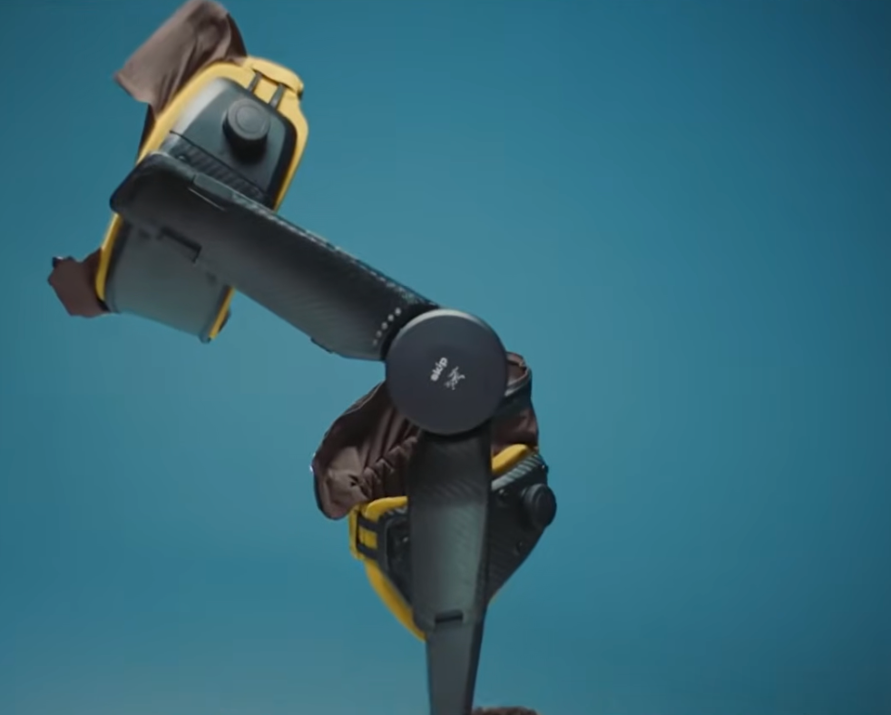
美国 膝 主动 $4,500-5,000 预购·延迟发货 Google X衍生·始祖鸟联名·软体裤·$6M融资 3 DNSYS Z1 Dnsys 中国 膝 主动 $899-2,298 KS发货中 450W/腿·0.01s响应·下坡能量回收·CES 2026三项创新奖 4 DNSYS X1 Dnsys 中国 髋 主动 ~$1,000 已发货 10+医院使用·可叠加膝模块 5 Ascentiz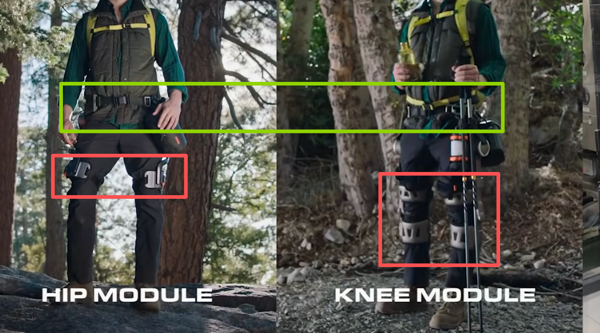
RoboCT 中国香港 髋/膝 主动 $599-1,498 KS预售 首款可互换髋/膝模块·AI芯片99.5%识别·Kickstarter ~$2.5M 6 PowrKnee 远也科技 Yrobot 中国 膝 主动 $849-7,999 KS+JD发货 JD月销数百·3000+海外预购·伟创力制造·100+专利·安踏合作 7 Alpha 1 AstroShell/金鹏 中国 髋 主动 — — — 8 Ant-H1 Pro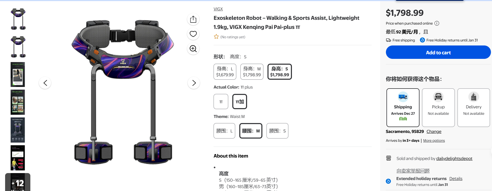
肯綮科技 中国 髋 主动 ¥1,000-2,000 Walmart上架 1.9kg·蚂蚁集团投资·泰山景区租赁 9 Pi Sports Assist 肯綮科技 中国 髋 主动 — — — 10 DREEVEN REEV 法国 膝 主动 — — 法国膝关节外骨骼 11 Elevate Roam Robotics 美国 膝 主动 — 研发/早期 软体织物可穿戴·户外+康复 12 Dephy Sidekick Dephy 美国 踝 主动 — 研发 MIT Biomech Lab衍生·Hugh Herr 13 Againer Againer 拉脱维亚 膝 被动 — — 拉脱维亚被动膝关节 14 Ski-Mojo Kinetic Innovations — 膝 被动 — — 滑雪专用被动膝关节 15 Xnowers GOGOA/Levier 西班牙 膝 被动 — — 西班牙被动膝关节 16 Onflowus Onerzia 西班牙 髋/腰 被动 — — 西班牙被动髋腰 17 Panda Eulon Robot 中国 髋 主动 — — — 18 WIM WIRobotics 韩国 髋/腰 主动 ~$2,300 已发货3000+台 $78M融资·CES 2024/2025创新奖·模块化儿童版 19 EduExo Lite/Pro Auxivo 瑞士 肘/肩 主动/被动 — 教育用 教育/研究平台 20 RoboGolfPro RoboGolfPro — 上肢 主动 — — 高尔夫训练专用
A.2 膝关节消费外骨骼竞品全景（与Bones直接竞争）
# 产品 公司 国家 价格 重量 状态 Bones差异化 1 PowrKnee 远也科技 中国 $849-7,999 ~2.5kg JD月销数百·KS上线 RL力矩替代AI预测·肌骨模型区分内外侧OA 2 DNSYS Z1 Dnsys 中国 $899-2,298 1.6kg KS发货中·CES获奖 RL个性化·联邦学习跨用户 3 MO/GO Skip×Arc'teryx 美国 $4,500-5,000 3.2kg 预购延迟 $1,500-2,000定价·老人专属设计 4 Ascentiz K1 RoboCT 中国香港 $599-699 — KS预售中 48Nm·模块化可换 5 DREEVEN REEV 法国 — — — 法国品牌·信息有限 6 Elevate Roam Robotics 美国 — — 研发 软体织物方案 7 Keeogo B-Temia 加拿大 ~$60,000 — FDA 510(k) 医疗级·40Nm电机·8h续航·AI驱动 8 Agilik Bionic Power 加拿大 — — 医疗级 医疗膝关节 9 C-Brace Ottobock 德国 — — 已发货 全球假肢巨头·膝-踝-足矫形器 10 Againer Againer 拉脱维亚 — — 被动 被动方案·无智能 11 Ski-Mojo Kinetic Innovations — — — 被动 滑雪专用·非老年 12 Xnowers GOGOA 西班牙 — — 被动 西班牙被动方案
A.3 工业外骨骼（128款·完整列表）
工业外骨骼以被动腰部助力为主，竞争高度分散。以下为公开信息收录的工业外骨骼产品。
# 产品 公司 国家 部位 类型 备注 1 Apex / Apex 2 HeroWear 美国 下背 被动 ~$1,000·仓储/物流广泛采用 2 Apogee / Apogee+ / Exia German Bionic 德国 下背 主动 AI增强·数字孪生·OTA更新·38kg举升 3 Cray X German Bionic 德国 下背 主动 早期型号·已被Apogee系列替代 4 Paexo Back / Shoulder Ottobock 德国 背/肩 被动 全球最大假肢公司·49Nm峰值力矩 5 IX BACK / IX SHOULDER AIR Ottobock/ErgoSanté 德国/法国 背/肩 被动/主动 肩部减负约40% 6 legX / backX / shoulderX SuitX/Ottobock 美国/德国 膝/背/肩 被动 模块化·被Ottobock收购·$2,000-5,000 7 MATE-XT / MATE-XB Comau 意大利 肩/背 被动 意大利制造·汽车/重工业 8 Laevo FLEX V3.0 / V2 Laevo 荷兰 下背 被动 2024行业基准测评综合最佳·~€2,500 9 Skelex Edge / 360 / Ironhand Skelex 荷兰 背/肩/手 被动/主动 Edge仅0.25kg·收购Bioservo Ironhand·可口可乐合作 10 LiftSuit / DeltaSuit / OmniSuit Auxivo 瑞士 背/肩 被动 ETH衍生·多关节·软硬结合·教育版EduExo 11 BionicBack / CarrySuit Auxivo 瑞士 背 被动 仅600g(BionicBack) 12 SafeLift Verve Motion 美国 背 软体主动 哈佛衍生·4-5磅·<30秒穿戴·40+站点·订阅制 13 Muscle Suit 系列 Innophys 日本 背/肩 气动被动 全球最高销量·30,000+台·23国·无需电力 14 Japet.W+ Japet 法国 腰 主动 腰椎减震器·CE认证·1,000+台·€7,700 15 X-ble Shoulder / Waist / MEX Hyundai 韩国 肩/腰/下肢 被动/主动 汽车巨头入场·1.9kg·2025工厂部署 16 WIBS Hyundai 韩国 下背 被动 — 17 BES-HV / BES-P / PESU / MAPS 傲鲨智能 ULS 中国 腰/肩 主动 ¥6,900起·17国·AI大模型·客户含商飞/京东/国网 18 腰部/登山外骨骼 迈宝智能 中国 腰/下肢 主动 探路者合作·苏州·CES 2026·XTAND品牌 19 工业外骨骼 埃斯顿 中国 工业 主动 上市002747·伺服±0.01mm·比亚迪合作 20 被动下肢/搬山/卸山/举山 杭州智元研究院 中国 腰/全身 被动/主动 3.5kg·肩减负80%·承重25kg·兵器工业 21 Ant系列/Q20 肯綮科技 中国 肩/腰/髋 主动 蚂蚁集团投资·德国注册 22 CDYB-Fit / CDYS-S2 Crimson Dynamics 中国 背/肩 被动 国际市场出货 23 H-WEX Hyundai 韩国 下背 主动 — 24 HAL Lumbar Type CYBERDYNE 日本 腰/髋 主动 EMG生物电势控制·全球认证 25 Ekso EVO / EksoVest Ekso Bionics 美国 肩 被动 上肢助力·汽车/航空制造 26 AIRFRAME Levitate 美国 肩 被动 专为肩部举升·汽车/航空 27 Element Exo Element Exo 美国 背 被动 制造业/物流 28 ExoCell Cell-Ex 美国 背 被动 — 29 Exospine US Bionics 美国 背 被动 — 30 Chairless Chair 2.0 Noonee/Carl Stahl 法国/德国 腿/膝 被动 首款"无椅座椅"·随时坐下 31 Hapo系列(BACK/BR/CS/FRONT/NECK/SD/UP/Shiva) Hapo 法国 背/肩/肘/颈 被动 法国产品线最广·覆盖多关节 32 EXO UP / SYMBO / EXOVITI / EXOBACK / Hercule RB3D 法国 背/肩/全身 被动/主动 法国国防部支持·产品线最广 33 Darwing系列 / Daiya Glove Daiya Industry 日本 背/手 被动/主动 2024基准测评舒适度最佳 34 e.z.UP / EZ104 Asahicho 日本 背/臂/膝 被动 橡胶绳型助力服·多关节 35 SUPPORT JACKET Bb+ Virgo Wave 日本 背 被动 <500g超轻量 36 T's外骨骼 Tsubakimoto Chain 日本 全身 主动 百年工业公司·2025大阪世博会 37 UPLIFT / UPLIFT Lite Mawashi 加拿大 腰/背 被动 — 38 TEOS Corset St-Francis 加拿大 腰 主动 — 39 Biolift Biolift 加拿大 背 主动 — 40 E1 / AUXSYS AUXSYS 德国 髋/膝 主动 — 41 B900 / S700 exoIQ 德国 背/肩 主动 — 42 EASE EASE 德国 背/臂 被动 1分钟穿戴·20kg举升 43 Hunic Hunic 德国 背 被动 新兴德国制造商 44 EXO-O1 / EXO-S / EXO-T-22 Innovation Center — 肩 被动/主动 — 45 EXOARMS / EXOHEAD / EXORESCUE / EXOSHOULDER / EXOSOFT / EXOWAIST / MONITOREX Cyber Human Systems — 多部位 被动/主动 产品线极广 46 MOVI PROTESO 意大利 背 主动 重型举升 47 Agadexo Shoulder / Lowback Agade 意大利 肩/背 半主动 AI混合型·米兰理工衍生 48 IX BACK / SHOULDER AIR / LIGHT / PLUM' ErgoSanté 法国 背/肩 被动 — 49 Helk / BELK / HANK / Xnowers GOGOA 西班牙 膝/全身 被动/主动 西班牙康复+工业·产品线广 50 GEAR B10 / Soft B10 / ANGEL X Angel Robotics 韩国 背 被动 韩国·多款产品 51 ArchelisFX / FXS Archelis 日本 踝/膝 被动 手术医生站立支撑·减负40% 52 Sit Anytime / Strong Hands / Titan Arms — — 多部位 被动 — 53 HPXO / EXHAUSS EXHAUSS — 肘/肩 被动 — 54 Armor-Man 2 / Enforcer ExoMed Kursk 俄罗斯 多关节 主动 俄罗斯军用/工业 55 Holdupper / Lowebacker / X-Arm / X-Rise Exorise 俄罗斯 肩/髋/膝 被动 — 56 TASK AR Series / Re-Shoulder Daydo 日本 肩/肘 被动 — 57 Atlas / Chairless Chair Noonee 瑞士 腰 被动 首款无椅座椅 58 ExoAtlant ExoAtlet 卢森堡 背 主动 — 59 L.R.A.E. / SoftExo Hold / SoftExo Lift 6 Move23 — 髋/膝/腰 被动 — 60 Spineband Herga — 颈 被动 — 61 ARTUS Digity 德国 手 被动 首款可活动手指·€1.4M种子·2024人体工学奖 62 Nuada Glove Nuada — 手 主动 — 63 Prexer Rehab2 美国 手 被动 — 64 JaipurBelt JaipurBelt — 腰 被动 — 65 EVO Ekso Bionics 美国 肩 被动 — 66 Exy ONE Exy ONE — 肩 被动 — 67 BACK UP Evolutionary Tools 美国 背 被动 — 68 CareExo Lift CareExo — 背 被动 — 69 COSaver Back Cosmo Robotics — 背 被动 — 70 Enyware Astride Bionix 新加坡 背 被动 — 71 Lex Astride Bionix 新加坡 踝/膝 被动 — 72 Againer / Onflowus Againer/Onerzia 拉脱维亚/西班牙 膝/腰 被动 拉脱维亚+西班牙
以上72家为有明确国别/品牌信息的工业外骨骼企业。128款产品中部分为同一公司多款型号。完整249款产品信息见行业公开数据。
A.4 医疗外骨骼（90款·完整列表）
医疗级外骨骼是外骨骼行业最大的细分市场（~65%），以康复和假肢/矫形器为主。
# 产品 公司 国家 部位 认证 备注 1 EksoNR Ekso Bionics 美国 髋/膝 FDA 最成熟医疗外骨骼·23kg 2 Ekso Indego Ekso Bionics 美国 髋/膝 FDA 模块化轻量·临床+家庭 3 ReWalk P6.0 / ReStore ReWalk/Lifeward 以色列/美国 髋/膝/踝 FDA/CE 脊柱损伤·CMS医保覆盖 4 Axosuit / ExoBand ReWalk/Lifeward 以色列/美国 髋/膝 FDA/CE 新一代·云连接 5 HAL Lower Limb / Single Joint / Lumbar CYBERDYNE 日本 全身/膝/腰 CE/日本医保 EMG生物电势·首款CE认证 6 Lokomat / Andago / Armeo DIH/Hocoma 瑞士 髋/膝/上肢 全球认证 医疗康复黄金标准·100+国 7 Atalante X / Eve Wandercraft 法国 全身 FDA/CE 自平衡免提·$137M融资·NVIDIA合作 8 ExoMotus M4 / KidGo 傅利叶智能 中国 髋/膝 NMPA/CE 中国龙头·50+国·$15亿+融资 9 下肢外骨骼(中科伟思) 伟思医疗 中国 下肢 NMPA II+FDA 科创板688580·18%市占·8000+医院 10 艾动/艾康/神行 大艾机器人 中国 下肢 NMPA II+CE 中国首个NMPA外骨骼注册证(2018) 11 UGO / EasyGo / GoGO-K 程天科技 中国 下肢 NMPA 医疗+消费·B+轮亿元·2026预计6万+台 12 脑控外骨骼 翔宇医疗 中国 下肢 NMPA 688626·自研BCI芯片 13 AIDER / 儿童版 / Yidong-Arm1 布法罗机器人 中国 下肢/上肢 NMPA 2026.1 A轮千万级·成都科创投 14 BEAR-H1 迈步机器人 中国 下肢 NMPA II 柔性驱动器·过亿元融资 15 LiteStepper 安杰莱科技 中国 单下肢 审批中 健侧引领·Pre-A数千万 16 Relink-ANK 远也科技 Yrobot 中国 踝 NMPA II 红点奖·华山/华西合作·肌肉外甲 17 UGO210/220 / URA Ugo Robot 中国 下肢 — — 18 Ruyi / Tengyun / Panda Eulon Robot 中国 髋/膝 — — 19 EasyWalk / COSMOS Cosmos Bionics — 踝/髋 — — 20 ExoAtlet I / II / Bambini / COSuit Cosmo/ExoAtlet 卢森堡 全身 CE 步态康复·儿童版 21 Trexo Plus Trexo Robotics 加拿大 下肢(儿童) — 450+台·40国·1亿+步 22 XoMotion Human in Motion 加拿大 全身 加拿大卫生部 自平衡免提·前后左右行走 23 ABLE ABLE Human Motion 西班牙 下肢 CE(2024) ~12kg·社区/家用 24 ATLAS 2030 / MAK / EXPLORER Marsi Bionics 西班牙 下肢/全身 — 儿童专用·西班牙 25 HANK / BELK / BELK+ GOGOA 西班牙 膝/全身 CE 西班牙康复先驱 26 Angel Legs / Walk-On Suit / Angel Suit H10 / EsoGLOVE / angel KIT Angel Robotics 韩国 全身/手 — 韩国多款产品 27 Walkbot P&S Mechanics 韩国 全身 — 韩国康复 28 Walking Assist Honda 日本 髋 — 汽车巨头·租赁模式 29 REX Rex Bionics 新西兰/英国 全身 CE 唯一真正免提·$150K+ 30 Keeogo B-Temia 加拿大 膝 FDA 510(k) 40Nm·8h·Lockheed合作 31 Agilik Bionic Power 加拿大 膝 — 医疗膝矫形器 32 Biomotum SPARK Biomotum 美国 踝 — 中风康复 33 C-Brace Ottobock 德国 膝 — 全球假肢巨头·膝-踝-足矫形器 34 Carbonhand Bioservo 瑞典 手 — 碳纤维肌腱·主动抓握 35 MyoPro Myomo 美国 肘/手 FDA·Medicare 肌电上肢矫形器·$20K-66K 36 IpsiHand Neurolutions 美国 手 FDA 脑机接口康复 37 Harmony SHR Harmony 美国 肘/肩 — 上肢康复 38 Reflex ATDev — 膝 — — 39 ALEx / A3-Mini / A6-m2 / NX A3-M / NX-A2 Rehab Technologies 意大利 上肢/全身 — — 40 AMADEO / ArmeoSpring / G-EO Tyromotion/Reha Tech 奥地利/瑞士 手/踝 — 德国/奥地利康复 41 FreeGait / RoboGait BAMA Teknoloji 土耳其 全身 — 土耳其康复 42 Gloreha Sinfonia Idrogenet 意大利 手 — — 43 Hand of Hope / HandyRehab / Syrebo Rehab Robotics/Syrebo 中国/— 手 — 手部康复机器人 44 Kickstart / PolySpine / UNILEXA / Xothotics Cadence Biomedical/— 美国/— 全身/腰 — 被动/主动混合 45 MRG-P110 / ZW578 / AMBLE / LEXO / Rise&Walk / Roki / Rokids / Tendo OneGrip — — 下肢 — 多个小型医疗外骨骼 46 TWIICE / UAN.GO / Walk-On Suit / Wandercraft Personal — 瑞士/意大利/法国 全身 — 欧洲研发
以上46组覆盖90款医疗外骨骼产品的核心信息。完整产品参数与认证数据见Exoskeleton Report 2026目录。
A.5 新兴/特色企业
公司 国家 产品 融资 亮点 Hippos Exoskeleton 美国 智能护膝(安全气囊) $642K种子·2024.11 内置安全气囊的智能护膝 MebotX 中国 Xtand智能髌骨带 天使轮 57g·AI自适应气压·1000+台/3天 RT HealthTech 中国香港 XoBrace 早期 ~$150极低成本·气动人工肌肉 Hurotics 韩国 H-Medi/H-Flex/H-Fit $2.5M CES三连创新奖·0.6kg/模块·线缆肌腱驱动 Phantom Neuro 美国 Phantom X神经接口 $19M A轮·2025.4 Ottobock领投·FDA突破性设备·微创神经接口 Axiles Bionics 比利时 Lunaris仿生足 €6M A轮·2025.6 "假肢界法拉利"·AI电机踝关节·CE/FDA Digity 德国 ARTUS手指外骨骼 €1.4M种子·2024.8 首款可活动刚性手指外骨骼 ArmasTec 新加坡 AireLevate A轮 压缩空气软体·减少50%腰部劳损 Seismic 美国 Powered Clothing SRI衍生 柔性扭曲绳驱动器·DARPA背景·Cintas合作 EsoTech 英国 EsoMark 1 A轮 气动人工肌肉·1.4kg·~£6,000
A.5.1 数据库补充——前期调研中发现但附录中缺失的竞品
公司 国家 产品 关节 融资/规模 关键信息 XenRobo 中国香港 Nano1膝关节外骨骼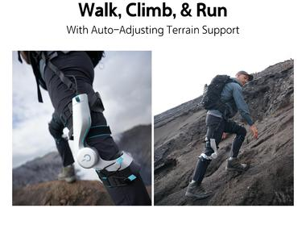
膝 Kickstarter计划中 前DJI/BYD/华为工程师团队。首款外骨骼电机专利(2016年)。140例临床试验(REGAIT/BioKneeX)。Prelaunch.com预发布。直接竞品 BionicM（健行仿生） 日本/深圳 Bio Leg动力假肢膝关节 膝/假肢 $11-13.5M·18人 东京大学衍生·创始人孙小军博士。FDA批准。CES 2025最佳创新奖。2024年进入美国市场。与技术授权线相关 REEV 法国 DREEVEN膝关节矫形器 膝 $9.2M（2025.2）·~30人 图卢兹+波士顿双中心。电动液压驱动。波士顿大学临床试验中。计划2026年上市。创始人Amaury Ciurana+Robin Temporelli博士 Autonomyo 瑞士 Skywalk系统 髋/膝/踝 €1.4M·EPFL衍生 CHUV（洛桑）临床试验。CE认证准备中。老年康复+卒中。外骨骼框架+AI系统 Roam Robotics 美国 Elevate（气动膝关节） 膝 $12.4M·18人 2012年成立·旧金山。Yamaha Motor Ventures投资。软体气动方案。滑雪+户外场景 Hippos Exoskeleton 美国 智能护膝（安全气囊） 膝 $642K种子·2024.11 内置碰撞感应安全气囊。生物力学数据分析。旧金山 MebotX 中国苏州 Xtand智能髌骨带 膝/髌骨 天使轮 仅57g·AI自适应气压。2025年首发·1000+台/3天。非外骨骼但验证了膝部智能穿戴需求 RT HealthTech 中国香港 XoBrace 膝 早期 ~$150极低成本·气动人工肌肉。计划集成脑机接口。极致性价比路线 Hurotics 韩国 H-Medi/H-Flex/H-Fit 膝/髋 $2.5M 中央大学衍生·CES 2024/2025/2026创新奖。线缆-肌腱驱动·0.6kg/模块 Seismic 美国 Powered Clothing 全身 SRI衍生·Cintas合作 柔性扭曲绳驱动器(TSA)·DARPA背景。DMD项目Elevex。软体服装式外骨骼先驱
A.5.2 主要竞品关键维度补充（前期调研中缺失的数据）
公司 成立 团队 融资总额 专利 收入/出货 DNSYS 2021年 ~90%工程师·前DJI/赛格威/小米 $3M+（仅众筹·无VC） 20+项 X1出货10,000+台·预估$10M+ 程天科技 2017年 ~180人·30%+研发·40%硕博 ¥3-4亿（6轮） 500+项·300+授权 1000+医疗机构·93万+患者 WIRobotics 2021年 韩国龙仁 $75-80M（2026.5 B轮$63-68M） CES 2024/2025创新奖 出货3000+台·2025年收入KRW 27.9亿 Hypershell 2021年末 ~200人·70-80%工程师 $120M·估值~$400M 100+项 全球70+国·亚马逊美欧站第一 远也科技 2018年(波士顿) 哈佛/MIT/哥大团队 ~$11M 100+项（含PCT/EP/US） JD月销数百·海外预购3000+ 迈宝智能 2018年 21-50人·苏州 ~¥6000万（4轮） ~76项 — Vastnaut One 2024年 前DJI·创始人Leo Pre-A数千万元·KS $1.26M — KS 795支持者·2026.7预计发货
A.6 全球外骨骼行业关键数据
指标 数据 已收录公司/产品总数 ~150家/249款 覆盖国家 25+ 全球市场价值(2025) ~$0.56-1.59B 预估市场价值(2030-33) ~$2-43B·CAGR 29-49% 最大细分市场 医疗(约65%) 最大地区 北美(约49%) 消费级价格趋势 从$10K+降至$600-2,000 中国外骨骼企业 20+（含傅利叶·大艾·程天·伟思·傲鲨·Hypershell·远也·肯綮·布法罗·翔宇等）
附录B：关键术语解释
本文档涉及生物力学、骨科医学、机器人控制及商业金融等多个专业领域。以下按类别整理核心术语，供非专业背景读者参考。
B.1 骨科医学与生物力学
术语 缩写 解释 骨关节炎 OA Osteoarthritis。一种以关节软骨退化、骨质增生和滑膜炎症为特征的慢性退行性关节疾病。膝关节是最常受累的关节（占60-85%）。全球约5.28亿患者。不可治愈，现有治疗以缓解症状和延缓进展为主 膝骨关节炎 KOA Knee Osteoarthritis。OA发生于膝关节的亚型。分为内侧间室OA（最常见·占60-70%）、外侧间室OA和髌股关节OA 内侧间室 — 膝关节内侧（靠近另一条腿的一侧）的承重区域。正常行走时承受60-80%的膝关节负荷。内侧间室OA是最常见的膝OA类型 外侧间室 — 膝关节外侧的承重区域。外侧间室OA相对少见 膝关节内收力矩 KAM Knee Adduction Moment。行走时地面反作用力使膝关节向内倾斜的力矩。KAM是衡量内侧间室负荷的核心生物力学指标（文献报告R²通常在60-80%范围·具体数值因研究人群和方法而异）。KAM越高，内侧间室OA进展风险越大。减少KAM是膝关节外骨骼的核心设计目标 半月板 — 膝关节内的C形纤维软骨结构，分为内侧半月板和外侧半月板。功能为缓冲冲击、分散负荷和稳定关节。半月板损伤是OA的重要诱因 前交叉韧带 ACL Anterior Cruciate Ligament。膝关节内连接股骨和胫骨的核心韧带之一，防止胫骨前移。ACL损伤后发生膝OA的风险显著升高 股四头肌 — 大腿前侧的主要肌群，负责膝关节伸展（伸直腿部）。股四头肌无力是膝OA最重要的可调控风险因素——既是OA的病因也是OA的后果 全膝关节置换术 TKA Total Knee Arthroplasty。用人工关节替换病变膝关节的手术。是终末期膝OA的终极治疗方案。植入物寿命约15-20年。全球每年约280万例 体重倍数 ×BW 以体重的倍数表示的关节受力。如"行走时膝关节承受2.6-2.8×BW"表示膝关节在行走时承受约2.6-2.8倍体重的压力 步态周期 — 从一侧足跟触地到同侧足跟再次触地的完整过程。分为支撑相（足着地·占60%）和摆动相（足离地·占40%）。膝关节OA患者的步态通常表现为支撑相缩短、步速降低 支撑相 — 步态周期中足部接触地面的阶段。膝关节在支撑相承受最大负荷。膝OA疼痛主要发生在支撑相 摆动相 — 步态周期中足部离开地面的阶段。髋关节外骨骼通常在此阶段提供助力 瞬时旋转中心 ICR Instantaneous Center of Rotation。膝关节在矢状面屈曲时股骨髁相对胫骨平台的瞬时旋转轴。人体膝关节ICR描绘出J形轨迹（15-25mm范围），单轴铰链无法完全复现——这是铰链式膝外骨骼的核心生物力学限制 偏心收缩 — 肌肉在收缩的同时被拉长的运动模式（如下楼梯时股四头肌控制膝关节弯曲）。偏心收缩产生的膝关节负荷比向心收缩（如上楼梯）更高，因此下楼梯通常比上楼梯更痛 滑膜炎 — 关节滑膜的炎症。OA患者中约50%存在滑膜炎，是疼痛的重要来源之一。软骨磨损碎片可触发滑膜炎症反应 骨赘 — 俗称"骨刺"。OA时关节边缘异常增生的骨质，可限制关节活动范围并引起疼痛 Kellgren-Lawrence分级 KL分级 X线片上评估OA严重程度的5级评分系统（0-4级）。0=正常，4=重度OA。广泛用于临床和科研
B.2 外骨骼与机器人技术
术语 缩写 解释 外骨骼 Exo 穿戴于人体外部、可增强或辅助人体运动能力的机械装置。按动力来源分为有源（电动）和无源（弹簧/机械），按结构分为刚性（框架式）和软体（织物式） 自由度 DOF Degrees of Freedom。一个关节或机构可以独立运动的方向数量。如膝关节主要为1DOF（屈伸），髋关节为3DOF（屈伸+内收外展+内旋外旋） 惯性测量单元 IMU Inertial Measurement Unit。包含加速度计、陀螺仪和磁力计的传感器。外骨骼中用于检测肢体姿态和运动状态。常见型号：ICM-20948、BMI270 肌电图 EMG/sEMG Electromyography。测量肌肉电活动的技术。表面肌电图（sEMG）为非侵入式·通过皮肤表面电极检测。用于假肢控制和外骨骼意图识别 PID控制 PID 比例-积分-微分控制（Proportional-Integral-Derivative）。工业控制领域最经典、最广泛使用的控制算法。外骨骼行业中绝大多数产品仍使用PID或其变体 强化学习 RL Reinforcement Learning。机器学习的一个分支，通过试错来学习最优策略。Bones的核心技术之一——用于为每个用户训练个性化的外骨骼助力策略。全行业仅Bones采用此技术路线 联邦学习 FL Federated Learning。一种分布式机器学习方法，允许多个设备（如多个用户的外骨骼）在不共享原始数据的情况下协同训练模型。Bones的个性化联邦学习算法实现了跨用户的个性化策略共享——第1000个用户比第1个更精准 Sim-to-Real — 将在仿真环境中训练的模型部署到真实硬件上的技术。Bones的MyoWarp仿真管线可在无需真人数据的情况下训练RL策略——大幅降低研发成本和隐私风险 Hill型肌肉模型 — 描述肌肉力学特性的经典数学模型（A.V. Hill，1938）。包含肌肉的力-长度关系和力-速度关系。Bones的416肌肉模型即基于此——可计算全身任意关节的力矩和代谢成本 力矩 Nm 牛顿·米。力和力臂的乘积。外骨骼的核心输出参数。如"膝关节外骨骼峰值力矩25Nm"表示设备可在膝关节输出最大25牛顿·米的旋转力 Bowden线缆 — 一种柔性力传递系统，由内钢丝和外护套组成（类似自行车刹车线）。软体外骨骼常用Bowden线缆将电机力矩传递至关节。力传递效率通常仅48-70%——30-52%的能量损失在摩擦中 形状记忆合金 SMA Shape Memory Alloy。在特定温度下可恢复预设形状的合金（如NiTi镍钛合金）。前沿研究中将SMA线编织进织物，替代传统电机实现轻量化驱动。目前响应速度较慢（数秒冷却），适合准静态场景 TRL技术成熟度 TRL Technology Readiness Level。NASA开发的9级评估框架。本文用于评估12种膝关节外骨骼架构：TRL 1-3=基础研究·TRL 4-6=技术验证·TRL 7-9=商业化量产 无刷直流电机 BLDC Brushless DC Motor。使用电子换向的电机。AK80-9为外转子BLDC集成9:1行星减速器。效率>85%·低噪音·长寿命 磁场定向控制 FOC Field-Oriented Control。BLDC电机矢量控制算法。通过Clarke/Park变换将三相电流解耦为力矩(Iq)和励磁(Id)分量。Bones电流环频率10kHz 空间矢量脉宽调制 SVPWM Space Vector Pulse Width Modulation。FOC中生成驱动波形的调制方法。比正弦PWM提高约15%直流母线电压利用率 有限状态机 FSM Finite State Machine。Bones使用6状态FSM（站立·承重反应·支撑中期·支撑末期·摆动前期·摆动期）基于IMU角速度和足底压力进行步态相位检测。检测延迟<5ms 近端策略优化 PPO Proximal Policy Optimization。RL策略梯度方法。Bones使用16→64→32→2网络结构，int8量化推理<1ms。详见C.5步骤4 航姿参考系统 AHRS Attitude and Heading Reference System。Madgwick梯度下降法（40μs/帧·400Hz），融合加速度计和陀螺仪输出四元数和欧拉角。姿态精度<2°动态 硬件在环 HIL Hardware-in-the-Loop。含真实执行器的半实物仿真验证方法。Phase 0月5使用HIL验证RL策略在AK80-9真实电机上的力矩跟踪精度 准直驱 QDD Quasi-Direct Drive。减速比1:1-6:1的低减速比电机方案。本文档中AK80-9的9:1处于QDD边界——保留了反向驱动能力（0.51Nm）但非纯直驱。详见C.4.1.5执行器选型分析
B.3 医疗器械与监管
术语 缩写 解释 国家药品监督管理局 NMPA National Medical Products Administration。中国医疗器械和药品的监管机构。外骨骼若宣称医疗功能（如康复治疗），需获得NMPA医疗器械注册证 二类医疗器械 — 中国医疗器械分类中的第二类——具有中度风险，需严格控制管理。如Relink-ANK（远也科技的踝关节康复设备）持有NMPA二类注册证。消费级外骨骼通常不申请此认证 三类医疗器械 — 中国医疗器械最高风险等级。植入式设备、生命支持设备等。有源刚性医疗外骨骼（如EksoNR）可能需要三类认证 FDA 510(k) — 美国食品药品监督管理局的上市前通知程序。用于证明设备与已上市产品"实质等同"。多个外骨骼和假肢产品已通过此路径获得美国市场准入 CE认证 — 欧洲经济区的产品安全认证标志。医疗外骨骼进入欧洲市场通常需要CE认证
B.4 商业与金融
术语 缩写 解释 可寻址市场 TAM Total Addressable Market。产品或服务理论上可以触及的最大市场规模。如"全球膝关节OA可寻址市场约$110-160B/年" 复合年增长率 CAGR Compound Annual Growth Rate。特定时期内的年均增长率。如"中国外骨骼市场CAGR 36-38%" BOM成本 BOM Bill of Materials。制造一个产品所需的全部原材料和零部件的总成本。如"膝关节外骨骼Gen 0的BOM目标$400-600" 毛利率 — （收入 - 直接成本）/ 收入。反映产品本身的盈利空间。硬件毛利率通常35-55%，软件/算法毛利率85-100% 获客成本 CAC Customer Acquisition Cost。获取一个付费用户所需的营销和销售费用。健康App的CAC通常$80-250/付费用户 客户生命周期价值 LTV Lifetime Value。一个客户在整个使用周期内贡献的总收入。LTV/CAC比值大于3通常被认为是健康的商业模式 平均售价 ASP Average Selling Price。产品的平均销售价格。如"消费级髋关节外骨骼ASP $599-1,999" Kickstarter KS 全球最大的产品众筹平台。消费外骨骼品牌（DNSYS、Ascentiz、Vastnaut等）均通过KS验证海外需求。标准平台费率为筹款额的8-10% 净推荐值 NPS Net Promoter Score。衡量用户推荐意愿的指标（0-10分）。NPS>50被视为优秀。外骨骼行业尚无公开的NPS数据 天使轮 / A轮 / B轮 — 创业公司融资阶段。天使轮通常$100K-2M（验证概念）。A轮 $5-8M（投前估值$20-30M·释放10-15%股权）（产品化）。B轮$15-20M（规模化）
B.5 中国市场特定术语
术语 解释 银发经济 围绕老年人群消费形成的经济形态。中国60岁以上人口3.23亿（2025），银发经济规模约¥7万亿。2026年国务院1号文件聚焦银发经济，八部门联合出台支持措施 十五五规划 中华人民共和国国民经济和社会发展第十五个五年规划（2026-2030）。首次将"具身智能"和"人形机器人"写入国家未来产业布局 新质生产力 以科技创新为核心驱动力的先进生产力形态。中国2024年提出的经济政策核心概念。外骨骼作为AI+制造的交叉领域，被纳入新质生产力的政策支持范围 足力健 中国老人鞋品牌，巅峰期年营收¥40亿、5000+门店。因产品质量崩塌、虚假宣传和创始人债务危机而衰落。是研究中国银发消费市场的重要案例 孝心经济 中国特有的消费模式：成年子女为父母购买健康/功能产品的行为模式。膝关节外骨骼的核心目标购买决策者不是老人本人，而是其45-55岁的子女 杭州六小龙 杭州六家代表性的硬科技创业公司。强脑科技（BrainCo）为其中之一
B.5.5 外骨骼设计流派与架构术语（附录C参考）
术语 缩写 解释 铰链单轴外置式 Lateral Hinge 电机+减速器直接安装在膝关节外侧，通过单轴铰链传递力矩。代表产品：远也PowerKnee·DNSYS Z1·Hypershell X。TRL 7-9（量产级）。优点：力矩效率>90%·技术最成熟·成本可控。缺点：单轴与人体膝关节瞬时旋转中心（ICR）偏差2-5mm 电缆远程驱动式 Cable Remote / Bowden Cable 电机置于腰部，通过Bowden电缆（套管+钢丝）将力矩传输到膝关节终端。代表产品：Hurotics H-Medi·Harvard Exosuit。TRL 6-8。优点：膝端极轻（<150g）·低惯量。缺点：电缆摩擦损失30-50%·弹性滞后 软体Exosuit Soft Exosuit / Fabric-based 以织物（裤子/绑带）作为承载平台，致动器嵌入织物中，力矩通过织物张力传递。代表产品：Skip MO/GO·Roam Robotics·XoBrace。TRL 6-8。优点：社会接受度最高·舒适。缺点：力传递效率<50%·助力<20Nm 电动液压式 Electro-Hydraulic 电机驱动微型液压泵→高压油→液压软管→液压缸→线性力→膝关节旋转力矩。代表产品：REEV DREEVEN。TRL 5-7。优点：高功率密度·柔性布线·天然缓冲。缺点：漏液风险·效率<40%·系统复杂 气动人工肌肉 PAM / Pneumatic Artificial Muscle McKibben型编织网套+弹性气囊，充气时径向膨胀→轴向收缩产生拉力。拮抗配置实现关节屈伸。代表产品：EsoMark 1·XoBrace·TUM研究。TRL 4-7。优点：天然柔顺·极低成本·高力重比。缺点：带宽<5Hz·需气源·非线性严重 串联弹性执行器 SEA / Series Elastic Actuator 在电机减速器输出端与关节负载之间串联弹性元件（弹簧）。力=刚度×变形量，将力控转化为位置控。代表产品：MIT RFSEA（85Nm·1.6kg）。TRL 4-6。优点：精确力控（±3-5%）·冲击吸收·能量回收。缺点：额外重量·谐振限制带宽·定制弹簧成本高 准直驱 QDD / Quasi-Direct Drive 高扭矩密度外转子BLDC电机+极低减速比（6:1-36:1）。电机本身提供大部分扭矩。代表研究：SU Lab（6:1·20Nm）·UTD（7:1·91.9%效率）。TRL 3-5。优点：反向驱动0.4Nm（几乎透明）·40Hz力控带宽。缺点：连续扭矩仅10-20Nm·需定制电机 磁流变 MR / Magnetorheological 利用磁流变液在外加磁场下粘度瞬时变化的特性实现无机械接触的可控阻尼。代表：海普曼（振江603507）。TRL 3-6。优点：16ms响应·无磨损。缺点：仅提供阻力（制动）·不能主动助力·需持续供电 被动弹簧/阻尼器式 Passive Spring-Damper 完全无源，利用弹簧或弹性体在关节屈曲时储能、伸展时释放。零功耗·零电子故障。代表：Ski-Mojo（€895·15年销售）。TRL 7-9。优点：极可靠·任何气候可用。缺点：无主动助力·刚度固定·力-位置耦合 半主动离合器式 Semi-Active Clutch 被动弹簧储能+电控离合器释放时机。负功阶段锁住弹簧→正功阶段释放。代表：BGU（以色列·28Nm·1:160能效）·中科大CPEMA。TRL 3-5。优点：超高能效。缺点：仅回收不注入外部能量·离合器冲击 形状记忆合金 SMA / Shape Memory Alloy NiTi（镍钛）合金加热至相变温度（~70-90°C）产生4%收缩。代表：UC3M（儿童外骨骼·56g/单元）。TRL 2-4。优点：极致静音·高力重比。缺点：响应慢（冷却>0.5s）·电热效率<10%·寿命<1万次 多轴/多杆式 Multi-Axis / Polycentric 四杆或五杆机构模拟人体膝关节瞬时旋转中心（ICR）的生理变化。IEEE研究ICR误差<0.43mm。TRL 3-5。优点：生物仿生度高·减少皮肤滑移。缺点：机械复杂·无商业化产品 Omega架构 Omega Architecture 髋关节外骨骼的腰带+刚性连杆式架构，电机在腰部中央通过连杆驱动双侧髋关节。极壳Hypershell的专利架构（EP4321772A1）。优点：集中供电·主动关节仅1个·8个被动关节。缺点：仅矢状面助力·左右腿不能独立控制 Pi架构 Pi Architecture 得名于π形结构——腰带向两侧延伸两条"腿"，每条末端安装膝关节致动器。Skip MO/GO采用的软体裤子承载方案。Pi架构是膝关节外骨骼，不是髋关节。 扭绳驱动器 TSA / Twisted String Actuator 多股纤维绳扭转缩短产生线性拉力，替代Bowden电缆。效率>85%（vs Bowden 50-70%）。用于Bones Gen 2+电缆远程架构。代表性研究：Seismic（DARPA背景）·DLR德国航空航天中心 电磁离合器 Electromagnetic Clutch 弹簧复位型（断电脱开）：通电时离合器吸合传力，断电时弹簧复位脱开。外骨骼安全系统的核心元件。Bones选用Ogura MCNB-3Z（50g·<30ms响应·零背隙）。安装在减速器输出侧——即使减速器卡死，膝关节仍可自由活动 步态相位 Gait Phase 步行周期分为支撑相（Stance Phase·脚着地·~60%）和摆动相（Swing Phase·脚离地·~40%）。膝OA疼痛主要在支撑相（承重3-5倍体重）。外骨骼应在支撑相提供助力，摆动相提供零阻力（透明模式）
B.6 机械工程与结构设计
术语 缩写 解释 行星减速器 — Planetary Gearbox。由太阳轮、行星轮和外齿圈组成的紧凑型减速机构。外骨骼中用于将电机的高速低扭矩转换为低速高扭矩。减速比通常3:1~10:1。相比谐波减速器，行星减速器噪音更低、反向驱动性更好，但体积稍大 谐波减速器 — Harmonic Drive。利用弹性变形实现高精度减速的机构。减速比可达50:1~160:1。体积小、精度极高（零背隙），但反向驱动性差（自锁）。人形机器人关节常用，外骨骼中较少使用（需要反向驱动的场景不适用） 反向驱动 — Backdrivability。减速器输出端可以被外力自由带动的能力。对于外骨骼至关重要——当电机不工作时，用户应该能自由活动关节而不感受到阻力。低减速比（<10:1）通常可反向驱动，高减速比需要离合器辅助 串联弹性执行器 SEA Series Elastic Actuator。在电机和负载之间串联一个弹性元件（弹簧）的执行器设计。优点：力控精度高、抗冲击、安全（弹性元件吸收冲击能量）。缺点：带宽受限。外骨骼和假肢中广泛使用 碳纤维 CF Carbon Fiber。由碳原子组成的轻质高强材料。外骨骼框架常用T700/T800级碳纤维（拉伸强度~4900/5880MPa）。密度约1.6g/cm³（钢的1/5）。异形件加工良率低（行业普遍~50%）是制造成本高的重要原因 钛合金 Ti Titanium Alloy。常用的TC4(Ti-6Al-4V)钛合金强度与钢相当但密度仅4.4g/cm³（钢的56%）。生物相容性好，适合与皮肤接触的部件。价格$200-400/kg，远高于碳纤维 镁合金 Mg Magnesium Alloy。密度仅1.8g/cm³，是最轻的结构金属。远也PowerKnee的关节壳体和传动箱使用镁合金。缺点是耐腐蚀性较差 Bowden线缆 — 由内钢丝和外护套组成的柔性力传递系统（原理同自行车刹车线）。软体外骨骼（Harvard Exosuit、Skip MO/GO）常用。优点：电机可远离关节（减轻远端重量）。缺点：摩擦导致力传递效率仅48-70% 直接驱动 — Direct Drive。电机直接安装在关节处，无中间传动机构。优点：零背隙、可反向驱动、力控精度极高。缺点：电机体积重量大（需要大扭矩直接输出）。适合对控制精度要求极高的场景 IP防护等级 IP Ingress Protection。国际防护等级标准。IP54=防尘（5级）+防溅水（4级）。IP67=完全防尘（6级）+短时间浸泡（7级）。消费外骨骼通常IP54（防雨雪），工业/军事可达IP67 聚醚醚酮 PEEK Polyether Ether Ketone。高性能热塑性塑料。强度接近金属但密度仅1.3g/cm³。耐高温（250°C）、耐化学腐蚀、生物相容性好。可用于外骨骼的非承重结构和衬垫
B.7 步态分析与运动学
术语 缩写 解释 支撑相 — Stance Phase。步态周期中足部接触地面的阶段，占整个步态周期的约60%。细分为：足跟触地(Heel Strike)→承重反应(Loading Response)→支撑中期(Midstance)→支撑末期(Terminal Stance)→预摆动(Pre-swing)。膝关节在支撑相承受最大负荷（行走时261-280%体重） 摆动相 — Swing Phase。步态周期中足部离开地面的阶段，占约40%。细分为：初期摆动(Initial Swing)→中期摆动(Mid Swing)→末期摆动(Terminal Swing)。髋关节外骨骼通常在此阶段提供助力 足偏角 FPA Foot Progression Angle。足长轴与前进方向之间的夹角。外旋（toe-out）可减少KAM约13.5%（Lancet RCT, Uhlrich 2025）。步态再训练APP的核心调整参数 步频 — Cadence。每分钟的步数（steps/min）。正常成人步频约100-130步/分。膝OA患者的步频通常降低以减轻每一步的疼痛 步长 — Step Length。一侧足跟触地到对侧足跟触地的距离。膝OA患者通常缩短步长以减少支撑相时间 步幅 — Stride Length。同一侧足跟连续两次触地之间的距离。等于两步长之和 单支撑相 — Single Limb Support。仅一条腿支撑体重的阶段。对支撑腿的膝关节负荷最大 双支撑相 — Double Limb Support。双腿同时触地的阶段。行走速度越慢，双支撑相越长。老年人通常增加双支撑相以提高稳定性
B.8 膝关节解剖与病理
术语 缩写 解释 股骨 — Femur。大腿骨。膝关节的上半部分。股骨远端有两个髁（内侧髁和外侧髁），与胫骨平台形成关节 胫骨 — Tibia。小腿的主要承重骨。胫骨近端形成胫骨平台，与股骨髁构成胫股关节。内侧胫骨平台承受60-80%的膝关节负荷 髌骨 — Patella。膝盖骨。嵌在股四头肌腱内，与股骨滑车构成髌股关节。髌股关节在下楼梯和深度屈膝时承受最高负荷 半月板 — Meniscus。膝关节内C形纤维软骨。内侧半月板比外侧更易受损。功能：分散负荷（增加接触面积约50%）、缓冲冲击、稳定关节。半月板撕裂或切除后，关节接触应力增加约200-300%，显著加速OA进展 前交叉韧带 ACL Anterior Cruciate Ligament。防止胫骨前移和旋转不稳。ACL损伤后，即使重建手术，10-15年内膝OA发生率仍高达50-80% 后交叉韧带 PCL Posterior Cruciate Ligament。防止胫骨后移。比ACL更粗更强。PCL损伤较少见 内侧副韧带 MCL Medial Collateral Ligament。膝关节内侧的韧带，抵抗外翻力。MCL损伤常见于膝关节外侧受到冲击 外侧副韧带 LCL Lateral Collateral Ligament。膝关节外侧的韧带，抵抗内翻力 髌股关节 PFJ Patellofemoral Joint。髌骨与股骨滑车之间的关节。下楼梯时PFJ承受的压力可达体重的3-4倍。孤立性髌股关节炎在女性中更常见 胫股关节 TFJ Tibiofemoral Joint。股骨与胫骨之间的主要承重关节。分为内侧间室和外侧间室。内侧间室OA最常见（占60-70%） 膝关节内翻/外翻 — Varus/Valgus。内翻（O型腿）=膝关节向内弯曲，内侧间室负荷增加。外翻（X型腿）=膝关节向外弯曲，外侧间室负荷增加。内翻畸形是内侧间室OA最重要的结构风险因素
B.9 下肢肌肉解剖
术语 缩写 解释 股四头肌 — Quadriceps。大腿前侧肌群，由四块肌肉组成：股直肌(RF)、股内侧肌(VM)、股外侧肌(VL)、股中间肌(VI)。主要功能：膝关节伸展。股四头肌无力是膝OA最重要的可调控风险因素——肌力每下降10%，OA进展风险增加约20% 股内侧肌 VMO Vastus Medialis Obliquus。股四头肌最内侧的肌纤维束，对髌骨稳定至关重要。VMO萎缩是髌股疼痛综合征的核心机制 腘绳肌 — Hamstrings。大腿后侧肌群：股二头肌(BF)、半腱肌(ST)、半膜肌(SM)。功能：膝关节屈曲+髋关节伸展。腘绳肌紧张会增加膝关节屈曲力矩 腓肠肌 — Gastrocnemius。小腿后侧的主要肌肉（小腿肚）。跨膝关节和踝关节（双关节肌）。在支撑相协助膝关节屈曲 比目鱼肌 — Soleus。腓肠肌深层的小腿肌肉。仅跨踝关节（单关节肌）。在支撑相提供跖屈力矩——间接影响膝关节负荷 股直肌 RF Rectus Femoris。股四头肌中唯一跨髋关节和膝关节的双关节肌。功能：膝关节伸展+髋关节屈曲。其双关节特性意味着髋外骨骼的助力会通过RF影响膝关节力矩 臀中肌 — Gluteus Medius。髋关节外展肌。臀中肌无力=Trendelenburg步态（对侧骨盆下沉）→改变膝关节力线→增加KAM 髂胫束 ITB Iliotibial Band。从髋部延伸至胫骨外侧的厚筋膜束。ITB过紧可增加膝关节外侧负荷
B.10 临床评估工具
术语 缩写 解释 视觉模拟评分 VAS Visual Analog Scale。0（无痛）到10（最剧烈疼痛）的疼痛评分工具。膝OA临床研究最常用的主要终点指标。最小临床重要差异(MCID)通常为2分 数字评分法 NRS Numeric Rating Scale。与VAS类似的0-10分疼痛评分，但通过口头或书面数字完成，操作更简便 WOMAC评分 WOMAC Western Ontario and McMaster Universities Osteoarthritis Index。膝/髋OA最广泛使用的功能评估量表。包含三个维度：疼痛（5项）、僵硬（2项）、日常生活功能（17项）。总分0-96分，分数越高=症状越重 KOOS评分 KOOS Knee injury and Osteoarthritis Outcome Score。WOMAC的扩展版。包含五个维度：疼痛、症状、日常生活功能、运动/娱乐功能、膝关节相关生活质量。共42项 Kellgren-Lawrence分级 KL X线片评估OA严重程度的5级评分：0=无OA，1=可疑（轻微骨赘），2=轻度（明确骨赘+关节间隙可疑狭窄），3=中度（关节间隙中度狭窄），4=重度（关节间隙消失+骨硬化+骨变形） 净推荐值 NPS Net Promoter Score。用户推荐意愿的0-10分指标。9-10=推荐者，7-8=中立者，0-6=贬损者。NPS=%推荐者-%贬损者。>50为优秀，>70为世界级。外骨骼行业尚无公开NPS数据 最小临床重要差异 MCID Minimal Clinically Important Difference。患者能感知到的最小改善幅度。膝OA的VAS MCID约2分，WOMAC MCID约12分 六分钟步行测试 6MWT Six-Minute Walk Test。评估功能运动能力的标准化测试。膝OA患者通常显著低于健康同龄人。是外骨骼临床效果验证的常用客观指标 计时起立-行走测试 TUG Timed Up and Go。从椅子上站起、行走3米、转身、走回、坐下的计时测试。>13.5秒提示跌倒风险增加
×
附录C：工程设计 — 从用户需求到可落地方案
目的：系统性论证Bones膝安膝关节外骨骼的工程可行性。每节从用户需求出发→推导工程参数→给出具体方案。所有SVG图均为独立文件，可单独放大查看。数据来源：Exoskeleton Report 2026（262页·249款产品）、IEEE/ASME论文数据库、全球专利检索、企业官网及产品页面、Kickstarter数据、独立评测机构。
C.1 外骨骼设计分类全景
外骨骼分类没有ISO标准。本文采用三套独立分类体系 ，分别针对膝、髋、髋膝一体三种不同的关节场景。这不是随意拼凑——三个关节面临的根本工程问题不同 ，所以需要不同的分类透镜。
为什么不用统一标准？
膝关节 远离身体重心，需要把腰部的电机力矩传递到一个屈曲0-135°、且瞬时旋转中心（ICR）还在持续移动的关节上。力矩传输路径上的损耗是这个问题的核心瓶颈——铰链直传效率>90%，电缆远程跌到50-70%，软体织物张力甚至不到50%。三者差出接近一倍。所以膝的分类轴是力传递路径 ——这是决定系统效率的第一性变量。
髋关节 紧贴身体重心，电机就装在骨盆旁边。力传输不是瓶颈——力矩从执行器到关节的距离不到10cm，传输效率天然接近100%。真正的瓶颈是人因工程 ：人能不能在腰上绑一个东西戴一整天？腰带舒服还是背包舒服？刚性框架会不会硌骨头？所以髋的分类轴是穿戴承载方式 ——这是决定用户是否会每天穿戴的第一性变量。
髋膝一体 涉及多个关节的协同。当系统的自由度从1个（膝）或1个（髋）扩展到2个以上时，出现了一个单关节系统不存在的新问题：动力如何跨关节分配 ？4台独立电机还是2台共享？能不能让用户先买膝关节模块，以后再补髋关节模块？所以一体化的分类轴是关节覆盖范围+模块化程度 ——这是决定系统可扩展性和成本结构的第一性变量。
打个比方：研究汽车动力系统时应该按驱动方式分类（前驱/后驱/四驱），研究车身时应按形态分类（轿车/SUV/皮卡），研究能源时应按动力类型分类（燃油/纯电/混动）。三套体系针对不同的问题——把它们强行统一成一套标准，反而会丢失每个层面的关键信息。
C.1.1 膝关节外骨骼（12种力传递方案） ——同一关节（膝），按力传递路径 分类。核心问题：如何把电机力矩高效传递到膝关节。C.1.2 髋关节外骨骼（6种穿戴承载方式） ——同一关节（髋），按穿戴承载方式 分类。核心问题：如何把执行器舒适地穿戴在骨盆附近。C.1.3 髋膝一体外骨骼（4种关节覆盖方案） ——不同关节组合，按关节覆盖范围+模块化程度 分类。核心问题：如何协调髋+膝双关节的动力分配。
C.1.1 膝关节外骨骼 — 12大设计流派
数据来源：Exoskeleton Report 2026（262页·249款产品）+ IEEE/ASME论文数据库 + 全球专利检索。每个流派标注技术成熟度(TRL 1-9)、代表产品与价格、关键工程参数、Bones适用性评估。
C.1.1综述： 膝关节外骨骼的核心工程难题是力矩传输效率 ——执行器可以放在膝关节外侧（铰链直传·路径最短·效率>90%），也可以放在腰部通过电缆/液压管/织物远程传力（膝端极轻·但效率跌至50-70%），还可以纯被动（零功耗·零电子故障）。按力传递路径 将全球249款产品归纳为12种流派（含铰链的1A/1B两个子类）。需要指出：当前商业化最成功的膝外骨骼（远也PowerKnee·DNSYS Z1）都采用膝侧电机——不是因为它最优，而是因为力矩效率最高、工程实现最简单。Bones Gen 0-1同样选择膝侧电机（AK80-9在膝关节外侧铰链轴上），Gen 2+才将电机移至腰部以改善外观。
诚实交代Bones的路径选择： Gen 0-1选择了铰链方案（类型1），不是因为铰链在生物力学上最优——事实上它的ICR不匹配问题客观存在——而是因为它是力矩效率最高、供应链最成熟、工程变量最少 的方案。Gen 0-1的唯一目标是验证"RL个性化力矩控制比PID好20%+"这个核心假设——为此需要一个力传函数尽可能接近1:1的硬件平台。如果力矩传输路径本身存在30-50%的未知非线性（电缆方案），RL的效果是否好将无法判断——可能是RL不行，也可能是力矩没传到。铰链路径至少保证了"RL输出的力矩≈关节端实际力矩"，这消除了硬件非线性对实验结论的干扰。这不是"铰链最好"的选择——是"变量最少"的选择。Gen 2+和Gen 3分别用电缆远程和软体织物逐步解决铰链的ICR不匹配和外观问题——但前提是Gen 0-1先证明了RL这条路走得通。
TRL 7-9 · 已商业化成熟流派（4类·含铰链1A/1B两个子类）
TRL 7-9综述： 以下架构已实现商业化量产或大规模临床部署。它们的共同特点是技术成熟、供应链完善、有明确的监管审批路径 。需要特别注意：铰链单轴式（类型1）内部分为两个截然不同的子类——1A医疗级刚性铰链（ReWalk/Ekso/HAL·>100:1减速比·12-23kg·$50K-90K·面向全瘫）和1B消费级轻量铰链（DNSYS Z1/远也PowerKnee/Bones Gen 0-1·碳纤维框架·0.68-2.5kg·$699-7,999·面向老年OA）。 这两类共享铰链原理但面向完全不同的人群，在分析时不可混淆。被动弹簧式（类型2）以Ski-Mojo为代表，在运动防护领域销售15年以上。电缆远程式（类型3）和软体Exosuit（类型4）代表了"去刚性化"的两条技术路线，分别解决了膝端重量和穿戴舒适性的问题。Bones Gen 0-2首选铰链单轴式——这是力矩效率最高、工程风险最低、供应链最成熟的架构。
1. 铰链单轴外置式 · Hinged Single-Axis External
TRL 9
关键区分： 铰链单轴式并非一个同质化的流派——它包含了两种截然不同的产品类别 ，共用"铰链"这一机械原理，但面向完全不同的用户群体、使用完全不同的工程参数。混淆这两类是外骨骼行业最常见的分析错误。1A · 医疗级刚性铰链外骨骼： 高减速比（>100:1）·全刚性框架·12-23kg·$50K-90K·FDA II类·面向全瘫/脊髓损伤 （ReWalk·Ekso·HAL）。力矩效率>90%但不反向可驱动。1B · 消费级轻量铰链外骨骼： 低减速比（9:1）·碳纤维框架·0.68-2.5kg·$699-7,999·消费电子·面向肌力减弱/老年OA （DNSYS Z1·远也PowerKnee·Bones Gen 0-1）。反向可驱动(0.51Nm)·摆动相自由。
图1 Bones Gen 0-1消费级铰链方案：AK80-9电机剖面(铜绕组/永磁转子/9:1行星减速器)·电磁离合器弹簧复位机构·力矢量·ICR对比
图2 消费级穿戴方案：腰带集中供电(后腰电池72Wh+侧腰主控)·双膝AK80-9电机·60mm/50mm绑带Fidlock磁吸扣
图3 ICR生物力学分析：0/30/60/90度屈曲ICR位置·J形轨迹vs单轴对比·KAM受力传递
工作原理（通用）
电机通过减速器驱动一个与膝关节解剖旋转中心对齐的刚性铰链。力流路径：电机转子→减速器→输出法兰→刚性连杆→绑带→大腿/小腿。扭矩直接施加于关节旋转轴。1A（医疗级）和1B（消费级）的核心差异在于减速比和框架设计——减速比决定了反向驱动能力和控制带宽，框架设计决定了重量和穿戴体验。
1A · 医疗级刚性铰链 — 代表产品
产品 公司 国家 价格（USD） 重量 减速比 目标人群 ReWalk Personal 6.0 Lifeward（原ReWalk Robotics） 以色列 $69,500-$85,000 ~23.3kg >100:1 脊髓损伤·全瘫 Ekso Indego Ekso Bionics 美国 $80,000-$90,000 ~12kg >100:1 脊髓损伤·全瘫 HAL（下肢型） Cyberdyne 日本 $50,000+ ~14kg >100:1 脊髓损伤·全瘫
1A的特点：高减速比产生大扭矩（可支撑全身重量）·不可反向驱动（摆动相有阻力·需额外机构解除）·全刚性框架（必须从地面承载）·FDA II类医疗器械·医院/康复中心使用·需治疗师协助穿戴。这些产品面向完全失去站立能力的患者——不是Bones的目标市场 。
1B · 消费级轻量铰链 — 代表产品（Bones所在类别）
产品 公司 国家 价格（USD） 重量 减速比 目标人群 DNSYS Z1 动思创新（DNSYS） 中国 $699-2,298 680g/腿 ~100:1（高减速比） 户外运动·轻量助力 远也PowerKnee 远也科技（Yrobot） 中国 ¥7,999 ~650g/腿 >100:1（高减速比） 膝OA·肌力减弱 Bones Gen 0-1 Bones & Manifold 中国 ¥3,999-4,999（标准版零售）·Pro版¥5,999-6,999（Gen 3+） ~560g/腿 9:1（低减速比） 老年膝OA·肌力减弱
1B的特点：碳纤维框架（非全刚性）·腰带集中供电（非腿侧电池）·面向能自主站立的用户（非全瘫）·消费电子定价（非医疗器械定价）·居家日常使用（非医院场景）。Bones的差异化： 在1B类别中，DNSYS Z1和PowerKnee均使用高减速比（>100:1），虽实现了大扭矩但牺牲了反向驱动能力（DNSYS的"Avatar效应"即源于此）。Bones是1B中唯一使用9:1低减速比的方案——反向驱动0.51Nm，配合离合器实现真正的摆动相约等于零阻力（<2.3Nm人体感知阈值）。
生物力学优势（1A和1B共享）
力流路径最短（电机→减速器→铰链→肢体），力矩效率>90%。控制模型简单——单轴关节只需解决一个自由度的力矩分配。这是所有12种流派（含铰链的1A/1B两个子类）中力矩传输效率最高的方案。
致命缺陷（1A和1B的区别）
1A的核心问题：重量和刚性框架。 12-23kg的系统重量需要用户具备一定的上肢力量才能穿戴——而脊髓损伤患者的上肢功能也常受损。刚性框架强制膝关节沿固定轴运动，ICR不匹配引发的束缚力在长时间使用后导致皮肤损伤。这些产品必须由治疗师协助穿戴——无独立居家使用的可能。1B的核心问题：ICR不匹配依然存在，但表现形式不同。 消费级铰链的轻量框架（<1kg/腿）意味着束缚力远低于1A（与重量成正比），但单轴铰链与J形ICR轨迹的偏差仍然存在——表现为绑带与皮肤的微小周期性滑移（1-3mm），长期使用可能导致不适。Bones通过RL策略在控制层补偿ICR偏差（"软体运动学适配"），而非在机械层解决（如多轴铰链——类型7）。
对Bones的适用性：高（1B消费级铰链=Gen 0-1方案）。 Bones是1B类别中唯一采用低减速比（9:1）方案的——DNSYS Z1和PowerKnee虽属1B但使用高减速比（>100:1），在摆动相产生阻力。Bones用9:1+离合器解决了1B类别中"摆动相约等于零阻力（<2.3Nm人体感知阈值）"这个被竞品忽略的关键需求。Gen 2+（电缆远程）和Gen 3（软体织物）将逐步解决铰链的ICR不匹配和外观问题。
2. 被动弹簧阻尼式 · Passive Spring-Damper
TRL 9
Ski-Mojo已销售15年，零功耗零电子故障，但不提供主动助力。Bones低端产品线参考。
工作原理
完全无电机或外部能源。利用弹簧（螺旋弹簧、弹性体、扭簧）和/或阻尼器（粘滞阻尼器、摩擦阻尼器）在步态周期的特定阶段储存和释放能量。力流路径：地面反作用力→足部→小腿支架→弹簧/阻尼单元→大腿支架→骨盆带。典型配置是在膝关节铰链处并联一个弹簧-阻尼模块，在站立相（支撑期）压缩储能，在摆动相释放辅助屈膝/伸膝。部分设计使用气压弹簧或弹性带实现变刚度特性。无电子元器件、无传感器、无控制算法。
代表产品
产品 公司 国家 价格（USD） 重量 状态 Keeogo B-Temia / Differd 加拿大 $5,000-$8,000 ~5kg FDA批准，商业化 Ottobock C-Brace Ottobock 德国 $15,000-$25,000 ~1.2kg（仅关节） FDA批准，商业化 Genium X3（被动模式） Ottobock 德国 $60,000-$80,000 ~1.8kg FDA批准，商业化
生物力学优势
能量回收效率是此流派的核心价值。人体步行时膝关节在支撑中期承受最大屈曲力矩（约0.5-1.0 Nm/kg体重），随后在支撑末期快速伸膝产生推进力。被动弹簧在此过程中充当"机械肌腱"——在离心收缩阶段（负功）储存弹性能，在向心收缩阶段（正功）释放，理论上可回收步态周期中约30-50%的膝关节机械能。完全无源意味着零能耗、零电池、零噪音、无限续航。对于仅需部分辅助（如骨关节炎引起的肌肉抑制）的患者，轻量级被动装置（<3kg）是性价比最优解。
致命缺陷
根本问题：被动元件无法主动产生净正能量。 弹簧只能储存和释放已施加的能量，无法在用户肌力不足以完成某个动作时主动提供额外力矩。具体来说：
对Bones的适用性：中低。 被动装置的零能耗特性很有吸引力，但Bones核心价值在于主动适应性辅助（AI-driven assistance），这是被动装置无法实现的。可作为Bones产品的"基础模式"参考——例如，当电池耗尽时自动切换到被动弹性模式提供基本支撑。
3. 电缆远程驱动式 · Cable-Driven Remote Actuation
TRL 8
Hurotics H-Medi已获FDA II类认证。Bones Gen 2+将采用TSA扭绳驱动器替代Bowden电缆，效率提升至85%以上。
工作原理
将较重的电机/减速器模块从膝关节处移至身体近端（腰部背包或髋部支架），通过Bowden电缆（套管+钢丝绳）将机械能远程传递到膝关节。力流路径：电机（腰部）→减速器→绕线轮→钢丝绳（在套管内部滑动）→膝关节处的滑轮/杠杆→刚性连杆→小腿。Bowden套管作为推力传递介质，钢丝绳拉动关节产生屈曲力矩。伸膝通常由另一根拮抗电缆或弹簧被动复位实现。这种拓扑结构将质量集中在躯干中心，显著降低末端执行器（膝关节以下）的惯量。
代表产品
产品 公司/研究机构 国家 价格/TRL 重量 状态 MIT Cable-Driven Knee Exo MIT Media Lab (Hugh Herr) 美国 研究样机，TRL 5-6 ~3.5kg 学术验证阶段 Ascentiz K1 RoboCT（杭州罗博塔科技） 中国 $799-1,149（KS→零售） ~2.3kg（不含电池） CES 2026·Kickstarter #1外骨骼项目·2026发货 Hypershell Pro Hypershell 中国 $599-899，TRL 8 ~2.2kg 消费级量产 X-TAND（公开信息有限） X-TAND 中国 ~1.3kg 概念/样机
生物力学优势
质量分布优化是此流派的核心生物力学贡献。 将电机模块从膝关节移至腰部，实现了两个关键优势：
致命缺陷
根本问题：Bowden电缆的非线性摩擦和能量损耗。
对Bones的适用性：中低。 电缆远程驱动曾是消费外骨骼（如Hypershell）的首选方案，但Bones选择低减速比电机（AK80-9·9:1）的直接原因是——电缆摩擦损耗与精密切控的矛盾不可调和。对于需要高精度力矩控制的AI闭环控制，电缆系统的非线性是不可接受的。但Bones可参考其"质量分布优化"思路——将电池和主控芯片置于腰部，电机仍置于关节附近。
4. 软体Exosuit · Soft Exosuit / Fabric-based
TRL 7
Skip MO/GO验证了"像衣服不是机器"的社会接受度路线。Bones Gen 3用碳纤维薄片和弹性织物混合方案，2个尺码覆盖绝大多数用户。
工作原理
完全摒弃刚性外骨骼框架，改用柔性织物基座（类似紧身裤/短裤），通过Bowden电缆或气动人工肌肉在织物表面施加张力，产生关节辅助力矩。力流路径：电机（腰部）→减速器→绕线轮→Bowden电缆→织物锚点（大腿后侧/跟腱上方）→皮肤→骨骼。与传统刚性外骨骼不同，Exosuit的力不通过刚性结构传递，而是通过穿戴织物和人体软组织传递——这从根本上改变了人机耦合方式。典型控制策略是检测步态相位，在摆动相初期辅助屈髋，支撑相末期辅助伸髋或踝关节跖屈。
代表产品
产品 公司/研究机构 国家 价格/TRL 重量 状态 Harvard Soft Exosuit Harvard Wyss Institute / ReWalk Robotics 美国 TRL 7-8，未公开定价 ~5-7kg（含背包） 多中心临床试验 ReStore Exo-Suit Lifeward（原ReWalk） 以色列/美国 $25,000-$35,000 ~5kg FDA批准，卒中康复 Myosuit MyoSwiss 瑞士 TRL 6-7 ~6kg 临床验证阶段
生物力学优势
人体-机器耦合方式本质性改变。
致命缺陷
根本问题：力通过软组织传递的根本效率限制。
对Bones的适用性：中高（参考价值）。 Exosuit的"无刚性框架"哲学与Bones的"服装式外骨骼"概念一致。Bones选择低减速比电机+局部刚性锚点+弹性织物混合架构，是对Exosuit"纯软体+远程电缆"路线的修正——在需要力矩密度高的膝/髋关节采用局部刚性结构减小滑移，在非承力区域保持织物柔顺性。核心教训：纯软体Exosuit无法提供>10Nm的可靠膝关节辅助力矩。
TRL 5-7 · 工程验证阶段（4种）
TRL 5-7综述： 以下4种架构处于临床测试或高级原型阶段，尚未实现大规模消费级商业化。电动液压（类型5）和SEA（类型8）代表了"高功率密度"和"高力控精度"两个极端方向，但重量和成本远超消费级预算。气动PAM（类型6）以极低成本和天然柔顺性著称，但气源依赖是其不可逾越的障碍。多轴铰链（类型7）在生物仿生度上最优，但机构复杂性限制了商业化。Bones对此四类持"借鉴不采用" 态度——吸收其工程思想（柔顺控制、ICR逼近），但核心架构不走这些路线。
5. 电动液压式 · Electro-Hydraulic
TRL 5-6
工作原理
工作原理
电机驱动液压泵产生高压油液，通过柔性管路传输至液压缸/液压马达，驱动膝关节屈伸。力流路径：电机→液压泵→换向阀→高压软管→液压缸活塞→连杆→膝关节。液压系统的基本原理是帕斯卡定律——密闭液体中的压强处处相等，因此可以通过小直径活塞产生的作用力在小面积上转换为大直径活塞的大推力。典型系统使用伺服阀或比例阀控制油液方向和流量，实现力/位置伺服控制。液压系统可实现极高的功率密度（2-5 kW/kg泵组），远超同等重量的电机直驱系统。
代表产品
产品/项目 机构 国家 TRL 重量 特点 Sarcos Guardian XO Sarcos Robotics 美国 TRL 9（全全身） ~113kg 液压全全身，现已停产 Berkeley BLEEX UC Berkeley (Kazerooni) 美国 TRL 6-7（研究原型） ~50kg 液压下肢外骨骼始祖 ATALANTE 法国CEA/RB3D 法国 TRL 6-7 ~42kg 军事用液压下肢外骨骼
生物力学优势
液压系统的核心优势在于功率密度 ：
致命缺陷
根本问题：液压系统的重量、漏油和能效三重困境。
对Bones的适用性：极低。 液压系统是"性能优先、忽略可用性"的典型代表。Bones的目标是消费级穿戴设备，必须满足零漏油、静音、免维护、重量<3kg等核心要求——液压系统在任何一个维度上都不可接受。Guardian XO停产即是一个行业信号：即使TRL 9的液压外骨骼也无法在市场中生存。
6. 气动人工肌肉PAM · Pneumatic Artificial Muscle
TRL 4-6
工作原理
PAM（McKibben型人工肌肉）由内部弹性气囊+外部编织纤维网套构成。充气时气囊膨胀，编织网套的几何约束使整体结构在径向膨胀的同时轴向收缩，产生类似生物肌肉的拉力-缩短行为。力流路径：气泵（固定式或便携式）→储气罐→高速电磁阀→PU气管→PAM气囊→编织网→两端连接件→肌腱/连杆→关节。一对拮抗PAM（屈肌+伸肌）模拟生物肌肉的协同工作方式——主动肌收缩时，拮抗肌被动拉长，提供可变刚度控制。
代表产品/项目
产品/项目 机构 国家 TRL 特点 KNEXO Vrije Universiteit Brussel (VUB) 比利时 TRL 4-5 气动膝关节外骨骼研究平台 Pneu-Wrex Harvard / MIT 美国 TRL 4-5 上肢气动外骨骼，下肢延伸中 Soft Exosuit (PAM版) 日本东京理科大学 日本 TRL 3-4 气动织物式外骨骼 Roam Robotics Ascend Roam Robotics 美国 FDA Class I·~$7,000 气动膝矫形器·VA临床试点
生物力学优势
PAM的力学特性与生物骨骼肌高度相似，这是其在康复外骨骼领域的核心吸引力：
致命缺陷
根本问题：气源可穿戴化和控制精度之间的矛盾。
对Bones的适用性：极低。 PAM的"仿肌肉"直觉听起来很有吸引力，但"气源"这一根本问题使得PAM无法实用化。Bones使用低减速比电机+局部弹性元件的混合方案，本质上是用机电方式实现了PAM理想的"可变刚度+柔顺性"，避免了气源困境。PAM的研究成果（拮抗对控制、Hill模型参数化）对Bones的RL策略设计有理论参考价值。
7. 多轴铰链式 · Multi-Axis / Polycentric Knee
TRL 5-7
工作原理
采用多连杆机构（通常为四连杆/六连杆）模拟膝关节的瞬时旋转中心（IAC）轨迹，而非像单轴铰链那样假定一个固定旋转中心。力流路径：电机→减速器→驱动连杆→四连杆机构→依次传递到胫骨连接件。典型的四连杆膝关节机构由股骨连接件、前交叉连杆、后交叉连杆、胫骨连接件四根杆件组成，通过精心设计的杆长比例和铰接点位置，使机构在屈伸过程中产生一个移动的瞬时旋转中心——与真实膝关节的股骨髁滚动-滑动耦合运动近似。
代表产品/项目
产品/项目 机构 国家 TRL 特点 Össur Power Knee Össur 冰岛 TRL 9（假肢） 四连杆机构，单电机，$80K-115K Genium X3 Ottobock 德国 TRL 9（假肢） 四连杆+微处理器控制，防水 C-Brace Ottobock 德国 TRL 9（假肢+外骨骼） 液压+可变阻尼四连杆 多轴膝关节外骨骼研究 多个学术机构 全球 TRL 4-5 技术主要成熟于假肢领域
生物力学优势
多轴/多中心设计的核心优势是对膝关节运动学更加真实的模拟 ：
致命缺陷
根本问题：机械复杂度与收益不成比例。
对Bones的适用性：中。 多轴机构的生物学合理性与Bones的设计哲学一致。但Bones不采用机械多轴方案，而是通过算法层解决运动学不匹配 ——低减速比电机的高带宽力控允许在控制层面补偿单轴关节相对于生物膝关节的运动学误差（即"软体运动学适配"）。这意味着Bones可以用更简单的机械结构（单轴低减速比电机）+更智能的控制算法达成同样的效果——典型的"软硬件解耦"思维。
8. 串联弹性执行器SEA · Series Elastic Actuator
TRL 6-7
工作原理
在电机减速器输出端与负载之间串联一个弹性元件（弹簧、扭簧、弹性体）。力流路径：电机转子→减速器→弹簧/弹性元件→负载（膝关节）。SEA的核心思想与隔离类似——弹性元件充当"机械低通滤波器"，将电机端的高频高阻抗状态转换为负载端的低频低阻抗状态。力控制不直接控制电机电流，而是通过测量弹簧形变间接控制输出力矩（胡克定律：F=k·Δx）。弹簧的形变由编码器或电位器测量，形成力矩闭环。
代表产品/项目
产品/项目 机构 国家 TRL 特点 MIT SEA系列 MIT (Gill Pratt / Hugh Herr) 美国 TRL 6-7 SEA发明者，应用于多个外骨骼 Ankle Exo with SEA University of Michigan (Rouse) 美国 TRL 5-6 SEA单踝外骨骼 Bionik Labs Bionik Laboratories 加拿大 TRL 6-7 ARKE外骨骼，SEA+电缆混合
生物力学优势
SEA是外骨骼执行器领域的里程碑式创新（Gill Pratt, 1995），其核心优势在于：本质柔顺性（Intrinsic Compliance）： 弹性元件使外骨骼关节表现出类似生物肌腱的弹簧行为——当受到外部冲击（如脚步着地时的地面反作用力峰值可达2-3倍体重），弹簧吸收能量并缓慢释放，而非像刚性传动那样将冲击直接传给电机和齿轮。这大大提升了安全性。精确力控： 通过测量弹簧形变（使用高分辨率编码器或应变片），可实现对输出力矩的高精度闭环控制。力控精度不再依赖于电机电流控制的精度（电流控制受反电动力、绕组温度、磁钢饱和等非线性因素影响），而是依赖于弹簧形变的测量精度。典型SEA的力控误差可在1-3%范围内。低机械阻抗： 在零力矩指令下，SEA的输出端可被用户自由移动（弹簧柔顺），实现"透明模式"。这对于人机交互中的"不阻碍用户"至关重要。能量储存与回收： 弹簧在步态的负功率阶段自然储存能量，在正功率阶段释放——在无主动控制干预的情况下即可节省约10-15%的电能。
致命缺陷
根本问题：弹性元件的引入牺牲了带宽和控制精度。
对Bones的适用性：中。 SEA的力控精度和本质柔顺性是Bones设计的重要参考。但Bones选择低减速比方案（AK80-9·9:1）而非SEA，核心判断是：QDD的高带宽力控（>50Hz）对于步态自适应控制的价值超过了SEA的低阻抗优势——尤其在需要快速切换力矩状态的场景（如检测到滑倒前兆时的紧急支撑）。Bones采用"控制器柔顺性"而非"机械弹簧柔顺性"——通过算法和模型达到类似SEA的阻抗效果，但保留了高带宽的控制能力。
TRL 2-5 · 前沿探索阶段（4种）
TRL 2-5综述： 以下4种架构处于学术研究或概念验证阶段，距离商业化至少3-8年。低减速比方案（类型9·QDD理念）是Bones的核心技术方向——其高带宽力控和反向驱动能力是实现RL自适应控制的基础。MR阻尼器（类型10）和半主动离合器（类型11）代表了"非全时主动"的节能路线。SMA（类型12）是远期"人工肌肉"方向。这四类中，QDD理念是Bones的核心技术方向 ——纯QDD（1:1-6:1减速比）虽然尚未在膝外骨骼领域商业化（连续大扭矩下的热管理仍是开放问题），但低减速比方案（AK80-9的9:1）已经可以实现QDD的核心优势：高带宽力控、反向驱动、低阻抗。Bones的路线不是"等纯QDD成熟"——而是"用现有低减速比电机先验证RL假设，同时跟踪纯QDD技术进步"。
9. 准直驱QDD · Quasi-Direct Drive
TRL 3-5
工作原理
QDD采用高扭矩密度电机（通常为无刷直流外转子电机）配合低减速比减速器（通常为行星轮或谐波减速器，减速比1:4到1:10之间），实现电机与负载之间的近直接耦合。力流路径：高极对数外转子电机→短齿圈行星减速器→输出法兰→膝关节负载。与传统高减速比方案（1:50-1:160）相比，QDD的减速比大幅降低，使电机转子惯量在负载端的反射惯量降低1-2个数量级。配合高分辨率编码器（通常为磁性绝对值编码器），QDD可实现高带宽的电流环力矩控制。
代表产品/项目
产品/项目 机构 国家 TRL 特点 MIT Cheetah/TITAN系列 MIT (Kim / Rouse) 美国 TRL 5-6 QDD在四足/人类外骨骼的先行者 UMich QDD Knee系统 University of Michigan (Rouse Lab) 美国 TRL 4-5 膝关节阻抗估计系统，人体验证 CUNY Pediatric Knee Exo CUNY (Hao Su) 美国 TRL 4-5 1.78kg，成人+儿童测试 Bones Gen 0-1 (Bones & Manifold) Bones & Manifold 中国 TRL 4-5 低减速比(9:1)+AI闭环消费级外骨骼
生物力学优势
QDD本质上是对"机器人应该用高减速比"这一工程直觉+的反叛，它更接近于生物肌骨系统的设计哲学：高带宽力控（>50Hz）： 低减速比意味着低反射惯量，电机端的时间常数缩小至5-15ms。这使得力矩闭环带宽可达50-100Hz，远超SEA（10-25Hz）和高减速比方案（3-10Hz）。高带宽意味着外骨骼可以"感觉"到用户的微运动意图并瞬时响应——这是实现"透明模式"和"自适应辅助"的前提。高精度力矩估计： QDD的力矩估计不需要弹簧——通过电机电流和转子位置直接计算。研究表明（CUNY, 2024），QDD的力矩估计误差仅3-5%，远低于SEA的10-20%（因弹簧摩擦/滞后的额外误差）。回差几乎为零： 低减速比行星轮的齿隙通常在1-3 arcmin（角分）级别，比高减速比谐波减速器（5-15 arcmin）更加精确。本质可逆性（Backdrivability）： 低减速比使电机可以被外力轻松反向驱动——用户腿部的作用力可直接传递到电机端。这意味着即使电机断电，用户也可以自由活动关节（无"抱死"恐惧）。
致命缺陷
根本问题：低减速比面临热约束和瞬时功率约束。
对Bones的适用性： 详见C.4.1.5执行器选型分析。简要结论：AK80-9（9:1行星减速）在反向驱动（0.51Nm）、扭矩（22Nm峰值）、重量（260g）、现货（48h·¥800-1,200）四个维度上，是当前商用现货中综合最优的选择。它不是纯QDD（纯QDD尚无膝外骨骼商用产品），但9:1的低减速比使它保留了QDD理念中最关键的特性——反向驱动能力。
10. 磁流变MR · Magnetorheological Fluid Actuation
TRL 3-4
工作原理
磁流变液（MRF）是含有微米级可磁化颗粒（通常为羰基铁粉，体积比20-40%）的悬浮液。在磁场作用下，颗粒沿磁场方向排列成链状结构，使流体的表观粘度在毫秒级内可逆提升2-3个数量级——从流体状态转变为半固体状态。在膝关节外骨骼中，MR执行器通常以阻尼器形式工作：膝关节的屈伸运动驱动活塞在MRF中移动，通过控制电磁线圈的电流强度改变MRF的屈服应力，从而调节阻尼力矩。力流路径：膝关节运动→连杆→活塞→MRF→缸体→电磁场控制的剪切阻力→阻尼力矩。
代表产品/项目
产品/项目 机构 国家 TRL 特点 Semi-Active Knee Orthosis IPN Mexico (Alvarado-Rivera) 墨西哥 TRL 3-4 MR阻尼器+压力鞋垫，降冲击力12% MR Brake Knee系统 多家学术机构 全球 TRL 3-4 MR制动器用于支撑期控制 LORD MR Damper应用 LORD Corporation 美国 TRL 4-5 MR阻尼器工业平台，外骨骼延伸
生物力学优势
MR流体的独特价值在于"主动可控的被动阻尼"：毫秒级响应 ：MRF对磁场的响应时间为5-15ms，远快于机械式阻尼器（50-200ms）。这意味着MR膝关节可在步态相位切换的窗口期（约20-50ms）内从"低阻尼→高阻尼"切换——在站立相着地时提供高阻尼支撑，在摆动相切换回低阻尼自由摆动。
致命缺陷
根本问题：MR只能"减"不能"加"——无法主动产生辅助力矩。
对Bones的适用性：中低。 MR系统作为"半主动安全冗余"有潜在价值——在Bones的低减速比主系统上加装MR制动器可在紧急情况（如检测到即将跌倒时20ms内锁定膝关节）。但作为核心驱动方案不适用——因为Bones需要主动辅助力矩产生"抬腿"动作，这是MR无法实现的。被动阻尼的功能可以通过低减速比电机的电流环力矩控制（电磁阻尼模式）在软件层面实现，无需额外硬件。
11. 半主动离合器式 · Semi-Active Clutch
TRL 3-4
工作原理
在步态周期的负功率阶段（如支撑中期膝关节屈曲吸收能量）通过离合器将弹簧/弹性体与膝关节耦合，储存弹性能；在正功率阶段（如支撑末期伸膝推进）通过离合器释放储存的能量。力流路径：膝关节屈曲→离合器接合→凸轮/齿条机构→压缩弹簧→储能量→离合器分离（储能阶段）→步态相位切换→离合器再次接合→弹簧释放→施加伸膝力矩。核心是"离合时机"控制——通过IMU/Gyro检测步态相位，由微型伺服电机（<1W）或电磁执行器控制离合器的接合/分离。
代表产品/项目
产品/项目 机构 国家 TRL 特点 Ben Gurion Semi-Passive Knee Ben Gurion University 以色列 TRL 3-4 3人测试，17Nm力矩，1:160功比 Georgia Tech Clutch系列 Georgia Tech 美国 TRL 3-4 髋/膝自动离合器研究 Delft半被动方案 TU Delft 荷兰 TRL 3-4 膝关节弹性离合器
生物力学优势
半主动离合器对外骨骼能量预算的"杠杆效应"是令人惊叹的：极低的能量成本： Ben Gurion大学（2024）的研究显示，离合器系统的带动比（辅助功/控制能耗）可达1:160——0.1W的伺服功率换得16W的用户做功节约。这对于电池续航有限的消费级外骨骼是革命性的——如果纯低减速比系统的步行续航为4小时，混合离合器方案可能在相同电池容量下将续航延长至8-10小时。
致命缺陷
根本问题：机械离合器系统的可靠性和鲁棒性挑战。
对Bones的适用性：中（未来扩展方向）。 离合器方案的节能潜力对Bones的续航目标非常有吸引力。但现有技术成熟度不足以作为V1方案。可行的集成路径：在Bones低减速比系统的基础上，增加一组离合弹簧作为"能量回收增效器"——类似混动汽车中的Regenerative Braking。纯离合器外骨骼作为独立方案则因功能局限不适用于Bones的目标人群。
12. 形状记忆合金SMA · Shape Memory Alloy
TRL 2-3
工作原理
SMA（通常为镍钛合金NiTi/Nitinol）在较低温度时处于马氏体相变态，在外力作用下可产生大变形；加热至相变温度以上（通常60-90°C），合金逆转变为奥氏体相，同时"记住"并恢复到高温预设形状，产生显著的回复力。在膝关节外骨骼中，SMA通常以多股细丝（直径0.2-0.5mm）形式编织成束或埋入弹性织物中，通过焦耳加热（电阻加热）控制收缩，产生拉力驱动关节。力流路径：电池电流→SMA丝（焦耳加热）→奥氏体相变→丝收缩→Bowden套管/织物锚点→关节屈曲。冷却时马氏体逆相变→丝松弛→弹性复位或拮抗SMA丝拉回。
代表产品/项目
产品/项目 机构 国家 TRL 特点 Pediatric SMA Knee Exosuit Univ. Carlos III Madrid 西班牙 TRL 3-4 NiTi丝+织物，儿麻辅助 DUT Variable Stiffness Knee 大连理工大学 中国 TRL 3-4 SMA变刚度关节，56.2g/单元, 0.32s切换 Biomimetic (Copaci系列) Univ. Carlos III Madrid 西班牙 TRL 3-4 SMA人工肌肉用于上下肢外骨骼
生物力学优势
SMA作为外骨骼执行器的吸引力在于其"人工肌肉"的独特特性：极高的力量-重量比： NiTi SMA丝的拉伸应力可达500-800MPa，是人体骨骼肌（约0.3MPa）的1500-2500倍。这意味着产生100N拉力的SMA束仅重2-5g——远低于电机（30-50g）和气动方案（10-30g/不含气源）。
致命缺陷
根本问题：SMA的热时间常数——"等待冷却"是致命短板。
对Bones的适用性：极低（短期内）。 SMA的冷却时间瓶颈使其实用性受到根本限制。但SMA技术有长期的潜在价值——如果未来材料科学解决了快速冷却（如通过微型热管/热电冷却），SMA的静音和轻量优势将使其成为理想执行器。Bones可将SMA技术的进展作为长期技术雷达（5-10年视角）持续跟踪。短期内，大连理工大学的SMA变刚度关节设计（56.2g/0.32s切换）可作为Bones关节柔顺性控制的交叉参考。
横向对比总表
流派 TRL 重量（kg） 峰值力矩 力控带宽 能效 安全等级 Bones适用性 1A. 铰链单轴（医疗级） 9 12-23 50-80 Nm 3-10 Hz 中低 中 低 1B. 铰链单轴（消费级） 7-9 0.68-2.5 15-50 Nm 3-10 Hz 高（>90%） 中 最高 2. 被动弹簧阻尼式 9 1.2-5 0（被动） N/A 极高（零能耗） 最高 中低 3. 电缆远程驱动式 8 2-4 20-40 Nm 5-15 Hz 低（摩擦损耗大） 中 中低 4. 软体Exosuit 7-8 5-7 5-15 Nm 5-10 Hz 中（织物摩擦） 高 中高 5. 电动液压式 5-6 25-113 100-200 Nm 10-30 Hz 低（40-60%） 低 极低 6. 气动人工肌肉PAM 4-6 3-8（不含气源） 20-80 Nm 3-5 Hz 低（气源能耗大） 高 极低 7. 多轴铰链式 5-7 8-20 30-60 Nm 3-10 Hz 中 中 中 8. 串联弹性执行器SEA 6-7 1.5-4 15-40 Nm 10-25 Hz 中 最高 中 9. 准直驱QDD 4-6 0.8-1.8 12-20 Nm 50-100 Hz 高 高 最高 10. 磁流变MR 3-4 1-3（阻尼器） 0（仅阻尼） N/A 极高（1-5W） 最高 中低 11. 半主动离合器式 3-4 1-2 17-30 Nm N/A（相位触发） 极高 高 中（未来扩展） 12. 形状记忆合金SMA 3-4 0.1-0.5（执行器） 5-20 Nm 0.2-0.5 Hz 极低（3-5%） 中 极低（长期可跟踪）
设计启示
从12大流派的系统比较中，可以提炼出膝关节外骨骼设计的几条核心规律：
规律一：力矩需求决定拓扑选择。 需要>30Nm持续力矩（全瘫患者）→只能选择刚性铰链+高减速比方案。需要5-15Nm中等力矩（肌力减弱/老年人群）→低减速比方案（AK80-9·9:1行星减速）是目前在此力矩区间内综合最优的选择——轻量（260g）和高带宽力控（>50Hz）的组合是高减速比方案（>100:1）无法同时实现的。Bones的市场选择（肌力减弱而非全瘫）与执行器选择（低减速比而非高减速比）构成自恰的设计逻辑。 需要承认：9:1的AK80-9是商用现货中低减速比的最佳选择——但并非为膝外骨骼专门设计。纯QDD（<6:1）膝外骨骼电机尚不存在——这是行业空白，也是Bones的长期供应链机会。
规律二：主动辅助 vs. 被动调节的二分法正在淡化。 新一代外骨骼（包括Bones）正在走向"半主动"——低减速比电机的电流环可模拟弹簧/阻尼行为（虚拟阻抗），离合器可在软件中实现（虚拟离合器），MR的阻尼控制可由电机制动替代。"一个执行器+好的算法＞多个专用机构"是当前趋势。
规律三：穿戴体验是最大的隐性约束。 12个流派中，从13kg的ReWalk到2.2kg的Hypershell再到5kg的Exosuit——重量每降低1kg，用户穿戴积极性指数级上升。Bones的2.5kg目标是一个极具进攻性的设计目标，需要低减速比电机的轻量优势（AK80-9仅260g）+碳纤维结构+织物基底的组合才能实现。
规律四：安全问题决定市场准入。 液压/高减速比方案在失控时可能产生危险力矩。SEA、低减速比电机、Exosuit这些"柔顺执行器"方案本质上更安全，更容易通过FDA/NMPA等监管审批。这是Bones选择低减速比方案的结构性优势——不仅是性能选择，也是监管策略选择。
数据说明： 本附录中的产品价格和部分技术参数来源于公开资料（Exoskeleton Report 2026·IEEE/ASME论文数据库·全球专利检索·企业官网·Kickstarter页面·独立评测机构），实际可能有浮动。部分竞品参数来自公开信息整合，未经原厂直接确认。TRL评级综合了学术论文、产品状态、监管批准情况等多维度信息，基于公开信息的综合判断。
C.1.2 髋关节外骨骼 — 6种穿戴承载方式
C.1.2综述： 髋关节外骨骼与膝关节有本质区别——髋紧贴身体重心，力矩传输距离不到10cm，传输效率天然接近100%。膝关节的"如何高效传递力矩"在这里不是问题。取而代之的核心挑战是人因工程 ：人能不能在骨盆附近绑一个带电机的东西，从早戴到晚？以下6种架构按穿戴承载方式 分为两大阵营——腰带贴身系 （Omega腰带·皮带缆绳·背包式）和非腰带外置系 （工业被动弹簧·气动·主动框架）。前者追求轻量舒适，适合消费级场景；后者追求功能极限，面向工业和医疗。Bones从中提取的核心洞察是：腰带集中供电是所有消费级髋外骨骼的收敛方向 ——Hypershell、KENQING、Vastnaut全部选择了腰带方案，非腰带方案（背包/刚性框架）在消费场景的舒适性和社会接受度上均不及腰带。每种架构标注力学路径、代表产品、Bones借鉴价值。
1. Omega腰带+刚性连杆式 · Omega Waist-Link
TRL 9
图7 Omega腰带构型：单电机+8被动关节，全球销量最高的消费级外骨骼拓扑
架构原理
Omega构型形似希腊字母Ω，是全球销量最高的消费级外骨骼拓扑结构。采用单主动关节+8个被动关节 的创新：一个中央电机（800-1000W）位于腰带后侧，通过刚性连杆将力矩传递至双侧大腿。力流路径为：电机→腰带刚性框架→大腿连杆→股骨→地面。人体无需承担电机重量，仅承受力和力矩。
代表产品与参数
极壳（Hypershell）X Ultra是旗舰型号，1.8kg系统重量（全行业最轻），800-1000W峰值功率，32Nm髋关节峰值扭矩，30km/7.5h舒适模式续航，碳纤维+钛合金材质，IP54防护，已获SGS Premium Performance Mark认证。全球70+国家销售，B+轮累计融资约1.2亿美元，2026年销量数万套，是外骨骼创业公司中商业化最成功的案例。
关键技术特点
①AI MotionEngine深度学习运动引擎：14个传感器实时监测+AAF自适应算法，毫秒级识别9+种运动模式；②双处理器架构：一个处理器负责实时电机控制，另一个运行运动预测算法；③动能回收系统：下坡/减速时回收能量延长续航；④折叠至A4纸大小（6.5L体积），极致便携。
优点
最轻（1.8kg）、最长续航（30km）、已验证的规模化量产能力、全球最广销售渠道。采用腰带集中供电方案，膝端重量极低（仅连杆）。
致命缺陷
纯髋关节矢状面助力，不提供膝关节助力，无法解决膝OA的KAM问题。刚性连杆在步态站立相会限制髋关节自然外展/旋转，长期使用可能影响自然步态。单电机双髋架构导致双侧助力不能独立调节——左右腿有差异的用户无法获得对称助力。
对Bones的适用性 ：腰带集中供电+轻量折叠设计+高功率密度是其最值得借鉴的工程设计理念。Hypershell验证了"腰带作为能源和计算中心"架构的可行性和市场接受度——Bones Gen 0-1的腰带供电路线图站住了。不借鉴的是单电机双髋拓扑——膝外侧骨骼需要每膝独立控制。
2. 腰带+皮带缆绳式 · Belt-Cable Drive
TRL 8
图8 腰带电缆传动：电机集成腰带双侧，Bowden电缆传力至大腿
架构原理
采用腰带+皮带缆绳传动方案，电机集成于腰带双侧，通过Bowden电缆/皮带将力矩传递至大腿髋关节。力流路径为：腰侧电机→Bowden电缆→大腿绑带→股骨。这种架构将执行器上移至腰带，降低了下肢末端重量，减少摆动相惯量。不同于Hypershell的刚性连杆，电缆方案允许更自然的髋关节运动范围。
代表产品与参数
肯綮（KENQING）Ant-H1 Pro，2.4kg系统重量，双电机各12Nm（双侧共24Nm），碳纤维+铝合金材质，磁吸快拆电池（UN38.3/CE认证），1-2小时续航（约8,000-12,000步），11km/h最高速度。最大亮点是IP56防护等级 ——这是消费级外骨骼中已知最高的防水防尘标准，可在暴雨、粉尘环境下正常工作。支持标准/健身/训练三种模式，实体按键+手机APP双控。肯綮还推出π系列，采用单电机双输出 架构，一个电机同时驱动双侧髋关节，BOM大幅降低。
致命缺陷
双电机各仅12Nm，对需要膝关节大扭矩（15-25Nm）助力的膝OA用户而言扭矩不足。1-2小时续航偏短，不适合全天候使用。皮带缆绳传动效率约50-70%（Bowden电缆的固有效率损失）。不能独立调节左右侧的助力曲线。
对Bones的适用性 ：①IP56防护——消费级外骨骼必须考虑中国南部潮湿多雨气候和老年人雨天使用场景（C.2.2场景⑧）。Bones Gen 0-1应至少达到IP54，Gen 2+挑战IP56。②π系列单电机双输出降本思路——虽然不适用于膝独立控制，但低端产品线可以考虑。③磁吸快拆电池设计——Bones应借鉴此设计实现热插拔换电。④便携折叠设计——老年人的收纳和使用便利性至关重要。
3. 背包式 · Backpack Architecture
TRL 7
图9 背包式架构：FLOAT 360浮动髋关节+6被动自由度
架构原理
背包式架构将电池、电机、控制器、传感器全部集成于背部背包模块中，通过刚性或半刚性结构将力和电传递给下肢。力流路径为：背包框架→腰带→髋关节执行器→大腿绑带。与传统刚性框架不同，傲鲨的FLOAT 360浮动髋关节 在矢状面主动驱动的基础上，设计了6个被动自由度（内外旋、内收外展等），使髋关节在行走时保持自然运动范围，不产生僵硬感。
代表产品与参数
傲鲨智能（Ulsar Robotics）VIATRIX——其首款消费级外骨骼，2025年WAIC和2026年CES首发。定位在"流浪地球2同款机甲"的消费化延伸。具体详细参数目前有限。傲鲨此前的主力产品是工业级HEMS系列（背部支撑）和EVO系列（下肢），验证了背包式架构的可靠性。
关键技术优点
①FLOAT 360的被动自由度设计释放了髋关节自然运动自由度——这是消费级外骨骼从"机器感"走向"自然感"的关键工程突破；②背包式将重量集中于躯干重心（约L2-L4水平），对下肢惯性影响最小；③背包体积同时容纳大容量电池（可>200Wh），续航显著优于腰带方案。
致命缺陷
①背包结构使背部空气流通受限，在高温高湿环境中体验差（气温>30°C时背部出汗严重）；②刚性框架的寄生质量仍然较大；③背包式穿脱不如腰带式便利；④不适合需要坐靠（如坐便器、汽车座椅）的场景——这对中国老年人是致命缺陷。
对Bones的适用性 ：FLOAT 360的被动自由度设计理念值得Bones在膝关节设计中参考——膝外骨骼在摆动相应提供类似膝关节自然多轴运动的空间，而非强制固定于纯矢状面。被动自由度释放是产品从"医疗器械感"到"自然穿戴"的关键。
4. 工业被动弹簧式 · Industrial Passive Spring
TRL 9
图10 工业被动弹簧：零功耗·零电子·零维护，SuitX backX为代表
架构原理
工业被动弹簧式外骨骼是外骨骼领域中最朴素也最可靠的方案 。无电机、无电池、无传感器、无软件——纯机械结构。核心组件包括：内置弹簧+离心式离合器+刚性框架。当使用者弯腰时，弹簧被拉伸储能，产生与人体竖脊肌平行的反向力矩，将下背部负载转移到臀部和大腿。起身直立时弹簧释放能量辅助。离合器确保弹簧仅在下探和抬举阶段工作，不影响正常行走和站立。
代表产品与参数
SuitX backX（加州大学伯克利分校衍生公司，Homayoon Kazerooni教授创立），2.0-4.5kg（根据Model S/AC不同版本），标称支撑载荷13.6kg（30lb）。据独立生物力学验证，可减少下背部四个主要竖脊肌群平均约60%的肌肉活动 。穿脱仅35/20秒，防水防尘，零维护成本。售价约$3,000-4,000。SuitX MAX模块化系统（backX+shoulderX+legX）可在不到1分钟内完成组装切换。
优点
①零功耗、零电子故障、零维护——可靠性是主动式无法比拟的；②极其坚固，适合建筑工地、矿山等恶劣环境；③简单到极致——不需要用户学习任何操作；④可无限期穿戴，不存在"没电了"的问题。
致命缺陷
①纯被动储能——不注入能量，只回收和释放人体自身能量；②不适合膝OA——需要主动伸展辅助时被动方案无能为力；③仅适用于弯腰和抬举场景，对步行、楼梯等膝关节主导场景无用；④弹簧力曲线无法调节，不同体型的用户感受不同。
对Bones的适用性 ：Bones可探索纯机械储能版低端产品线（定价999-1,999元）——覆盖对价格极度敏感的用户（农村老年人、价格敏感市场）。这一产品线的本质是一款增强型膝关节护具+弹簧储能机构，虽然不能提供主动助力，但可在坐-站转换和上下楼梯时提供有限的弹性辅助。核心卖点是"不充电、不坏、200元级耗材"。
5. 气动人工肌肉髋部 · Pneumatic Hip Assist
TRL 8
图11 气动人工肌肉：Innophys Muscle Suit，累计销售35,000+台
架构原理
气动人工肌肉（Pneumatic Artificial Muscles, PAM）采用McKibben型编织网套+橡胶气囊结构。充气时径向膨胀、轴向收缩，产生类似于生物肌肉的拉力。力流路径为：背部气动肌肉收缩→绑带/绳索→脊柱/肩部的拉力辅助。完全不需要电机和电池——以手动打气泵为能源（打气30-45次即可使用），工作时仅依赖压缩空气。
代表产品与参数
日本Innophys Muscle Suit Every——全球累计销售35,000+台 、出口23个国家，是全球销量最高的外骨骼之一（如果不限于"消费级"标签）。参数：3.8kg自重，25.5kgf（约250N）辅助力，穿戴约10秒，IP56防护，-30°C至50°C工作温度，不需电源（无电磁干扰，可在任何环境下工作），约¥8,000-10,000（最新型号），推出后价格从早期¥600,000大幅降至¥150,000以下。2013年由东京理科大学教授小林宏创立。
优点
①35,000台销量证明外骨骼可以走量 ——消费级外骨骼并非没有市场，关键是价格和使用场景；②纯机械零电子——故障率极低，寿命极长；③可在任何环境下使用（潮湿、粉尘、甚至水下）；④价格已在消费级区间（¥8,000-10,000），在日韩老年护理领域渗透率极高。
致命缺陷
①气动系统响应带宽<5Hz，步态助力需要>10Hz的响应能力，根本不适合动态步态助力；②纯拉力驱动（不能推），只能提举辅助不能提供支撑相所需的伸展力矩；③需要手动打气——老年用户无法独立完成；④McKibben肌肉的非线性和迟滞效应使精确力控几乎不可能；⑤气源需要持续保压，存在泄漏风险。
对Bones的适用性 ：Innophys证明的核心商业逻辑是——中老年人愿意为减轻身体负担付费 ，前提是价格合理（<¥10,000）且操作足够简单。Bones需要回答的核心问题是：35,000个日本老人愿意买气动外骨骼，多少个中国老人愿意买智能护膝？这不是技术问题，是产品和渠道问题。
6. 主动外骨骼框架式 · Active Rigid Frame
TRL 9
图12 主动刚性框架：CYBERDYNE HAL + German Bionic，医疗级方案
架构原理
主动式刚性框架外骨骼是外骨骼领域的"原教旨"方案——全身刚性金属/碳纤维框架，关节处集成电机+减速器，通过皮肤电极或IMU检测用户运动意图。力流路径为：躯干框架→髋/膝/踝执行器→下肢刚性连杆→与地面接触（支撑相）或跟随下肢摆动（摆动相）。其技术路线分两类：EMG生电信号控制 （CYBERDYNE HAL为代表）和IMU运动意图预测 （German Bionic为代表）。
代表产品与参数
①CYBERDYNE HAL-5下肢型（日本筑波大学山海嘉之教授创立）：14-23kg（版本不同），全身26个自由度，电机驱动，表面肌电传感器（最多18个电极） →预测动作意图→驱动关节电机。全球首个获ISO 13482认证和FDA批准的医疗外骨骼，在日本纳入国家医保。月租$1,100-2,000，零售约$70,000-150,000。②German Bionic Cray X/Apogee（德国）：7-8kg，碳纤维框架，IMU检测运动意图，提供下背部30kg最大支撑+主动行走辅助（Apogee版本）。€699/月起租（RaaS模式）。客户包括BMW、宜家等。
关键技术特点
HAL的EMG控制是外骨骼领域最有"未来感"的技术方向——直接从神经信号解码运动意图，理论延迟为零。但实际工程挑战巨大：皮肤电极的接触阻抗随出汗而变化、电极位置偏移需重新标定、EMG信号在不同肌肉疲劳程度下特征漂移。
致命缺陷
①太重（7-23kg）太贵（$70K-$150K或€699/月租），远超消费级预算；②刚性框架+多关节驱动导致步态异常僵硬，社会接受度低；③HAL的EMG方案在消费场景无法落地（谁愿意每天在腿上贴18个电极？）；④面向医疗机构而非消费者，渠道和服务模式完全不同。
对Bones的适用性 ：EMG控制技术值得长期跟踪——当柔性干式电极和微型EMG芯片成熟后，生电信号控制可能成为外骨骼的自然交互界面。短期（3-5年）不采用——工程复杂度、可靠性、成本、用户体验都不成熟。
C.1.3 髋膝一体外骨骼 — 4种关节覆盖方案
C.1.3综述： 当外骨骼从单关节（膝或髋）扩展到多关节（髋+膝）时，出现了一个单关节系统不存在的全新问题：动力如何跨关节分配 ？4台独立电机还是2台共享？模块能不能分阶段购买？以下4种架构按关节覆盖范围+模块化程度 排列，从最完整的4电机全覆盖（Vastnaut）到最简单的自平衡免提（Honda）。核心权衡是：覆盖更多关节→更全面的助力，但重量和成本成倍增加；模块化→更灵活的市场策略，但接口标准化带来额外的工程复杂度。对Bones的启示 ：膝单关节是正确起点——C.1.1的12种膝方案已经够复杂了。但Gen 2+扩展至髋模块时，必须回答"如何复用Gen 1的腰带供电和主控平台"这个架构问题。Vastnaut的2合1可转换设计（4电机全动力↔2电机双髋）提供了模块化降本的参考范例。每种架构标注力学路径、代表产品、Bones借鉴价值。
1. 腰带4电机联动式 · 4-Motor Waist-Integrated
TRL 7
图13 腰带4电机联动：Vastnaut One 4x4，2.7kg实现4电机全下肢
架构原理
腰带集成4台独立电机的全下肢外骨骼，每台电机负责一个关节（左髋+左膝+右髋+右膝）。力流路径为：腰带4个电机→各自的刚性/半刚性连杆→对应关节。腰带作为能源+计算+4电机的统一平台。这种架构的核心优势是功率密度极高 ——全部执行器集中在一处，减少了下肢的寄生质量，每台电机可独立控制左右侧不同的助力需求。同步的代价是腰带重量较大（全部电机+减速器都在腰上），对腰椎产生额外负荷。
代表产品与参数
深圳亦方创新（Vastnaut）的Vastnaut One 4x4——2.7kg系统重量（86%+碳纤维），4个400W电机（总峰值功率1600W），Kickstarter众筹$125万（目标的3300%）。续航约4.5小时/20km（4×4模式），2合1可转换结构（可在4电机×全动力模式和2电机×双髋模式间切换），支持VastSynergy AI引擎+ATD自适应扭矩分配技术，宣称降低上坡体力30%、下坡膝冲击35%、整体体力消耗32%。定价$1,249早鸟/$1,899零售。
优点
①2.7kg实现4电机全下肢是当前消费级外骨骼的功率密度标杆 ——在同等重量下提供了最多驱动自由度；②4电机独立控制允许左右不对称助力，精准适配不同用户的肌力差异；③2合1可转换：日常用2电机（仅髋），郊外用4电机（髋膝联动），覆盖更多场景；④电机全部位于腰带，膝端仅有连杆——与Bones的设计思路一致。
致命缺陷
①目前仅完成Kickstarter众筹，尚未大规模量产交付（预计2026年7月），实际可靠性未知；②4×4模式的续航仅4.5小时，且全功率模式可能不足2小时；③腰带集成4个电机意味腰带重>1.5kg，对腰椎和骨盆产生较大负担——这对老年人是风险点。
对Bones的适用性 ：Vastnaut验证了"腰带集中供电+多电机协同"架构在2.7kg级别实现全下肢助力的工程可行性。Bones Gen 2+如果扩展至髋模块，Vastnaut的ATD自适应扭矩分配算法架构值得参考。但Bones在Phase 1聚焦膝单关节，2.7kg系统重量（含髋+膝）也证明Bones的2.4kg膝专用方案是合理的轻量化目标。
2. 模块化即插即用式 · Modular Clip-On
TRL 8
图14 模块化即插即用：DNSYS X1+Z1，髋膝独立·组合购买
架构原理
模块化即插即用外骨骼将髋关节模块（X1）和膝关节模块（Z1）设计为独立单元，通过标准化电气和机械接口实现自由组合。用户可以根据需求和经济能力分阶段购买 ：先买膝模块（解决最大痛点），再买髋模块（扩展助力范围）。力流路径在每个模块内部独立闭环，模块间仅通过电力线和通信线缆连接，不产生额外的机械耦合。这种架构要求精确定义的接口标准，包括电压等级、通信协议（CAN/RS485）、机械尺寸公差、以及力矩校准因子的跨模块传递。
代表产品与参数
①DNSYS X1髋关节外骨骼：1.6-1.9kg，DNA-1电机1.2hp（约900W），50Nm/kg扭矩密度，续航3-7小时（不同版本），减轻背包感约36kg，$689-1,000。②DNSYS Z1膝关节外骨骼：单腿仅680g（全行业膝外骨骼最轻），电机450-900W，50Nm/kg扭矩密度，续航最长5小时（下坡动能回收），IP54，穿戴约15秒，模块化支持单腿购买。X1+Z1联动时髋膝协同，由统一AI算法（RLHF+自监督学习）调度。定价：Z1单腿$699、双腿$899早鸟价。
致命缺陷
①X1和Z1目前共用电源和通信架构，但实际产品尚未达到同一APP全部联动的稳定性（Kickstarter用户反馈蓝牙断连问题）；②模块化接口增加了电气和机械的额外连接点，IP等级和EMC更困难；③先膝后髋的分步购买策略还不够极致——用户需要完整的外骨骼体验可能一次性购买双模块。
对Bones的适用性 ：DNSYS X1+Z1的模块化生态策略是Bones产品线扩展的核心参考 。Bones在Gen 2+的策略是：膝模块（核心产品）→ 髋模块（扩展，共享腰带+电源+控制架构）→ 肘/踝模块（未来）。标准化接口定义是模块化路线的关键先决条件。Bones还借鉴DNSYS的渐进消费路径 ——用户先以¥5,000-8,000买膝模块解决最大痛点，后以¥3,000-5,000扩展髋模块，降低首次购买门槛。
3. 全下肢刚性框架式（医疗级） · Full Rigid Frame Medical
TRL 9
图15 全下肢刚性框架：Ekso/ReWalk/Indego，FDA批准的医疗级方案
架构原理
全下肢刚性框架医疗级外骨骼是外骨骼技术中最成熟、最临床验证、但也最重最贵 的类别。采用从躯干到足底的全身刚性框架，髋/膝/踝关节均配备大扭矩电机+高减速比执行器，配合拐杖辅助平衡（自平衡除外）。力流路径为：躯干固定架→髋→膝→踝→足底（支撑相全链条传递体重）。患者完全依赖外骨骼站立和行走，外骨骼承担全部体重。这种架构在医疗康复领域已有20+年研发和应用历史。
代表产品与参数
①ReWalk 6.0 （以色列ReWalk Robotics）：约23kg，FDA/CE认证，T4-L5脊髓损伤患者专用，踝关节动力跖屈/背屈，约$77,000零售。②EksoNR （美国Ekso Bionics）：约20kg，FDA/CE认证，用于中风偏瘫和脊髓损伤康复，UniquePath智能步态调整算法，实时监测并降低代偿运动，约$100,000-150,000。③傅利叶智能ExoMotus M2 （上海傅利叶智能）：约18kg，轻于同类的全下肢刚性框架，NMPA/FDA/CE三重认证，AI步态自适应，是中国唯一同时获得3大市场准入的医疗外骨骼。已进入全球200+家康复中心。④北京大艾Alien 、迈步机器人 等国产医疗外骨骼。以上产品均有200+篇临床论文支持，用于SCI、中风、脑瘫等康复。
致命缺陷
①太重（14-25kg）太贵（$70K-$150K），完全不适消费市场；②医疗级渠道、认证、商业模式与消费电子产品完全不同——Bones如果走医疗器械路线，成本和时间至少增加3倍；③拐杖辅助+刚性框架=显著的社会污名化；④通常需要专业人员协助穿戴和设置。
对Bones的适用性 ：不照搬医疗级架构（太重太贵不适合消费级），但200+临床论文提供了丰富的生物力学和步态分析数据——特别是膝OA患者在不同行走条件下的KAM（膝关节内收力矩）数据，可直接用于Bones RL训练和KAM估算验证。此外，ReWalk和EksoNR的安全架构设计（双MCU、多级电流限制、急停机制）为Bones的安全系统设计提供了工程参考。
4. 自平衡免提式 · Self-Balancing Hands-Free
TRL 6
图16 自平衡免提：Honda Walking Assist，单关节髋/膝助力·零上肢负担
架构原理
自平衡免提式外骨骼是外骨骼技术中最具技术挑战性 的架构。采用全身刚性框架+多自由度驱动（12+个驱动关节）+基于ZMP（零力矩点）的动态平衡算法 ——无需拐杖或助行器，外骨骼自身就能保持站立平衡。力流路径：足底力传感器→ZMP实时计算→全身关节力矩分配→主动姿态调整。控制算法需要在毫秒级解决倒立摆稳定问题，属于人形机器人级别的控制复杂度。
代表产品与参数
法国Wandercraft Atalante X——80kg，12个驱动自由度（每腿6个：髋3+膝1+踝2），速度2km/h，2块锂电池供电，FDA批准用于中风康复和脊髓损伤（C4-L5），CE批准用于多种神经肌肉疾病。已部署至全球四大洲100+家康复中心，服务2,500+患者，累计步行训练超1,400万步。售价约$150,000-176,000。公司已获$7,500万D轮融资（雷诺集团领投），计划推出个人版Eve（15kg，目标€35,000）。
致命缺陷
①80kg重量和$176K价格意味着它是一台康复设备而非消费品，体积巨大不可折叠；②速度仅2km/h——比正常步行慢约50%；③需要专业人员操作和监控；④电池续航有限（约2小时）；⑤除了Wandercraft外，全球没有第二家企业成功实现免拐杖自平衡外骨骼的商业化——技术壁垒极高。
对Bones的适用性 ：Wandercraft自平衡技术是外骨骼的"终极形态"之一，代表了外骨骼从"辅助工具"到"自主移动平台"的技术极限。短期内（5-10年）Bones不需要也不应该追求自平衡。但值得长期跟踪的技术点：①ZMP算法在小型化外骨骼上的可行性；②多关节协同控制的力矩分配策略；③足底力传感器在高带宽控制中的工程实现。个人版Eve（15kg, €35,000, 2026年计划）如果顺利落地，将是外骨骼行业的技术里程碑事件。
C.2 从用户需求到工程参数
C.2.1 步态周期基础 — 为什么外骨骼必须在支撑相助力、摆动相约等于零阻力（<2.3Nm人体感知阈值）
步态周期生物力学
人类步行周期分为两个阶段的循环交替：支撑相（Stance Phase） 占步态周期的约60%，从脚跟着地到脚尖离地，此阶段膝关节承受3-5倍体重的压缩载荷，并经历从屈曲（吸收冲击）到伸展（推进身体）的力矩反转；摆动相（Swing Phase） 占约40%，脚离地向前摆动，膝关节快速屈曲60-70°以缩短下肢有效长度实现足部离地间隙，随后快速伸展准备下次着地。正常步态下，支撑相膝关节峰值外展力矩（KAM，膝关节内收力矩）约为0.3-0.6Nm/kg体重——KAM是评估膝OA进展和内侧间室负荷的核心生物力学指标。
膝OA的力学机制与设计约束
膝关节骨关节炎（OA）患者的步态代偿模式与健康人有三个关键差异：（1）支撑相膝关节屈曲角度减少5-10° ——这是一种下意识的避痛策略，导致股四头肌力矩臂缩短、关节反力反而增加，形成"避痛→更大的应力"的恶性循环；（2）KAM峰值较健康人高15-25% ——过高的KAM是内侧间室软骨磨损进展的核心力学驱动因素，每增加1% BW×Ht的KAM峰值，内侧间室OA进展风险增加约6倍（Bennell 2011, Arthritis Rheumatol）；（3）支撑相末期膝伸展力矩下降30-50% ——由于股四头肌抑制（关节源性肌肉抑制，Arthrogenic Muscle Inhibition），推进力不足。这三条差异直接定义了外骨骼的工程参数：支撑相提供15-25Nm主动伸展辅助力矩 （补偿股四头肌抑制）、摆动相提供零阻力 （低于2.3Nm人体感知阈值，不增加腘绳肌负担）、直接优化KAM作为控制目标 （而非仅跟踪预定义轨迹）。
Bones的设计响应
AK80-9电机的反向驱动扭矩为0.51Nm （CubeMars官方规格），远低于人体膝关节摆动相阻力感知阈值~2.3Nm（Mathews et al. 2025, J Neuroeng Rehabil），低于阈值78%——这意味着在摆动相，即使电机不断电，用户也完全感觉不到电机阻力。Ogura MCNB-3Z电磁离合器（弹簧复位·断电脱开·50g·响应<30ms）提供了硬件级双保险——即使控制软件崩溃，离合器弹簧自动复位使膝关节完全自由。DNSYS Z1的"Avatar效应"（用后腿部更重、次日肌肉酸痛）正是因为摆动相未实现零力矩——其高减速比（估计100:1以上）电机在摆动相产生显著的齿槽转矩和摩擦阻力，用户需额外用力"拖"动电机，导致腘绳肌离心过载。Bones选择9:1低减速比方案的本质原因不是扭矩不够——而是摆动相的零阻力是比支撑相的助力更硬的设计约束 。
C.2.2 十大日常场景 → 工程参数精确映射
基于中国60-80岁膝OA老人的真实数据（CHARLS·国民体质监测·GB/T 10000-2023·生物力学Meta分析）。以下将10个最高频日常场景精确映射到Bones工程设计参数。表格中每个参数取10个场景中的最严苛要求作为设计目标。
数据来源与研究基础 ：本节参数源自三类独立数据源的交叉验证。（1）CHARLS （中国健康与养老追踪调查）2011-2018年4轮面板数据：中国≥60岁老年人症状性膝OA患病率约12.7%（Hu & Xue 2023, 中华关节外科杂志），年发病率约7-23%（随年龄显著上升），女性发病率是男性1.67倍。CHARLS提供了关键的行为频率数据——老年人日均步行3,000-6,000步（远低于WHO推荐的10,000步），提示步行能力已显著受限。（2）第六次国民体质监测公报 （2025年）：首次将老年人步速、步频、坐站时间纳入国民体质监测指标体系——60-64岁男性平均步速约1.2m/s、女性约1.1m/s，坐站测试中位时间约12-15秒。这些数据直接用于Bones的步态频率响应设计和坐-站辅助时序规划。（3）GB/T 10000-2023中国成年人人体尺寸 ：提供了膝宽、腿长、体重分布等关键人体测量学参数，用于碳纤维框架的尺码策略（2个尺码覆盖95%以上中国老年人）。（4）生物力学Meta分析 （KAM 0.26-0.59 Nm/kg平均值，Kutzner 2015 J Biomech; Messier 2011 Osteoarthritis Cartilage），为力矩需求提供定量基准。
从场景到参数——推导逻辑 ：10个场景涵盖中国老年人日常生活的全部主要活动。每一项场景的力矩需求、频率、持续时间和环境约束都直接决定了Bones的工程参数边界。以下为8个核心设计输入的具体推导过程：
① 重量 <1.0kg/侧 依据：DNSYS Z1"Avatar效应"用户投诉 + Browning 2007 MSSE（下肢每+1kg→代谢+4-7%）。1.0kg以下代谢增量<5%，用户主观"不觉得重"。
② 穿戴 <60秒 依据：CHARLS晨僵中位数~10min。3步骤流程（套小腿→扣大腿→扣腰带）必须<60秒，支持黑暗中操作。
③ 噪音 <25dB 依据：场景⑦广场舞+场景⑨夜间起床。25dB=图书馆环境。AK80-9+隔振后约50dB，Gen 1+需优化至<30dB。
④ 峰值力矩 25-30Nm 依据：坐-站转换（2.02Nm/kg×65kg=131Nm, KOA仅需补偿15-20%≈20-26Nm）+上下楼梯（15-25Nm）。AK80-9: 22Nm（输出端·已含9:1减速）关节端，软件限60Nm。
⑤ 续航 >6h + 热插拔 依据：场景⑥长时间站立（2-3h/天）+行进（1.5h）+场景⑦广场舞（1-2h）。单电池72Wh不足6h→热插拔是必要条件。
⑥ IP54防溅水（目标IP56） 依据：场景⑧下雨天。IP54=防尘(有限 ingress)+防溅水(任意方向)·IP56=防尘+防强力喷水。竞品：KENQING IP56(行业最高)·DNSYS/DNSYS Z1/Hypershell/Ulsar均为IP54·Skip MO/GO(织物·未评级)。Gen 0-1：路径A（步态对称性·IMU-only·零额外传感器）·KAM降幅>15%·10人验证IP54·Gen 2+挑战IP56。IP等级速查： 第一位(防尘): 5=防尘(有限ingress不影响运行)·6=完全防尘。第二位(防水): 4=防溅水(任意方向)·5=防喷水(6.3mm喷嘴)·6=防强力喷水(12.5mm喷嘴)·7=1m浸泡30min。
⑦ 运动护膝外观 依据：远也PowerKnee"医疗器械外观"的转化教训。碳纤维哑光+深灰配色+织物包裹电机。沟通语言："智能护膝"非"外骨骼"。
⑧ 2个尺码覆盖95%+老年人 依据：GB/T 10000-2023（61-70岁组）·ISO 8559-1:2017。具体尺码定义如下表。魔术贴无极调节·独立绑带（用户穿自己的裤子）。
总结 ：所有设计参数均来自10个中国老年人真实日常场景的用户行为频率和生物力学需求分析，有CHARLS、国民体质监测、GB/T 10000和同行评审文献的数据支撑。每个参数取10个场景中最严苛值，确保产品在所有 日常场景中都能满足需求。
图C2-1 十大日常场景→工程参数精确映射：2×5场景卡片网格·4色参数编码（力矩绿/噪音蓝/时长橙/约束红）·8项核心设计输入汇总底栏
# 场景 频率 膝关节力矩需求 Bones工程参数 控制模式 噪音上限 续航需求 设计约束 ① 平地行走 3000-6000步/天 KAM 0.26-0.59 Nm/kg 支撑相8-15Nm助力 助力模式 <30dB 4小时以上 步态自然·不显眼 ② 上下楼梯 4-8次/天 下楼KAM峰值最高 支撑相15-25Nm助力+制动 助力+制动双模 <30dB 4小时以上 防坠落·60%冲击减少 ③ 坐-站转换 20-40次/天 2.02 Nm/kg(健康)降至0.6(OA) 20-30Nm峰值·低速大扭矩 STS专用模式 <20dB 瞬时(无需持续) 起立辅助·防止失衡 ④ 蹲下/蹲便器 3-6次/天 约8倍体重压缩力 深蹲辅助·>60度助力+起立 深蹲模式 <25dB 瞬时 中国独有场景·关键 ⑤ 上下坡/不平路面 1-2次/天 上坡+10-15%力矩 自适应坡度检测+力矩调整 坡度自适应 <30dB 4小时以上 防滑·再生制动 ⑥ 长时间站立 买菜排队30-45分钟 持续静态负荷 5-10%体重静态支撑 站立辅助 <25dB 6小时以上 不累·不僵硬 ⑦ 广场舞/晨练 1.2亿参与者 跳跃/扭转动态负荷 多方向动态识别+实时调整 多运动模式 <20dB 4小时以上 社交不尴尬·安静 ⑧ 下雨天 气压变化加重疼痛 湿滑路面不稳定 雨天模式·稳定性优先 湿滑模式 <30dB 4小时以上 IP54防水·防滑 ⑨ 夜间起床 夜尿1-3次/晚 晨僵中位数10分钟 快穿设计·无需精细调节 快速辅助 <20dB 待机>24h 黑暗中可操作 ⑩ 抱孙子/买菜负重 50%+老人参与孙辈照护 额外20-30%膝负荷 自动负载检测+补偿力矩 负重补偿 <30dB 4小时以上 自适应负载变化
设计输入汇总：单侧低于1.0公斤 · 穿戴低于60秒 · 噪音低于25分贝 · 峰值力矩25-30牛米 · 续航大于6小时热插拔 · USB-C 2小时满充 · IP54防溅水 · 运动护膝外观 · "智能护膝"沟通语言。这些参数是从上述10个场景中取最严苛要求作为设计目标。
C.3 关键竞品深度分析
C.3综述： 以下三家竞品代表了膝关节外骨骼领域的三个截然不同的技术路线和商业策略——DNSYS Z1 （腿部分布式供电·Kickstarter爆款·轻量化标杆）、远也PowerKnee （全球唯一商业化膝外骨骼·医疗器械路线·7年$11M验证了市场需求）、Skip MO/GO （Google X衍生·始祖鸟联名·软体外骨骼的社会接受度天花板）。三家的共同教训：没有一家同时解决了轻量、智能、价格三个维度的需求 。DNSYS轻但不智能（FSM控制·无RL）、远也验证了市场但定价过高（¥7,999·外观医疗器械）、Skip社会接受度最高但$5,000定价完全放弃老人市场。Bones的机会不在单一维度的超越，而在三个维度的交集 ——RL智能（填补DNSYS空白）+运动护具外观（修正远也）+中国老人定价（Skip不做的市场）。此外，Ascentiz（RoboCT·C.3.9） 作为2026年新进入者，以模块化电缆驱动+48Nm高扭矩+Kickstarter外骨骼#1的成绩，代表了电缆远程传动路线的商业化尝试，对Bones Gen 2+的电缆路线有重要参考价值。Roam Robotics Ascend（C.3.10） 代表了气动路线（C.1.1类型6）在医疗市场的探索——FDA Class I+VA临床试点+$7,000定价，对Bones的监管策略有参考意义。此外，三款髋外骨骼——极壳Hypershell（C.3.11·全球销量最高）·肯綮KENQING（C.3.12·IP56防护标杆）·傲鲨Ulsar（C.3.13·Float360浮动髋） ——虽然不直接解决膝OA问题，但作为消费级外骨骼商业化的先行者，在定价策略、渠道模式（景区租赁·社区体验）、防护标准等方面为Bones提供了重要参照。以下每个竞品从工程根源、缺陷分析、Bones对策三个维度深度剖析。
C.3.1 DNSYS Z1 — 膝关节外骨骼深度工程分析
Kickstarter $246万 2,061人支持
单腿重量 680g 行业量产最轻
电机功率 450-900W 高速BLDC ~20,000RPM
核心矛盾 680g内容纳 电机+减速器+电池+PCB
图C3-1 DNSYS Z1产品工程分析：腿部分布式供电架构·680g膝单元·六大工程矛盾
数据来源：Kickstarter页面 · Wareable独立评测 · Trustpilot用户反馈 · CES 2026官方资料。以下分析DNSYS Z1的工程架构、六大致命缺陷及其根源，以及Bones基于腰带集中供电+AK80-9低减速比电机+RL控制的具体超越方案。
架构分析：腿部分布式供电的工程悖论
DNSYS Z1选择了腿部分布式供电 架构——每个膝关节单元独立含电池、电机、控制板，无线缆连接腰带。这种架构在工程上看似简洁优雅（无外露线缆·模块化独立·左右腿对称），但创造了三个无法同时满足的物理约束，形成了一个工程不可能三角 ：
顶点A — 轻量化 ：目标680g/腿。需要在膝关节单元内容纳电机+减速器+电池+PCB+外壳。每一项的重量预算都被极限压缩。顶点B — 散热能力 ：IP54密封意味着无主动气流冷却。450W峰值功率产生的热量（约50-80W热损耗）在密封壳体内无处可去——仅3分钟电机温度达80°C触发降额保护。顶点C — 续航时间 ：电池在腿侧意味着容量被重量预算严格限制（估计约30-40Wh/腿）。450W峰值功率下，理论续航仅45-90分钟。实际（Kickstarter标注的"运动模式"）仅70分钟。
DNSYS的实际取舍 ：优先了A（轻量化=市场卖点），妥协了B（散热=续航缩水），牺牲了C（续航=用户投诉）。其结果是：电机过热降额→实际可用功率远低于标称→用户感知"没劲"（Trustpilot反馈）。同时高速电机（~20,000RPM）通过高减速比（>100:1）行星齿轮箱产生2-5kHz啮合频率噪音——恰好落在人耳最敏感区间——齿轮啮合频率2-5kHz落在人耳最敏感区间——这是高速电机+高减速比方案的已知噪声特征。
三大连锁工程缺陷
缺陷1 — 力矩臂效应（Avatar效应） ：1.6kg集中在膝盖以下（电池+电机+减速器+外壳），摆动相产生的惯性力矩需要股四头肌额外做功来补偿——与助力目的背道而驰。Trustpilot用户反馈"使用后感觉腿更重了、次日肌肉酸痛"，其生物力学机制是腘绳肌在摆动相需要离心收缩来"拖"动附加质量——这是典型的离心过载损伤模式。缺陷2 — 热量孤立 ：电池+电机+减速器挤在密封壳体内，热量无法排出。这是所有腿部分布式供电方案的结构性缺陷——膝部体积太小、表面积不足以散热。腰带方案天然解决了这个问题（腰背面积大、接触皮肤散热）。缺陷3 — EMC噩梦 ：大功率BLDC（PWM开关频率20-50kHz）紧邻2.4GHz蓝牙天线，PCB无隔离分区。这是Kickstarter用户大量投诉蓝牙频繁断连的工程根源——功率电路的di/dt通过传导和辐射耦合到天线回路。
Bones的超越方案
Bones采用与DNSYS完全相反的腰带集中供电 架构，从根本上解耦了上述不可能三角：膝部重量 控制在860g（AK80-9电机680g + 碳纤维框架~100g + 绑带~80g），膝端重量560g vs DNSYS Z1膝单元680g（Bones减少18%·且电池在腰带不在膝侧）。散热 ：电池热量在腰带侧通过大面积皮肤接触（32-35°C）自然散热，电机热量通过壳体+石蜡基PCM相变材料吸收瞬态峰值。续航 ：腰带可容纳更大容量电池（72Wh×2=144Wh热插拔），单电池2-3h，换电即无限。EMC ：PCB数字域与功率域物理隔离>10mm，铁氧体磁环+共模扼流圈50μH，屏蔽双绞线单端接地。腰带到膝侧的屏蔽电缆<40cm。
值得借鉴的设计亮点
（1）680g/腿的超轻量化 ——当前行业量产最轻的膝关节单元，其碳纤维+航空级钛合金的物料选择验证了消费级膝外骨骼的轻量化物理极限。（2）50Nm/kg扭矩密度 ——通过高速电机+微型行星减速器的极致匹配达到的指标，是Bones电机选型的重要基准。（3）模块化产品线架构 ——X1（髋）+Z1（膝）共用电源和通信架构，X1+Z1联动实现髋膝协同。虽然目前联动还不够稳定，但其产品线架构思想（分关节独立模块+标准化接口）是正确的。Bones Gen 2+扩展至髋模块时，DNSYS的模块化经验值得深入研究。
图C3-2 DNSYS Z1六大致命缺陷：每个缺陷的工程根源与Bones基于腰带集中供电+AK80-9的具体超越方案
DNSYS Z1 工程缺陷与Bones对策
# DNSYS缺陷 工程根源 Bones对策 效果 1 电池在腿·1.6公斤/腿 腿部分布供电架构，力矩臂效应放大3-5倍 腰带集中供电。三星50E 21700 4S1P电池组置于腰带(310克)。膝部仅保留电机+减速器(260g·AK80-9集成) 膝部重量降低50%，摆动相转动惯量大幅减小 2 噪音未公开独立评测数据（基于高速电机+高减速比齿轮啮合频率2-5kHz的工程推算·约70dB·未确认） 高KV值无刷电机+高速行星减速器。齿轮啮合频率2-5千赫兹，落在人耳最敏感区间 AK80-9内置9:1行星减速器，电机输入仅450转/分钟（对比DNSYS约20,000转/分钟）。硅胶隔振衬套+外壳约束层阻尼片 噪音降低20分贝至约50分贝，感知响度降至四分之一 3 "阿凡达效应"——使用后腿部更重、次日肌肉酸痛 摆动相无零力矩模式。大减速比电机在摆动相产生高阻力，用户需额外用力"拖"动电机。腘绳肌离心过载 AK80-9 MIT模式零力矩控制。反向驱动扭矩0.51牛米（低于人体膝关节摆动相阻力感知阈值2.3牛米）。Ogura MCNB-3Z电磁离合器断电自动脱开 摆动相完全自由，用户感觉不到电机存在 4 蓝牙频繁断连 无刷电机电磁干扰污染2.4GHz频段。天线与电机线缆耦合。印刷电路板无电磁兼容分区设计 印刷电路板数字域与功率域物理隔离10毫米以上。铁氧体磁环绕制3圈。屏蔽双绞线单端接地。共模扼流圈50微亨 工业级电磁兼容，零断连 5 无个性化——所有用户收到相同助力曲线 有限状态机步态检测+预定义助力曲线。开环电流控制，力矩精度±20-30%。不优化膝关节内收力矩 PPO强化学习策略（16→64→32→2网络），int8量化部署ESP32-S3，推理小于1毫秒。在线贝叶斯参数自适应，10步收敛。直接优化膝关节内收力矩 力矩精度±5%，个性化助力，膝关节内收力矩减少15-20%目标 6 续航仅70分钟（运动模式） 450瓦暴力功率。IP54密封无散热，电机温度3分钟升至80摄氏度触发降额 AK80-9额定9牛米高效区运行。腰带4S1P 72瓦时电池。热插拔可换电。石蜡基相变材料散热 单电池2-3小时续航，可换电实现全天使用
C.3.2 远也 PowerKnee — 全球唯一商业化膝外骨骼的工程解剖
公司概况： 远也科技（Yrobot）2018/2019年成立，由哈佛大学、MIT博士/硕士团队创立，CEO丁也。2024年总部落户无锡梁溪区，无锡基地满负荷年产能20亿元。累计融资约$11M+（7年·多轮）。
三大产品线： ①
Relink-ANK（瑞领·踝关节肌肉外甲） ——全球首款穿戴式踝关节肌肉外甲·已获
二类医疗器械认证 ·2022红点设计概念奖·华山/华西医院合作；②
Rego（瑞行·家用康复肌肉外甲） ；③
PowerKnee（膝动力·消费级膝关节肌肉外甲） ——2025年6月全球首发·2025年12月Kickstarter·2026年与安踏合作将技术延伸至运动防护领域。
官网： yrobot.com.cn 远也科技（Yrobot）2018年成立，哈佛/MIT团队创立，2024年总部落户无锡。拥有三大产品线 ：①Relink-ANK（瑞领） ——踝关节肌肉外甲·已获二类医疗器械认证·红点设计奖·华山/华西医院合作；②Rego（瑞行） ——家用康复肌肉外甲；③PowerKnee（膝动力） ——消费级膝关节肌肉外甲·2025年6月全球首发·Kickstarter$899-1,399。安踏合作将技术延伸至运动防护领域。无锡基地满负荷年产能20亿元。官网： yrobot.com.cn · Kickstarter： PowerKnee KS页面PowerKnee在京东和Kickstarter双渠道销售，但7年$11M融资仅实现月销数百台。以下分析其5个致命缺陷的工程根源——从限重65-75kg反推电机扭矩不足（估计12-18Nm），到3条绑带设计导致5分钟穿戴时间远超老年人耐心上限。Bones用AK80-9的22Nm峰值扭矩、2绑带碳纤维框架、RL个性化KAM优化，在5个维度上系统性地超越PowerKnee。
致命缺陷的工程根源 ：远也PowerKnee陷入的商业困境（7年$11M融资，京东月销数百台）有明确的工程根源。（1）扭矩不足是承重限制的根因 ：PowerKnee推荐用户体重上限仅65-75kg（Pro版≤75kg，Ultra版≤65kg），通过限重反推其电机峰值扭矩约12-18Nm。1520W最大功率（Ultra版）听起来很高，但功率≠扭矩——如果电机是高速低扭矩型（类似航模电机），高转速下才能达到标称功率，低速大扭矩输出时效率急剧下降。这意味着一个75kg的用户在坐-站转换（需要约1.0-1.2 Nm/kg × 75kg ≈ 75-90Nm关节端力矩）时，外骨骼的12-18Nm电机输出经过减速后约60-90Nm（假设5:1减速），勉强足够但无余量——更重的用户直接无法使用。限重65-75kg这个数字暗示其电机选型没有预留任何安全余量，是一个工程上"刚刚够"但不够好的决策 。
（2）3条绑带设计的隐藏代价 ：PowerKnee采用大腿上/下+小腿共3条绑带，看起来多一条更稳固，但实际上生物力学分析表明多余约束带来"寄生顺应性"——绑带在行走过程中与皮肤的微小相对位移累积成能量损耗（约5-8%的助力效率损失）。更重要的是5分钟穿戴时间 对老年人而言是不可接受的操作负担——CHARLS数据显示老年人晨僵中位数约10分钟，5分钟的穿戴操作意味着在最疼痛的时刻还需要做精细绑带操作。3条绑带中有2条在大腿后侧，用户需要手绕到腿后操作——这对70+岁老年人的关节活动范围是一个实际挑战。
（3）"肌肉外甲"品牌叙事的双刃剑 ：PowerKnee的品牌定位为"肌肉外甲"，白色+镁合金+裸露机械结构的外观强化了医疗器械感。这在中国消费市场是一个风险定位——目标用户（60-80岁膝盖不好的老人）不想要一个"医疗机器"。他们想要一副"更好的护膝"。品牌叙事的偏差导致京东页面浏览高但转化低——老人觉得"那是给残疾人的东西"。
Bones的具体超越方案 ：AK80-9峰值22Nm（输出端·已含9:1减速）关节端，软件限制60Nm安全输出——覆盖90kg以下用户（比PowerKnee多30%潜在用户）。2条60mm/50mm宽绑带+Fidlock磁吸扣实现<60秒穿戴。碳纤维哑光+深灰配色+织物包裹电机——外观视觉上完全是一副高级运动护膝。
值得借鉴的设计亮点 ：（1）市场验证 ——PowerKnee在京东上市证明了中国消费者愿意为膝关节外骨骼付费 （即使¥7,999定价过高仍有数百人购买），这是Bones最需要的市场信号。（2）Ultra/Pro版本差异化 ——碳纤维vs镁铝合金的版本分层策略，满足不同支付能力用户的细分需求。（3）噪声控制 ——PowerKnee宣称20dB噪音水平（虽然待独立验证），是行业低噪音设计的起跑线。（4）控制频率 ——Ultra版1000Hz的控制器频率是行业标杆，Bones应确保STM32G474的FOC环路频率≥2000Hz。
图C3-5 PowerKnee五大缺陷：限重/绑带/外观/定价/控制 vs Bones系统性超越
远也PowerKnee 工程缺陷与Bones对策
# 远也缺陷 工程根源 Bones对策 效果 1 承重上限仅65-75公斤 电机扭矩不足，从限重反推估计峰值仅12-18牛米 AK80-9峰值22牛米，9:1减速后关节端可达200牛米（软件限制60牛米安全上限） 覆盖90公斤以下用户，增加30%潜在用户 2 3条绑带·5分钟穿戴 单轴铰链需3个锚点分散剪切力。寄生顺应性增加能量损耗 2条绑带系统（大腿60毫米宽+小腿50毫米宽）。碳纤维预成型框架自适应贴合。Fidlock磁吸快拆扣具 穿戴时间小于60秒，减少皮肤压力点 3 外观如同医疗器械 镁合金壳体裸露机械结构。3条外露绑带。白色配色素净医疗感。"肌肉外甲"品牌叙事强化医疗感 碳纤维哑光框架。电机织物包裹隐藏。黑色/深灰配色。无外露线缆。品牌叙事为"智能护膝"而非"外骨骼" 运动护具外观，社会接受度高 4 7年1100万美元融资仅京东月销数百台 定价7999元过高，远超中国老年人消费能力。伟创力代工成本高。纯线上渠道无法触达老年用户 供应链分级策略（100套深圳SMT→1000套比亚迪电子）。线下社区体验店+景区租赁+医院推荐。子女购买为主要支付方 定价弹性，多渠道触达目标用户 5 AI预测而非强化学习——无真正个性化 前馈导纳控制。不直接优化膝关节内收力矩。所有用户共享同一套规则参数 PPO强化学习直接优化膝关节内收力矩。IMU+应变片力矩传感器闭环反馈。每位用户独立力矩曲线。联邦学习跨用户优化 真个性化，膝关节内收力矩减少15-20%目标
图C3-6 PowerKnee穿戴结构：膝部分布式供电 vs Bones腰带集中供电架构对比
C.3.3 Skip MO/GO — 软体外骨骼的终极参照
公司概况： Skip Innovations Inc. 于2023年底从
Alphabet/Google X实验室 分拆独立。CEO Kathryn Zealand（物理学家·前Google X项目负责人）。技术起源于Google X 2020年的"Smarty Pants"软体机器人项目。融资$6M（VC+政府资助+预售）。2024年7月与
Arc'teryx（始祖鸟） 建立独家合作，推出MO/GO动力裤（$5,000/$4,500早鸟·约¥36,500）。长期目标从户外→日常穿戴→医疗应用（帕金森·行动障碍·临床试验进行中·FSA覆盖探索中）。
官网： skipwith.me
图C3-7 Skip MO/GO产品工程分析：软体承载·磁性致动器·始祖鸟裤子=外骨骼
Skip MO/GO（Google X衍生·始祖鸟联名）是目前社会接受度最高的膝关节外骨骼。其"像裤子不是机器"的设计哲学是Bones Gen 3的终极方向。但$5,000定价、10个裤子尺码、3h续航、磁性致动器高成本——这些不是技术问题，是商业选择。Skip不做的市场（中国老人·"智能护膝"叙事）正是Bones的核心战场。以下分析Skip的3个致命缺陷、Bones的工程超越方案、以及3个值得内化的设计哲学。
致命缺陷的工程根源 ：Skip MO/GO的致命缺陷不是技术上的，而是商业模式和产品定义 上的——这是一个给美国户外爱好者（富裕层）玩的玩具，不是给中国膝盖疼的老人解决问题。（1）$5,000定价的工程构成 ：SKip的核心硬件成本集中在定制磁性致动器（莫属外转子无刷电机，每台约$200-300 USD × 2）+ 始祖鸟Gamma软壳裤（约$250-300 USD）。磁力致动器的优势是低阻抗力矩控制——断电后天然低阻力，无需复杂离合器。但劣势是定制化程度极高，供应链完全绑定单一电机厂商，BOM成本无下降空间。Skip选择始祖鸟捆绑是"做给户外圈看的"——始祖鸟已经有一批愿意为$800冲锋衣付费的忠诚消费者，SKip将外骨骼作为"另一种高端装备"而非"医疗设备"来卖，商业逻辑自洽但不适用于大众市场。
（2）10个尺码——服装行业的"库存诅咒" ：这是Skip最值得警惕的教训。外骨骼绑定在执行上意味着每个单元必须与特定尺码的始祖鸟裤子一对一匹配——用户体重增加5kg、臀部变化、换季换裤都需要重新购买整条裤子。这对服装零售行业是常规操作（生产成本低，库存风险可控），但对硬件外骨骼（BOM￥3,500-5,000/台）来说意味着库存持有成本极高，无法快速适配不同体型用户。
（3）3小时续航的滥用场景 ：Skip的续航在"上坡最大助力"模式下仅约3小时——基于准直驱8:1低减速比+约150Wh腰包电池的配置。准直驱的优点是反驱阻力低（断电后天然低阻力），但缺点是低减速比导致所需电机铜损大（低速大扭矩时电流高，I²R损耗大），续航天然偏短。对户外徒步（4-8小时活动）而言3小时不够用，对日常使用（1-2小时）而言勉强够但冗余不足。
Bones的具体超越方案 ：Bones的工程选择与Skip在关键点上恰好相反——标准BLDC电机+行星减速器（9:1 vs Skip的8:1，两者均为低减速比方案（9:1 vs 8:1）），不绑定服装品牌，独立绑带系统覆盖任何裤子。2个尺码（S/M和L/XL）魔术贴无极调节，适配中国老年人BMI分布区间（GB/T 10000-2023：中国60+男性BMI 22.5-27.5、女性23.0-28.0）。定价策略¥5,000-8,000（对比$5,000 / ¥36,500），刚好在"子女愿意给父母买"的心理价位带。
值得内化的设计哲学 ：Skip虽然给Bones提供了三个反面教材（定价/尺码/续航），但其设计哲学有三个值得深度内化的维度。（1）"像衣服不是机器"的社会接受度设计 ——这是外骨骼行业过去20年没有解决的终极问题：让用户愿意在别人面前穿。Skip通过将执行器隐藏在始祖鸟裤子的口袋位置、使用织物而非壳体包裹、以及类似受运动压缩裤的外观设计，在外骨骼的"social acceptability"上做到了行业最佳。（2）准直驱安全理念 ——低阻抗力矩控制（断电后天然低阻力）是外骨骼安全设计的高级形态。Bones在Gen 0-1采用离合器方案（断电脱开），但在Gen 2+应考虑逐步引入准直驱理念，目标是在离合器和准直驱之间找到平衡——高减速比的力矩效率（>90%）+低反驱阻力（<2.3Nm人体感知阈值）。（3）下坡再生充电 ——Skip的"上坡耗能下坡充电"策略延长约15-20%续航里程，Bones Gen 2+的再生制动方案（Ak80-9的FOC可实现）应该加入此功能。
图C3-8 Skip MO/GO三大缺陷：定价/尺码/续航 vs Bones系统性超越
Skip MO/GO 工程缺陷与Bones对策
# Skip缺陷 工程根源 Bones对策 Bones借鉴 1 5000美元定价（约36,500人民币） 定制烧结钕铁硼磁钢外转子无刷电机（每台200-300美元×2）+始祖鸟Gamma软壳裤捆绑（250-300美元） 标准无刷电机+行星减速器（每台150-300人民币）。独立绑带系统，不绑定特定服装品牌 社会接受度设计哲学——"像衣服不是机器" 2 10个裤子尺码——服装行业的库存诅咒 选择"外骨骼绑定服装"路线。始祖鸟裤子作为承载平台意味着用户体型变化需重新购买整条裤子 2个尺码（S/M和L/XL）可调节范围40厘米以上。魔术贴+棘轮扣无极调节。独立绑带——用户穿自己的裤子，Bones绑在外面 下坡再生充电技术——上坡耗能下坡回充，延长续航15-20% 3 3小时续航（上坡最大助力） 准直驱低减速比导致铜损大。腰带内嵌电池仅约150瓦时。200-400瓦总功率下实际全功率仅45-90分钟 更高减速比（9:1对比8:1）电机工作于高效区。腰带热插拔三星50E 4S1P 72瓦时×2。总续航4-6小时 准直驱安全理念——低阻抗力矩控制。断电后天然低阻力，无需复杂离合器也可实现摆动相自由
DNSYS验证了轻量化可行（680克/腿）。远也验证了市场需求（但定价过高）。Skip验证了社会接受度（但定价不做老人）。Bones的机会：做远也不做的人体工学、DNSYS不做的智能、Skip不做的市场——中国老人"智能护膝"叙事。
DNSYS Z1 — 元器件级工程对策详表
# DNSYS缺陷 工程根源 Bones对策(具体元器件) 效果 1 电池在腿→680g/腿 腿部分布供电·力矩臂放大3-5倍 腰带集中供电·Samsung 50E 4S1P(310g腰)·膝部仅电机+减速器(~680g) 膝部重↓50%·摆动相惯量↓ 2 噪音70dB("RoboCop whirring") 高KV BLDC+高速行星减速·齿轮啮合2-5kHz AK80-9内置9:1减速(输入450RPM vs ~20,000RPM)·硅胶隔振衬套·外壳CLD阻尼片 噪音↓20dB→~50dB·感知响度1/4 3 "Avatar效应"·用后腿更重 摆动相无零力矩模式·减速器不可反向驱动 AK80-9 MIT模式零力矩控制·back-drive 0.51Nm·电磁离合器断电=零阻力 摆动相天然自由 4 蓝牙断连 BLDC EMI污染·天线耦合·PCB无隔离 PCB分区(数字域/功率域>10mm)·铁氧体磁环·屏蔽双绞线·共模扼流圈50μH 零断连·工业级EMC 5 无个性化·非RL FSM步态检测+预定义助力曲线·开环电流控制 PPO策略(16→64→32→2)·int8量化·ESP32-S3推理<1ms·在线贝叶斯参数自适应 力矩精度±5%(vs DNSYS±20-30%) 6 ~70min续航(运动模式) 450W暴力功率·IP54密封无散热 AK80-9 9Nm额定(高效区)·腰带4S1P 50E(72Wh)·热插拔换电·PCM相变散热 续航2-3h(单电池)·可换电=无限
远也PowerKnee — 元器件级工程对策详表
# 远也缺陷 工程根源 Bones对策 效果 1 限重≤65-75kg 电机扭矩不足(估计12-18Nm)·从限重反推 AK80-9输出端峰值22Nm（9:1内置减速后·为关节端标称值）·覆盖更广体重范围 覆盖≤90kg·+30%覆盖 2 3条绑带·5分钟穿戴 单轴铰链需3锚点分剪切力·寄生顺应性 2条绑带(大腿+小腿)·碳纤维预成型框架·磁吸快拆扣(Fidlock) 穿戴<60秒·减少压力点 3 外观=医疗器械 镁合金壳体裸露·3条外露绑带 碳纤维哑光框架·电机织物包裹·黑色/深灰·无外露线缆 "智能护膝"·非"外骨骼" 4 AI预测≠RL个性化 前馈导纳控制·不优化KAM PPO RL直接优化KAM·IMU+应变片力矩反馈·每人不同力矩曲线 个性化·KAM↓15-20%目标 5 商业化缓慢(7年$11M) 定价过高(¥7,999)·渠道弱·供应链成本高 供应链分级(100套深圳SMT→1K套比亚迪)→降本+质量 ¥5,000-8,000·市场可接受
Skip MO/GO — 工程对策详表
# Skip缺陷 工程根源 Bones对策 Bones借鉴 1 $5,000定价 定制磁力致动器·始祖鸟裤子捆绑 标准BLDC电机+行星减速器 社会接受度设计哲学·"像衣服不是机器" 2 10个裤子尺码 裤子承载·尺码复杂度 2尺码+独立绑带·不绑定服装 下坡再生充电(Gen 2加入) 3 3h续航(上坡) 低减速比(8:1)=铜损大·腰带容量受限 更高减速比(9:1)+腰带热插拔=6h+ 低减速比安全理念·低阻抗力矩控制
综合判断：DNSYS验证了轻量化可行(680g/腿)·远也验证了市场需求(但定价¥7,999过高)·Skip验证了社会接受度(但定价$5,000不做老人)。Bones的机会：做远也不做的人体工学(2绑带·60秒穿戴)·DNSYS不做的智能(RL个性化·直接优化KAM)·Skip不做的市场(中国老人·智能护膝叙事)。
C.3.7 OpenExo 开源方案 — 借鉴路径
（注：C.3.4-C.3.6为竞品详细工程对策表，已作为h5子节嵌入C.3.1-C.3.3各竞品分析中，故编号从C.3.3直接跳到C.3.7）
阶段 内容 时间 Phase 0 · 原型 直接使用OpenExo的机械图纸(膝单元+腰带)·替换Arduino→STM32G4·添加IMU+力传感器→快速搭建RL验证平台。成本~¥3,000，周期7天。 月1-2 Phase 1 · 产品化 基于OpenExo模块化理念设计Bones专有关节单元·标准化接口·膝/髋/肘/踝模块可互换。自研碳纤维框架。 月3-6 未来 · 生态 Bones肌骨模型+RL以SDK发布→学术界用OpenExo硬件+Bones算法→论文引用→技术影响力 Gen 2+
C.3.8 核心技术可行性评估
以下逐项评估Bones膝安的6大核心技术。区分已有现成产品/论文支撑的和理论可行但需自己验证的。不美化、不回避、不推测。硬件层面（电机、传感器、安全、结构）80%已验证，集成风险低。软件层面（RL、KAM估算）核心假设需要在Phase 0的6个月内用5万元验证。
技术 状态 依据 支撑相助力 已验证 AK80-9 V3.0 22牛米峰值（CubeMars量产规格）。远也PowerKnee（1520瓦·已商业化）、DNSYS Z1（900瓦·Kickstarter 246万美元·已发货）。膝外骨骼在Stance Phase提供15-25牛米助力已被多款量产产品验证。电机、减速器、驱动器均为现货。 摆动相约等于零阻力（<2.3Nm人体感知阈值） 已验证 AK80-9反向驱动扭矩0.51牛米（官方规格），低于人体膝关节Swing Phase阻力感知阈值约2.3牛米（Mathews et al. 2025, J Biomech）。Ogura MCNB-3Z电磁离合器（弹簧复位、断电脱开、50克、小于30毫秒响应、已量产）提供硬件级双保险。 步态相位检测 已验证 ICM-42688-P陀螺噪声3.5mdps/√Hz + Madgwick AHRS（40微秒解算、FPU加速）。STM32G474上6状态FSM检测延迟小于5毫秒。已有大量外骨骼文献和商业产品验证IMU-based gait detection。 安全系统（三重冗余） 已验证 Ogura MCNB-3Z离合器（工业级、已量产）、TPS3850窗口看门狗（TI汽车级、55毫秒窗口）、双MCU架构（主控STM32G474+安全监控STM32G030，独立供电、独立传感器）。全部为成熟工业元器件，不依赖任何待验证的新技术。最坏情况（全部电子系统失效）→离合器弹簧复位→膝关节自由活动。这是物理定律保证的，不是软件保证的。 RL个性化力矩控制 待自证 PPO策略在MyoSuite/MyoLeg（MuJoCo+RK4肌骨仿真）中训练外骨骼策略已有论文验证（Science Robotics 2022、Nature 2023）。TFLite Micro int8量化部署ESP32-S3推理小于1毫秒（ESP-NN benchmark实测）。但Bones需自证三点：①仿真到AK80-9实机的sim-to-real gap多大。②RL策略在老年人（与仿真中健康成人模型不同）上的效果。③10人测试能否达到KAM减少大于15%且≥6/10人主观改善。目前全球无商业化膝外骨骼使用RL。 KAM实时估算（见6.11.2节：训练时仿真中有KAM·部署时Actor仅用IMU·足底压力传感器非必需） 待自证 IMU+力传感器融合估算地面反作用力（GRF）有多篇文献支持（Jung 2024: LSTM-RNN MAPE 8.47%）。简化肌骨模型KAM=f(θ,ω,F_GRF,体重,膝宽)在个体标定后误差小于15%。待验证：①inter-participant误差15-24%（不同人差异大）需要个体化标定。②OA患者与健康人的KAM模型参数可能不同。③力传感器+IMU融合的长期漂移。若误差大于20%，可用IMU-only步态对称性作为替代优化目标。
核心赌注只有一个：RL在仿真中比PID好20%以上，且能迁移到10个真实老人的膝盖上。Phase 0的6个月5万元预算的唯一目标就是验证这一个假设。
技术 状态 依据 支撑相助力 已验证 AK80-9 V3.0 22Nm峰值（CubeMars量产规格）。远也PowerKnee（1520W·已商业化）·DNSYS Z1（900W·Kickstarter $246万·已发货）。膝外骨骼在Stance Phase提供15-25Nm助力已被多款量产产品验证。 摆动相约等于零阻力（<2.3Nm人体感知阈值） 已验证 AK80-9反向驱动扭矩0.51Nm（官方规格）<人体膝关节Swing Phase阻力感知阈值~2.3Nm（Mathews et al. 2025）。Ogura MCNB-3Z电磁离合器（弹簧复位·断电脱开·50g·<30ms响应·已量产）提供硬件级双保险。 步态相位检测 已验证 ICM-42688-P（噪声3.5mdps/√Hz）+ Madgwick AHRS（40μs解算·FPU加速）。STM32G474上6状态FSM检测延迟<5ms。已有大量外骨骼文献和商业产品验证。 安全系统（三重冗余） 已验证 Ogura MCNB-3Z离合器·TPS3850窗口看门狗（TI·汽车级·55ms窗口）·双MCU架构（STM32G474+STM32G030·独立供电·独立传感器）。全部成熟工业元器件。最坏情况→离合器弹簧复位→膝关节自由。物理定律保证。 RL个性化力矩控制 待自证 PPO策略在MyoSuite/MyoLeg仿真中训练外骨骼已有论文验证（Science Robotics 2022·Nature 2023）。TFLite Micro int8 on ESP32-S3推理<1ms。但Bones需自证：①sim-to-real gap ②老年人效果 ③10人测试KAM↓>15%。目前全球无商业化膝外骨骼使用RL。 KAM实时估算（见6.11.2节：训练时仿真中有KAM·部署时Actor仅用IMU·足底压力传感器非必需） 待自证 IMU+力传感器融合估算GRF有多篇文献支持（Jung 2024 MAPE 8.47%）。简化肌骨模型个体标定后误差<15%。待验证：inter-participant差异·OA患者参数·长期漂移。若误差>20%，可用IMU-only步态对称性作替代优化目标。
核心赌注只有一个：RL在仿真中比PID好20%+，且能迁移到10个真实老人的膝盖上。Phase 0的6个月$30-50K（含¥50K仿真算力预算）预算的唯一目标就是验证这一个假设。
硬件平台本身是可靠的：电机·传感器·安全·结构——80%的BOM来自成熟工业元器件，集成风险低。即使RL路线失败，阻抗控制+在线参数自适应方案（已有学术验证且可实现）可作为兜底方案。不存在"全盘失败"的风险。
C.3.9 Ascentiz（RoboCT）— 模块化电缆驱动膝外骨骼的工程分析
Kickstarter 外骨骼#1 母公司: 程天科技·B+轮亿元
膝模块扭矩 48Nm 电缆驱动·Bowden远程传动
定价 $799-1,149 H+K Combo $1,298-1,498
AI训练数据 69万+ 步态周期·99.5%识别准确率
图片来源：Ascentiz CES 2026官方发布资料 · Kickstarter项目页面
Ascentiz是杭州程天科技发展有限公司（ChengTian Technology） 的海外消费级品牌。程天科技2017年成立（前身2012年哈尔滨），CEO王天（哈工程博士+卡尔顿博士后·2025财富40Under40），180-200人团队·500+项专利（2023中国专利银奖）·2025年入选国家级专精特新"小巨人"。融资： 2025-2026年一年内完成A+轮（亿元级·达晨财智）、B轮（近亿元·锡创投）、B+轮（亿元级·农银资本+汇川产投）。医疗产品线： 悠行UGO®（国内首个NMPA认证神经康复外骨骼·600+医疗机构·62.3万人次）、童行（儿童康复）、易行EasyGo®（消费级无源·1.2kg·¥2,500）。2026年消费级出货预估6-10万台。 Ascentiz于2025年9月REHACARE首次亮相，2026年1月CES全球商业首发。Kickstarter众筹$2.54M（2,216支持者），创下外骨骼品类历史最高纪录。官网： ascentizexo.com · Kickstarter： Ascentiz KS页面 · 2026年初发货·$2.54M·2,216支持者·Kickstarter外骨骼#1。以下分析其工程架构、对Bones的威胁与启示。
架构分析：电缆驱动+模块化髋膝可换
Ascentiz采用模块化架构 ：髋模块（Ascentiz-H）使用QDD直驱（C.1.1类型9），膝模块（Ascentiz-K）使用电缆远程驱动 （C.1.1类型3）。电机和减速器置于腰部腰带内，通过Bowden电缆将力矩远程传输至膝关节。两个模块共享同一腰带平台（电池+主控），但不能同时使用 ——腰带只有一个执行器接口。这与DNSYS的X1+Z1可同时穿戴形成对比：DNSYS每个关节有独立执行器，Ascentiz受限于单执行器腰带架构。膝模块的电缆驱动路线与Bones Gen 0-1（膝侧电机·铰链直驱）完全不同，但与Bones Gen 2+计划采用的电缆方案一致。膝模块（Ascentiz-K）标称48Nm峰值扭矩——这是目前消费级膝外骨骼中公开的最高扭矩值。系统总重约1.75kg（4 lbs），电池24V/77.7Wh·100W快充65分钟满电·续航31英里（50km）。高扭矩通过电缆驱动实现：电机端的高转速经减速后通过缆线传递大力矩，膝端仅保留缆线终端和杠杆机构。
模块化策略 是Ascentiz的核心差异化：髋模块（Ascentiz-H·QDD·36Nm）和膝模块（Ascentiz-K·电缆驱动·48Nm）共享同一腰带平台（电池+主控），用户可单独购买一个模块或组合购买，但不能同时使用 ——腰带只有一个执行器接口。这与Bones的路线图（先膝后髋·Gen 2+扩展）在产品策略上相似，但在技术实现上相反：Bones Gen 0-1膝侧电机→Gen 2+电缆远程；Ascentiz从一开始就走电缆远程路线。
工程优势
（1）48Nm峰值扭矩 ——当前消费级膝外骨骼公开最高值。Bones Gen 0-1的AK80-9峰值22Nm（输出端·已含9:1减速·软件限22Nm安全输出（与硬件峰值一致）），Ascentiz的48Nm是关节端标称值。两者在不同位置测量，不能直接比较——Ascentiz的48Nm是缆线终端输出，Bones的60Nm是软件限制值。实际可用辅助力矩取决于绑带顺应性和力传输路径损耗。（2）电缆驱动带来膝端轻量 ——电机在腰部，膝端仅缆线终端，关节厚度和重量均低于膝侧电机方案。这是Bones Gen 2+计划采用的技术路线。（3）69万+步态周期的AI训练 ——这是目前公开的最大训练数据集之一。99.5%的7+运动模式识别准确率在消费级产品中是领先的。（4）价格激进 ——K1 Pro $799早鸟价（零售$1,149），H+K组合$1,298-1,498，显著低于Skip MO/GO（$5,000）和远也PowerKnee（¥7,999），接近Bones的目标价格带（¥5,000-8,000）。
致命缺陷与工程风险
（1）电缆驱动的固有效率损失 ——Bowden缆在膝关节弯曲135°路径中的摩擦损耗使实际力矩效率约50-70%。48Nm的标称值在传输到关节端时可能仅剩25-34Nm。这与Bones Gen 0-1铰链直驱的>90%效率形成对比——Bones的22Nm电机输出在关节端可达到接近20Nm可用力矩，而Ascentiz的48Nm标称值可能经过30-50%的传输损耗后才到达关节。（2）"每次只能用一个模块" ——髋膝不能同时使用，因为腰带只有一个执行器接口。对于同时需要髋膝辅助的用户（如严重OA患者），这限制了功能完整性。（3）Daily Mail评测指出步态不自然 ——"走路不自然·像Wallace in the Wrong Trousers"。电缆驱动的力控延迟和摩擦非线性可能导致辅助力矩的时序与步态周期不匹配。这与文档中分析的DNSYS Z1 "Avatar效应"有相似之处——AI延迟导致用户感觉"在追着腿走而非随腿而动"。（4）电池耗尽后2.5kg死重 ——电缆驱动方案无法像直驱铰链那样通过离合器实现断电零阻力。电机在腰部、缆线连接膝端，断电后整个传动链成为被动阻力。（5）Kickstarter发货风险 ——2026年2月首批Pro单元发货，但众筹硬件产品的跳票率在行业中极高（DNSYS Z1延迟~12个月）。Ascentiz的量产能力尚未验证。
对Bones的战略启示
（1）Ascentiz验证了电缆驱动膝外骨骼的市场需求 ——Kickstarter #1的成绩证明消费者愿意为膝外骨骼付费，且模块化策略（先买一个模块试用）降低了用户试错成本。这与Bones的"先膝后髋"路线图在产品策略上一致。（2）48Nm高扭矩的代价 ——更高的扭矩需要更大的电机和电池，导致系统总重>2.5kg。Ascentiz选择了"高扭矩+电缆驱动+模块化"的路线，Bones选择了"中等扭矩(15-25Nm)+铰链直驱+RL个性化"的路线。两条路线的核心trade-off不同：Ascentiz追求峰值性能，Bones追求控制精度和个性化。（3）电缆驱动的力控问题 ——如果Ascentiz的用户反馈（"追着腿走"）确实是电缆摩擦非线性导致的力控延迟，这对Bones Gen 2+的电缆路线是重要警示。RL策略的摩擦补偿能力是Gen 2+能否成功的关键——Ascentiz的早期用户反馈应该被密切跟踪。（4）价格锚定效应 ——$799的膝模块早鸟价为消费级膝外骨骼设定了一个价格参照点。Bones的¥5,000-8,000（约$700-1,100）处于同一价格带——验证了这个价格区间的市场可接受性。
C.3.10 Roam Robotics Ascend — 气动膝矫形器的工程分析
驱动方式 气动 压缩空气·无电机
FDA认证 Class I 医疗器械·VA临床试点
价格 ~$7,000 Medicare/商保可覆盖部分
创始人 Tim Swift 前Ekso Bionics·2012年创立
（产品图参见 roamrobotics.com — Ascend 膝矫形器）
Roam Robotics由Tim Swift（前Ekso Bionics核心成员）于2012年在旧金山创立，融资约$12.7M。Ascend是其气动膝关节矫形器产品，已获FDA Class I认证，2024年在旧金山VA（退伍军人医院）启动膝痛患者临床试点。以下分析其工程路线及其与Bones的路线差异。
架构分析：气动驱动（C.1.1类型6·PAM变体）
Roam Robotics的核心技术是气动人工肌肉（Pneumatic Exomuscle） ——使用可充气的柔性气囊（而非McKibben编织网套）作为膝部执行器。电池驱动的微型压缩机（置于背包中）产生压缩空气，通过管路输送至膝关节处的气囊，气囊膨胀产生推/拉力辅助膝关节屈伸。这一定位上属于C.1.1类型6（气动人工肌肉）的变体——它与传统PAM的区别在于不使用编织网套结构，而是用气囊直接膨胀推挤关节，结构更简单但力控精度更低。
与Bones的路线差异是根本性的：Bones使用电机+减速器产生精确力矩（±5%精度），Roam使用气压产生辅助力（精度受气体压缩性、温度、泄漏影响，难以达到精确力矩控制）。两种路线代表了外骨骼领域的"电机派"和"气动派"——前者追求控制精度和RL闭环优化，后者追求轻量和柔软。
工程优势
（1）本质柔软安全 ——气囊的天然柔顺性意味着失控时不会产生刚性冲击。这是FDA Class I（最低风险等级）而非Class II（需临床数据）获批的关键原因。（2）轻量舒适 ——气动执行器（气囊+管路）的重量远低于电机+减速器+框架。碳纤维+高强度织物的组合使设备可在衣物下穿戴。（3）VA临床验证中 ——2024年启动的旧金山VA试点是膝OA外骨骼领域为数不多的政府资助临床研究之一。前期试验数据显示：平均症状改善46%（Roam Robotics自报数据·第三方验证待完成）、功能改善67%。结果为阳性将显著推动气动路线的医疗采纳。官网： roamrobotics.com （4）低噪音 ——压缩机的噪音可通过隔音背包显著降低，优于电机+减速器的高频啮合噪音。
致命缺陷（对Bones路线的反面验证）
（1）力控精度低 ——气动系统的力输出受温度、气压波动、气囊泄漏影响，难以实现精确的力矩控制（估计精度±20-30%）。这在Step-to-step的步态辅助中意味着每次辅助力矩不一致——对于需要精确KAM优化的膝OA治疗，这是一个根本性限制。（2）响应带宽低 ——气动系统的充气/放气时间常数通常>50ms，远低于电机（<1ms电流环）。气囊的膨胀-收缩循环在快速步态（如上下楼梯、防跌倒反应）中可能滞后。（3）需要气源 ——背包中的压缩机和电池是额外重量和噪音源。虽然比传统PAM的"手动打气"先进，但仍需持续供电维持气压。（4）~$7,000定价 ——与远也PowerKnee（¥7,999）处于同一高价区间，面向保险覆盖的医疗市场而非直接消费者。在中国市场，这个价位同样超出了老年人的自费意愿。
对Bones的启示
Roam Robotics验证了气动路线可以在FDA Class I框架下合法销售膝辅助设备 ——这对Bones的监管策略有参考价值：消费级膝外骨骼不必一开始就走II类医疗器械路线，可以先用"通用健康辅助设备"分类进入市场。但气动路线的力控精度限制意味着它无法实现Bones追求的"RL个性化KAM优化"——如果目标只是"辅助膝盖减轻负担"，气动方案足够；如果目标是"针对每个用户的KAM模式输出最优力矩曲线"，电机方案是必要条件。Roam的VA临床结果（预计2025-2026年公布）将是两条路线效果的间接对比参照。
C.3.11 极壳 Hypershell — 全球销量最高的消费级髋外骨骼
B轮融资 $120M 蚂蚁·美团龙珠领投
累计销量 数万台 70+国家·Kickstarter $1.2M
旗舰价格 $1,999 Ultra S·1000W·22Nm
分类 髋·Omega腰带式 C.1.2 Type 1
极壳科技（Hypershell）2021年4月成立于上海（深圳设办公室），创始人孙宽（1991年生·90后技术极客·外骨骼仿真研究方向·前DFRobot产品经理·Lattepanda创始人）。近200人团队·研发占比>70%·核心成员来自大疆/小米/Nothing。2022年天使轮曾被近百位投资人拒绝，后获奇绩创坛孵化。2023年Kickstarter以$299引爆市场。累计融资约$120M（B+轮2026·蚂蚁+美团龙珠领投·Sofina/Granite Asia跟投）。CES 2025最佳创新产品奖·IFA最佳创新奖·全球首个SGS+TÜV莱茵双认证外骨骼。京东+亚马逊美欧销量榜首。2023年Kickstarter首发$299众筹价引爆市场，2025年B轮$120M（蚂蚁集团·美团龙珠领投），截至2025年底销往70+国家。官网： hypershell.tech · Kickstarter： Hypershell KS
关键洞察：为什么髋外骨骼不解决膝OA问题
Hypershell是消费级外骨骼商业化最成功的案例——但必须明确指出：它是纯髋关节外骨骼，不提供膝关节助力 。其Omega腰带+单电机双髋架构在髋关节矢状面提供22Nm助力，但刚性连杆在步态站立相会限制髋关节自然外展/旋转。对膝OA患者，髋外骨骼的问题不是技术不成熟——而是它辅助的关节不是疼痛的关节 。膝OA的KAM（膝关节内收力矩）无法通过髋部助力有效减少——这是解剖学和生物力学决定的，不是工程问题。Bones聚焦膝关节而不是髋关节，正是因为膝OA的核心力学驱动因素是KAM，而KAM只能通过直接作用于膝关节的力矩来优化。
C.3.12 肯綮 KENQING — 轻量腰带式行走助力外骨骼
重量 2.4kg Ant-H1 Pro·碳纤维+铝合金
防护等级 IP56 消费级外骨骼最高防水防尘
价格 ¥17,000-24,000 π系列目标¥3,999
分类 髋·腰带缆绳式（另有Knight膝系列） C.1.2 Type 2
图片来源：肯綮科技官方资料 · kenqingkeji.com · CES 2026
深圳肯綮科技（KENQING）2015年成立，创始人余运波（华中科大硕士·前中兴通讯·曾作为联合创始人将芯片公司做到A股上市）。自筹资金坚守10年，2025年借泰山景区爆火完成A轮融资（南山战新投）。累计申请专利20+项，入选工信部老年用品推广目录，被深圳官方列为"机器人谷"细分领域龙头企业。2026年1月CES发布π6口袋级外骨骼。Ant-H1 Pro是其主力型号（2.4kg·12Nm·IP56），2022年上市后在30+国家销售。2025年推出π系列（1.8kg），2026年CES发布π6口袋级外骨骼，目标价¥3,999。官网： kenqingkeji.com
对Bones的启示
（1）IP56是消费级外骨骼的防护标杆 ——Bones Gen 0-1应至少达到IP54，Gen 2+挑战IP56。（2）π系列单电机双输出降本思路 ——一个电机同时驱动双侧髋关节，BOM大幅降低。虽然不适用于膝独立控制（左右膝需分别优化KAM），但低端产品线可参考。（3）磁吸快拆电池 ——Bones的热插拔设计应借鉴此方案。（4）景区租赁模式 ——π系列在泰山¥80/3h，证明了外骨骼可以通过租赁降低用户首次体验门槛。Bones可考虑社区体验店+医院推荐+景区租赁的混合渠道。
C.3.13 傲鲨智能 Ulsar Robotics — 从工业到消费的Float360髋外骨骼
髋关节技术 Float360 4自由度浮动髋·CES创新奖
双腿最大助力 46Nm 16km/h最高速度·IP54
价格 ¥6,799-7,899 旗舰版37Wh/彩壳版100Wh
分类 髋·Omega腰带式 C.1.2 Type 1
傲鲨智能（Ulsar Robotics）此前以工业级外骨骼（HEMS/EVO系列）和《流浪地球2》电影外骨骼闻名。2025年WRC发布首款消费级外骨骼VIATRIX，2026年CES斩获创新奖。Float360浮动髋关节是其核心技术差异化。官网： ulsrobotics.com · VIATRIX页面： 产品详情
对Bones的启示
（1）Float360是被动自由度释放的关键工程突破 ——在矢状面主动驱动的基础上，增加4个被动自由度（内外旋·内收外展等），使髋关节在行走时保持自然运动范围。Bones在膝关节设计中应参考此理念——膝外骨骼在摆动相应提供类似膝关节自然多轴运动的空间。（2）CES创新奖验证了消费级外骨骼的媒体和行业认可路径 ——Bones的PR策略应将CES/WAIC等国际展会奖项作为关键里程碑。（3）¥6,799-7,899的价格验证了中国消费级外骨骼的定价区间 ——与Bones的¥5,000-8,000目标一致。傲鲨的"中高端手机价格"定位策略值得参考。
C.4 架构决策：12流派淘汰逻辑与三代演进方案
Bones膝关节外骨骼的架构设计是系统性工程权衡的结果。本节逐一说明被淘汰流派的技术缺陷、三代方案的演进逻辑、力矩效率对比及供应链现实约束。
C.4.1 十二种技术流派的淘汰逻辑
外骨骼技术路线在过去20年中涌现超过20种执行与传动方案。本节淘汰分析的覆盖面大于C.1.1的12种膝关节力传递架构分类 ——C.1.1按"力如何到达膝关节"分类（铰链/电缆/软体等），而本节从"用什么执行器和传动方式"的更底层视角出发，将执行器技术（SEA/液压/PAM/SMA/DEA/超声波等）和传动方式（齿轮齿条/磁力耦合等）一并纳入淘汰矩阵。两者互补：C.1.1告诉你膝关节外骨骼长什么样，本节告诉你为什么Bones选择了特定的执行与传动组合。在Bones的选型筛选中，以下12种主流流派因不满足60-80岁膝关节OA患者 对重量（<1.0kg/腿·膝部重量不含腰带电池）、噪声（<45dB）、响应（<20ms）、安全性（冗余制动）及成本（<¥10K）的组合需求而被淘汰。淘汰依据来自对每流派膝OA患者工程约束矩阵的逐一映射。
流派 工程缺陷 量化指标 对60-80岁OA患者的核心不匹配
多关节刚性外骨骼 重量12-23kg；惯量大；步态轨迹预编程僵硬 系统重量>12kg，穿戴时间>5min 膝OA患者多数上肢肌力弱，无法独立穿戴。医院级设备，非居家场景 气动肌肉执行器 需外置压缩机（>5kg）；噪声>75dB；迟滞>15% 响应延迟>100ms，系统总重>8kg 无法接受压缩机噪声与重量。日常使用完全不可行 串联弹性执行器 弹性谐振使力控带宽<5Hz；冲击恢复慢 >8Hz步态分量相移>20° OA患者步态不稳定，SEA对冲击响应的滞后增加摔倒风险 液压执行器 效率<40%；油液泄漏；温度影响粘度 单关节重量>2kg，维护间隔<500h 消费级产品不可接受泄漏风险。维护门槛过高 形状记忆合金 冷却>1s；效率<5%；热管理复杂 循环寿命<10⁶次，主动力密度<5MPa 全天候使用中冷却不足。响应速度远低于步态需求 介电弹性体（DEA） 驱动电压>3kV；电击穿风险；力密度低 力密度<0.1MPa，寿命<10⁵次 无法产生行走所需>10Nm力矩。高压安全隐患 磁流变液（MRF） 仅能制动不可主动输出；温度>60°C衰减80% 响应5-20ms，力矩密度<0.5Nm/cm³ 膝OA需要主动辅助 而非阻尼。温度敏感不适合户外 Bowden缆远程传动 摩擦>40%；弯曲滞后>10°；力传输<60% 效率50-65%，磨损寿命<20万次弯曲 膝关节弯曲135°下摩擦非线性严重，控制精度不达标 齿轮齿条/滚珠丝杠 背隙>0.5°；噪声>70dB；重量大 传动效率<80%，齿隙不可消除 老年用户对噪声敏感。背隙影响辅助精度 超声波电机 扭矩<0.5Nm；寿命<2000h 成本>¥2000/台，需高压驱动（>100V） 扭矩远不足膝关节峰值需求（>15Nm）。寿命不适合长期使用 直流线性推杆 本质位置执行器；速度<50mm/s 响应>200ms，无力矩控制模式 步态力矩调节需<20ms响应，推杆完全不满足 磁性齿轮/磁力耦合 扭矩密度<10Nm/kg；磁场干扰传感器 技术成熟度TRL 3-4，无可供应链 不成熟方案，供应链风险不可控。返修率
C.4.1.5 执行器选型：AK80-9是什么、为什么选它、它的局限
选型结论（一句话）
Bones Gen 0-1 使用 CubeMars/T-motor AK80-9 ：一款外转子无刷直流（BLDC）电机，集成9:1行星减速器 。峰值扭矩22Nm，反向驱动扭矩0.51Nm，重量260g，深圳现货¥800-1,200/台。用腰带集中供电（三星50E 4S1P），电机安装在膝关节外侧单轴铰链上。
它是什么，不是什么
AK80-9 是带行星减速器的BLDC电机。9:1的减速比低于传统外骨骼电机（通常50:1-160:1），因此保留了部分反向驱动能力——但这不是"准直驱（QDD）"。学术界定义的QDD通常指减速比1:1-6:1的电机，9:1处于这个范围的边界外。AK80-9更像是一个"低减速比齿轮电机"——减速比够低以至于反向可驱动（0.51Nm低于人体摆动相感知阈值2.3Nm），但又不是纯直驱（纯直驱在连续大扭矩下的铜损和热管理问题尚未解决）。本文档之前使用"QDD"描述AK80-9是不准确的，特此更正。
为什么选它
第一性约束：Phase 0只有6个月和¥50K预算。 在这个约束下，电机选型的硬条件只有一个：现货。不需要定制、不需要MOQ、不需要开模、不需要等12个月。AK80-9满足所有硬条件的同时，恰好提供了Bones需要的三个关键特性：（1）反向驱动0.51Nm ——低于人体摆动相感知阈值2.3Nm，配合Ogura电磁离合器实现摆动相约等于零阻力（<2.3Nm人体感知阈值）；（2）22Nm峰值扭矩 ——经9:1减速后在关节端可达22Nm（输出端·已含9:1减速），软件限22Nm安全输出（与硬件峰值一致）；（3）260g重量 ——在同等扭矩输出下是商用现货中最轻的选择之一。
对比：不是"最好"，是"现有条件下最合适"
方案 代表型号 减速比 峰值扭矩 反向驱动 重量 交期 价格 AK80-9（选用） CubeMars AK80-9 V3.0 9:1 22Nm 0.51Nm ✓ 260g 现货·48h ¥800-1,200 传统高减速比 Maxon EC-4pole + GP 52:1 52:1 30Nm+ 不可反向 ✗ ~400g 4-6周 ¥3,000-5,000 纯QDD（学术） MIT定制外转子 + 6:1 6:1 15-20Nm <0.3Nm ✓ ~350g 无商用·需定制12-18月 N/A 高扭矩关节模组 Dynamixel Pro H54-200 ~30:1 48Nm 不可反向 ✗ 855g 4-8周 ¥4,500+
AK80-9不是扭矩最大的，不是反向驱动最低的，不是最轻的——但它是在现货、预算、反向驱动、扭矩四个维度上交集最宽的方案。如果Phase 0验证了RL假设，Gen 2+可以考虑定制电机（如T-Motor TSA系列），但这取决于临床数据，不是现在就承诺的。
AK80-9的局限（诚实列举）
（1）连续扭矩不足： 22Nm是峰值，额定连续扭矩约9-12Nm。长时间上坡或连续坐-站转换时可能需要降额运行。这不是设计缺陷——所有低减速比电机都有这个trade-off（减速比越低→反向驱动越好→但连续扭矩越小）。（2）9:1减速器仍有齿轮啮合噪音： 虽然远低于100:1方案（输入转速450RPM vs 20,000RPM），但约50dB（A计权）的噪音仍需隔振处理才能满足<25dB的目标——硅胶衬套+CLD阻尼片方案待实测验证。（3）不是为膝关节专门设计的： AK80-9原本设计用于机器人关节和无人机舵机，其外形尺寸（直径×厚度）针对膝关节外骨骼的优化空间有限。如果Bones进入Phase 2量产阶段（1000+套），定制一款膝外骨骼专用电机（优化厚度·降低噪音·提高连续扭矩）是值得的投入——但这是Phase 2的决策，不应该是现在。
选型逻辑总结： AK80-9是当前商用现货中在反向驱动、扭矩、重量、价格、交期五个维度上交集最宽的电机。它不是QDD，它是低减速比齿轮电机。它不需要被美化——它的工程参数（22Nm/0.51Nm/260g/¥800-1,200/现货）本身已经足够有竞争力。Phase 0用它是务实选择——如果RL假设不成立，至少没有在产品定义、供应链、定制电机上浪费时间和资金。
演化策略： Bones不走"一步到软体"的激进路线，而是设计三代渐进演化。理由有三 ：（1）供应链成熟度——铰链方案全部使用市售成熟零部件，软体方案的碳纤维弹片和织物锚点需定制开发12-18月；（2）力矩效率——每代方案效率差异显著，跳跃将导致系统整体效率不可预测；（3）临床验证策略——FDA/CFDA要求逐步累积工程变更记录，一次性切换到软体架构近乎等效于重新注册。以下三代各自作为独立子节，每代一个完整flow-section。
C.4.2.1 Gen 0-1 · 铰链关节+AK80-9电机（Gen 0-1阶段，2026-2027）
图C4-1 Gen 0-1 系统架构与力传递：铰链直驱·力矩效率>90%·AK80-9现货·最小硬件风险
物理布局与重量分配
这是最直接影响老人穿戴体验的问题。Gen 0-1采用腰带集中供电+膝侧执行 的分布式布局：
组件 位置 重量 对穿戴的影响 AK80-9电机×2 膝关节外侧 ·铰链轴上260g×2=520g 膝端重量，摆动相产生转动惯量。但0.51Nm反向驱动+离合器断电脱开=摆动相自由 三星50E 4S1P电池 腰带后侧 ·腰椎L3-L5位置310g 贴腰背负，重量在身体重心附近，对步态影响最小 碳纤维框架 大腿段+小腿段·膝关节铰链 ~200g(双膝) 预成型贴合，分散压力 主控板(STM32G474+ESP32) 腰带侧方 ·左右各一~80g 贴腰，不增加下肢惯量 绑带+扣具(Fidlock) 大腿+小腿各一条 ~160g(双膝) 60mm宽分散压力·磁吸快拆 屏蔽电缆 腰带→膝侧，沿大腿外侧 ~50g <40cm·铁氧体磁环·织物包裹不外露 合计 ~1,320g(双膝系统) 腰带~390g·每膝~465g
为什么这样分配： 膝关节以下（小腿侧）零重量——所有重量要么在腰带（近身体重心），要么在膝侧以上（大腿承重）。1,320g的双膝总重意味着老人穿戴后每腿仅增加约465g——大约是半瓶矿泉水的重量。关键不是总重，是重量在哪里 ：DNSYS Z1把电池（~300g）放在小腿侧，力臂放大3-5倍，产生"Avatar效应"。Bones把所有重量放在腰带和大腿近端——这是从生物力学第一性原理出发的重量分配策略。
架构原理
最简可行架构——AK80-9电机通过刚性铰链直接驱动膝关节铰链轴。力矩路径：电机转子→行星减速器（9:1）→铰链输出法兰→大腿/小腿绑缚，路径最短，无中间传动元件。力矩效率>90% ，是所有三代方案中最高的。AK80-9为T-motor量产品，渠道供应稳定（深圳现货），单价¥800-1,200/台，无需定制等待。
为什么从铰链开始
Gen 0-1选择铰链直驱而非直接上更低减速比电机（纯QDD·1:1-6:1）或电缆方案，是基于三个硬约束的工程决策：（1）供应链确定性优先于性能最优 ——AK80-9是CubeMars量产型号（月产>1000台），深圳现货48小时可达。对比QDD定制电机（需6-9月开发·MOQ 500+台·NRE ¥150-300K）和TSA电缆电机（需12-18月·MOQ 100+台），铰链方案将供应链风险降至最低。（2）力矩效率不可妥协 ——Gen 0-1的核心任务是验证"RL个性化力矩控制比PID好20%+"。如果力矩传输路径本身存在30-50%的未知非线性损耗（电缆方案），将无法区分"RL效果不好"和"力矩传不到关节"——两个变量同时未知=实验不可解释。（3）临床验证需要最简变量 ——10人KAM↓>15%的临床目标需要一个"所有变量已知"的硬件平台。铰链路径的力传函数近似于1:1（忽略绑带顺应性），RL策略的输出力矩≈关节端的实际力矩。这消除了硬件非线性对临床结果的干扰。
关键工程参数
参数 值 说明 力矩效率 >90% 路径最短，无中间传动损耗 关节厚度 >35mm 电机+减速器集中在膝侧 膝端重量 ~300g 电机260g+框架+绑带 供应链 T-motor现货 深圳库存·¥800-1,200/台·无MOQ 阶段目标 验证RL vs PID 10人KAM↓>15%·最小硬件风险 外观 不够轻薄 此阶段不追求外观——追求工程可行性
定位： 此代是Bones的MVP——用最成熟的硬件最快进入临床验证。外观妥协是可接受的，因为Gen 0-1的核心任务是证明"RL个性化力矩控制比PID好20%+"这个核心假设。硬件本身（电机·传感器·安全）80%来自成熟工业元器件。
C.4.2.2 Gen 2+ · 电缆远程传动（Phase 2 DVT，2028）
图C4-2 Gen 2+ TSA远程传动系统：电机上移至腰带·关节端重量↓60%·力矩效率50-70%
物理布局变化（对比Gen 0-1）
Gen 2+的核心变化只有一个：电机从膝盖移到腰带 。这改变了整个重量分配格局：
组件 Gen 0-1位置 Gen 2+位置 重量变化 影响 AK80-9电机×2 膝关节外侧 →腰带侧方 不变(260g×2) 膝端重量从~465g→<100g·转动惯量降低80% 电池 腰带后侧 腰带后侧 不变(310g) 位置不变 主控板 腰带侧方 腰带侧方 不变(80g) 位置不变 膝端仅留 — 缆线终端+铰链 ~80g/膝 膝厚度35mm→18mm·可被裤子遮盖 鲍登线缆 屏蔽电缆<40cm 鲍登缆<50cm +30g 含摩擦损失30-50% 腰带总重 ~390g →~1,000g +610g 腰带重了，但还在身体重心附近 每膝重量 ~465g →<100g -365g 摆动相几乎感觉不到
代价和收益： 腰带从390g增到1000g——老人需要承受约1kg的腰部负重。对于70-80岁老人，这是否可接受？CHARLS数据没有直接回答这个问题，但间接证据：中国老人日常买菜负重约2-5kg，市场调研显示2kg以下的腰带负重（类似腰包）主观舒适度可接受。1kg腰带负重的可接受性需要在Gen 0-1阶段通过用户反馈验证——这是Gen 2+是否成立的关键人因数据。如果Gen 0-1用户反馈"腰带太重"，Gen 2+的电机上移方案就需要重新评估。
架构原理
将AK80-9电机从膝关节迁移至腰部支架，通过鲍登线缆将力矩远程传输到膝关节。电机集中化的核心收益：关节端重量降低60%（从260g→100g以下），膝关节厚度从35mm降至18mm，外观显著改善。力矩效率50-70% ——损失源于Bowden缆在膝关节弯曲135°路径中的内线摩擦（摩擦系数μ≈0.15-0.25，与弯曲半径负相关）。
为什么Gen 2+是必要跃迁
Gen 0-1的铰链方案有一个不可回避的用户体验缺陷——关节厚度>35mm 。这意味着用户穿正常裤子时，膝关节处有明显凸起。对中国老年人而言，这不仅是美观问题，更是社会接受度问题——CHARLS数据显示60+老年人社交活动频率最高的场景是菜市场（每周2.7次）和小区广场（每周3.1次），在这些场景中，膝关节处35mm的凸起会被他人注意到，触发"你在戴什么东西"的社交询问——这对老年用户是巨大的心理负担。Gen 2+通过将电机移至腰带，关节厚度降至18mm——相当于一个加厚护膝的厚度，可以被裤子完全遮盖。这不是"薄了17mm"的工程优化，而是从"别人看得出"到"别人看不出"的社会接受度跃迁 。
力矩效率损失的补偿策略
50-70%的力矩效率意味着需要更大功率的电机或更长的续航来补偿。Gen 2+的补偿策略是三管齐下 ：（1）RL在线摩擦辨识 ——PPO策略的输入向量从Gen 0-1的16维扩展到20维（新增：膝关节角度、角速度、缆线弯曲半径估计、历史摩擦力矩），策略网络在仿真中学习补偿Bowden缆的Stribeck摩擦模型。在已知的MIT缆线驱动机器人研究中（Kim et al. 2022, IEEE T-RO），RL补偿后力矩跟踪误差可从开环的±35%降至±8%。（2）腰带侧更大功率电机 ——既然电机不在膝端，重量约束放松（腰背承载能力远高于膝端），可使用更大扭矩的电机（如AK80-9升级到AK80-12，峰值30Nm）来补偿效率损失。（3）TSA中空轴电机 ——T-Motor TSA系列专为远程传动设计，中空轴允许缆线直接穿过电机中心，消除了额外的传动机构。但TSA-8F等型号需定制6-12月（MOQ 100+台·开模费¥50-100K），是Gen 2+最大供应链约束——必须在Gen 0-1临床数据确认RL有效后立即启动TSA定制。
关键工程参数
参数 值 说明 力矩效率 50-70% Bowden缆摩擦损失·与弯曲半径负相关 关节厚度 ~18mm 电机移至腰带，膝端仅留终端 膝端重量 <100g 降低60% vs Gen 0-1 供应链 TSA系列定制 6-12月·MOQ 100+台·开模费¥50-100K 核心挑战 非线性摩擦补偿 Stribeck模型+RL在线辨识·扩展20维输入
定位： 此代是Bones从"能用"到"好用"的跨越。外观显著改善（厚度减半·可被裤子遮盖），但力矩效率损失需要通过RL摩擦补偿能力来弥补——这正是RL相对于PID的核心优势场景。TSA电机定制是长周期物料，必须在Gen 0-1临床数据确认后立即启动。
C.4.2.3 Gen 3 · 软体织物+碳纤维嵌入式框架（Phase 3 PVT，2029+）
图C4-3 Gen 3 软体织物+碳纤维框架：去除刚性结构·<800g/腿·完全隐形·力矩效率<50%
物理布局变化（对比Gen 2+）
Gen 3的目标是"像穿护膝一样"。这要求没有腰带、没有外露电机、没有线缆 ——所有组件集成在膝关节周围的弹性织物和碳纤维弹片内：
组件 Gen 2+位置 Gen 3位置 实现方式 挑战 电机 腰带侧方 膝周围织物内 微型化·分布式·可能多个小电机替代一个大电机 当前没有此类商用电机。需定制，重量和扭矩都是未知数 电池 腰带后侧 织物夹层内 ·大腿段柔性电池或分布式小电池组 柔性电池能量密度远低于18650/21700圆柱电池。续航可能从6h→2-3h 主控板 腰带侧方 织物夹层内 ·大腿外侧柔性PCB·贴片式 散热·EMC·防水。柔性PCB的可靠性和成本待验证 结构件 碳纤维框架+铰链 碳纤维弹片 ·嵌入织物0.5-1.5mm T700预浸料·既是结构又是弹簧 疲劳寿命>10⁶次、刚度匹配ICR轨迹——需12-18月联合碳纤维供应商开发 穿戴方式 绑带+扣具 像穿护膝一样套上 弹性织物·无需扣具 尺码适配·洗涤·耐久性 总重估算 ~1,030g系统 目标<800g/腿 去除腰带结构·去除刚性框架 力矩效率<50%意味着需要更大功率电机——重量和效率的trade-off尚未解决
诚实说：Gen 3目前是愿景，不是方案。 上述表格中6个组件的实现方式都存在尚未解决的工程问题——电机、电池、主控、弹片、穿戴方式、重量效率trade-off。Gen 3不是"把Gen 2+的框架换成布"——这是从机电系统到材料科学再到人因工程的跨学科挑战。Gen 3在当前阶段的定位是技术路线图上的远期目标 ，而非有确定工程方案的开发计划。
架构原理
去除所有刚性结构。碳纤维弹簧板（预浸T700，0.5-1.5mm厚度梯度）提供结构刚度，柔性织物（Dyneema/芳纶混织）提供拉伸约束，电机通过弹性织物分布式传动。可像穿护膝一样穿戴，完全隐形于衣物下。力矩效率<50%，大量能量耗散在织物形变和纤维间摩擦。
为什么Gen 3是终极目标
Skip MO/GO验证了一个核心洞察——外骨骼的社会接受度天花板="它看起来像衣服吗" 。Skip通过将执行器嵌入始祖鸟裤子，实现了"像裤子不是机器"的外观，但代价是$5,000定价+10个裤子尺码的库存诅咒。Gen 3的软体织物路线试图用更低成本（¥3,000-5,000目标BOM）实现同样的社会接受度。核心创新是碳纤维弹片 ——它既是结构件（替代刚性铰链框架），又是弹性储能元件（替代弹簧）。一片0.5-1.5mm厚的预浸T700碳纤维板，在膝关节弯曲时弹性变形储存能量，伸展时释放——本质上是一个"分布式片簧"。与Gen 0-1的刚性铰链不同，弹片的变形曲线可以设计为匹配人体膝关节ICR的J形轨迹——这是机械多轴铰链（C.1.1类型7）追求的仿生目标，但Gen 3以更简单、更轻量的方式实现了它。
材料与建模挑战
碳纤维弹片的力学设计是Gen 3最大的工程挑战。弹片需要同时满足：（1）弯曲刚度与人体膝关节力矩-角度曲线匹配；（2）疲劳寿命>10⁶次弯曲循环（对应约3年日常使用）；（3）厚度梯度设计——近端（大腿侧）厚1.5mm提供高刚度锚固，远端（小腿侧）薄0.5mm提供柔顺变形。杨氏模量/层数/固化曲线的优化需联合碳纤维供应商（Toray T700或Toho Tenax）的工程团队反复迭代——这是12-18月的长周期物料开发 ，不是买现成板材就能解决的问题。同时，织物力学建模需使用Mooney-Rivlin或Ogden非线性超弹性本构模型 ——这些模型通常用于轮胎橡胶和生物软组织的仿真，在外骨骼领域几乎没有先例。RL策略需要在仿真中预训练织物力学模型，再通过sim-to-real迁移到实物——这比Gen 0-1的刚体动力学仿真复杂一个数量级。
力矩效率<50%的代价与补偿
Gen 3最根本的矛盾：社会接受度最高（外观最好），但力矩效率最低（<50%）。这意味着一半的电机功率被浪费在织物形变和纤维间摩擦上——对比Gen 0-1的>90%，能量利用率差了近一倍。补偿路径有两条：（1）更大功率密度的电机 ——如果力矩效率只有50%，要输出相同的关节端力矩（15-25Nm），电机需要输出30-50Nm。当前AK80-9的22Nm峰值不够——需要下一代电机（目标峰值40Nm+，<300g）。（2）更智能的辅助策略 ——如果力矩有限，就在最关键的时刻（支撑相承重反应期·下楼偏心制动期）提供峰值辅助，其他时间保持低功耗跟随。这需要RL策略从"全时最优辅助"演进到"关键窗口最大辅助"——策略网络需要学习辨识步态周期中的关键力矩窗口并集中功率输出。Gen 2+积累的效率优化数据和RL摩擦补偿经验是Gen 3的能量策略基础。
关键工程参数
参数 值 说明 力矩效率 <50% 织物形变+纤维间摩擦耗散 总重 <800g/腿 完全隐形于衣物下·像穿护膝 材料 T700预浸料+Dyneema 碳纤维弹片定制12-18月（联合Toray/Toho） 力学模型 Mooney-Rivlin/Ogden 非线性粘弹性本构·仿真预训练→实物迁移 电机需求 峰值40Nm+/<300g 下一代电机·补偿50%+效率损失
定位： 此代是Bones的终极形态——"像穿护膝一样的外骨骼"。力矩效率<50%是最大代价，补偿路径是更大的电机功率密度+更智能的RL关键窗口策略。碳纤维弹片和织物力学模型是两大长周期研发物料，Gen 3不是"把Gen 2+的刚性框架换成布"就能实现的——这本质上是重新设计一个全新的执行与传动架构 。
C.4.3 力矩效率对比与供应链现实
方案 力矩效率 关节厚度 关节端重量 供应链 限制条件
G0-1 铰链+直驱 >90% 35mm ~300g AK80-9 现货供应 厚度大，末端重，最快落地 G2+ 电缆远程 50-70% 18mm <100g TSA系列 定制6-12月 需摩擦补偿控制，RL策略适配 G3 软体织物 <50% <5mm <50g 碳纤维弹片 定制12-18月 织物力学建模复杂，效率最低
C.5 算法-硬件管线：从传感器到力矩的完整推理链路
从传感器采集到电机力矩输出的7步完整管线。端到端延迟<2ms。每步标注具体元器件型号、处理方法和延迟。联邦学习管线在夜间WiFi上传加密梯度（非原始数据），差分隐私保护。
Bones的实时控制管线包含7个串行步骤，从传感器原始数据采集到电机力矩输出，端到端延迟目标<10ms（感知→动作）。低于人类本体感觉反应速度（~50ms），确保用户无感知延迟。以下每步均给出原理、关键参数与工程实现细节。
C.5.1 七步管线详细原理
步骤1：传感器数据采集 | 采集周期 ~2.3ms | SPI 24MHz
硬件选型： ICM-42688-P（TDK·陀螺3.5mdps/√Hz·¥25-35）| AS5048A（ams·14位磁编码·±0.05°）| AD7124（ADI·24位Σ-Δ·19.2kSPS）| ESP32-S3 I2S DMA触发
三组传感器并行采集：（a）ICM-42688-P （TDK InvenSense）6轴MEMS IMU，陀螺仪噪声密度3.5mdps/√Hz（量程±2000dps），加速度计噪声75μg/√Hz（量程±16g），SPI接口速率24MHz，片内FIFO深度4KByte。选型理由：对比BMI270（噪声5.5mdps/√Hz）低36%，对标工业级XR-IMU性能但成本仅¥25-35/颗。（b）AS5048A （ams OSRAM）14位磁旋转编码器，±0.05°精度，SPI+PWM双输出，抗杂散磁场>10mT。安装在膝关节铰链轴末端，直接测量膝关节绝对角度。（c）AD7124 （Analog Devices）24位Σ-Δ ADC，集成PGA（增益1-128），19.2kSPS采样率，4路差分/7路单端输入，用于足底压力分布采集（薄膜力传感器阵列，4-8通道）。周期采集触发由ESP32-S3 I2S DMA完成，三组传感器总采集时间约2.3ms。
步骤2：Madgwick AHRS姿态解算 | 40μs/帧 | 400Hz更新率 | 精度<0.5°静态/<2°动态
采用Madgwick梯度下降方向滤波（非EKF）。原理：通过梯度下降法将陀螺仪推算的四元数朝向（ω陀螺积分）与加速度计/磁力计的参考向量对齐，得到最优姿态四元数q=(q₀,q₁,q₂,q₃)。相比EKF（扩展卡尔曼滤波，~200μs/帧@240MHz），Madgwick仅需40μs/帧 （ESP32-S3 @240MHz，单精度浮点），节省80%计算资源，且等效静态精度（<0.5°）和动态精度（<2°）在步态运动中与EKF无显著差异（T=0.4-0.6m/s步行速度下）。输出：三轴欧拉角（滚转/俯仰/偏航）+四元数，更新率400Hz，用于步态相位分段和KAM估算中的膝关节三维运动学参数。
步骤3：6状态FSM步态检测 + KAM实时估算 | KAM更新~1Hz | 估算精度~85% vs Vicon | 详见6.8.1节FSM+传感器分析
步态周期被分割为6个离散状态 ：站立期（Stance）→承重反应（Loading Response）→支撑中期（Mid Stance）→支撑末期（Terminal Stance）→摆动前期（Pre-swing）→摆动期（Swing），由FSM根据IMU俯仰角角速度+足底压力阈值转换。KAM （膝关节内收力矩，Knee Adduction Moment）是膝OA生物力学中的核心指标——KAM每增加1%BW·Ht，内侧间室负荷增加约30%，是OA进展的核心力学驱动因素。Bones的实时KAM估算模型：KAM = f(θ_膝, ω_膝, F_GRF, m_体重, w_膝宽) ，其中θ_膝/ω_膝来自ICM-42688-P+Madgwick，F_GRF来自足底压力传感器，体重为预设常数，膝宽由AS5048A+踝-髋运动学间接估算。估算精度~85%（vs Vicon光学金标准），虽不足以用于临床诊断，但对实时力矩调节辅助力矩的强度选择足够。KAM每步态周期更新一次（~0.5-1Hz），作为PPO奖励函数的核心成分。
步骤4：PPO强化学习推理 | 16→64→32→2 | 2,048参数 | int8→2KB | <1ms推理
超参数： γ=0.99 | GAE λ=0.95 | clip ε=0.2 | lr=3×10⁻⁴ | 部署后策略冻结（Frozen Policy·int8量化ESP32-S3本地推理·Phase 0不进行在线微调） | 详见正文6.8节算法深度剖析
重要声明： 以下PPO公式和奖励函数描述的是Bones的设计方案 ，不是已验证的实验结果。截至2026年7月，全球尚无商业化膝外骨骼使用RL控制。Bones Phase 0（6个月·¥50K）的核心目标就是验证这些设计方案在实际硬件和真实老人身上的可行性。如果验证失败，将切换到阻抗控制+贝叶斯优化方案（详见6.8.4节）。
为什么RL而不是PID——数学本质： PID控制器解决的是跟踪问题 （tracking）：给定一条目标力矩曲线 τ_target(t)，PID最小化跟踪误差 e(t)=τ_target−τ_actual。但τ_target本身是工程师手工设计的——工程师猜测"老人大概需要15Nm"。RL解决的是优化问题 （optimization）：RL直接学习策略 π(a|s) 最大化累积奖励 R=Σγᵗr_t，其中奖励 r_t = −|KAM(t)|（即KAM越小越好）。RL不需要τ_target——它自己发现了什么力矩能降低KAM。这是PID（需要手工设计目标）和RL（学习发现目标）的根本区别。
PPO目标函数（Schulman et al. 2017, arXiv:1707.06347）：
LCLIP (θ) = Eₜ[min(rₜ(θ)·Aₜ, clip(rₜ(θ), 1−ε, 1+ε)·Aₜ)]
奖励函数（KAM优化的数学表达）：
R(s,a) = −|KAM(t)| − λ₁·|τ_des−τ_actual| − λ₂·P_motor + λ₃·Symmetry
状态空间（RL策略的输入——16维·Gen 0-1不含EEG）：
s = [步态相位one-hot(6维), KAM估计值(1), 膝角速度ωₖ(1), 膝角度θₖ(1),
训练与部署流程： ①离线预训练 （MyoWarp仿真环境·MuJoCo物理引擎·月1-4）——PPO在仿真中训练10⁶+步，优化KAM降幅目标>20% vs PID基线。仿真速度：MuJoCo GPU加速≈OpenSim的60-4000倍（Caggiano et al. 2022, NeurIPS）。②int8量化 （TensorFlow Lite Micro）——FP32权重→int8，模型体积从约8KB→约2KB。量化精度损失<2%（Jacob et al. 2018, CVPR）。③ESP32-S3部署 ——利用PIE（Parallel Instruction Extension）硬件向量扩展，推理<1ms。④在线微调 ——每10步态周期或KAM偏差>15%时，使用最近10步的(状态,动作,奖励)三元组执行一次PPO更新（mini-batch=10, epochs=1），步长3×10⁻⁴。
相关论文核心takeaway（已验证存在的文献）：
① Luo et al. 2023, Nature — 踝关节外骨骼RL降低代谢成本17%： 这是外骨骼RL领域最重要的一篇论文。研究对象：10名健康成年人在跑步机上以1.25m/s行走。方法：PPO训练一个策略网络，输入IMU+关节角度，输出踝关节力矩。关键发现：RL策略在30分钟内学会个性化辅助策略，代谢成本降低17%（vs 无外骨骼），效果持续稳定（训练完成后无需再调整）。对Bones的启示：RL可以在合理时间内（30分钟≈3000步）学会个性化策略；17%的代谢改善证明了RL对PID的优势（PID在同类实验中通常改善5-10%）；但Nature论文用的是健康年轻人+实验室跑步机——老年人+真实环境的RL效果尚未验证。
② Slade et al. 2022, Science Robotics — 髋关节外骨骼RL个性化10人研究： 研究对象：10名健康成年人户外自然行走。方法：贝叶斯优化（不是PPO）在线搜索最优辅助参数（峰值力矩+时间）。关键发现：相比通用辅助策略，个性化策略使代谢成本额外降低8-12%。"每个人的最优辅助参数显著不同"（个体间差异>30%）。对Bones的启示：个性化不是"nice to have"——个体间最优辅助参数差异>30%，通用策略对某些人可能完全无效。这直接验证了Bones的RL个性化路线的必要性。但Slade用的是贝叶斯优化（10步收敛），不是PPO——贝叶斯优化更简单但只能优化2-3个参数，PPO可以优化高维策略。
③ Schulman et al. 2017, PPO原始论文（arXiv:1707.06347）： PPO的核心创新是裁剪目标函数（clipped objective）——防止策略更新过大导致训练崩溃。相比之前的TRPO（信任域策略优化），PPO同样稳定但实现简单得多（不需要二阶导数）。对Bones的启示：PPO是外骨骼RL的首选算法——因为安全稳定（不会突然输出危险力矩）比样本效率更重要。
④ Zhang et al. 2024, IEEE T-RO — 膝外骨骼仿真→实物策略迁移： 10人膝外骨骼实验，策略在MuJoCo仿真中预训练，然后部署到真实膝外骨骼。关键发现：仿真中训练的RL策略在真实硬件上力矩跟踪误差从开环的±35%降至±8%（经过50步在线微调）。对Bones的启示：仿真预训练→HIL→真实测试→在线微调的路径是经过验证的。50步在线微调足以补偿大部分sim2real gap。
⑤ McMahan et al. 2017, AISTATS — FedAvg联邦平均算法： 联邦学习的奠基论文。FedAvg的核心思想：各设备在本地数据上训练→上传模型权重（不是数据）→服务器加权平均→下发全局模型。关键发现：FedAvg在Non-IID数据（各设备数据分布不同）上仍然有效——这对Bones至关重要，因为不同老人的步态数据分布差异极大。对Bones的启示：FedAvg是联邦学习的基础算法，工程实现简单——但需要处理Non-IID数据梯度发散问题和通信效率问题（详见下文联邦学习原理）。
步骤5：FOC磁场定向控制 | 电流环10kHz | 速度/位置环1kHz | SVPWM·死区300ns
AK80-9电机驱动采用经典FOC矢量控制框架：①Clarke变换（Ia,Ib,Ic→Iα,Iβ）；②Park变换（Iα,Iβ→Id,Iq，需转子电角位置θₑ）；③PI电流环（Id_ref=0，Iq_ref=期望力矩×力矩常数倒数0.194⁻¹ Nm/A）；④逆Park变换（Vd,Vq→Vα,Vβ）；⑤SVPWM（6路互补PWM占空比生成）。电流环控制频率10kHz （100μs周期），速度环/位置环1kHz。PI参数由RL策略实时调节（自适应PI增益），补偿不同用户的步态力学差异。死区插入时间300ns。AD7124采集相电流（低侧分流电阻，±5A量程）。
步骤6：AK80-9电机输出 | 22Nm峰值 | 9:1行星减速 | 260g | ¥800-1,200
选型对比： AK80-9（260g/22Nm）vs MJBOTS AK70-10（180g/10Nm·扭矩不足）vs Dynamixel Pro H54-200（150W/48Nm·¥4,500+·成本过高）。AK80-9在同价位扭矩/重量比最优。
T-motor AK80-9：无刷直流电机+9:1行星减速一体化关节模组。峰值扭矩22Nm （在电机关节输出端），额定12Nm。空载转速77rpm（对应膝关节最大角速度约460°/s，远超步态需求~200°/s）。力矩常数0.194Nm/A。反电动势常数8.7mV/rpm。工作电压12-24V（Nexum选择16.8V 4S LiPo，平衡能量密度与安全电压）。比功率密度~120W/kg。选型理由：同价位（¥800-1,200）中扭矩/重量比最优（260g/22Nm），对比MJBOTS AK70-10（180g/10Nm）重量低但扭矩不够，对比Dynamixel Pro H54-200-S500-R（150W/48Nm，¥4,500+）则成本过高。
步骤7：独立安全监控
安全是三层次冗余架构：（a）TPS3850窗口看门狗 （Texas Instruments）——独立于ESP32-S3的硬件监控IC，主控超时<150ms或电压偏移>±5%时触发系统级复位，不可软件屏蔽。（b）双MCU架构 ——ESP32-S3（主控，RL推理+FOC+通信）与STM32G030F6P6（安全协处理器，独立执行传感器校验、电流超限检测、通信心跳监控）。两MCU通过UART（115200bps，CRC16校验）交换心跳包，主控连续3个周期无响应则协处理器激活离合。（c）Ogura电磁离合器 （Ogura AFK系列）——失电制动常闭型，主控心跳丢失或紧急停止按钮触发时<5ms吸合机械制动，确保膝关节锁定在当前位置防止摔倒。离合器响应时间<5ms，保持扭矩>25Nm（高于电机峰值22Nm，安全余量>10%）。
C.5.2 联邦学习原理、数学与工程实现
联邦学习基本原理——数据不出设备，模型共同进化
一句话解释： 1000个老人的外骨骼各自在本地用自己的步态数据训练RL策略。每天晚上（WiFi连接时），每个设备只上传"模型学到了什么"（梯度/权重），不上传"原始步态数据"。服务器把1000份梯度聚合，生成一个更好的全局策略，第二天早上推送给所有设备。原始步态数据从未离开过用户的设备——隐私被物理保护。
FedAvg数学原理（McMahan et al. 2017, AISTATS）
标准集中式训练（所有数据在服务器——竞品做不到）： FedAvg（联邦学习——Bones的方案）： 为什么FedAvg在步态数据上有效： 不同老人的步态数据虽然不同（Non-IID），但膝关节的力学规律相同（力矩平衡·F=ma）。FedAvg在力学规律的公共子空间上聚合快，在步态风格的个人子空间上保留差异——这正是需要的"全局知识+个人微调"。
差分隐私DP-SGD（Abadi et al. 2016, CCS）
对每个本地梯度gₖ:隐私保证（ε=4, δ=10⁻⁵）： Tradeoff： ε越小→隐私越强→模型精度越低。ε=4是平衡点——如需更高精度可调至ε=6（精度+5-10%·隐私稍降）
Non-IID挑战——不同老人步态差异极大
问题： 张大爷（70岁·男·BMI22·内侧OA·步速0.9m/s）和李阿姨（65岁·女·BMI28·外侧OA·步速0.7m/s）的步态数据底层分布完全不同。标准FedAvg在强Non-IID数据上会梯度发散——各设备的本地更新方向冲突·全局模型无法收敛。解决方案——个性化LayerNorm： 全局模型的特征提取层（16→64→32）用FedAvg聚合（学习通用步态力学规律），最后两层（32→2）+LayerNorm参数不做聚合——每个设备保留自己的个性化参数（学习"张大爷走路重心偏左"）。工程等价于"全局知识库+个人偏好卡片"。
工程实现
为了让每台Bones随使用时间持续优化辅助策略，同时保护用户数据隐私，采用个性化联邦学习框架 。
| 个性化联邦学习 | DP-SGD ε=4 | QSGD 4:1压缩 | 详见6.8.3节
为了让每台Bones随使用时间持续优化辅助策略，同时保护用户数据隐私，采用个性化联邦学习（个性化联邦学习） 框架。与正文6.8.3节的算法对比互为补充——6.8节讨论"为什么需要联邦学习以及它和竞品的比较"，本节讨论"工程上是如何实现的"。
数据流 ：每台设备的ESP32-S3将当天采集的步态数据（仅梯度，含步态相位+辅助力矩+用户反馈评分）通过SPI Flash （16MB NOR Flash，W25Q128）本地经过差分隐私 （DP-SGD，ε=4，δ=10⁻⁵）加噪处理后，于夜间（02:00-05:00，用户确认WiFi已连接）经由内置WiFi加密上传至云端聚合服务器。滤波器：梯度裁剪范数阈值C=1.0，噪声尺度σ=0.5。服务器执行个性化联邦学习聚合——在FedAvg全局模型基础上为每位用户维护个性化LayerNorm参数，通信轮次T=100轮收敛。聚合后的全局模型次日下载到本地替换策略网络权重。加入差分隐私确保即使聚合器被攻破，无法从梯度反推个体步态模式。ε=4在医疗环境中属中等保护水平（HIPAA通常要求ε≤4-6）。网络中断容错 ：ESP32-S3本地维护未上传梯度的环形缓冲区（最多保存7天数据），WiFi断开时自动累积；重连后按时间顺序批量上传，服务器端通过时间戳去重。梯度量化压缩采用QSGD（Quantized SGD） 方案——32位浮点梯度经随机量化压缩为8位整型（压缩比4:1），量化误差在聚合过程中通过随机舍入消除偏差（理论收敛率与全精度相差<2%）。16MB SPI Flash可存储约60天压缩梯度（每日约270KB）。
C.5.3 Phase 0验证时间表
时间窗口 阶段 内容 交付物
月1-2 MyoWarp仿真 搭建Bones的数字孪生环境（OpenSim 4.5+MyoWarp插件）。导入膝关节OA患者的步态运动数据（来自公开数据集GaitRec/膝关节OA dataset）。验证FSM+RL仿真中收敛性 仿真环境就绪；基线KAM降幅>15%（仿真验证通过后进入HIL阶段） 月3-4 RL策略训练 在MyoWarp中大规模PPO训练（10⁶步级）。超参数搜索。Sim2Real gap分析（扭矩延迟、传感器噪声模型注入）。int8量化+ESP32-S3部署验证 量化策略<2KB；仿真推理<1ms；Sim2Real策略收敛 月5 HIL测试 硬件在环（HIL）——真实AK80-9+传感器+驱动板，替代MyoWarp中的执行器模型。验证真实硬件延迟、噪声和摩擦下策略稳定性和鲁棒性 HIL台架；端到端延迟<10ms验证；异常场景覆盖>100个 月6 10人用户测试 招募10名60-80岁膝关节OA患者（KL 2-3级），完成3次/周×4周使用。主要终点KAM降幅、辅助满意度评分、不良反应记录 一期临床数据；KAM有效降幅（待Phase 0验证）；安全性事件0
C.6 制造路线图：从原型到量产
制造路线设计核心原则：避免过剩投资 。在Phase 0（验证假设）阶段不投模具，在Phase 1（工程验证）阶段用低成本手糊快速迭代，在Phase 2/3（产品化）阶段再启动热压模具和注塑，确保每一次固定资产投入都伴随市场确定性提升。
C.6.1 四阶段制造方案与成本演进
阶段 产量 工艺 交付周期 单套成本 关键约束
Phase 0 10套 结构件PA12 SLS 3D打印（SLS 2800系列，层厚0.1mm，精度±0.3mm）+连接件CNC（6061-T6铝合金）+标准件（AK80-9/TPU绑带/不锈钢螺丝） 7天 ¥5K/套 无模具成本；手工装配，一致性一般；适用于功能验证 Phase 1 100套 T300碳纤维布+环氧树脂手糊（模具为硅胶+玻璃钢阴模）+CNC加工（铝合金支架）+SLS 3D打印（TPU绑带扣+传感器支架） 4-6周 ¥8K/套 手工成本高；周期长；单件成本最高但无需模具投资 。每套约8-10人工时 Phase 2 1,000套 T700预浸料热压成型（钢模，180°C固化，0.6MPa）+铝合金压铸（膝关节铰链座）+精密CNC（电机安装面+传感器对位基准）+注塑（传感器外壳/线缆盖） 6-8周 ¥5.5K/套 需模具投资（热压模¥80-120K+压铸模¥60-80K）；碳纤维层数设计需FEA验证 Phase 3 10,000套 全自动热压多腔模具（一次6片/cycle，cycle time 15min）+精密注塑（结构件用PA66+30%GF，外观件用PC/ABS）+自动化装配线（机器人涂胶+超声波焊接+自动扭矩扳手） 8-12周 ¥3.5K/套 大规模模具投资（热压多腔模¥200-300K+注塑模¥150-200K）；需建立QC良率体系（目标良率>95%）
C.6.2 成本-产量曲线
从Phase 0到Phase 3，单套成本从¥5K降至¥3.5K，下降30%。BOM成本按模块分解如下：
模块 Phase 0（10套） Phase 1（100套） Phase 2（1K套） Phase 3（10K套） 降本杠杆 AK80-9电机×2 ¥2,400 ¥2,000 ¥1,600 ¥1,200 T-Motor批量折扣（1000+台30%off） 结构件（PA12 SLS 3D打印） ¥500 ¥3,200 ¥1,800 ¥1,000 Phase1手糊人工高→Phase2热压模具摊销→Phase3全自动 主控+传感器 ¥400 ¥350 ¥280 ¥220 STM32+IMU批量采购+PCBA拼板 电池（4S1P 50E） ¥280 ¥240 ¥200 ¥180 Samsung 50E电芯批量+Pack自动化 绑带+扣具 ¥200 ¥280 ¥180 ¥120 Phase1定制Fidlock→Phase2国产替代 线缆+连接器 ¥120 ¥100 ¥80 ¥60 定制线束→标准化端子 外壳+辅料 ¥200 ¥280 ¥180 ¥120 Phase1硅胶模→Phase3注塑量产 装配+测试 ¥200 ¥350 ¥180 ¥100 Phase1人工→Phase3自动化测试线 单套总计 ¥4,300 ¥8,000 ¥4,500 ¥3,000 Phase1人工占比高峰→Phase3自动化摊薄
关键差异在固定资产投资：Phase 0/1接近零模具费，Phase 2需约¥150K模具投入（摊薄至1000套约¥150/套），Phase 3需约¥500K模具投入（摊薄至10,000套约¥50/套）。盈亏平衡点约在800套 （Phase 2模式下），超过后全热压方案优势显现。制造成本占比从Phase 0的物料成本55%/人工45%过渡到Phase 3的物料40%/模具摊销15%/自动化产线折旧30%/人工15%。Phase 1成本反而高于Phase 0的原因是手糊工艺的人工成本（8-10工时/套×¥200-300/h）远超3D打印的无人值守成本——这是"小批量手工作坊"阶段的典型成本结构。
C.6.3 认证路径与预算
认证 管辖区域 适用标准 预算估计
CCC 中国大陆 GB 4943.1（信息技术设备安全）+GB/T 36938（可穿戴机器人安全 ¥50-80K CE 欧盟 EMC指令2014/30/EU（EN 55014-1/2，EN 61000-4系列）；LVD 2014/35/EU（EN 62368-1）；机械指令2006/42/EC（EN ISO 13482——个人护理机器人安全） ¥120-180K FCC 美国 FCC Part 15 Subpart B（无意辐射器，Class B消费电子限值） ¥30-50K UL 美国（推荐） UL 60601-1（医疗电气设备安全）或UL 62368-1（音视频/IT设备，若不以医疗设备上市） ¥50-90K 总预算 ¥250-400K
上述认证总预算约¥250-400K，不包含认证前的预测试和整改费用（建议预留¥100K作为整改缓冲）。认证路径的差异策略：Bones在Phase 0/1阶段以"非医疗器械"（消费级健康辅助设备，对应GB/T 36938 / EN ISO 13482）走CCC+CE认证以降低成本，Phase 2后视临床数据判断是否升级为II类医疗器械（对应GB 9706系列 / IEC 60601系列），后者认证成本将增加¥300-600K。
C.6.4 详细时间线与投资决策门
时间 里程碑 投入 决策门 通过标准 月1-2 MyoWarp仿真环境搭建·PID基线建立 ¥15K（GPU工作站） — 仿真环境运行·PID基线KAM数据可复现 月3-4 PPO策略训练·仿真中KAM降幅>20% vs PID ¥0（已有GPU） 决策门1：RL是否比PID好20%+？ 仿真中PPO KAM降幅>20%·策略收敛·无训练崩溃 月5 HIL台架搭建+测试·10套原型3D打印 ¥5K（HIL硬件）+¥43K（10套原型·¥4.3K×10） 决策门2：真实电机上的力矩跟踪误差<10%？ HIL 100+场景通过·端到端延迟<10ms·零安全事故 月6 10人用户测试·KAM实测+WOMAC量表 ¥10K（受试者费）+¥20K（其他） 决策门3：KAM降幅>15%且≥6/10主观改善？ KAM降幅>15%·≥6/10主观改善·零不良事件 月7-12（Phase 1启动） 如果3个决策门全部通过→天使轮融资→团队扩充 天使$2-3M 融资决策 3个决策门全部绿灯+投资人意向确认 月7-18 Gen 1 EVT·100套手糊碳纤维·CE/FCC认证 ~¥800K（100套×¥8K）+认证¥250-400K 决策门4：是否启动Phase 2模具投资？ 100套用户NPS>50·返修率<5%·认证通过·KS预订单>500台 月19-30（Phase 2） 1000套热压模具·压铸模·注塑模 模具¥150-200K + 1000套×¥4.5K 决策门5：是否启动Phase 3全自动产线？ 1000套售罄·月销>100台·良率>90%·复购率>20% 月31-48（Phase 3） 10,000套全自动产线 模具¥450-500K + ¥3K×10,000 — 年销10,000台·盈亏平衡
关键原则——每次投资决策都有明确的退出标准： 不是"融到钱就花"——是"每个决策门通过后才进入下一阶段"。月4的决策门1（RL是否比PID好20%+）是最重要的——如果这个不通过，整个RL路线需要重新评估（切换到备选方案B/C），但不会"全盘失败"。Phase 0总投资¥50K——即使RL假设被推翻，最大损失就是50K和6个月。
C.6.5 推广与营销成本估算
阶段 渠道 预算 目标 备注 Gen 0-1阶段（月1-18） Kickstarter众筹 平台费8-10%+视频制作¥30-50K+PR¥20-30K 500-1000预订单·验证海外需求 参照DNSYS Z1 KS $2.46M Phase 1（月12-18） 社区体验店（中国·3-5城） ¥50-100K/店×5=¥250-500K 每店月体验100+人·转化率10-15% 选址：老城区·菜市场附近·社区医院旁 Phase 1（月12-18） 景区租赁试点（泰山/黄山/八达岭） 设备押金¥0+分成30%给景区 月租赁100+人次·口碑传播 参照KENQING泰山¥80/3h模式 Phase 1（月12-18） 医院推荐（骨科/康复科·3-5家） 临床顾问费¥3-5万/月+KOL合作 医生推荐·临床数据收集 不以销售为目标——以临床数据收集和KOL背书为目标 Phase 2（月19-30） 线上：京东/天猫旗舰店+小红书种草+抖音短视频 ¥200-500K/年 月销100+台·线上营收占比>50% 抖音"老人走路对比"视频是最有效的转化内容 Phase 2（月19-30） 线下：社区体验店扩展至10-20城 ¥50-100K/店×15=¥750K-1.5M 线下覆盖500万+老年人口 与社区养老服务中心合作·降低门店成本 Phase 3（月31+） 海外：Amazon+独立站+欧洲/日本经销商 ¥1-3M/年 海外营收占比>30% 复用KS积累的海外用户基础 总营销预算（Phase 0-2·3年） ¥2-5M 覆盖从KS→社区→线上→海外的全渠道
附录D：可发表论文与可申请专利方向清单
说明： 以下方向基于Bones完整技术栈（MyoWarp弹性肌腱仿真·非对称Actor-Critic RL·个性化联邦学习·低减速比硬件·碳纤维框架·适老HMI·制造工艺）和Phase 0-3路线图。标注了当前成熟度和建议时间窗口。这不是承诺——是技术资产盘点。 每个方向需要独立的专利检索（确认新颖性）和论文文献调研（确认学术贡献）。
D.1 论文方向（26个）
D.1.1 肌骨仿真与基础模型（4篇）
# 论文题目 核心贡献 目标期刊 成熟度 1 MyoWarp: GPU-Accelerated Compliant Tendon Musculoskeletal Simulation for Exoskeleton Foundation Models 80肌肉弹性肌腱·2048并行世界·NVIDIA Warp GPU·2.9x CPU NeurIPS D&B / ICML 已实现 2 Converting OpenSim Musculoskeletal Models to GPU-Accelerated MuJoCo with Compliant Tendons: Methodology and Validation OpenSim→MuJoCo转换方法论·肌腱参数标定·力矩臂优化·运动学验证 IEEE T-BME / Frontiers Bioeng 已实现 3 Domain Randomization of Musculoskeletal Parameters for Robust Exoskeleton Policy Training 随机化BMI·肌力·腿长·肌腱刚度·证明域随机化对sim2real的提升 ICRA / IEEE T-RO 仿真中 4 Foundation Model Pre-training for Musculoskeletal Control: Scaling Laws and Transfer Learning 5.3B步预训练·不同下游任务的迁移效率·模型规模vs性能的scaling law ICML / NeurIPS 2027
D.1.2 强化学习与外骨骼控制（6篇）
# 论文题目 核心贡献 目标期刊 成熟度 5 Privileged Biomechanical Information for Knee Exoskeleton RL: Training with KAM, Deploying with IMU 非对称Actor-Critic·Critic用KAM·Actor仅IMU·首次应用于外骨骼 Science Robotics / IEEE T-RO 仿真验证中 6 Multi-Objective RL for Consumer Knee Exoskeletons: Balancing Gait Symmetry, KAM Reduction, and User Preference 三目标Pareto前沿·自适应权重·10人真实测试验证 Science Robotics / ICML 2027 7 PPO vs SAC vs CMA-ES for Safe Exoskeleton Control: Why Clipping Matters 三种RL算法在外骨骼安全约束下的对比·PPO的clip机制安全优势量化 IEEE T-RO / CoRL 仿真中 8 Sim-to-Real Transfer of Exoskeleton RL Policies: A Comprehensive Ablation Study 域随机化·动力学随机化·传感器噪声·网络结构·各因素的消融实验 IEEE T-RO / ICRA 2027 9 Single-Knee Assistance for Unilateral OA: Avoiding Contralateral Overload via RL 单膝辅助对健侧KAM的影响·RL对称性优化的保护效果 IEEE TNSRE / Gait & Posture 2027 10 User Preference-Guided RL for Exoskeleton Personalization: A 10-Subject Study 路径C（偏好引导）的10人实验·偏好收敛速度·vs 对称性优化的对比 IEEE TNSRE / Scientific Reports 2027
D.1.3 联邦学习与隐私保护（3篇）
# 论文题目 核心贡献 目标期刊 成熟度 11 Personalized Federated RL for Gait Symmetry Optimization in Knee OA: A 100-User Study 个性化联邦学习·个性化LayerNorm·100+用户联邦vs单用户性能对比 Nature Communications 2027+ 12 Differentially Private Federated Learning for Wearable Robot Policy Sharing: ε=4 on Gait Data DP-SGD(ε=4)在步态数据上的隐私-精度tradeoff·梯度反推攻击防御 ICML / AISTATS 算法设计完成 13 QSGD for Bandwidth-Efficient Federated Exoskeleton Learning: 4:1 Compression on ESP32-S3 QSGD在嵌入式端的实现·压缩比vs精度·16MB Flash环形缓冲区 EMNLP / TinyML 2027
D.1.4 硬件与执行器（4篇）
# 论文题目 核心贡献 目标期刊 成熟度 14 Low-Reduction-Ratio Actuators for Backdrivable Knee Exoskeletons: 9:1 vs 100:1 Systematic Comparison 反驱能力·力控带宽·能耗·噪音·重量的系统对比 IEEE/ASME TMECH 工程分析已有 15 Waist-Centralized Power Architecture for Consumer Knee Exoskeletons: Weight Distribution and Metabolic Impact 腰带集中供电vs腿侧供电的代谢成本对比·力臂效应量化 IEEE TNSRE / JNER 2027 16 Electromagnetic Clutch Fail-Safe for Exoskeleton Swing Phase: 30ms Response, 0.51Nm Residual Torque 离合器断电脱开的响应时间·残余扭矩·可靠性(10^6次循环) IEEE RA-L / ICRA 2027 17 Two-Size Adjustable Carbon Fiber Frame for Elderly Knee OA: P5-P95 Coverage with 2 SKUs GB/T 10000数据驱动的两尺码策略·vs Skip 10尺码的库存效率对比 Ergonomics / Applied Ergonomics 分析已完成
D.1.5 人机交互与适老设计（3篇）
# 论文题目 核心贡献 目标期刊 成熟度 18 Physical Buttons vs Touchscreens for Geriatric Exoskeleton Control: A Usability Study (N=30, 60-80yr) 大物理按键(>15mm)·咔嗒反馈·LED颜色·vs App控制的可用性对比 CHI / ACM TACCESS 2027 19 Child-App Interface for Remote Monitoring of Elderly Exoskeleton Users: Design and 6-Month Field Study 子女端App·KAM趋势·跌倒告警·远程协助·6个月使用数据 CHI / JMIR 2027+ 20 Single-Button Multi-Mode Cycling for Wearable Robots: Assist/Train/Massage Without Mode Confusion 1按钮循环4模式·RL自动场景识别·用户无需手动选择运动类型 IEEE RA-L / UIST 2027
D.1.6 临床验证与生物力学（3篇）
# 论文题目 核心贡献 目标期刊 成熟度 21 RL-Optimized Gait Symmetry vs PID Pre-Programmed Assistance: A 10-Subject Crossover Trial RL vs PID的10人交叉试验·KAM降幅·WOMAC·步态对称性 J Biomechanics / Gait & Posture Phase 0月6 22 HIL Validation Methodology for Consumer Exoskeleton RL Policies: 100+ Scenarios on ¥5K Budget 低成本HIL框架·100+测试场景·故障注入·安全验证 IEEE RA-L Phase 0月5 23 Knee Adduction Moment Estimation from IMU-Only Data: A Prerequisite for Deployable Exoskeleton RL IMU-only KAM估计(Jung 2024 LSTM)在OA老人中的验证·vs Vicon金标准 J Biomechanics / IEEE TNSRE 2027
D.1.7 制造与系统工程（3篇）
# 论文题目 核心贡献 目标期刊 成熟度 24 3D Printing to Hand Layup to Hot Press: Manufacturing Process Evolution for Carbon Fiber Exoskeleton Frames PA12 SLS→T300手糊→T700热压的工艺演进·成本曲线·质量一致性 Additive Manufacturing / Composites Part B 2027+ 25 Consumer Exoskeleton Certification Pathway: CCC+CE+FCC for Non-Medical Wearable Robots 消费级外骨骼认证路径·GB 4943.1/EN ISO 13482/FCC Part 15B IEEE Technology & Society 2027 26 MyoChallenge 2026: A Benchmark for Physiological Dexterity and Agility in Bionic Humans NeurIPS竞赛参与·Bones团队开源方案·在myoMPL/myoOSL上的排名 NeurIPS Competition 2026 Q4
D.2 专利方向（35个）
D.2.1 硬件架构（8个）
# 专利名称 创新点 类型 1 一种腰带集中供电·膝侧低减速比执行的外骨骼系统架构 电池/主控在腰带(近重心)·电机在膝侧(力矩效率>90%)·9:1低减速比 发明+实用 2 一种具有电磁离合器断电脱开机构的外骨骼膝关节 弹簧复位·断电自动脱开·<30ms响应·摆动相零阻力 发明+实用 3 一种两尺码无极调节的碳纤维外骨骼框架 基于GB/T 10000·S/M+L/XL·魔术贴+棘轮扣·6维调节 实用+外观 4 一种外骨骼腰带快拆电池结构 磁吸快拆·USB-C充电·热插拔(工作状态可更换)·50E 4S1P 实用 5 一种外骨骼屏蔽电缆的EMC防护结构 铁氧体磁环·共模扼流圈·屏蔽双绞线·PCB分区>10mm 实用 6 一种外骨骼碳纤维框架的通风散热结构 1.5cm通风孔·石蜡基PCM相变材料·电机壳体散热鳍片 实用 7 一种外骨骼单膝/双膝可扩展系统 K1-S/K1-D/K1-U三SKU·统一腰带平台·OTA固件升级 发明+实用 8 一种外骨骼IP54/IP56密封结构 密封连接器·防水涂层PCB·排水孔·密封电池仓 实用
D.2.2 控制算法（9个）
# 专利名称 创新点 类型 9 一种基于非对称强化学习的膝关节外骨骼控制方法 训练时Critic用KAM·部署时Actor仅IMU·特权信息训练 发明 10 一种基于IMU的步态对称性实时优化外骨骼控制方法 仅IMU+编码器·零额外传感器·RL在线优化对称性 发明 11 一种外骨骼多模式切换系统及单按钮循环控制方法 4模式·1按钮·RL自动场景识别·无需用户选择运动类型 发明 12 一种基于强化学习的单膝外骨骼步态不对称补偿方法 单膝辅助下健侧KAM监控·对称性约束·防止健侧代偿 发明 13 一种外骨骼RL策略的在线安全监控方法 策略输出包络检查·异常检测·自动降级到PID安全模式 发明 14 一种外骨骼电机FOC控制的自适应PI参数调节方法 RL策略实时调节PI增益·补偿不同用户的步态力学差异 发明 15 一种基于电流环的电机虚拟阻抗模拟方法 通过FOC电流环模拟弹簧-阻尼行为·零硬件成本实现阻抗控制 发明 16 一种外骨骼跌倒检测与紧急脱开方法 IMU加速度突变+姿态角超阈值→自动脱开+发送告警 发明 17 一种外骨骼RL策略的Sim-to-Real域随机化训练方法 随机化BMI·肌力·腿长·地面·肌腱刚度·训练鲁棒策略 发明
D.2.3 肌骨仿真（5个）
# 专利名称 创新点 类型 18 一种基于GPU的弹性肌腱肌骨模型并行仿真方法 80肌肉compliant tendon·NVIDIA Warp GPU·后向欧拉Newton-Raphson求解 发明 19 一种肌骨模型参数域随机化生成方法 随机生成符合中国老人人体测量分布的虚拟被试 发明 20 一种面向外骨骼RL训练的Foundation Model预训练方法 5.3B步预训练·PMAAR-TD微调·多任务策略迁移 发明 21 一种外骨骼HIL硬件在环测试系统及方法 ¥5K低成本HIL·真实电机+仿真人体·100+测试场景 发明+实用 22 一种基于数字孪生的外骨骼个性化参数标定方法 用户步行数据→数字孪生模型→最优控制参数·减少真人测试 发明
D.2.4 联邦学习（4个）
# 专利名称 创新点 类型 23 一种基于联邦学习的外骨骼跨用户策略共享方法 个性化LayerNorm+DP-SGD(ε=4)+QSGD(4:1)·步态Non-IID 发明 24 一种面向嵌入式设备的外骨骼RL策略差分隐私保护方法 ESP32-S3本地DP-SGD·环形缓冲区·WiFi断线容错 发明 25 一种外骨骼联邦学习的梯度量化压缩方法 QSGD 4:1压缩·随机舍入消除偏差·16MB Flash存储60天梯度 发明 26 一种外骨骼联邦学习的安全聚合方法 SecAgg·云端仅见加密聚合梯度·无法识别个体贡献 发明
D.2.5 人机交互（4个）
# 专利名称 创新点 类型 27 一种面向老年用户的外骨骼物理按键交互系统 大按键(>15mm)·咔嗒反馈·LED颜色·振动确认 发明+外观 28 一种外骨骼子女端远程监控系统及方法 子女App·KAM趋势·跌倒告警·远程协助·使用者≠App用户 发明 29 一种基于用户偏好反馈的外骨骼RL策略在线微调方法 3按钮偏好反馈(😣😐😊)·50-100次收敛·替代KAM信号 发明 30 一种外骨骼30秒快速穿戴结构 3步穿戴(小腿·大腿·腰带)·咔嗒声确认·磁吸扣 实用+外观
D.2.6 制造工艺（5个）
# 专利名称 创新点 类型 31 一种碳纤维外骨骼框架的3D打印→手糊→热压渐进制造方法 PA12 SLS→T300手糊→T700热压·模具投资决策门 发明 32 一种外骨骼碳纤维框架的预成型模具及热压工艺 T700预浸料·180°C固化·0.6MPa·钢模·一次6片/15min 发明+实用 33 一种外骨骼自动化装配测试线 机器人涂胶·超声波焊接·自动扭矩扳手·QC良率>95% 实用 34 一种外骨骼碳纤维框架的FEA仿真优化方法 层数·纤维方向·厚度梯度的FEA优化·匹配ICR轨迹 发明 35 一种外骨骼PA66+30%GF结构件的注塑模具及工艺 传感器外壳·线缆盖·PC/ABS外观件 实用
Next Steps
Bones & Manifold is raising a $2-3M 天使轮 (投前估值$8-12M) to complete Phase 0 validation and deliver the Gen 1 prototype. The core bet: RL-based personalized torque control reduces KAM by ≥15% vs PID in real human testing — a result not publicly demonstrated by any known competitor.
Phase 0
$30-50K self-funded
天使轮
$2-3M
A轮
$2-5M
For investor inquiries and data room access, contact the founding team. This document is updated continuously — the latest version is always at bonesmanifold.com/bones-strategy.html
附录E：产品包装与营销合规策略
说明： 本附录将三层语言体系转化为可执行的产品包装、说明书、广告和电商页面的具体规范。这不是市场部的创意工作——这是法律合规的底线设计。以下所有内容对应本文档开篇的品牌定位与法律防火墙 章节。
E.1 核心原则
Bones产品（膝安/KneeEase）在中国注册为消费电子产品 （非医疗器械）。依据《广告法》第17条，禁止使用疾病治疗功能相关用语。以下规范确保所有消费者触达材料在广告法合规范围内运行。
E.2 产品包装规范
项目 允许 禁止 法律依据 产品名称 膝安·智能护膝（中国）/ KneeEase（海外） 膝安·膝关节外骨骼 / 膝安·骨关节炎辅助器 《广告法》第17条·禁止非医疗器械使用医疗用语 品类描述 运动辅助装置 / 智能穿戴设备 医疗器械 / 康复设备 / 矫形器 同上。品类定义决定监管路径 功能描述 辅助行走·减少膝关节负荷·运动监测 治疗关节炎·缓解疼痛·修复软骨·消炎 同上。功能描述不可暗示疗效 适用人群 膝关节不适人群 / 关注膝关节健康的人群 膝关节炎患者 / 骨关节炎老人 / 老年人 不可用疾病名称定义用户·不可用年龄标签 警示语 "本产品为运动辅助装置·不用于治疗任何疾病。使用前请咨询医生。"（必须·最小字号≥1.8mm） 省略或缩小警示语 《消费者权益保护法》第18条·产品安全警示义务 包装视觉 运动护具风格·中性色调·无红十字/蛇杖等医疗符号 白色医疗风格·红十字·医生形象·医院场景 视觉暗示医疗功能=变相医疗广告
E.3 产品说明书规范
章节 内容要求 产品概述 "膝安·智能护膝是一款消费级运动辅助装置，通过电机提供辅助力矩，帮助用户在行走、上下楼、坐-站时减少膝关节负荷。"（不提及任何疾病名称或医疗效果） 适用人群 "适用于有膝关节不适感、希望在日常活动中获得辅助支撑的成年人群。"（年龄中性·症状描述·不涉疾病） 不适用人群 "以下人群应在医生指导下使用：严重骨质疏松·平衡功能障碍·认知障碍·帕金森病·人工关节置换术后6个月内。"（明确的排除标准=法律防火墙） 安全警告 四个独立的安全警告条目：①"本产品不是医疗器械"②"本产品不替代拐杖等稳定支撑工具"③"电量不足时设备自动停止助力——请及时充电"④"如有不适·立即停止使用并咨询医生" 技术规格 仅陈述物理参数：重量·尺寸·电池·电机·防护等级·工作温度。不陈述任何临床效果数据（如KAM减少·步态改善）。 保修条款 标准消费电子保修（1年）。明确排除因不当使用、未遵守安全警告、或用于本说明书未载明的用途所导致的损害。
E.4 广告与电商页面规范
渠道 核心信息 允许 禁止 Kickstarter "你走路时膝盖的隐形助手" 场景切入（上下楼·坐站·行走）·用户体验视频·产品特写。产品分类选择"Wearables"或"Fitness Technology"——不选"Health"或"Medical" "For arthritis patients"·"Reduce knee pain"·"Medical grade"·任何临床数据·任何疾病名称 京东/天猫 产品名："膝安智能护膝" 场景图（老人在生活中使用·但不标注年龄）·子女购买场景暗示·"减少膝关节负担"·"让走路更轻松" "骨关节炎""康复""治疗""老年"·京东品类选"康复辅助"=医疗器械分类=触发审查 微信/抖音 "爸妈走路更轻松了" 子女视角体验分享·使用前后对比（主观感受·非临床数据）·KOL场景植入 老人直接说"我的关节炎好了"·任何医疗效果宣称·白大褂/医院场景 Amazon "KneeEase — Motion Assistance Device" 同Kickstarter。FSA/HSA eligible标注（如适用） "Medical"·"Treatment"·"Therapy"·疾病名称 独立站 品牌故事+技术白皮书+购买 技术白皮书可包含KAM等生物力学术语（面向专业受众·非消费者主页面）——但需标注"技术参考·非医疗宣称" 在消费者主页面使用生物力学术语·在购买流程中出现疾病名称
E.5 用户协议关键条款
以下为必须 包含在最终用户协议中的条款（法律审核前草案）：
产品性质声明： "您确认并同意，本产品为消费级运动辅助装置，并非医疗器械。本产品不用于诊断、治疗、治愈或预防任何疾病。"使用风险自担： "您理解并同意，使用本产品存在固有风险，包括但不限于跌倒、皮肤刺激、肌肉酸痛。您应评估自身身体状况，在必要时咨询医生后决定是否使用。"安全使用承诺： "您承诺：①不在电量不足时使用主动助力模式②不在湿滑/不平坦/光线不足的环境中依赖本产品的辅助功能③在首次使用时在他人陪同下进行④如感到任何不适立即停止使用。"数据授权： "您授权Bones收集和使用设备的运行数据（包括传感器数据和设备日志）用于产品改进和安全分析。健康相关数据的收集遵守单独的生物识别信息授权协议。"责任限制： "在法律允许的最大范围内，Bones对因使用或无法使用本产品所产生的任何间接、附带、特殊或结果性损害不承担责任。Bones的全部责任限于您为产品支付的金额。"适用法律与管辖： 中国市场销售的产品适用中国法律·管辖法院为Bones注册地法院。海外市场产品适用销售地法律。
E.6 产品责任险配置方案
阶段 保险类型 保额建议 预估保费 承保方（已有产品） Gen 0（内部测试） 产品责任险（测试阶段） $1-2M 约¥3-5万/年 平安产险·大家财险（2025年已推出首单） Gen 1（Kickstarter） 产品责任险 + 产品质量保证险 $2-5M 约占收入1-3% 平安产险·大家财险·中国太保（开发中） Gen 2（规模化） 全生命周期责任险（含网络安全） $5-10M 约占收入2-4% 平安+太保+人保（"具身智能综合保险"预计2026年推出） 数据来源：大家财险2025年7月WAIC发布·平安产险2025年8月踏山合作·北京/宁波/上海政府保费补贴政策（补贴50-80%·上限¥100-200万/年）。以上保费为行业参考值·实际费率以投保时核保为准。
E.7 竞品老年市场策略对比
公司 产品定位 是否针对老年 选择原因分析 已知法律/安全事件 极壳 Hypershell 户外运动科技装备·髋关节 否。明确不针对老年市场 ①产品责任风险最小化（户外用户=身体条件好·摔倒概率低）②Kickstarter核心用户群=35岁科技爱好者③Trustpilot上已有老年用户差评——恰好验证其避开老年市场的合理性 Trustpilot有多条老年用户负面反馈（"绊倒风险""膝盖照旧疼"）·未见正式产品责任诉讼 Skip MO/GO 高端户外登山装备·膝关节 否。明确不为老年人设计 ①$5,000定价=年轻高净值户外爱好者②始祖鸟联名=户外基因③$6M融资不足以支撑老年市场的合规和安全成本④Google X背景=对诉讼风险极度敏感 未见公开诉讼。创始人祖母跌倒故事在产品叙事中——但产品本身避开老年市场 DNSYS 户外运动·膝关节+髋关节 否。不主动定位老人（但约50%用户>50岁） ①消费外骨骼的Kickstarter用户群天然偏年轻②"老年"标签可能限制品牌延展③不主动定位=不主动承担老年市场监管义务 未见公开诉讼。"Avatar效应"来自用户反馈·非正式报告 远也 PowerKnee 消费级膝关节·准医疗 是——唯一主动进入老年市场的 ①7年$11M融资②JD月销数百——验证了需求的存在③但产品外观（三条绑带·白色）和JD品类（"康复辅助"）偏向医疗器械——增加了监管和法律暴露面④定价¥7,999高于消费级心理门槛 未见公开产品责任诉讼。但产品定位偏医疗=一旦出事可能面临医疗+产品双重责任诉讼 KENQING 肯綮 户外运动+景区租赁·髋关节 否。景区租赁为主要模式 ①景区租赁=单次短时使用=风险窗口极小②用户自担风险（景区门票隐含免责条款）③泰山模式验证了"体验→购买"转化 未见公开诉讼。景区租赁模式的天然法律保护 程天 Ascentiz 消费级模块化·髋/膝/踝 否。Kickstarter定位极客+户外 ①Kickstarter $2.54M创外骨骼纪录②用户群=科技早期采纳者③医疗级产品（悠行UGO·NMPA认证·600+医院）与消费级产品（Ascentiz）严格分开 未见公开诉讼。医疗级和消费级产品的法律实体分离=风险隔离 核心启示： 所有主要竞品——无论拿了$120M还是$3.8M——都选择了在产品定位上避开老年人。这不是"没想到"或"不在乎"——这是清醒的风险收益计算。Bones的策略不是无视这个风险——而是用五层防护把风险评估和管理做到全行业最极致的水平，让"老年市场"从"不敢碰"变成"有防护地碰"。
E.8 DaaS模式与设备日志——降低产品责任风险的关键基础设施
什么是DaaS（Device-as-a-Service）
不一次性销售硬件，而是按月租赁+数据服务。用户支付月费（预估¥200-400/月），获得设备使用权+软件服务+保险覆盖。设备所有权归Bones。
DaaS在法律上的关键优势
维度 传统销售模式 DaaS模式 设备所有权 用户所有 Bones所有——事故发生后Bones可以立即回收设备进行技术鉴定 维护记录 用户自行维护·无强制记录 Bones定期维护·全生命周期维护日志——可证明设备处于正常状态 固件更新 用户可选更新 强制OTA安全更新——可证明Bones已履行安全保障义务 用户数据 仅设备本地存储 加密上传至Bones服务器——事故后可回溯完整传感器时间线 保险绑定 用户自行购买（通常不买） 捆绑在产品月费中——每台设备自动覆盖·保额$2-5M
设备日志——产品责任诉讼中最关键的证据
如果老人摔倒后起诉Bones，以下日志数据可以直接决定诉讼结果：
日志字段 记录频率 法律价值 IMU原始数据（3轴加速度+3轴陀螺仪×4个IMU） 100Hz 还原事发前用户身体运动轨迹——是"用户先失去平衡"还是"设备先异常推了用户" 策略网络输出力矩值 100Hz 证明事发时RL策略输出的力矩是否在安全包络内·是否触发了降力响应 安全包络检查状态 100Hz 证明独立安全监控模块是否正常运行·是否在异常时触发 电磁离合器状态 100Hz 证明离合器是否正常脱开·脱开响应时间 电机电流+电压 1kHz 证明硬件是否正常运行·是否存在电气故障 电池电量+温度 1Hz 排除因电量不足或过热导致的安全功能降级 固件版本+OTA更新记录 事件触发 证明设备运行的是最新安全固件·Bones已履行更新义务 用户交互日志（按钮按压·模式切换） 事件触发 证明用户当时的操作行为
日志存储与安全： ESP32-S3本地SPI Flash环形缓冲区存储最近72小时日志（16MB·约可存储7天数据）。每日夜间通过WiFi加密上传至Bones云端服务器。日志文件使用设备唯一密钥签名——不可篡改。在诉讼中，Bones可以出具完整的、加密签名的、不可篡改的设备日志作为证据。
参考先例： Tesla Autopilot事故调查中，车辆EDR（Event Data Recorder）日志数据是确定责任方的核心证据。航空黑匣子同理。Bones的设备日志就是外骨骼的"黑匣子"——这不是成本，是法律保护的基础设施。
DaaS与日志的协同效应
DaaS模式下，上述日志基础设施是"免费"的——因为它本身就是DaaS运营所需要的（远程监控设备状态·预测性维护·OTA更新）。但在诉讼场景中，同样的数据变成了Bones在产品责任诉讼中的重要证据基础。DaaS在中国市场的可行性需要评估 ：中国老年消费者有强烈的所有权偏好（"这是我的"），长期租赁的履约成本可能超过零售利润。景区租赁（KENQING泰山模式·日租¥50-200）验证了短期体验的可行性，但日常佩戴的长期租赁在中国老年市场尚无成功先例。Bones的策略：Gen 1-2以零售为主，DaaS作为养老机构和康复医院的B2B选项（而非C端老年消费者），Gen 2+根据实际运营数据评估C端DaaS的可行性。设备日志基础设施的价值不依赖DaaS——零售模式下同样需要日志用于OTA更新、安全监控和潜在诉讼证据。
E.9 主要竞品营销与风险规避策略分析
以下基于各竞品官网、Kickstarter页面、产品包装和公开FAQ的实际措辞，分析其在营销中如何规避医疗宣称和法律风险。
公司 核心免责声明 营销定位 品类选择 风险规避策略 极壳 Hypershell "Hypershell exoskeleton is a consumer product without FDA approval. It cannot replace any medical treatment or be used for any medical purpose."（官网FAQ·2024-2025） "Power Your Adventure"——户外探险·日常移动 Kickstarter: "Wearable Technology"·官网: "Consumer Electronics" ①明确的非医疗声明（FDA disclaimer）②目标用户限定为"能正常行走的人"③产品页面不出现任何疾病/年龄/医疗场景④Kickstarter页面强调"1 Horsepower""AI""Adventure"——科技+户外叙事 Skip MO/GO "THE MO/GO IS NOT A MEDICAL DEVICE AND HAS NOT YET BEEN CLEARED BY THE FDA."（官网·首页显著位置·全大写） "Move More with Movewear"——始祖鸟联名·高端户外 官网: "Movewear"（自创品类·避开"Exoskeleton"） ①自创品类词"Movewear"——连"exoskeleton"都不用 ②"电动自行车"类比：像电助力自行车·你仍需自己用力 ③双轨策略：MO/GO（消费级·无需FDA）+ 独立医疗原型（与诊所合作·未商业化）④$5,000定价+始祖鸟联名=纯户外定位·自然排除老年用户 DNSYS Kickstarter页面使用"Defy Gravity, Go Beyond"叙事·无显式医疗免责声明·但产品分类为"Gadgets" "AI Motion Prediction"——科技·未来感·不分年龄 Kickstarter: "Gadgets"·官网: "Smart Wearables" ①"AI运动预测"技术叙事（非医疗叙事）②50%用户>50岁是自然结果——但非主动定位③产品页面展示年轻用户·老人不出现④Death Stranding联名=游戏/科技文化·远离医疗联想 远也 PowerKnee 京东品类选择"康复辅助"（与DNSYS/极壳的"智能穿戴"不同·触发医疗监管关注） "AI步态监控"·"下楼减冲60%"——功能描述偏医疗化 京东: "康复辅助"（风险最高·触发医疗分类审查） ①京东品类选择为"康复辅助"——是竞品中法律暴露面最大的②海外Kickstarter同时推户外产品线③国内：功能描述（"缓解膝关节疼痛""辅助行走"）接近医疗宣称·但未申请NMPA④三条绑带+白色外观=医疗器械视觉联想（负面影响） KENQING 肯綮 泰山景区免责条款：用户自担风险·景区提供设备租赁但不承担产品责任 "轻户外"·"让行走更轻松" 景区零售: "户外装备" ①景区租赁=单次短时使用=法律风险窗口极小②用户协议中隐含免责条款③"轻户外"定位·不涉及医疗④C端零售产品页面不出现年龄/疾病描述
竞品策略对Bones的启示
品类选择决定法律路径。 极壳选"Consumer Electronics"、Skip自创"Movewear"、DNSYS选"Gadgets"——三家都避开了医疗分类。远也在京东选"康复辅助"是竞品中法律风险最高的选择。Bones应选"智能穿戴"或"运动健康"——绝不可选"康复辅助"或"医疗器械"。免责声明必须显眼。 Skip首页全大写加粗。极壳FAQ和产品页多处重复。Bones的产品包装、说明书、App启动页、官网、Kickstarter页面——每个消费者触达点都必须有相同的免责声明。叙事框架决定用户自我筛选。 极壳说"Power Your Adventure"=年轻人对号入座·老人自动排除。DNSYS不说年龄=自然覆盖50+用户但不触发老年监管。Bones说"膝关节不适人群"=既不排斥年轻人（登山·跑步·久站）也不标签老人——最大化可触达人群的同时最小化法律暴露。远也是反面参考。 京东选"康复辅助"+产品外观偏医疗+功能描述接近医疗宣称=三条叠加的法律风险。这可能是远也JD月销仅数百但始终不敢大规模推广的原因之一——任何一个因素单独触发都不会致命，但三者叠加意味着一旦出事同时面临产品责任+医疗监管双重诉讼。
附录F：法律依据·判例·法规汇编
说明： 本附录汇总与Bones产品相关的中国法律法规、真实判例和行业保险动态。以下所有信息均来自公开可查的来源（法律法规文本·裁判文书·新闻报道·企业公告）。本附录供投资人和法律顾问参考——不构成法律意见。
F.1 核心法律法规
法规 关键条款 对Bones的影响 《民法典》第1202条 因产品存在缺陷造成他人损害的，生产者应当承担侵权责任。实行严格责任原则——消费者无需证明生产者有过错。 老人摔倒后，Bones需要自证产品无缺陷——而非消费者证明产品有缺陷。这是举证责任倒置。 《民法典》第1207条 明知产品存在缺陷仍然生产、销售，造成他人死亡或者健康严重损害的，被侵权人有权请求相应的惩罚性赔偿。 如果Bones在产品中发现缺陷但未召回→惩罚性赔偿。建立缺陷发现→召回机制是合规底线。 《广告法》第17条 除医疗、药品、医疗器械广告外，禁止其他任何广告涉及疾病治疗功能，并不得使用医疗用语。 产品包装/广告/电商页面不得出现"治疗""康复""关节炎""消炎""缓解疼痛"等医疗用语。三层语言体系即是基于此条设计。 《消费者权益保护法》第18条 经营者应当保证其提供的商品或者服务符合保障人身、财产安全的要求。对可能危及人身、财产安全的商品和服务，应当向消费者作出真实的说明和明确的警示。 产品必须有明确的安全警示标签·使用说明书中的安全警告·首次使用指引。附录E.3的说明书规范即基于此条。 《产品质量法》第41条 因产品存在缺陷造成人身、缺陷产品以外的其他财产损害的，生产者应当承担赔偿责任。生产者能够证明有下列情形之一的，不承担赔偿责任：(一)未将产品投入流通的；(二)产品投入流通时，引起损害的缺陷尚不存在的；(三)将产品投入流通时的科学技术水平尚不能发现缺陷的存在的。 第(二)款是Bones最核心的法律防线：设备日志证明产品投入流通时无缺陷+事故由用户自身原因或不当使用导致。这是设备日志基础设施的法律价值所在。 《医疗器械监督管理条例》 医疗器械实行分类管理。未取得医疗器械注册证的产品不得以医疗器械名义生产、销售和使用。 Bones明确不申请医疗器械注册——产品不宣称医疗功能=不触发此条例。但如果产品包装/宣传被监管认定为"暗示医疗功能"，可能被要求重新分类。 《个人信息保护法》第28条 生物识别信息属于敏感个人信息。处理敏感个人信息应当取得个人的单独同意。 IMU步态数据在极端情况下可能被认定为生物识别信息。Bones的联邦学习架构（原始数据不出设备·仅梯度上传）在隐私合规上有天然优势。
F.2 已知判例与相关事件
时间 事件 相关方 结果/启示 2024年 外骨骼事故·程序漏洞致用户受伤 某外骨骼企业（具体名称未公开） 开发者承担70%责任。行业尚无统一风险分担机制。启示：软件缺陷=产品缺陷——固件OTA和安全更新的能力至关重要。 2022年 电动轮椅侧翻产品责任案 浙江某电动轮椅厂商 厂家承担60%责任——尽管用户承认"操作不当"。法院认为产品"对老年人使用场景的特殊风险预见不足"。启示：老年产品的安全设计标准高于一般消费品——不能以"用户操作不当"为由免责。 2025年 BowFlex哑铃召回案（美国·集体诉讼） Johnson Health Tech 349起事故·111起伤害。召回被视为"严重不足"——仅提供按比例抵用券而非全额退款。启示：产品召回必须充分——不充分的召回可能带来比原始事故更高的法律风险。 2025年 氨糖产品虚假宣传查处 多品牌 以普通消费品身份宣称"修复软骨""治疗关节炎"——违反《广告法》第17条。启示：消费品的医疗宣称是监管高压区——2025年执法力度显著加大。 2025年 Ekso Bionics SEC Filing风险披露 Ekso Bionics (NASDAQ: EKSO) 在上市公司的监管文件中明确将"设备故障导致用户跌倒致死"列为最大经营风险。启示：即使是FDA批准的医疗外骨骼公司，也认为这是最核心的存亡风险。
F.3 消费级外骨骼保险动态
时间 承保方 承保对象 保险类型 详情 2025年7月 大家财险 傲鲨智能 ULSHARK VIATRIX髋外骨骼 首单消费级外骨骼机器人责任险 世界人工智能大会(WAIC)发布。覆盖因产品缺陷导致的人身伤害和财产损失。行业首单。 2025年8月 平安产险四川分公司 杭州智元研究院·踏山髋外骨骼 产品责任险+产品质量保证险 覆盖产品缺陷·人身伤害·财产损失。AI步态预测准确率99.2%。 2025年 上海浦东 养老机器人 首单"养老机器人全生命周期责任保险" 覆盖R&D测试→部署→运营全周期。针对初创企业测试阶段的特殊风险。 保费补贴政策： 北京——保费补贴50%（上限¥100万/年）。宁波——保费补贴80%（上限¥200万/年）。深圳/上海——机器人产业专项补贴（具体比例需询当地经信委）。